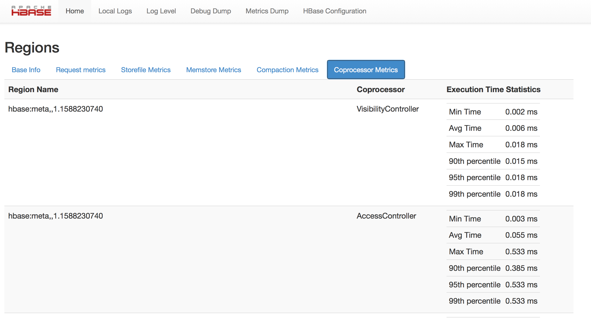
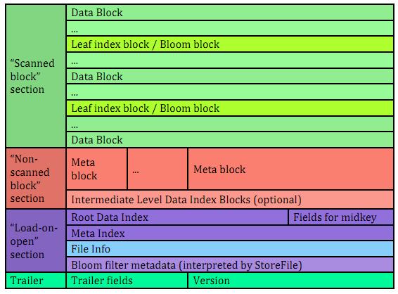

Copyright © 2014 Apache Software Foundation. All Rights Reserved. Apache Hadoop, Hadoop, MapReduce, HDFS, Zookeeper, HBase, and the HBase project logo are trademarks of the Apache Software Foundation.
| Revision History | |
|---|---|
| Revision 0.98.8-hadoop2 | 2014-11-14T18:17 |
Abstract
This is the official reference guide of Apache HBase™, a distributed, versioned, big data store built on top of Apache Hadoop™ and Apache ZooKeeper™.
Table of Contents
- Preface
- 1. Getting Started
- 2. Apache HBase Configuration
- 3. Upgrading
- 4. The Apache HBase Shell
- 5. Data Model
- 6. HBase and Schema Design
- 6.1. Schema Creation
- 6.2. On the number of column families
- 6.3. Rowkey Design
- 6.4. Number of Versions
- 6.5. Supported Datatypes
- 6.6. Joins
- 6.7. Time To Live (TTL)
- 6.8. Keeping Deleted Cells
- 6.9. Secondary Indexes and Alternate Query Paths
- 6.10. Constraints
- 6.11. Schema Design Case Studies
- 6.12. Operational and Performance Configuration Options
- 7. HBase and MapReduce
- 7.1. HBase, MapReduce, and the CLASSPATH
- 7.2. MapReduce Scan Caching
- 7.3. Bundled HBase MapReduce Jobs
- 7.4. HBase as a MapReduce Job Data Source and Data Sink
- 7.5. Writing HFiles Directly During Bulk Import
- 7.6. RowCounter Example
- 7.7. Map-Task Splitting
- 7.8. HBase MapReduce Examples
- 7.9. Accessing Other HBase Tables in a MapReduce Job
- 7.10. Speculative Execution
- 8. Secure Apache HBase
- 9. Architecture
- 10. Apache HBase APIs
- 11. Apache HBase External APIs
- 12. Thrift API and Filter Language
- 13. Apache HBase Coprocessors
- 14. Apache HBase Performance Tuning
- 15. Troubleshooting and Debugging Apache HBase
- 15.1. General Guidelines
- 15.2. Logs
- 15.3. Resources
- 15.4. Tools
- 15.5. Client
- 15.6. MapReduce
- 15.7. NameNode
- 15.8. Network
- 15.9. RegionServer
- 15.10. Master
- 15.11. ZooKeeper
- 15.12. Amazon EC2
- 15.13. HBase and Hadoop version issues
- 15.14. IPC Configuration Conflicts with Hadoop
- 15.15. HBase and HDFS
- 15.16. Running unit or integration tests
- 15.17. Case Studies
- 15.18. Cryptographic Features
- 15.19. Operating System Specific Issues
- 15.20. JDK Issues
- 16. Apache HBase Case Studies
- 17. Apache HBase Operational Management
- 18. Building and Developing Apache HBase
- 19. Unit Testing HBase Applications
- 20. ZooKeeper
- 21. Community
- A. Contributing to Documentation
- A.1. Getting Access to the Wiki
- A.2. Contributing to Documentation or Other Strings
- A.3. Editing the HBase Website
- A.4. Editing the HBase Reference Guide
- A.5. Auto-Generated Content
- A.6. Multi-Page and Single-Page Output
- A.7. Images in the HBase Reference Guide
- A.8. Adding a New Chapter to the HBase Reference Guide
- A.9. Docbook Common Issues
- B. FAQ
- C. hbck In Depth
- D. Access Control Matrix
- E. Compression and Data Block Encoding In HBase
- F. SQL over HBase
- G. YCSB: The Yahoo! Cloud Serving Benchmark and HBase
- H. HFile format
- I. Other Information About HBase
- J. HBase History
- K. HBase and the Apache Software Foundation
- L. Apache HBase Orca
- M. Enabling Dapper-like Tracing in HBase
- N. 0.95 RPC Specification
- Index
List of Figures
- 9.1. Region State Transitions
- 9.2. HFile Version 1
- 13.1. Coprocessor Metrics UI
- 17.1. Basic Info
- 17.2. Config
- 17.3. Stats
- 17.4. L1 and L2
- 17.5. Replication Architecture Overview
- E.1. ColumnFamily with No Encoding
- E.2. ColumnFamily with Prefix Encoding
- E.3. ColumnFamily with Diff Encoding
- H.1. HFile V1 Format
List of Tables
List of Examples
- 1.1. Example /etc/hosts File for Ubuntu
- 1.2. Example
hbase-site.xmlfor Standalone HBase - 1.3.
node-ajps Output - 1.4.
node-bjps Output - 1.5.
node-cjps Output - 2.1. Calculate the Potential Number of Open Files
- 2.2. Example Distributed HBase Cluster
- 4.1. Passing Commands to the HBase Shell
- 4.2. Checking the Result of a Scripted Command
- 4.3. Example Command File
- 4.4. Directing HBase Shell to Execute the Commands
- 5.1. Examples
- 5.2. Examples
- 5.3. Modify the Maximum Number of Versions for a Column
- 5.4. Modify the Minimum Number of Versions for a Column
- 6.1. Salting Example
- 6.2. Hashing Example
- 6.3. Change the Value of
KEEP_DELETED_CELLSUsing HBase Shell - 6.4. Change the Value of
KEEP_DELETED_CELLSUsing the API - 8.1. HBase Shell
- 8.2. API
- 8.3. Revoking Access To a Table
- 8.4. HBase Shell
- 8.5. API
- 8.6. HBase Shell
- 8.7. Java API
- 8.8. HBase Shell
- 8.9. Java API
- 8.10. HBase Shell
- 8.11. Java API
- 8.12. HBase Shell
- 8.13. Java API
- 8.14. HBase Shell
- 8.15. Java API
- 8.16. Example Security Settings in
hbase-site.xml - 8.17. Example Group Mapper in Hadoop
core-site.xml - 9.1. Pre-Creating a
HConnection - 10.1. Create a Table Using Java
- 10.2. Add, Modify, and Delete a Table
- 12.1. Compound Operators
- 12.2. Precedence Example
- 12.3. Example 1
- 12.4. Example 2
- 12.5. Example 3
- 12.6. Example 4
- 13.1. Example RegionObserver Configuration
- 13.2. Load a Coprocessor On a Table Using HBase Shell
- 13.3. Unload a Coprocessor From a Table Using HBase Shell
- 14.1. Enable Prefetch Using HBase Shell
- 14.2. Enable Prefetch Using the API
- 14.3. Hedged Reads Configuration Example
- 17.1.
rolling-restart.shGeneral Usage - 18.1. Code Blocks in Jira Comments
- 18.2. Example
~/.m2/settings.xmlFile - 18.3. Example of Committing a Patch
- B.1. Maven Dependency for HBase 0.98
- B.2. Maven Dependency for HBase 0.96
- B.3. Maven Dependency for HBase 0.94
- E.1. Enabling Compression on a ColumnFamily of an Existing Table using HBase Shell
- E.2. Creating a New Table with Compression On a ColumnFamily
- E.3. Verifying a ColumnFamily's Compression Settings
- E.4. LoadTestTool Usage
- E.5. Example Usage of LoadTestTool
- E.6. Enable Data Block Encoding On a Table
- E.7. Verifying a ColumnFamily's Data Block Encoding
This is the official reference guide for the HBase version it ships with. Herein you will find either the definitive documentation on an HBase topic as of its standing when the referenced HBase version shipped, or it will point to the location in javadoc, JIRA or wiki where the pertinent information can be found.
About This Guide. This reference guide is a work in progress. The source for this guide can be found in
the src/main/docbkx directory of the HBase source. This reference
guide is marked up using DocBook from
which the the finished guide is generated as part of the 'site' build target. Run
mvn site
to generate this documentation. Amendments and improvements to the documentation are welcomed. Click this link to file a new documentation bug against Apache HBase with some values pre-selected.
Contributing to the Documentation. For an overview of Docbook and suggestions to get started contributing to the documentation, see Appendix A, Contributing to Documentation.
Providing Feedback. This guide allows you to leave comments or questions on any page, using Disqus. Look for the Comments area at the bottom of the page. Answering these questions is a volunteer effort, and may be delayed.
Heads-up if this is your first foray into the world of distributed computing...
If this is your first foray into the wonderful world of Distributed Computing, then you are in for some interesting times. First off, distributed systems are hard; making a distributed system hum requires a disparate skillset that spans systems (hardware and software) and networking. Your cluster' operation can hiccup because of any of a myriad set of reasons from bugs in HBase itself through misconfigurations -- misconfiguration of HBase but also operating system misconfigurations -- through to hardware problems whether it be a bug in your network card drivers or an underprovisioned RAM bus (to mention two recent examples of hardware issues that manifested as "HBase is slow"). You will also need to do a recalibration if up to this your computing has been bound to a single box. Here is one good starting point: Fallacies of Distributed Computing. That said, you are welcome. Its a fun place to be. Yours, the HBase Community.
Table of Contents
Section 1.2, “Quick Start - Standalone HBase” will get you up and running on a single-node, standalone instance of HBase, followed by a pseudo-distributed single-machine instance, and finally a fully-distributed cluster.
This guide describes setup of a standalone HBase instance running against the local filesystem. This is not an appropriate configuration for a production instance of HBase, but will allow you to experiment with HBase. This section shows you how to create a table in HBase using the hbase shell CLI, insert rows into the table, perform put and scan operations against the table, enable or disable the table, and start and stop HBase. Apart from downloading HBase, this procedure should take less than 10 minutes.
Local Filesystem and Durability
The below advice is for HBase 0.98.2 and earlier releases only. This is fixed in HBase 0.98.3 and beyond. See HBASE-11272 and HBASE-11218.
Using HBase with a local filesystem does not guarantee durability. The HDFS local filesystem implementation will lose edits if files are not properly closed. This is very likely to happen when you are experimenting with new software, starting and stopping the daemons often and not always cleanly. You need to run HBase on HDFS to ensure all writes are preserved. Running against the local filesystem is intended as a shortcut to get you familiar with how the general system works, as the very first phase of evaluation. See https://issues.apache.org/jira/browse/HBASE-3696 and its associated issues for more details about the issues of running on the local filesystem.
Loopback IP - HBase 0.94.x and earlier
The below advice is for hbase-0.94.x and older versions only. This is fixed in hbase-0.96.0 and beyond.
Prior to HBase 0.94.x, HBase expected the loopback IP address to be 127.0.0.1. Ubuntu and some other distributions default to 127.0.1.1 and this will cause problems for you . See Why does HBase care about /etc/hosts? for detail.
Example 1.1. Example /etc/hosts File for Ubuntu
The following /etc/hosts file works correctly for HBase 0.94.x
and earlier, on Ubuntu. Use this as a template if you run into trouble.
127.0.0.1 localhost
127.0.0.1 ubuntu.ubuntu-domain ubuntu
HBase requires that a JDK be installed. See Table 2.1, “Java” for information about supported JDK versions.
Procedure 1.1. Download, Configure, and Start HBase
Choose a download site from this list of Apache Download Mirrors. Click on the suggested top link. This will take you to a mirror of HBase Releases. Click on the folder named
stableand then download the binary file that ends in.tar.gzto your local filesystem. Be sure to choose the version that corresponds with the version of Hadoop you are likely to use later. In most cases, you should choose the file for Hadoop 2, which will be called something likehbase-0.98.3-hadoop2-bin.tar.gz. Do not download the file ending insrc.tar.gzfor now.Extract the downloaded file, and change to the newly-created directory.
$ tar xzvf hbase-<?eval ${project.version}?>-hadoop2-bin.tar.gz $ cd hbase-<?eval ${project.version}?>-hadoop2/For HBase 0.98.5 and later, you are required to set the
JAVA_HOMEenvironment variable before starting HBase. Prior to 0.98.5, HBase attempted to detect the location of Java if the variables was not set. You can set the variable via your operating system's usual mechanism, but HBase provides a central mechanism,conf/hbase-env.sh. Edit this file, uncomment the line starting withJAVA_HOME, and set it to the appropriate location for your operating system. TheJAVA_HOMEvariable should be set to a directory which contains the executable filebin/java. Most modern Linux operating systems provide a mechanism, such as /usr/bin/alternatives on RHEL or CentOS, for transparently switching between versions of executables such as Java. In this case, you can setJAVA_HOMEto the directory containing the symbolic link tobin/java, which is usually/usr.JAVA_HOME=/usr
Note
These instructions assume that each node of your cluster uses the same configuration. If this is not the case, you may need to set
JAVA_HOMEseparately for each node.Edit
conf/hbase-site.xml, which is the main HBase configuration file. At this time, you only need to specify the directory on the local filesystem where HBase and Zookeeper write data. By default, a new directory is created under /tmp. Many servers are configured to delete the contents of /tmp upon reboot, so you should store the data elsewhere. The following configuration will store HBase's data in thehbasedirectory, in the home directory of the user calledtestuser. Paste the <property> tags beneath the <configuration> tags, which should be empty in a new HBase install.Example 1.2. Example
hbase-site.xmlfor Standalone HBase<configuration> <property> <name>hbase.rootdir</name> <value>file:///home/testuser/hbase</value> </property> <property> <name>hbase.zookeeper.property.dataDir</name> <value>/home/testuser/zookeeper</value> </property> </configuration>You do not need to create the HBase data directory. HBase will do this for you. If you create the directory, HBase will attempt to do a migration, which is not what you want.
The
bin/start-hbase.shscript is provided as a convenient way to start HBase. Issue the command, and if all goes well, a message is logged to standard output showing that HBase started successfully. You can use the jps command to verify that you have one running process calledHMaster. In standalone mode HBase runs all daemons within this single JVM, i.e. the HMaster, a single HRegionServer, and the ZooKeeper daemon.Note
Java needs to be installed and available. If you get an error indicating that Java is not installed, but it is on your system, perhaps in a non-standard location, edit the
conf/hbase-env.shfile and modify theJAVA_HOMEsetting to point to the directory that containsbin/javayour system.
Procedure 1.2. Use HBase For the First Time
Connect to HBase.
Connect to your running instance of HBase using the hbase shell command, located in the
bin/directory of your HBase install. In this example, some usage and version information that is printed when you start HBase Shell has been omitted. The HBase Shell prompt ends with a>character.$
./bin/hbase shellhbase(main):001:0>Display HBase Shell Help Text.
Type
helpand press Enter, to display some basic usage information for HBase Shell, as well as several example commands. Notice that table names, rows, columns all must be enclosed in quote characters.Create a table.
Use the
createcommand to create a new table. You must specify the table name and the ColumnFamily name.hbase>
create 'test', 'cf'0 row(s) in 1.2200 secondsList Information About your Table
Use the
listcommand tohbase>
list 'test'TABLE test 1 row(s) in 0.0350 seconds => ["test"]Put data into your table.
To put data into your table, use the
putcommand.hbase>
put 'test', 'row1', 'cf:a', 'value1'0 row(s) in 0.1770 seconds hbase>put 'test', 'row2', 'cf:b', 'value2'0 row(s) in 0.0160 seconds hbase>put 'test', 'row3', 'cf:c', 'value3'0 row(s) in 0.0260 secondsHere, we insert three values, one at a time. The first insert is at
row1, columncf:a, with a value ofvalue1. Columns in HBase are comprised of a column family prefix,cfin this example, followed by a colon and then a column qualifier suffix,ain this case.Scan the table for all data at once.
One of the ways to get data from HBase is to scan. Use the scan command to scan the table for data. You can limit your scan, but for now, all data is fetched.
hbase>
scan 'test'ROW COLUMN+CELL row1 column=cf:a, timestamp=1403759475114, value=value1 row2 column=cf:b, timestamp=1403759492807, value=value2 row3 column=cf:c, timestamp=1403759503155, value=value3 3 row(s) in 0.0440 secondsGet a single row of data.
To get a single row of data at a time, use the get command.
hbase>
get 'test', 'row1'COLUMN CELL cf:a timestamp=1403759475114, value=value1 1 row(s) in 0.0230 secondsDisable a table.
If you want to delete a table or change its settings, as well as in some other situations, you need to disable the table first, using the
disablecommand. You can re-enable it using theenablecommand.hbase> disable 'test' 0 row(s) in 1.6270 seconds hbase> enable 'test' 0 row(s) in 0.4500 secondsDisable the table again if you tested the enable command above:
hbase> disable 'test' 0 row(s) in 1.6270 secondsDrop the table.
To drop (delete) a table, use the
dropcommand.hbase> drop 'test' 0 row(s) in 0.2900 secondsExit the HBase Shell.
To exit the HBase Shell and disconnect from your cluster, use the quit command. HBase is still running in the background.
Procedure 1.3. Stop HBase
In the same way that the
bin/start-hbase.shscript is provided to conveniently start all HBase daemons, thebin/stop-hbase.shscript stops them.$ ./bin/stop-hbase.sh stopping hbase.................... $After issuing the command, it can take several minutes for the processes to shut down. Use the jps to be sure that the HMaster and HRegionServer processes are shut down.
After working your way through Section 1.2, “Quick Start - Standalone HBase”, you can re-configure HBase
to run in pseudo-distributed mode. Pseudo-distributed mode means
that HBase still runs completely on a single host, but each HBase daemon (HMaster,
HRegionServer, and Zookeeper) runs as a separate process. By default, unless you configure the
hbase.rootdir property as described in Section 1.2, “Quick Start - Standalone HBase”, your data
is still stored in /tmp/. In this walk-through, we store your data in
HDFS instead, assuming you have HDFS available. You can skip the HDFS configuration to
continue storing your data in the local filesystem.
Hadoop Configuration
This procedure assumes that you have configured Hadoop and HDFS on your local system and or a remote system, and that they are running and available. It also assumes you are using Hadoop 2. Currently, the documentation on the Hadoop website does not include a quick start for Hadoop 2, but the guide at http://www.alexjf.net/blog/distributed-systems/hadoop-yarn-installation-definitive-guide is a good starting point.
Stop HBase if it is running.
If you have just finished Section 1.2, “Quick Start - Standalone HBase” and HBase is still running, stop it. This procedure will create a totally new directory where HBase will store its data, so any databases you created before will be lost.
Configure HBase.
Edit the
hbase-site.xmlconfiguration. First, add the following property. which directs HBase to run in distributed mode, with one JVM instance per daemon.<property> <name>hbase.cluster.distributed</name> <value>true</value> </property>Next, change the
hbase.rootdirfrom the local filesystem to the address of your HDFS instance, using thehdfs:////URI syntax. In this example, HDFS is running on the localhost at port 8020.<property> <name>hbase.rootdir</name> <value>hdfs://localhost:8020/hbase</value> </property>You do not need to create the directory in HDFS. HBase will do this for you. If you create the directory, HBase will attempt to do a migration, which is not what you want.
Start HBase.
Use the
bin/start-hbase.shcommand to start HBase. If your system is configured correctly, the jps command should show the HMaster and HRegionServer processes running.Check the HBase directory in HDFS.
If everything worked correctly, HBase created its directory in HDFS. In the configuration above, it is stored in
/hbase/on HDFS. You can use the hadoop fs command in Hadoop'sbin/directory to list this directory.$
./bin/hadoop fs -ls /hbaseFound 7 items drwxr-xr-x - hbase users 0 2014-06-25 18:58 /hbase/.tmp drwxr-xr-x - hbase users 0 2014-06-25 21:49 /hbase/WALs drwxr-xr-x - hbase users 0 2014-06-25 18:48 /hbase/corrupt drwxr-xr-x - hbase users 0 2014-06-25 18:58 /hbase/data -rw-r--r-- 3 hbase users 42 2014-06-25 18:41 /hbase/hbase.id -rw-r--r-- 3 hbase users 7 2014-06-25 18:41 /hbase/hbase.version drwxr-xr-x - hbase users 0 2014-06-25 21:49 /hbase/oldWALsCreate a table and populate it with data.
You can use the HBase Shell to create a table, populate it with data, scan and get values from it, using the same procedure as in Procedure 1.2, “Use HBase For the First Time”.
Start and stop a backup HBase Master (HMaster) server.
Note
Running multiple HMaster instances on the same hardware does not make sense in a production environment, in the same way that running a pseudo-distributed cluster does not make sense for production. This step is offered for testing and learning purposes only.
The HMaster server controls the HBase cluster. You can start up to 9 backup HMaster servers, which makes 10 total HMasters, counting the primary. To start a backup HMaster, use the local-master-backup.sh. For each backup master you want to start, add a parameter representing the port offset for that master. Each HMaster uses three ports (16010, 16020, and 16030 by default). The port offset is added to these ports, so using an offset of 2, the backup HMaster would use ports 16012, 16022, and 16032. The following command starts 3 backup servers using ports 16012/16022/16032, 16013/16023/16033, and 16015/16025/16035.
$ ./bin/local-master-backup.sh 2 3 5To kill a backup master without killing the entire cluster, you need to find its process ID (PID). The PID is stored in a file with a name like
/tmp/hbase-. The only contents of the file are the PID. You can use the kill -9 command to kill that PID. The following command will kill the master with port offset 1, but leave the cluster running:USER-X-master.pid$ cat /tmp/hbase-testuser-1-master.pid |xargs kill -9Start and stop additional RegionServers
The HRegionServer manages the data in its StoreFiles as directed by the HMaster. Generally, one HRegionServer runs per node in the cluster. Running multiple HRegionServers on the same system can be useful for testing in pseudo-distributed mode. The local-regionservers.sh command allows you to run multiple RegionServers. It works in a similar way to the local-master-backup.sh command, in that each parameter you provide represents the port offset for an instance. Each RegionServer requires two ports, and the default ports are 16020 and 16030. However, the base ports for additional RegionServers are not the default ports since the default ports are used by the HMaster, which is also a RegionServer since HBase version 1.0.0. The base ports are 16200 and 16300 instead. You can run 99 additional RegionServers that are not a HMaster or backup HMaster, on a server. The following command starts four additional RegionServers, running on sequential ports starting at 16202/16302 (base ports 16200/16300 plus 2).
$ .bin/local-regionservers.sh start 2 3 4 5To stop a RegionServer manually, use the local-regionservers.sh command with the
stopparameter and the offset of the server to stop.$ .bin/local-regionservers.sh stop 3
Stop HBase.
You can stop HBase the same way as in the Section 1.2, “Quick Start - Standalone HBase” procedure, using the
bin/stop-hbase.shcommand.
In reality, you need a fully-distributed configuration to fully test HBase and to use it in real-world scenarios. In a distributed configuration, the cluster contains multiple nodes, each of which runs one or more HBase daemon. These include primary and backup Master instances, multiple Zookeeper nodes, and multiple RegionServer nodes.
This advanced quickstart adds two more nodes to your cluster. The architecture will be as follows:
Table 1.1. Distributed Cluster Demo Architecture
| Node Name | Master | ZooKeeper | RegionServer |
|---|---|---|---|
| node-a.example.com | yes | yes | no |
| node-b.example.com | backup | yes | yes |
| node-c.example.com | no | yes | yes |
This quickstart assumes that each node is a virtual machine and that they are all on the
same network. It builds upon the previous quickstart, Section 1.2.3, “Intermediate - Pseudo-Distributed Local Install”,
assuming that the system you configured in that procedure is now node-a. Stop HBase on node-a
before continuing.
Note
Be sure that all the nodes have full access to communicate, and that no firewall rules
are in place which could prevent them from talking to each other. If you see any errors like
no route to host, check your firewall.
Procedure 1.4. Configure Password-Less SSH Access
node-a needs to be able to log into node-b and
node-c (and to itself) in order to start the daemons. The easiest way to accomplish this is
to use the same username on all hosts, and configure password-less SSH login from
node-a to each of the others.
On
node-a, generate a key pair.While logged in as the user who will run HBase, generate a SSH key pair, using the following command:
$ ssh-keygen -t rsa
If the command succeeds, the location of the key pair is printed to standard output. The default name of the public key is
id_rsa.pub.Create the directory that will hold the shared keys on the other nodes.
On
node-bandnode-c, log in as the HBase user and create a.ssh/directory in the user's home directory, if it does not already exist. If it already exists, be aware that it may already contain other keys.Copy the public key to the other nodes.
Securely copy the public key from
node-ato each of the nodes, by using the scp or some other secure means. On each of the other nodes, create a new file called.ssh/authorized_keysif it does not already exist, and append the contents of theid_rsa.pubfile to the end of it. Note that you also need to do this fornode-aitself.$ cat id_rsa.pub >> ~/.ssh/authorized_keys
Test password-less login.
If you performed the procedure correctly, if you SSH from
node-ato either of the other nodes, using the same username, you should not be prompted for a password.Since
node-bwill run a backup Master, repeat the procedure above, substitutingnode-beverywhere you seenode-a. Be sure not to overwrite your existing.ssh/authorized_keysfiles, but concatenate the new key onto the existing file using the>>operator rather than the>operator.
Procedure 1.5. Prepare node-a
node-a will run your primary master and ZooKeeper processes, but no
RegionServers.
Stop the RegionServer from starting on
node-a.Edit
conf/regionserversand remove the line which containslocalhost. Add lines with the hostnames or IP addresses fornode-bandnode-c. Even if you did want to run a RegionServer onnode-a, you should refer to it by the hostname the other servers would use to communicate with it. In this case, that would benode-a.example.com. This enables you to distribute the configuration to each node of your cluster any hostname conflicts. Save the file.Configure HBase to use
node-bas a backup master.Create a new file in
conf/calledbackup-masters, and add a new line to it with the hostname fornode-b. In this demonstration, the hostname isnode-b.example.com.Configure ZooKeeper
In reality, you should carefully consider your ZooKeeper configuration. You can find out more about configuring ZooKeeper in Chapter 20, ZooKeeper. This configuration will direct HBase to start and manage a ZooKeeper instance on each node of the cluster.
On
node-a, editconf/hbase-site.xmland add the following properties.<property> <name>hbase.zookeeper.quorum</name> <value>node-a.example.com,node-b.example.com,node-c.example.com</value> </property> <property> <name>hbase.zookeeper.property.dataDir</name> <value>/usr/local/zookeeper</value> </property>Everywhere in your configuration that you have referred to
node-aaslocalhost, change the reference to point to the hostname that the other nodes will use to refer tonode-a. In these examples, the hostname isnode-a.example.com.
Procedure 1.6. Prepare node-b and node-c
node-b will run a backup master server and a ZooKeeper instance.
Download and unpack HBase.
Download and unpack HBase to
node-b, just as you did for the standalone and pseudo-distributed quickstarts.Copy the configuration files from
node-atonode-b.andnode-c.Each node of your cluster needs to have the same configuration information. Copy the contents of the
conf/directory to theconf/directory onnode-bandnode-c.
Procedure 1.7. Start and Test Your Cluster
Be sure HBase is not running on any node.
If you forgot to stop HBase from previous testing, you will have errors. Check to see whether HBase is running on any of your nodes by using the jps command. Look for the processes
HMaster,HRegionServer, andHQuorumPeer. If they exist, kill them.Start the cluster.
On
node-a, issue the start-hbase.sh command. Your output will be similar to that below.$
bin/start-hbase.shnode-c.example.com: starting zookeeper, logging to /home/hbuser/hbase-0.98.3-hadoop2/bin/../logs/hbase-hbuser-zookeeper-node-c.example.com.out node-a.example.com: starting zookeeper, logging to /home/hbuser/hbase-0.98.3-hadoop2/bin/../logs/hbase-hbuser-zookeeper-node-a.example.com.out node-b.example.com: starting zookeeper, logging to /home/hbuser/hbase-0.98.3-hadoop2/bin/../logs/hbase-hbuser-zookeeper-node-b.example.com.out starting master, logging to /home/hbuser/hbase-0.98.3-hadoop2/bin/../logs/hbase-hbuser-master-node-a.example.com.out node-c.example.com: starting regionserver, logging to /home/hbuser/hbase-0.98.3-hadoop2/bin/../logs/hbase-hbuser-regionserver-node-c.example.com.out node-b.example.com: starting regionserver, logging to /home/hbuser/hbase-0.98.3-hadoop2/bin/../logs/hbase-hbuser-regionserver-node-b.example.com.out node-b.example.com: starting master, logging to /home/hbuser/hbase-0.98.3-hadoop2/bin/../logs/hbase-hbuser-master-nodeb.example.com.outZooKeeper starts first, followed by the master, then the RegionServers, and finally the backup masters.
Verify that the processes are running.
On each node of the cluster, run the jps command and verify that the correct processes are running on each server. You may see additional Java processes running on your servers as well, if they are used for other purposes.
ZooKeeper Process Name
The
HQuorumPeerprocess is a ZooKeeper instance which is controlled and started by HBase. If you use ZooKeeper this way, it is limited to one instance per cluster node, , and is appropriate for testing only. If ZooKeeper is run outside of HBase, the process is calledQuorumPeer. For more about ZooKeeper configuration, including using an external ZooKeeper instance with HBase, see Chapter 20, ZooKeeper.Browse to the Web UI.
Web UI Port Changes
In HBase newer than 0.98.x, the HTTP ports used by the HBase Web UI changed from 60010 for the Master and 60030 for each RegionServer to 16610 for the Master and 16030 for the RegionServer.
If everything is set up correctly, you should be able to connect to the UI for the Master
http://node-a.example.com:60110/or the secondary master athttp://node-b.example.com:60110/for the secondary master, using a web browser. If you can connect vialocalhostbut not from another host, check your firewall rules. You can see the web UI for each of the RegionServers at port 60130 of their IP addresses, or by clicking their links in the web UI for the Master.Test what happens when nodes or services disappear.
With a three-node cluster like you have configured, things will not be very resilient. Still, you can test what happens when the primary Master or a RegionServer disappears, by killing the processes and watching the logs.
The next chapter, Chapter 2, Apache HBase Configuration, gives more information about the different HBase run modes, system requirements for running HBase, and critical configuration areas for setting up a distributed HBase cluster.
Table of Contents
This chapter expands upon the Chapter 1, Getting Started chapter to further explain configuration of Apache HBase. Please read this chapter carefully, especially Section 2.1, “Basic Prerequisites” to ensure that your HBase testing and deployment goes smoothly, and prevent data loss.
Apache HBase uses the same configuration system as Apache Hadoop. All configuration files
are located in the conf/ directory, which needs to be kept in sync for each
node on your cluster.
HBase Configuration Files
backup-mastersNot present by default. A plain-text file which lists hosts on which the Master should start a backup Master process, one host per line.
hadoop-metrics2-hbase.propertiesUsed to connect HBase Hadoop's Metrics2 framework. See the Hadoop Wiki entry for more information on Metrics2. Contains only commented-out examples by default.
hbase-env.cmdandhbase-env.shScript for Windows and Linux / Unix environments to set up the working environment for HBase, including the location of Java, Java options, and other environment variables. The file contains many commented-out examples to provide guidance.
Note
In HBase 0.98.5 and newer, you must set
JAVA_HOMEon each node of your cluster.hbase-env.shprovides a handy mechanism to do this.hbase-policy.xmlThe default policy configuration file used by RPC servers to make authorization decisions on client requests. Only used if HBase security (Chapter 8, Secure Apache HBase) is enabled.
hbase-site.xmlThe main HBase configuration file. This file specifies configuration options which override HBase's default configuration. You can view (but do not edit) the default configuration file at
docs/hbase-default.xml. You can also view the entire effective configuration for your cluster (defaults and overrides) in the HBase Configuration tab of the HBase Web UI.log4j.propertiesConfiguration file for HBase logging via
log4j.regionserversA plain-text file containing a list of hosts which should run a RegionServer in your HBase cluster. By default this file contains the single entry
localhost. It should contain a list of hostnames or IP addresses, one per line, and should only containlocalhostif each node in your cluster will run a RegionServer on itslocalhostinterface.
Checking XML Validity
When you edit XML, it is a good idea to use an XML-aware editor to be sure that your
syntax is correct and your XML is well-formed. You can also use the xmllint
utility to check that your XML is well-formed. By default, xmllint re-flows
and prints the XML to standard output. To check for well-formedness and only print output if
errors exist, use the command xmllint -noout
filename.xml.
Keep Configuration In Sync Across the Cluster
When running in distributed mode, after you make an edit to an HBase configuration, make
sure you copy the content of the conf/ directory to all nodes of the
cluster. HBase will not do this for you. Use rsync, scp,
or another secure mechanism for copying the configuration files to your nodes. For most
configuration, a restart is needed for servers to pick up changes An exception is dynamic
configuration. to be described later below.
This section lists required services and some required system configuration.
Table 2.1. Java
| HBase Version | JDK 6 | JDK 7 | JDK 8 |
|---|---|---|---|
| 1.0 | Not Supported | yes | Running with JDK 8 will work but is not well tested. |
| 0.98 | yes | yes | Running with JDK 8 works but is not well tested. Building with JDK 8 would require removal of the deprecated remove() method of the PoolMap class and is under consideration. See ee HBASE-7608 for more information about JDK 8 support. |
| 0.96 | yes | yes | |
| 0.94 | yes | yes |
[D]
Note
In HBase 0.98.5 and newer, you must set JAVA_HOME on each node of
your cluster. hbase-env.sh provides a handy mechanism to do
this.
Operating System Utilities
- ssh
HBase uses the Secure Shell (ssh) command and utilities extensively to communicate between cluster nodes. Each server in the cluster must be running ssh so that the Hadoop and HBase daemons can be managed. You must be able to connect to all nodes via SSH, including the local node, from the Master as well as any backup Master, using a shared key rather than a password. You can see the basic methodology for such a set-up in Linux or Unix systems at Procedure 1.4, “Configure Password-Less SSH Access”. If your cluster nodes use OS X, see the section, SSH: Setting up Remote Desktop and Enabling Self-Login on the Hadoop wiki.
- DNS
HBase uses the local hostname to self-report its IP address. Both forward and reverse DNS resolving must work in versions of HBase previous to 0.92.0. The hadoop-dns-checker tool can be used to verify DNS is working correctly on the cluster. The project README file provides detailed instructions on usage.
If your server has multiple network interfaces, HBase defaults to using the interface that the primary hostname resolves to. To override this behavior, set the
hbase.regionserver.dns.interfaceproperty to a different interface. This will only work if each server in your cluster uses the same network interface configuration.To choose a different DNS nameserver than the system default, set the
hbase.regionserver.dns.nameserverproperty to the IP address of that nameserver.- Loopback IP
Prior to hbase-0.96.0, HBase only used the IP address
127.0.0.1to refer tolocalhost, and this could not be configured. See Loopback IP.- NTP
The clocks on cluster nodes should be synchronized. A small amount of variation is acceptable, but larger amounts of skew can cause erratic and unexpected behavior. Time synchronization is one of the first things to check if you see unexplained problems in your cluster. It is recommended that you run a Network Time Protocol (NTP) service, or another time-synchronization mechanism, on your cluster, and that all nodes look to the same service for time synchronization. See the Basic NTP Configuration at The Linux Documentation Project (TLDP) to set up NTP.
- Limits on Number of Files and Processes (ulimit)
Apache HBase is a database. It requires the ability to open a large number of files at once. Many Linux distributions limit the number of files a single user is allowed to open to
1024(or256on older versions of OS X). You can check this limit on your servers by running the command ulimit -n when logged in as the user which runs HBase. See Section 15.9.2.2, “java.io.IOException...(Too many open files)” for some of the problems you may experience if the limit is too low. You may also notice errors such as the following:2010-04-06 03:04:37,542 INFO org.apache.hadoop.hdfs.DFSClient: Exception increateBlockOutputStream java.io.EOFException 2010-04-06 03:04:37,542 INFO org.apache.hadoop.hdfs.DFSClient: Abandoning block blk_-6935524980745310745_1391901It is recommended to raise the ulimit to at least 10,000, but more likely 10,240, because the value is usually expressed in multiples of 1024. Each ColumnFamily has at least one StoreFile, and possibly more than 6 StoreFiles if the region is under load. The number of open files required depends upon the number of ColumnFamilies and the number of regions. The following is a rough formula for calculating the potential number of open files on a RegionServer.
Example 2.1. Calculate the Potential Number of Open Files
(StoreFiles per ColumnFamily) x (regions per RegionServer)
For example, assuming that a schema had 3 ColumnFamilies per region with an average of 3 StoreFiles per ColumnFamily, and there are 100 regions per RegionServer, the JVM will open 3 * 3 * 100 = 900 file descriptors, not counting open JAR files, configuration files, and others. Opening a file does not take many resources, and the risk of allowing a user to open too many files is minimal.
Another related setting is the number of processes a user is allowed to run at once. In Linux and Unix, the number of processes is set using the ulimit -u command. This should not be confused with the nproc command, which controls the number of CPUs available to a given user. Under load, a
nprocthat is too low can cause OutOfMemoryError exceptions. See Jack Levin's major hdfs issues thread on the hbase-users mailing list, from 2011.Configuring the fmaximum number of ile descriptors and processes for the user who is running the HBase process is an operating system configuration, rather than an HBase configuration. It is also important to be sure that the settings are changed for the user that actually runs HBase. To see which user started HBase, and that user's ulimit configuration, look at the first line of the HBase log for that instance. A useful read setting config on you hadoop cluster is Aaron Kimballs' Configuration Parameters: What can you just ignore?
ulimit Settings on Ubuntu. To configure ulimit settings on Ubuntu, edit
/etc/security/limits.conf, which is a space-delimited file with four columns. Refer to the man page for limits.conf for details about the format of this file. In the following example, the first line sets both soft and hard limits for the number of open files (nofile) to32768for the operating system user with the usernamehadoop. The second line sets the number of processes to 32000 for the same user.hadoop - nofile 32768 hadoop - nproc 32000The settings are only applied if the Pluggable Authentication Module (PAM) environment is directed to use them. To configure PAM to use these limits, be sure that the
/etc/pam.d/common-sessionfile contains the following line:session required pam_limits.so
- Windows
Prior to HBase 0.96, testing for running HBase on Microsoft Windows was limited. Running a on Windows nodes is not recommended for production systems.
To run versions of HBase prior to 0.96 on Microsoft Windows, you must install Cygwin and run HBase within the Cygwin environment. This provides support for Linux/Unix commands and scripts. The full details are explained in the Windows Installation guide. Also search our user mailing list to pick up latest fixes figured by Windows users.
Post-hbase-0.96.0, hbase runs natively on windows with supporting *.cmd scripts bundled.
2.1.1. Hadoop
The following table summarizes the versions of Hadoop supported with each version of HBase. Based on the version of HBase, you should select the most appropriate version of Hadoop. You can use Apache Hadoop, or a vendor's distribution of Hadoop. No distinction is made here. See http://wiki.apache.org/hadoop/Distributions%20and%20Commercial%20Support for information about vendors of Hadoop.
Hadoop 2.x is recommended.
Hadoop 2.x is faster and includes features, such as short-circuit reads, which will help improve your HBase random read profile. Hadoop 2.x also includes important bug fixes that will improve your overall HBase experience. HBase 0.98 drops support for Hadoop 1.0, deprecates use of Hadoop 1.1+, and HBase 1.0 will not support Hadoop 1.x.
Use the following legend to interpret this table:
| S = supported and tested, |
| X = not supported, |
| NT = it should run, but not tested enough. |
Table 2.2. Hadoop version support matrix
| HBase-0.92.x | HBase-0.94.x | HBase-0.96.x | HBase-0.98.x (Support for Hadoop 1.1+ is deprecated.) | HBase-1.0.x (Hadoop 1.x is NOT supported) | |
|---|---|---|---|---|---|
| Hadoop-0.20.205 | S | X | X | X | X |
| Hadoop-0.22.x | S | X | X | X | X |
| Hadoop-1.0.x | X | X | X | X | X |
| Hadoop-1.1.x | NT | S | S | NT | X |
| Hadoop-0.23.x | X | S | NT | X | X |
| Hadoop-2.0.x-alpha | X | NT | X | X | X |
| Hadoop-2.1.0-beta | X | NT | S | X | X |
| Hadoop-2.2.0 | X | NT | S | S | NT |
| Hadoop-2.3.x | X | NT | S | S | NT |
| Hadoop-2.4.x | X | NT | S | S | S |
| Hadoop-2.5.x | X | NT | S | S | S |
Replace the Hadoop Bundled With HBase!
Because HBase depends on Hadoop, it bundles an instance of the Hadoop jar under its
lib directory. The bundled jar is ONLY for use in standalone mode.
In distributed mode, it is critical that the version of Hadoop that
is out on your cluster match what is under HBase. Replace the hadoop jar found in the
HBase lib directory with the hadoop jar you are running on your cluster to avoid version
mismatch issues. Make sure you replace the jar in HBase everywhere on your cluster. Hadoop
version mismatch issues have various manifestations but often all looks like its hung up.
To get 0.94.x to run on hadoop 2.2.0, you need to change the hadoop
2 and protobuf versions in the pom.xml: Here is a diff with
pom.xml changes:
$ svn diff pom.xml
Index: pom.xml
===================================================================
--- pom.xml (revision 1545157)
+++ pom.xml (working copy)
@@ -1034,7 +1034,7 @@
<slf4j.version>1.4.3</slf4j.version>
<log4j.version>1.2.16</log4j.version>
<mockito-all.version>1.8.5</mockito-all.version>
- <protobuf.version>2.4.0a</protobuf.version>
+ <protobuf.version>2.5.0</protobuf.version>
<stax-api.version>1.0.1</stax-api.version>
<thrift.version>0.8.0</thrift.version>
<zookeeper.version>3.4.5</zookeeper.version>
@@ -2241,7 +2241,7 @@
</property>
</activation>
<properties>
- <hadoop.version>2.0.0-alpha</hadoop.version>
+ <hadoop.version>2.2.0</hadoop.version>
<slf4j.version>1.6.1</slf4j.version>
</properties>
<dependencies>
The next step is to regenerate Protobuf files and assuming that the Protobuf has been installed:
Go to the hbase root folder, using the command line;
Type the following commands:
$ protoc -Isrc/main/protobuf --java_out=src/main/java src/main/protobuf/hbase.proto
$ protoc -Isrc/main/protobuf --java_out=src/main/java src/main/protobuf/ErrorHandling.proto
Building against the hadoop 2 profile by running something like the following command:
$ mvn clean install assembly:single -Dhadoop.profile=2.0 -DskipTests
HBase 0.92 and 0.94 versions can work with Hadoop versions, 0.20.205, 0.22.x, 1.0.x, and 1.1.x. HBase-0.94 can additionally work with Hadoop-0.23.x and 2.x, but you may have to recompile the code using the specific maven profile (see top level pom.xml)
As of Apache HBase 0.96.x, Apache Hadoop 1.0.x at least is required. Hadoop 2 is strongly encouraged (faster but also has fixes that help MTTR). We will no longer run properly on older Hadoops such as 0.20.205 or branch-0.20-append. Do not move to Apache HBase 0.96.x if you cannot upgrade your Hadoop.. See HBase, mail # dev - DISCUSS: Have hbase require at least hadoop 1.0.0 in hbase 0.96.0?
HBase will lose data unless it is running on an HDFS that has a durable
sync implementation. DO NOT use Hadoop 0.20.2, Hadoop 0.20.203.0, and
Hadoop 0.20.204.0 which DO NOT have this attribute. Currently only Hadoop versions
0.20.205.x or any release in excess of this version -- this includes hadoop-1.0.0 -- have
a working, durable sync. The Cloudera blog post An
update on Apache Hadoop 1.0 by Charles Zedlweski has a nice exposition on how all
the Hadoop versions relate. Its worth checking out if you are having trouble making sense
of the Hadoop version morass.
Sync has to be explicitly enabled by setting
dfs.support.append equal to true on both the client side -- in
hbase-site.xml -- and on the serverside in
hdfs-site.xml (The sync facility HBase needs is a subset of the
append code path).
<property> <name>dfs.support.append</name> <value>true</value> </property>
You will have to restart your cluster after making this edit. Ignore the
chicken-little comment you'll find in the hdfs-default.xml in the
description for the dfs.support.append configuration.
Apache HBase will run on any Hadoop 0.20.x that incorporates Hadoop security features as long as you do as suggested above and replace the Hadoop jar that ships with HBase with the secure version. If you want to read more about how to setup Secure HBase, see Section 8.1, “Secure Client Access to Apache HBase”.
An HDFS datanode has an upper bound on the number of files that it will serve
at any one time. Before doing any loading, make sure you have configured
Hadoop's conf/hdfs-site.xml, setting the
dfs.datanode.max.transfer.threads value to at least the following:
<property>
<name>dfs.datanode.max.transfer.threads</name>
<value>4096</value>
</property>
Be sure to restart your HDFS after making the above configuration.
Not having this configuration in place makes for strange-looking failures. One manifestation is a complaint about missing blocks. For example:
10/12/08 20:10:31 INFO hdfs.DFSClient: Could not obtain block
blk_XXXXXXXXXXXXXXXXXXXXXX_YYYYYYYY from any node: java.io.IOException: No live nodes
contain current block. Will get new block locations from namenode and retry...See also Section 16.3.4, “Case Study #4 (max.transfer.threads Config)” and note that this
property was previously known as dfs.datanode.max.xcievers (e.g.
Hadoop HDFS: Deceived by Xciever).
ZooKeeper 3.4.x is required as of HBase 1.0.0. HBase makes use of the
multi functionality that is only available since 3.4.0
(The useMulti is defaulted true in HBase 1.0.0).
See HBASE-12241 The crash of regionServer when taking deadserver's replication queue breaks replication
and Use ZK.multi when available for HBASE-6710 0.92/0.94 compatibility fix for background.
HBase has two run modes: Section 2.2.1, “Standalone HBase” and Section 2.2.2, “Distributed”. Out of the box, HBase runs in standalone mode. Whatever your mode,
you will need to configure HBase by editing files in the HBase conf
directory. At a minimum, you must edit conf/hbase-env.sh to tell HBase which
java to use. In this file you set HBase environment variables such as the
heapsize and other options for the JVM, the preferred location for
log files, etc. Set JAVA_HOME to point at the root of your
java install.
This is the default mode. Standalone mode is what is described in the Section 1.2, “Quick Start - Standalone HBase” section. In standalone mode, HBase does not use HDFS -- it uses the local filesystem instead -- and it runs all HBase daemons and a local ZooKeeper all up in the same JVM. Zookeeper binds to a well known port so clients may talk to HBase.
Distributed mode can be subdivided into distributed but all daemons run on a single node -- a.k.a pseudo-distributed-- and fully-distributed where the daemons are spread across all nodes in the cluster. The pseudo-distributed vs fully-distributed nomenclature comes from Hadoop.
Pseudo-distributed mode can run against the local filesystem or it can run against an instance of the Hadoop Distributed File System (HDFS). Fully-distributed mode can ONLY run on HDFS. See the Hadoop requirements and instructions for how to set up HDFS for Hadoop 1.x. A good walk-through for setting up HDFS on Hadoop 2 is at http://www.alexjf.net/blog/distributed-systems/hadoop-yarn-installation-definitive-guide.
Below we describe the different distributed setups. Starting, verification and exploration of your install, whether a pseudo-distributed or fully-distributed configuration is described in a section that follows, Section 2.3, “Running and Confirming Your Installation”. The same verification script applies to both deploy types.
Pseudo-Distributed Quickstart
A quickstart has been added to the Section 1.2, “Quick Start - Standalone HBase” chapter. See Section 1.2.3, “Intermediate - Pseudo-Distributed Local Install”. Some of the information that was originally in this section has been moved there.
A pseudo-distributed mode is simply a fully-distributed mode run on a single host. Use this configuration testing and prototyping on HBase. Do not use this configuration for production nor for evaluating HBase performance.
By default, HBase runs in standalone mode. Both standalone mode and pseudo-distributed mode are provided for the purposes of small-scale testing. For a production environment, distributed mode is appropriate. In distributed mode, multiple instances of HBase daemons run on multiple servers in the cluster.
Just as in pseudo-distributed mode, a fully distributed configuration requires that you
set the hbase-cluster.distributed property to true.
Typically, the hbase.rootdir is configured to point to a highly-available HDFS
filesystem.
In addition, the cluster is configured so that multiple cluster nodes enlist as RegionServers, ZooKeeper QuorumPeers, and backup HMaster servers. These configuration basics are all demonstrated in Section 1.2.4, “Advanced - Fully Distributed”.
Distributed RegionServers. Typically, your cluster will contain multiple RegionServers all running on different
servers, as well as primary and backup Master and Zookeeper daemons. The
conf/regionservers file on the master server contains a list of
hosts whose RegionServers are associated with this cluster. Each host is on a separate
line. All hosts listed in this file will have their RegionServer processes started and
stopped when the master server starts or stops.
ZooKeeper and HBase. See section Chapter 20, ZooKeeper for ZooKeeper setup for HBase.
Example 2.2. Example Distributed HBase Cluster
This is a bare-bones conf/hbase-site.xml for a distributed HBase
cluster. A cluster that is used for real-world work would contain more custom
configuration parameters. Most HBase configuration directives have default values, which
are used unless the value is overridden in the hbase-site.xml. See Section 2.4, “Configuration Files” for more information.
<configuration>
<property>
<name>hbase.rootdir</name>
<value>hdfs://namenode.example.org:8020/hbase</value>
</property>
<property>
<name>hbase.cluster.distributed</name>
<value>true</value>
</property>
<property>
<name>hbase.zookeeper.quorum</name>
<value>node-a.example.com,node-b.example.com,node-c.example.com</value>
</property>
</configuration>
This is an example conf/regionservers file, which contains a list
of each node that should run a RegionServer in the cluster. These nodes need HBase
installed and they need to use the same contents of the conf/
directory as the Master server..
node-a.example.com
node-b.example.com
node-c.example.com
This is an example conf/backup-masters file, which contains a
list of each node that should run a backup Master instance. The backup Master instances
will sit idle unless the main Master becomes unavailable.
node-b.example.com
node-c.example.com
Distributed HBase Quickstart. See Section 1.2.4, “Advanced - Fully Distributed” for a walk-through of a simple three-node cluster configuration with multiple ZooKeeper, backup HMaster, and RegionServer instances.
Procedure 2.1. HDFS Client Configuration
Of note, if you have made HDFS client configuration on your Hadoop cluster, such as configuration directives for HDFS clients, as opposed to server-side configurations, you must use one of the following methods to enable HBase to see and use these configuration changes:
Add a pointer to your
HADOOP_CONF_DIRto theHBASE_CLASSPATHenvironment variable inhbase-env.sh.Add a copy of
hdfs-site.xml(orhadoop-site.xml) or, better, symlinks, under${HBASE_HOME}/conf, orif only a small set of HDFS client configurations, add them to
hbase-site.xml.
An example of such an HDFS client configuration is dfs.replication.
If for example, you want to run with a replication factor of 5, hbase will create files with
the default of 3 unless you do the above to make the configuration available to
HBase.
Make sure HDFS is running first. Start and stop the Hadoop HDFS daemons by running
bin/start-hdfs.sh over in the HADOOP_HOME
directory. You can ensure it started properly by testing the put and
get of files into the Hadoop filesystem. HBase does not normally use
the mapreduce daemons. These do not need to be started.
If you are managing your own ZooKeeper, start it and confirm its running else, HBase will start up ZooKeeper for you as part of its start process.
Start HBase with the following command:
bin/start-hbase.sh
Run the above from the HBASE_HOME directory.
You should now have a running HBase instance. HBase logs can be found in the
logs subdirectory. Check them out especially if HBase had trouble
starting.
HBase also puts up a UI listing vital attributes. By default its deployed on the Master
host at port 16010 (HBase RegionServers listen on port 16020 by default and put up an
informational http server at 16030). If the Master were running on a host named
master.example.org on the default port, to see the Master's homepage
you'd point your browser at http://master.example.org:16010.
Prior to HBase 0.98, the default ports the master ui was deployed on port 16010, and the HBase RegionServers would listen on port 16020 by default and put up an informational http server at 16030.
Once HBase has started, see the Procedure 1.2, “Use HBase For the First Time” for how to create tables, add data, scan your insertions, and finally disable and drop your tables.
To stop HBase after exiting the HBase shell enter
$ ./bin/stop-hbase.sh stopping hbase...............
Shutdown can take a moment to complete. It can take longer if your cluster is comprised of many machines. If you are running a distributed operation, be sure to wait until HBase has shut down completely before stopping the Hadoop daemons.
Just as in Hadoop where you add site-specific HDFS configuration to the
hdfs-site.xml file, for HBase, site specific customizations go into
the file conf/hbase-site.xml. For the list of configurable properties,
see HBase Default Configuration below or view the raw
hbase-default.xml source file in the HBase source code at
src/main/resources.
Not all configuration options make it out to hbase-default.xml.
Configuration that it is thought rare anyone would change can exist only in code; the only
way to turn up such configurations is via a reading of the source code itself.
Currently, changes here will require a cluster restart for HBase to notice the change.
The documentation below is generated using the default hbase configuration file,
hbase-default.xml, as source.
hbase.tmp.dirTemporary directory on the local filesystem. Change this setting to point to a location more permanent than '/tmp', the usual resolve for java.io.tmpdir, as the '/tmp' directory is cleared on machine restart.
Default.
${java.io.tmpdir}/hbase-${user.name}hbase.rootdirThe directory shared by region servers and into which HBase persists. The URL should be 'fully-qualified' to include the filesystem scheme. For example, to specify the HDFS directory '/hbase' where the HDFS instance's namenode is running at namenode.example.org on port 9000, set this value to: hdfs://namenode.example.org:9000/hbase. By default, we write to whatever ${hbase.tmp.dir} is set too -- usually /tmp -- so change this configuration or else all data will be lost on machine restart.
Default.
${hbase.tmp.dir}/hbasehbase.cluster.distributedThe mode the cluster will be in. Possible values are false for standalone mode and true for distributed mode. If false, startup will run all HBase and ZooKeeper daemons together in the one JVM.
Default.
falsehbase.zookeeper.quorumComma separated list of servers in the ZooKeeper ensemble (This config. should have been named hbase.zookeeper.ensemble). For example, "host1.mydomain.com,host2.mydomain.com,host3.mydomain.com". By default this is set to localhost for local and pseudo-distributed modes of operation. For a fully-distributed setup, this should be set to a full list of ZooKeeper ensemble servers. If HBASE_MANAGES_ZK is set in hbase-env.sh this is the list of servers which hbase will start/stop ZooKeeper on as part of cluster start/stop. Client-side, we will take this list of ensemble members and put it together with the hbase.zookeeper.clientPort config. and pass it into zookeeper constructor as the connectString parameter.
Default.
localhosthbase.local.dirDirectory on the local filesystem to be used as a local storage.
Default.
${hbase.tmp.dir}/local/hbase.master.portThe port the HBase Master should bind to.
Default.
60000hbase.master.info.portThe port for the HBase Master web UI. Set to -1 if you do not want a UI instance run.
Default.
60010hbase.master.info.bindAddressThe bind address for the HBase Master web UI
Default.
0.0.0.0hbase.master.logcleaner.pluginsA comma-separated list of LogCleanerDelegate invoked by the LogsCleaner service. These WAL/HLog cleaners are called in order, so put the HLog cleaner that prunes the most HLog files in front. To implement your own LogCleanerDelegate, just put it in HBase's classpath and add the fully qualified class name here. Always add the above default log cleaners in the list.
Default.
org.apache.hadoop.hbase.master.cleaner.TimeToLiveLogCleanerhbase.master.logcleaner.ttlMaximum time a HLog can stay in the .oldlogdir directory, after which it will be cleaned by a Master thread.
Default.
600000hbase.master.hfilecleaner.pluginsA comma-separated list of HFileCleanerDelegate invoked by the HFileCleaner service. These HFiles cleaners are called in order, so put the cleaner that prunes the most files in front. To implement your own HFileCleanerDelegate, just put it in HBase's classpath and add the fully qualified class name here. Always add the above default log cleaners in the list as they will be overwritten in hbase-site.xml.
Default.
org.apache.hadoop.hbase.master.cleaner.TimeToLiveHFileCleanerhbase.master.catalog.timeoutTimeout value for the Catalog Janitor from the master to META.
Default.
600000fail.fast.expired.active.masterIf abort immediately for the expired master without trying to recover its zk session.
Default.
falsehbase.master.dns.interfaceThe name of the Network Interface from which a master should report its IP address.
Default.
defaulthbase.master.dns.nameserverThe host name or IP address of the name server (DNS) which a master should use to determine the host name used for communication and display purposes.
Default.
defaulthbase.regionserver.portThe port the HBase RegionServer binds to.
Default.
60020hbase.regionserver.info.portThe port for the HBase RegionServer web UI Set to -1 if you do not want the RegionServer UI to run.
Default.
60030hbase.regionserver.info.bindAddressThe address for the HBase RegionServer web UI
Default.
0.0.0.0hbase.regionserver.info.port.autoWhether or not the Master or RegionServer UI should search for a port to bind to. Enables automatic port search if hbase.regionserver.info.port is already in use. Useful for testing, turned off by default.
Default.
falsehbase.regionserver.handler.countCount of RPC Listener instances spun up on RegionServers. Same property is used by the Master for count of master handlers.
Default.
30hbase.ipc.server.callqueue.handler.factorFactor to determine the number of call queues. A value of 0 means a single queue shared between all the handlers. A value of 1 means that each handler has its own queue.
Default.
0.1hbase.ipc.server.callqueue.read.shareSplit the call queues into read and write queues. A value of 0 indicate to not split the call queues. A value of 0.5 means there will be the same number of read and write queues A value of 1.0 means that all the queues except one are used to dispatch read requests.
Default.
0hbase.regionserver.msgintervalInterval between messages from the RegionServer to Master in milliseconds.
Default.
3000hbase.regionserver.regionSplitLimitLimit for the number of regions after which no more region splitting should take place. This is not a hard limit for the number of regions but acts as a guideline for the regionserver to stop splitting after a certain limit. Default is MAX_INT; i.e. do not block splitting.
Default.
2147483647hbase.regionserver.logroll.periodPeriod at which we will roll the commit log regardless of how many edits it has.
Default.
3600000hbase.regionserver.logroll.errors.toleratedThe number of consecutive WAL close errors we will allow before triggering a server abort. A setting of 0 will cause the region server to abort if closing the current WAL writer fails during log rolling. Even a small value (2 or 3) will allow a region server to ride over transient HDFS errors.
Default.
2hbase.regionserver.hlog.reader.implThe HLog file reader implementation.
Default.
org.apache.hadoop.hbase.regionserver.wal.ProtobufLogReaderhbase.regionserver.hlog.writer.implThe HLog file writer implementation.
Default.
org.apache.hadoop.hbase.regionserver.wal.ProtobufLogWriterhbase.regionserver.global.memstore.upperLimitMaximum size of all memstores in a region server before new updates are blocked and flushes are forced. Defaults to 40% of heap. Updates are blocked and flushes are forced until size of all memstores in a region server hits hbase.regionserver.global.memstore.lowerLimit.
Default.
0.4hbase.regionserver.global.memstore.lowerLimitMaximum size of all memstores in a region server before flushes are forced. Defaults to 38% of heap. This value equal to hbase.regionserver.global.memstore.upperLimit causes the minimum possible flushing to occur when updates are blocked due to memstore limiting.
Default.
0.38hbase.regionserver.optionalcacheflushintervalMaximum amount of time an edit lives in memory before being automatically flushed. Default 1 hour. Set it to 0 to disable automatic flushing.
Default.
3600000hbase.regionserver.catalog.timeoutTimeout value for the Catalog Janitor from the regionserver to META.
Default.
600000hbase.regionserver.dns.interfaceThe name of the Network Interface from which a region server should report its IP address.
Default.
defaulthbase.regionserver.dns.nameserverThe host name or IP address of the name server (DNS) which a region server should use to determine the host name used by the master for communication and display purposes.
Default.
defaulthbase.regionserver.region.split.policyA split policy determines when a region should be split. The various other split policies that are available currently are ConstantSizeRegionSplitPolicy, DisabledRegionSplitPolicy, DelimitedKeyPrefixRegionSplitPolicy, KeyPrefixRegionSplitPolicy etc.
Default.
org.apache.hadoop.hbase.regionserver.IncreasingToUpperBoundRegionSplitPolicyzookeeper.session.timeoutZooKeeper session timeout in milliseconds. It is used in two different ways. First, this value is used in the ZK client that HBase uses to connect to the ensemble. It is also used by HBase when it starts a ZK server and it is passed as the 'maxSessionTimeout'. See http://hadoop.apache.org/zookeeper/docs/current/zookeeperProgrammers.html#ch_zkSessions. For example, if a HBase region server connects to a ZK ensemble that's also managed by HBase, then the session timeout will be the one specified by this configuration. But, a region server that connects to an ensemble managed with a different configuration will be subjected that ensemble's maxSessionTimeout. So, even though HBase might propose using 90 seconds, the ensemble can have a max timeout lower than this and it will take precedence. The current default that ZK ships with is 40 seconds, which is lower than HBase's.
Default.
90000zookeeper.znode.parentRoot ZNode for HBase in ZooKeeper. All of HBase's ZooKeeper files that are configured with a relative path will go under this node. By default, all of HBase's ZooKeeper file path are configured with a relative path, so they will all go under this directory unless changed.
Default.
/hbasezookeeper.znode.rootserverPath to ZNode holding root region location. This is written by the master and read by clients and region servers. If a relative path is given, the parent folder will be ${zookeeper.znode.parent}. By default, this means the root location is stored at /hbase/root-region-server.
Default.
root-region-serverzookeeper.znode.acl.parentRoot ZNode for access control lists.
Default.
aclhbase.zookeeper.dns.interfaceThe name of the Network Interface from which a ZooKeeper server should report its IP address.
Default.
defaulthbase.zookeeper.dns.nameserverThe host name or IP address of the name server (DNS) which a ZooKeeper server should use to determine the host name used by the master for communication and display purposes.
Default.
defaulthbase.zookeeper.peerportPort used by ZooKeeper peers to talk to each other. Seehttp://hadoop.apache.org/zookeeper/docs/r3.1.1/zookeeperStarted.html#sc_RunningReplicatedZooKeeper for more information.
Default.
2888hbase.zookeeper.leaderportPort used by ZooKeeper for leader election. See http://hadoop.apache.org/zookeeper/docs/r3.1.1/zookeeperStarted.html#sc_RunningReplicatedZooKeeper for more information.
Default.
3888hbase.zookeeper.useMultiInstructs HBase to make use of ZooKeeper's multi-update functionality. This allows certain ZooKeeper operations to complete more quickly and prevents some issues with rare Replication failure scenarios (see the release note of HBASE-2611 for an example). IMPORTANT: only set this to true if all ZooKeeper servers in the cluster are on version 3.4+ and will not be downgraded. ZooKeeper versions before 3.4 do not support multi-update and will not fail gracefully if multi-update is invoked (see ZOOKEEPER-1495).
Default.
falsehbase.config.read.zookeeper.configSet to true to allow HBaseConfiguration to read the zoo.cfg file for ZooKeeper properties. Switching this to true is not recommended, since the functionality of reading ZK properties from a zoo.cfg file has been deprecated.
Default.
falsehbase.zookeeper.property.initLimitProperty from ZooKeeper's config zoo.cfg. The number of ticks that the initial synchronization phase can take.
Default.
10hbase.zookeeper.property.syncLimitProperty from ZooKeeper's config zoo.cfg. The number of ticks that can pass between sending a request and getting an acknowledgment.
Default.
5hbase.zookeeper.property.dataDirProperty from ZooKeeper's config zoo.cfg. The directory where the snapshot is stored.
Default.
${hbase.tmp.dir}/zookeeperhbase.zookeeper.property.clientPortProperty from ZooKeeper's config zoo.cfg. The port at which the clients will connect.
Default.
2181hbase.zookeeper.property.maxClientCnxnsProperty from ZooKeeper's config zoo.cfg. Limit on number of concurrent connections (at the socket level) that a single client, identified by IP address, may make to a single member of the ZooKeeper ensemble. Set high to avoid zk connection issues running standalone and pseudo-distributed.
Default.
300hbase.client.write.bufferDefault size of the HTable client write buffer in bytes. A bigger buffer takes more memory -- on both the client and server side since server instantiates the passed write buffer to process it -- but a larger buffer size reduces the number of RPCs made. For an estimate of server-side memory-used, evaluate hbase.client.write.buffer * hbase.regionserver.handler.count
Default.
2097152hbase.client.pauseGeneral client pause value. Used mostly as value to wait before running a retry of a failed get, region lookup, etc. See hbase.client.retries.number for description of how we backoff from this initial pause amount and how this pause works w/ retries.
Default.
100hbase.client.retries.numberMaximum retries. Used as maximum for all retryable operations such as the getting of a cell's value, starting a row update, etc. Retry interval is a rough function based on hbase.client.pause. At first we retry at this interval but then with backoff, we pretty quickly reach retrying every ten seconds. See HConstants#RETRY_BACKOFF for how the backup ramps up. Change this setting and hbase.client.pause to suit your workload.
Default.
35hbase.client.max.total.tasksThe maximum number of concurrent tasks a single HTable instance will send to the cluster.
Default.
100hbase.client.max.perserver.tasksThe maximum number of concurrent tasks a single HTable instance will send to a single region server.
Default.
5hbase.client.max.perregion.tasksThe maximum number of concurrent connections the client will maintain to a single Region. That is, if there is already hbase.client.max.perregion.tasks writes in progress for this region, new puts won't be sent to this region until some writes finishes.
Default.
1hbase.client.scanner.cachingNumber of rows that will be fetched when calling next on a scanner if it is not served from (local, client) memory. Higher caching values will enable faster scanners but will eat up more memory and some calls of next may take longer and longer times when the cache is empty. Do not set this value such that the time between invocations is greater than the scanner timeout; i.e. hbase.client.scanner.timeout.period
Default.
100hbase.client.keyvalue.maxsizeSpecifies the combined maximum allowed size of a KeyValue instance. This is to set an upper boundary for a single entry saved in a storage file. Since they cannot be split it helps avoiding that a region cannot be split any further because the data is too large. It seems wise to set this to a fraction of the maximum region size. Setting it to zero or less disables the check.
Default.
10485760hbase.client.scanner.timeout.periodClient scanner lease period in milliseconds.
Default.
60000hbase.client.localityCheck.threadPoolSizeDefault.
2hbase.client.prefetchToggles region location prefetching on or off.
Default.
truehbase.client.prefetch.limitThe maximum number of region locations that will be prefetched at one time.
Default.
10hbase.bulkload.retries.numberMaximum retries. This is maximum number of iterations to atomic bulk loads are attempted in the face of splitting operations 0 means never give up.
Default.
0hbase.balancer.periodPeriod at which the region balancer runs in the Master.
Default.
300000hbase.regions.slopRebalance if any regionserver has average + (average * slop) regions.
Default.
0.2hbase.server.thread.wakefrequencyTime to sleep in between searches for work (in milliseconds). Used as sleep interval by service threads such as log roller.
Default.
10000hbase.server.versionfile.writeattemptsHow many time to retry attempting to write a version file before just aborting. Each attempt is seperated by the hbase.server.thread.wakefrequency milliseconds.
Default.
3hbase.hregion.memstore.flush.sizeMemstore will be flushed to disk if size of the memstore exceeds this number of bytes. Value is checked by a thread that runs every hbase.server.thread.wakefrequency.
Default.
134217728hbase.hregion.preclose.flush.sizeIf the memstores in a region are this size or larger when we go to close, run a "pre-flush" to clear out memstores before we put up the region closed flag and take the region offline. On close, a flush is run under the close flag to empty memory. During this time the region is offline and we are not taking on any writes. If the memstore content is large, this flush could take a long time to complete. The preflush is meant to clean out the bulk of the memstore before putting up the close flag and taking the region offline so the flush that runs under the close flag has little to do.
Default.
5242880hbase.hregion.memstore.block.multiplierBlock updates if memstore has hbase.hregion.memstore.block.multiplier times hbase.hregion.memstore.flush.size bytes. Useful preventing runaway memstore during spikes in update traffic. Without an upper-bound, memstore fills such that when it flushes the resultant flush files take a long time to compact or split, or worse, we OOME.
Default.
4hbase.hregion.memstore.mslab.enabledEnables the MemStore-Local Allocation Buffer, a feature which works to prevent heap fragmentation under heavy write loads. This can reduce the frequency of stop-the-world GC pauses on large heaps.
Default.
truehbase.hregion.max.filesizeMaximum HStoreFile size. If any one of a column families' HStoreFiles has grown to exceed this value, the hosting HRegion is split in two.
Default.
10737418240hbase.hregion.majorcompactionThe time (in miliseconds) between 'major' compactions of all HStoreFiles in a region. Default: Set to 7 days. Major compactions tend to happen exactly when you need them least so enable them such that they run at off-peak for your deploy; or, since this setting is on a periodicity that is unlikely to match your loading, run the compactions via an external invocation out of a cron job or some such.
Default.
604800000hbase.hregion.majorcompaction.jitterJitter outer bound for major compactions. On each regionserver, we multiply the hbase.region.majorcompaction interval by some random fraction that is inside the bounds of this maximum. We then add this + or - product to when the next major compaction is to run. The idea is that major compaction does happen on every regionserver at exactly the same time. The smaller this number, the closer the compactions come together.
Default.
0.50hbase.hstore.compactionThresholdIf more than this number of HStoreFiles in any one HStore (one HStoreFile is written per flush of memstore) then a compaction is run to rewrite all HStoreFiles files as one. Larger numbers put off compaction but when it runs, it takes longer to complete.
Default.
3hbase.hstore.flusher.countThe number of flush threads. With less threads, the memstore flushes will be queued. With more threads, the flush will be executed in parallel, increasing the hdfs load. This can lead as well to more compactions.
Default.
2hbase.hstore.blockingStoreFilesIf more than this number of StoreFiles in any one Store (one StoreFile is written per flush of MemStore) then updates are blocked for this HRegion until a compaction is completed, or until hbase.hstore.blockingWaitTime has been exceeded.
Default.
10hbase.hstore.blockingWaitTimeThe time an HRegion will block updates for after hitting the StoreFile limit defined by hbase.hstore.blockingStoreFiles. After this time has elapsed, the HRegion will stop blocking updates even if a compaction has not been completed.
Default.
90000hbase.hstore.compaction.maxMax number of HStoreFiles to compact per 'minor' compaction.
Default.
10hbase.hstore.compaction.kv.maxHow many KeyValues to read and then write in a batch when flushing or compacting. Do less if big KeyValues and problems with OOME. Do more if wide, small rows.
Default.
10hbase.storescanner.parallel.seek.enableEnables StoreFileScanner parallel-seeking in StoreScanner, a feature which can reduce response latency under special conditions.
Default.
falsehbase.storescanner.parallel.seek.threadsThe default thread pool size if parallel-seeking feature enabled.
Default.
10hfile.block.cache.sizePercentage of maximum heap (-Xmx setting) to allocate to block cache used by HFile/StoreFile. Default of 0.4 means allocate 40%. Set to 0 to disable but it's not recommended; you need at least enough cache to hold the storefile indices.
Default.
0.4hfile.block.index.cacheonwriteThis allows to put non-root multi-level index blocks into the block cache at the time the index is being written.
Default.
falsehfile.index.block.max.sizeWhen the size of a leaf-level, intermediate-level, or root-level index block in a multi-level block index grows to this size, the block is written out and a new block is started.
Default.
131072hfile.format.versionThe HFile format version to use for new files. Set this to 1 to test backwards-compatibility. The default value of this option should be consistent with FixedFileTrailer.MAX_VERSION.
Default.
2hfile.block.bloom.cacheonwriteEnables cache-on-write for inline blocks of a compound Bloom filter.
Default.
falseio.storefile.bloom.block.sizeThe size in bytes of a single block ("chunk") of a compound Bloom filter. This size is approximate, because Bloom blocks can only be inserted at data block boundaries, and the number of keys per data block varies.
Default.
131072hbase.rs.cacheblocksonwriteWhether an HFile block should be added to the block cache when the block is finished.
Default.
falsehbase.rpc.server.engineImplementation of org.apache.hadoop.hbase.ipc.RpcServerEngine to be used for server RPC call marshalling.
Default.
org.apache.hadoop.hbase.ipc.ProtobufRpcServerEnginehbase.rpc.timeoutThis is for the RPC layer to define how long HBase client applications take for a remote call to time out. It uses pings to check connections but will eventually throw a TimeoutException.
Default.
60000hbase.rpc.shortoperation.timeoutThis is another version of "hbase.rpc.timeout". For those RPC operation within cluster, we rely on this configuration to set a short timeout limitation for short operation. For example, short rpc timeout for region server's trying to report to active master can benefit quicker master failover process.
Default.
10000hbase.ipc.client.tcpnodelaySet no delay on rpc socket connections. See http://docs.oracle.com/javase/1.5.0/docs/api/java/net/Socket.html#getTcpNoDelay()
Default.
truehbase.master.keytab.fileFull path to the kerberos keytab file to use for logging in the configured HMaster server principal.
Default.
hbase.master.kerberos.principalEx. "hbase/_HOST@EXAMPLE.COM". The kerberos principal name that should be used to run the HMaster process. The principal name should be in the form: user/hostname@DOMAIN. If "_HOST" is used as the hostname portion, it will be replaced with the actual hostname of the running instance.
Default.
hbase.regionserver.keytab.fileFull path to the kerberos keytab file to use for logging in the configured HRegionServer server principal.
Default.
hbase.regionserver.kerberos.principalEx. "hbase/_HOST@EXAMPLE.COM". The kerberos principal name that should be used to run the HRegionServer process. The principal name should be in the form: user/hostname@DOMAIN. If "_HOST" is used as the hostname portion, it will be replaced with the actual hostname of the running instance. An entry for this principal must exist in the file specified in hbase.regionserver.keytab.file
Default.
hadoop.policy.fileThe policy configuration file used by RPC servers to make authorization decisions on client requests. Only used when HBase security is enabled.
Default.
hbase-policy.xmlhbase.superuserList of users or groups (comma-separated), who are allowed full privileges, regardless of stored ACLs, across the cluster. Only used when HBase security is enabled.
Default.
hbase.auth.key.update.intervalThe update interval for master key for authentication tokens in servers in milliseconds. Only used when HBase security is enabled.
Default.
86400000hbase.auth.token.max.lifetimeThe maximum lifetime in milliseconds after which an authentication token expires. Only used when HBase security is enabled.
Default.
604800000hbase.ipc.client.fallback-to-simple-auth-allowedWhen a client is configured to attempt a secure connection, but attempts to connect to an insecure server, that server may instruct the client to switch to SASL SIMPLE (unsecure) authentication. This setting controls whether or not the client will accept this instruction from the server. When false (the default), the client will not allow the fallback to SIMPLE authentication, and will abort the connection.
Default.
falsehbase.coprocessor.region.classesA comma-separated list of Coprocessors that are loaded by default on all tables. For any override coprocessor method, these classes will be called in order. After implementing your own Coprocessor, just put it in HBase's classpath and add the fully qualified class name here. A coprocessor can also be loaded on demand by setting HTableDescriptor.
Default.
hbase.rest.portThe port for the HBase REST server.
Default.
8080hbase.rest.readonlyDefines the mode the REST server will be started in. Possible values are: false: All HTTP methods are permitted - GET/PUT/POST/DELETE. true: Only the GET method is permitted.
Default.
falsehbase.rest.threads.maxThe maximum number of threads of the REST server thread pool. Threads in the pool are reused to process REST requests. This controls the maximum number of requests processed concurrently. It may help to control the memory used by the REST server to avoid OOM issues. If the thread pool is full, incoming requests will be queued up and wait for some free threads.
Default.
100hbase.rest.threads.minThe minimum number of threads of the REST server thread pool. The thread pool always has at least these number of threads so the REST server is ready to serve incoming requests.
Default.
2hbase.rest.support.proxyuserEnables running the REST server to support proxy-user mode.
Default.
falsehbase.defaults.for.version.skipSet to true to skip the 'hbase.defaults.for.version' check. Setting this to true can be useful in contexts other than the other side of a maven generation; i.e. running in an ide. You'll want to set this boolean to true to avoid seeing the RuntimException complaint: "hbase-default.xml file seems to be for and old version of HBase (\${hbase.version}), this version is X.X.X-SNAPSHOT"
Default.
falsehbase.coprocessor.master.classesA comma-separated list of org.apache.hadoop.hbase.coprocessor.MasterObserver coprocessors that are loaded by default on the active HMaster process. For any implemented coprocessor methods, the listed classes will be called in order. After implementing your own MasterObserver, just put it in HBase's classpath and add the fully qualified class name here.
Default.
hbase.coprocessor.abortonerrorSet to true to cause the hosting server (master or regionserver) to abort if a coprocessor fails to load, fails to initialize, or throws an unexpected Throwable object. Setting this to false will allow the server to continue execution but the system wide state of the coprocessor in question will become inconsistent as it will be properly executing in only a subset of servers, so this is most useful for debugging only.
Default.
truehbase.online.schema.update.enableSet true to enable online schema changes.
Default.
truehbase.table.lock.enableSet to true to enable locking the table in zookeeper for schema change operations. Table locking from master prevents concurrent schema modifications to corrupt table state.
Default.
truehbase.thrift.minWorkerThreadsThe "core size" of the thread pool. New threads are created on every connection until this many threads are created.
Default.
16hbase.thrift.maxWorkerThreadsThe maximum size of the thread pool. When the pending request queue overflows, new threads are created until their number reaches this number. After that, the server starts dropping connections.
Default.
1000hbase.thrift.maxQueuedRequestsThe maximum number of pending Thrift connections waiting in the queue. If there are no idle threads in the pool, the server queues requests. Only when the queue overflows, new threads are added, up to hbase.thrift.maxQueuedRequests threads.
Default.
1000hbase.thrift.htablepool.size.maxThe upper bound for the table pool used in the Thrift gateways server. Since this is per table name, we assume a single table and so with 1000 default worker threads max this is set to a matching number. For other workloads this number can be adjusted as needed.
Default.
1000hbase.regionserver.thrift.framedUse Thrift TFramedTransport on the server side. This is the recommended transport for thrift servers and requires a similar setting on the client side. Changing this to false will select the default transport, vulnerable to DoS when malformed requests are issued due to THRIFT-601.
Default.
falsehbase.regionserver.thrift.framed.max_frame_size_in_mbDefault frame size when using framed transport
Default.
2hbase.regionserver.thrift.compactUse Thrift TCompactProtocol binary serialization protocol.
Default.
falsehbase.offheapcache.percentageThe amount of off heap space to be allocated towards the experimental off heap cache. If you desire the cache to be disabled, simply set this value to 0.
Default.
0hbase.data.umask.enableEnable, if true, that file permissions should be assigned to the files written by the regionserver
Default.
falsehbase.data.umaskFile permissions that should be used to write data files when hbase.data.umask.enable is true
Default.
000hbase.metrics.showTableNameWhether to include the prefix "tbl.tablename" in per-column family metrics. If true, for each metric M, per-cf metrics will be reported for tbl.T.cf.CF.M, if false, per-cf metrics will be aggregated by column-family across tables, and reported for cf.CF.M. In both cases, the aggregated metric M across tables and cfs will be reported.
Default.
truehbase.metrics.exposeOperationTimesWhether to report metrics about time taken performing an operation on the region server. Get, Put, Delete, Increment, and Append can all have their times exposed through Hadoop metrics per CF and per region.
Default.
truehbase.snapshot.enabledSet to true to allow snapshots to be taken / restored / cloned.
Default.
truehbase.snapshot.format.versionThe Snapshot format version to use for new snapshots. 1 is the old format used by 0.94, 0.96 and 0.98 as default. 2 is the new format, which should be used if all the clients that are accessing snapshots via MR job are updated with the latest hbase jars. By switching to version 2, the previous snapshots will still be readable.
Default.
1hbase.snapshot.restore.take.failsafe.snapshotSet to true to take a snapshot before the restore operation. The snapshot taken will be used in case of failure, to restore the previous state. At the end of the restore operation this snapshot will be deleted
Default.
truehbase.snapshot.restore.failsafe.nameName of the failsafe snapshot taken by the restore operation. You can use the {snapshot.name}, {table.name} and {restore.timestamp} variables to create a name based on what you are restoring.
Default.
hbase-failsafe-{snapshot.name}-{restore.timestamp}hbase.server.compactchecker.interval.multiplierThe number that determines how often we scan to see if compaction is necessary. Normally, compactions are done after some events (such as memstore flush), but if region didn't receive a lot of writes for some time, or due to different compaction policies, it may be necessary to check it periodically. The interval between checks is hbase.server.compactchecker.interval.multiplier multiplied by hbase.server.thread.wakefrequency.
Default.
1000hbase.lease.recovery.timeoutHow long we wait on dfs lease recovery in total before giving up.
Default.
900000hbase.lease.recovery.dfs.timeoutHow long between dfs recover lease invocations. Should be larger than the sum of the time it takes for the namenode to issue a block recovery command as part of datanode; dfs.heartbeat.interval and the time it takes for the primary datanode, performing block recovery to timeout on a dead datanode; usually dfs.socket.timeout. See the end of HBASE-8389 for more.
Default.
64000hbase.column.max.versionNew column family descriptors will use this value as the default number of versions to keep.
Default.
1hbase.dfs.client.read.shortcircuit.buffer.sizeIf the DFSClient configuration dfs.client.read.shortcircuit.buffer.size is unset, we will use what is configured here as the short circuit read default direct byte buffer size. DFSClient native default is 1MB; HBase keeps its HDFS files open so number of file blocks * 1MB soon starts to add up and threaten OOME because of a shortage of direct memory. So, we set it down from the default. Make it > the default hbase block size set in the HColumnDescriptor which is usually 64k.
Default.
131072hbase.regionserver.checksum.verifyIf set to true, HBase will read data and then verify checksums for hfile blocks. Checksum verification inside HDFS will be switched off. If the hbase-checksum verification fails, then it will switch back to using HDFS checksums.
Default.
truehbase.hstore.bytes.per.checksumNumber of bytes in a newly created checksum chunk for HBase-level checksums in hfile blocks.
Default.
16384hbase.hstore.checksum.algorithmName of an algorithm that is used to compute checksums. Possible values are NULL, CRC32, CRC32C.
Default.
CRC32hbase.status.publishedThis setting activates the publication by the master of the status of the region server. When a region server dies and its recovery starts, the master will push this information to the client application, to let them cut the connection immediately instead of waiting for a timeout.
Default.
falsehbase.status.publisher.classImplementation of the status publication with a multicast message.
Default.
org.apache.hadoop.hbase.master.ClusterStatusPublisher$MulticastPublisherhbase.status.listener.classImplementation of the status listener with a multicast message.
Default.
org.apache.hadoop.hbase.client.ClusterStatusListener$MulticastListenerhbase.status.multicast.address.ipMulticast address to use for the status publication by multicast.
Default.
226.1.1.3hbase.status.multicast.address.portMulticast port to use for the status publication by multicast.
Default.
60100hbase.dynamic.jars.dirThe directory from which the custom filter/co-processor jars can be loaded dynamically by the region server without the need to restart. However, an already loaded filter/co-processor class would not be un-loaded. See HBASE-1936 for more details.
Default.
${hbase.rootdir}/libhbase.security.authenticationControls whether or not secure authentication is enabled for HBase. Possible values are 'simple' (no authentication), and 'kerberos'.
Default.
simplehbase.rest.filter.classesServlet filters for REST service.
Default.
org.apache.hadoop.hbase.rest.filter.GzipFilterhbase.rest.filter.classesServlet filters for REST service.
Default.
org.apache.hadoop.hbase.rest.filter.GzipFilterhbase.master.loadbalancer.classClass used to execute the regions balancing when the period occurs. See the class comment for more on how it works http://hbase.apache.org/devapidocs/org/apache/hadoop/hbase/master/balancer/StochasticLoadBalancer.html It replaces the DefaultLoadBalancer as the default (since renamed as the SimpleLoadBalancer).
Default.
org.apache.hadoop.hbase.master.balancer.StochasticLoadBalancerhbase.security.exec.permission.checksIf this setting is enabled and ACL based access control is active (the AccessController coprocessor is installed either as a system coprocessor or on a table as a table coprocessor) then you must grant all relevant users EXEC privilege if they require the ability to execute coprocessor endpoint calls. EXEC privilege, like any other permission, can be granted globally to a user, or to a user on a per table or per namespace basis. For more information on coprocessor endpoints, see the coprocessor section of the HBase online manual. For more information on granting or revoking permissions using the AccessController, see the security section of the HBase online manual.
Default.
falsehbase.procedure.regionserver.classesA comma-separated list of org.apache.hadoop.hbase.procedure.RegionServerProcedureManager procedure managers that are loaded by default on the active HRegionServer process. The lifecycle methods (init/start/stop) will be called by the active HRegionServer process to perform the specific globally barriered procedure. After implementing your own RegionServerProcedureManager, just put it in HBase's classpath and add the fully qualified class name here.
Default.
hbase.procedure.master.classesA comma-separated list of org.apache.hadoop.hbase.procedure.MasterProcedureManager procedure managers that are loaded by default on the active HMaster process. A procedure is identified by its signature and users can use the signature and an instant name to trigger an execution of a globally barriered procedure. After implementing your own MasterProcedureManager, just put it in HBase's classpath and add the fully qualified class name here.
Default.
hbase.security.visibility.mutations.checkauthsThis property if enabled, will check whether the labels in the visibility expression are associated with the user issuing the mutation
Default.
false
Set HBase environment variables in this file. Examples include options to pass the JVM
on start of an HBase daemon such as heap size and garbage collector configs. You can also
set configurations for HBase configuration, log directories, niceness, ssh options, where to
locate process pid files, etc. Open the file at conf/hbase-env.sh and
peruse its content. Each option is fairly well documented. Add your own environment
variables here if you want them read by HBase daemons on startup.
Changes here will require a cluster restart for HBase to notice the change.
Edit this file to change rate at which HBase files are rolled and to change the level at which HBase logs messages.
Changes here will require a cluster restart for HBase to notice the change though log levels can be changed for particular daemons via the HBase UI.
If you are running HBase in standalone mode, you don't need to configure anything for your client to work provided that they are all on the same machine.
Since the HBase Master may move around, clients bootstrap by looking to ZooKeeper for
current critical locations. ZooKeeper is where all these values are kept. Thus clients
require the location of the ZooKeeper ensemble information before they can do anything else.
Usually this the ensemble location is kept out in the hbase-site.xml
and is picked up by the client from the CLASSPATH.
If you are configuring an IDE to run a HBase client, you should include the
conf/ directory on your classpath so
hbase-site.xml settings can be found (or add
src/test/resources to pick up the hbase-site.xml used by tests).
Minimally, a client of HBase needs several libraries in its
CLASSPATH when connecting to a cluster, including:
commons-configuration (commons-configuration-1.6.jar) commons-lang (commons-lang-2.5.jar) commons-logging (commons-logging-1.1.1.jar) hadoop-core (hadoop-core-1.0.0.jar) hbase (hbase-0.92.0.jar) log4j (log4j-1.2.16.jar) slf4j-api (slf4j-api-1.5.8.jar) slf4j-log4j (slf4j-log4j12-1.5.8.jar) zookeeper (zookeeper-3.4.2.jar)
An example basic hbase-site.xml for client only might look as
follows:
<?xml version="1.0"?>
<?xml-stylesheet type="text/xsl" href="configuration.xsl"?>
<configuration>
<property>
<name>hbase.zookeeper.quorum</name>
<value>example1,example2,example3</value>
<description>The directory shared by region servers.
</description>
</property>
</configuration>
The configuration used by a Java client is kept in an HBaseConfiguration
instance. The factory method on HBaseConfiguration,
HBaseConfiguration.create();, on invocation, will read in the content of
the first hbase-site.xml found on the client's
CLASSPATH, if one is present (Invocation will also factor in any
hbase-default.xml found; an hbase-default.xml ships inside the
hbase.X.X.X.jar). It is also possible to specify configuration
directly without having to read from a hbase-site.xml. For example,
to set the ZooKeeper ensemble for the cluster programmatically do as follows:
Configuration config = HBaseConfiguration.create();
config.set("hbase.zookeeper.quorum", "localhost"); // Here we are running zookeeper locally
If multiple ZooKeeper instances make up your ZooKeeper ensemble, they may be specified in
a comma-separated list (just as in the hbase-site.xml file). This
populated Configuration instance can then be passed to an HTable,
and so on.
Here is an example basic configuration for a distributed ten node cluster. The nodes are
named example0, example1, etc., through node
example9 in this example. The HBase Master and the HDFS namenode are
running on the node example0. RegionServers run on nodes
example1-example9. A 3-node ZooKeeper ensemble runs
on example1, example2, and example3
on the default ports. ZooKeeper data is persisted to the directory
/export/zookeeper. Below we show what the main configuration files --
hbase-site.xml, regionservers, and
hbase-env.sh -- found in the HBase conf
directory might look like.
<?xml version="1.0"?>
<?xml-stylesheet type="text/xsl" href="configuration.xsl"?>
<configuration>
<property>
<name>hbase.zookeeper.quorum</name>
<value>example1,example2,example3</value>
<description>The directory shared by RegionServers.
</description>
</property>
<property>
<name>hbase.zookeeper.property.dataDir</name>
<value>/export/zookeeper</value>
<description>Property from ZooKeeper config zoo.cfg.
The directory where the snapshot is stored.
</description>
</property>
<property>
<name>hbase.rootdir</name>
<value>hdfs://example0:8020/hbase</value>
<description>The directory shared by RegionServers.
</description>
</property>
<property>
<name>hbase.cluster.distributed</name>
<value>true</value>
<description>The mode the cluster will be in. Possible values are
false: standalone and pseudo-distributed setups with managed Zookeeper
true: fully-distributed with unmanaged Zookeeper Quorum (see hbase-env.sh)
</description>
</property>
</configuration>
In this file you list the nodes that will run RegionServers. In our case, these nodes
are example1-example9.
example1
example2
example3
example4
example5
example6
example7
example8
example9
The following lines in the hbase-env.sh file show how to set the
JAVA_HOME environment variable (required for HBase 0.98.5 and newer) and
set the heap to 4 GB (rather than the default value of 1 GB). If you copy and paste this
example, be sure to adjust the JAVA_HOME to suit your environment.
# The java implementation to use.
export JAVA_HOME=/usr/java/jdk1.7.0/
# The maximum amount of heap to use, in MB. Default is 1000.
export HBASE_HEAPSIZE=4096
Use rsync to copy the content of the conf
directory to all nodes of the cluster.
Below we list what the important Configurations. We've divided this section into required configuration and worth-a-look recommended configs.
Review the Operating System Utilities and Section 2.1.1, “Hadoop” sections.
If a cluster with a lot of regions, it is possible if an eager beaver regionserver
checks in soon after master start while all the rest in the cluster are laggardly, this
first server to checkin will be assigned all regions. If lots of regions, this first
server could buckle under the load. To prevent the above scenario happening up the
hbase.master.wait.on.regionservers.mintostart from its default value
of 1. See HBASE-6389 Modify the
conditions to ensure that Master waits for sufficient number of Region Servers before
starting region assignments for more detail.
If the primary Master loses its connection with ZooKeeper, it will fall into a loop
where it keeps trying to reconnect. Disable this functionality if you are running more
than one Master: i.e. a backup Master. Failing to do so, the dying Master may continue to
receive RPCs though another Master has assumed the role of primary. See the configuration fail.fast.expired.active.master.
The default timeout is three minutes (specified in milliseconds). This means that if a server crashes, it will be three minutes before the Master notices the crash and starts recovery. You might like to tune the timeout down to a minute or even less so the Master notices failures the sooner. Before changing this value, be sure you have your JVM garbage collection configuration under control otherwise, a long garbage collection that lasts beyond the ZooKeeper session timeout will take out your RegionServer (You might be fine with this -- you probably want recovery to start on the server if a RegionServer has been in GC for a long period of time).
To change this configuration, edit hbase-site.xml, copy the
changed file around the cluster and restart.
We set this value high to save our having to field noob questions up on the mailing lists asking why a RegionServer went down during a massive import. The usual cause is that their JVM is untuned and they are running into long GC pauses. Our thinking is that while users are getting familiar with HBase, we'd save them having to know all of its intricacies. Later when they've built some confidence, then they can play with configuration such as this.
This is the "...number of volumes that are allowed to fail before a datanode stops
offering service. By default any volume failure will cause a datanode to shutdown" from
the hdfs-default.xml description. If you have > three or four
disks, you might want to set this to 1 or if you have many disks, two or more.
This setting defines the number of threads that are kept open to answer incoming requests to user tables. The rule of thumb is to keep this number low when the payload per request approaches the MB (big puts, scans using a large cache) and high when the payload is small (gets, small puts, ICVs, deletes). The total size of the queries in progress is limited by the setting "hbase.ipc.server.max.callqueue.size".
It is safe to set that number to the maximum number of incoming clients if their payload is small, the typical example being a cluster that serves a website since puts aren't typically buffered and most of the operations are gets.
The reason why it is dangerous to keep this setting high is that the aggregate size of all the puts that are currently happening in a region server may impose too much pressure on its memory, or even trigger an OutOfMemoryError. A region server running on low memory will trigger its JVM's garbage collector to run more frequently up to a point where GC pauses become noticeable (the reason being that all the memory used to keep all the requests' payloads cannot be trashed, no matter how hard the garbage collector tries). After some time, the overall cluster throughput is affected since every request that hits that region server will take longer, which exacerbates the problem even more.
You can get a sense of whether you have too little or too many handlers by Section 15.2.2.1, “Enabling RPC-level logging” on an individual RegionServer then tailing its logs (Queued requests consume memory).
HBase ships with a reasonable, conservative configuration that will work on nearly all machine types that people might want to test with. If you have larger machines -- HBase has 8G and larger heap -- you might the following configuration options helpful. TODO.
You should consider enabling ColumnFamily compression. There are several options that are near-frictionless and in most all cases boost performance by reducing the size of StoreFiles and thus reducing I/O.
See Appendix E, Compression and Data Block Encoding In HBase for more information.
HBase uses Section 9.6.5, “Write Ahead Log (WAL)” to recover the memstore data that has not been flushed to disk in case of an RS failure. These WAL files should be configured to be slightly smaller than HDFS block (by default, HDFS block is 64Mb and WAL file is ~60Mb).
HBase also has a limit on number of WAL files, designed to ensure there's never too much data that needs to be replayed during recovery. This limit needs to be set according to memstore configuration, so that all the necessary data would fit. It is recommended to allocated enough WAL files to store at least that much data (when all memstores are close to full). For example, with 16Gb RS heap, default memstore settings (0.4), and default WAL file size (~60Mb), 16Gb*0.4/60, the starting point for WAL file count is ~109. However, as all memstores are not expected to be full all the time, less WAL files can be allocated.
HBase generally handles splitting your regions, based upon the settings in your
hbase-default.xml and hbase-site.xml
configuration files. Important settings include
hbase.regionserver.region.split.policy,
hbase.hregion.max.filesize,
hbase.regionserver.regionSplitLimit. A simplistic view of splitting
is that when a region grows to hbase.hregion.max.filesize, it is split.
For most use patterns, most of the time, you should use automatic splitting. See Section 9.7.5, “Manual Region Splitting” for more information about manual region
splitting.
Instead of allowing HBase to split your regions automatically, you can choose to manage the splitting yourself. This feature was added in HBase 0.90.0. Manually managing splits works if you know your keyspace well, otherwise let HBase figure where to split for you. Manual splitting can mitigate region creation and movement under load. It also makes it so region boundaries are known and invariant (if you disable region splitting). If you use manual splits, it is easier doing staggered, time-based major compactions spread out your network IO load.
Disable Automatic Splitting. To disable automatic splitting, set hbase.hregion.max.filesize to
a very large value, such as 100 GB It is not recommended to set it to
its absolute maximum value of Long.MAX_VALUE.
Automatic Splitting Is Recommended
If you disable automatic splits to diagnose a problem or during a period of fast data growth, it is recommended to re-enable them when your situation becomes more stable. The potential benefits of managing region splits yourself are not undisputed.
Determine the Optimal Number of Pre-Split Regions. The optimal number of pre-split regions depends on your application and environment. A good rule of thumb is to start with 10 pre-split regions per server and watch as data grows over time. It is better to err on the side of too few regions and perform rolling splits later. The optimal number of regions depends upon the largest StoreFile in your region. The size of the largest StoreFile will increase with time if the amount of data grows. The goal is for the largest region to be just large enough that the compaction selection algorithm only compacts it during a timed major compaction. Otherwise, the cluster can be prone to compaction storms where a large number of regions under compaction at the same time. It is important to understand that the data growth causes compaction storms, and not the manual split decision.
If the regions are split into too many large regions, you can increase the major
compaction interval by configuring HConstants.MAJOR_COMPACTION_PERIOD.
HBase 0.90 introduced org.apache.hadoop.hbase.util.RegionSplitter,
which provides a network-IO-safe rolling split of all regions.
By default, major compactions are scheduled to run once in a 7-day period. Prior to HBase 0.96.x, major compactions were scheduled to happen once per day by default.
If you need to control exactly when and how often major compaction runs, you can
disable managed major compactions. See the entry for
hbase.hregion.majorcompaction in the Section 9.7.7.7.1.4, “Parameters Used by Compaction Algorithm” table for details.
Do Not Disable Major Compactions
Major compactions are absolutely necessary for StoreFile clean-up. Do not disable them altogether. You can run major compactions manually via the HBase shell or via the HBaseAdmin API.
For more information about compactions and the compaction file selection process, see Section 9.7.7.7, “Compaction”
Speculative Execution of MapReduce tasks is on by default, and for HBase clusters it
is generally advised to turn off Speculative Execution at a system-level unless you need
it for a specific case, where it can be configured per-job. Set the properties
mapreduce.map.speculative and
mapreduce.reduce.speculative to false.
The balancer is a periodic operation which is run on the master to redistribute regions on the cluster. It is configured via
hbase.balancer.period and defaults to 300000 (5 minutes).
See Section 9.5.4.1, “LoadBalancer” for more information on the LoadBalancer.
Do not turn off block cache (You'd do it by setting hbase.block.cache.size to zero).
Currently we do not do well if you do this because the regionserver will spend all its time loading hfile
indices over and over again. If your working set it such that block cache does you no good, at least
size the block cache such that hfile indices will stay up in the cache (you can get a rough idea
on the size you need by surveying regionserver UIs; you'll see index block size accounted near the
top of the webpage).
2.6.3.3. Nagle's or the small package problem
If a big 40ms or so occasional delay is seen in operations against HBase, try the Nagles' setting. For example, see the user mailing list thread, Inconsistent scan performance with caching set to 1 and the issue cited therein where setting notcpdelay improved scan speeds. You might also see the graphs on the tail of HBASE-7008 Set scanner caching to a better default where our Lars Hofhansl tries various data sizes w/ Nagle's on and off measuring the effect.
This section is about configurations that will make servers come back faster after a fail. See the Deveraj Das an Nicolas Liochon blog post Introduction to HBase Mean Time to Recover (MTTR) for a brief introduction.
The issue HBASE-8354 forces Namenode into loop with lease recovery requests is messy but has a bunch of good discussion toward the end on low timeouts and how to effect faster recovery including citation of fixes added to HDFS. Read the Varun Sharma comments. The below suggested configurations are Varun's suggestions distilled and tested. Make sure you are running on a late-version HDFS so you have the fixes he refers too and himself adds to HDFS that help HBase MTTR (e.g. HDFS-3703, HDFS-3712, and HDFS-4791 -- hadoop 2 for sure has them and late hadoop 1 has some). Set the following in the RegionServer.
<property>
<property>
<name>hbase.lease.recovery.dfs.timeout</name>
<value>23000</value>
<description>How much time we allow elapse between calls to recover lease.
Should be larger than the dfs timeout.</description>
</property>
<property>
<name>dfs.client.socket-timeout</name>
<value>10000</value>
<description>Down the DFS timeout from 60 to 10 seconds.</description>
</property>
And on the namenode/datanode side, set the following to enable 'staleness' introduced in HDFS-3703, HDFS-3912.
<property>
<name>dfs.client.socket-timeout</name>
<value>10000</value>
<description>Down the DFS timeout from 60 to 10 seconds.</description>
</property>
<property>
<name>dfs.datanode.socket.write.timeout</name>
<value>10000</value>
<description>Down the DFS timeout from 8 * 60 to 10 seconds.</description>
</property>
<property>
<name>ipc.client.connect.timeout</name>
<value>3000</value>
<description>Down from 60 seconds to 3.</description>
</property>
<property>
<name>ipc.client.connect.max.retries.on.timeouts</name>
<value>2</value>
<description>Down from 45 seconds to 3 (2 == 3 retries).</description>
</property>
<property>
<name>dfs.namenode.avoid.read.stale.datanode</name>
<value>true</value>
<description>Enable stale state in hdfs</description>
</property>
<property>
<name>dfs.namenode.stale.datanode.interval</name>
<value>20000</value>
<description>Down from default 30 seconds</description>
</property>
<property>
<name>dfs.namenode.avoid.write.stale.datanode</name>
<value>true</value>
<description>Enable stale state in hdfs</description>
</property>
JMX(Java Management Extensions) provides built-in instrumentation that enables you to monitor and manage the Java VM. To enable monitoring and management from remote systems, you need to set system property com.sun.management.jmxremote.port(the port number through which you want to enable JMX RMI connections) when you start the Java VM. See official document for more information. Historically, besides above port mentioned, JMX opens 2 additional random TCP listening ports, which could lead to port conflict problem.(See HBASE-10289 for details)
As an alternative, You can use the coprocessor-based JMX implementation provided
by HBase. To enable it in 0.99 or above, add below property in
hbase-site.xml:
<property>
<name>hbase.coprocessor.regionserver.classes</name>
<value>org.apache.hadoop.hbase.JMXListener</value>
</property>
NOTE: DO NOT set com.sun.management.jmxremote.port for Java VM at the same time.
Currently it supports Master and RegionServer Java VM. The reason why you only configure coprocessor for 'regionserver' is that, starting from HBase 0.99, a Master IS also a RegionServer. (See HBASE-10569 for more information.) By default, the JMX listens on TCP port 10102, you can further configure the port using below properties:
<property>
<name>regionserver.rmi.registry.port</name>
<value>61130</value>
</property>
<property>
<name>regionserver.rmi.connector.port</name>
<value>61140</value>
</property>
The registry port can be shared with connector port in most cases, so you only need to configure regionserver.rmi.registry.port. However if you want to use SSL communication, the 2 ports must be configured to different values.
By default the password authentication and SSL communication is disabled.
To enable password authentication, you need to update hbase-env.sh
like below:
export HBASE_JMX_BASE="-Dcom.sun.management.jmxremote.authenticate=true \
-Dcom.sun.management.jmxremote.password.file=your_password_file \
-Dcom.sun.management.jmxremote.access.file=your_access_file"
export HBASE_MASTER_OPTS="$HBASE_MASTER_OPTS $HBASE_JMX_BASE "
export HBASE_REGIONSERVER_OPTS="$HBASE_REGIONSERVER_OPTS $HBASE_JMX_BASE "
See example password/access file under $JRE_HOME/lib/management.
To enable SSL communication with password authentication, follow below steps:
#1. generate a key pair, stored in myKeyStore
keytool -genkey -alias jconsole -keystore myKeyStore
#2. export it to file jconsole.cert
keytool -export -alias jconsole -keystore myKeyStore -file jconsole.cert
#3. copy jconsole.cert to jconsole client machine, import it to jconsoleKeyStore
keytool -import -alias jconsole -keystore jconsoleKeyStore -file jconsole.cert
And then update hbase-env.sh like below:
export HBASE_JMX_BASE="-Dcom.sun.management.jmxremote.ssl=true \
-Djavax.net.ssl.keyStore=/home/tianq/myKeyStore \
-Djavax.net.ssl.keyStorePassword=your_password_in_step_1 \
-Dcom.sun.management.jmxremote.authenticate=true \
-Dcom.sun.management.jmxremote.password.file=your_password file \
-Dcom.sun.management.jmxremote.access.file=your_access_file"
export HBASE_MASTER_OPTS="$HBASE_MASTER_OPTS $HBASE_JMX_BASE "
export HBASE_REGIONSERVER_OPTS="$HBASE_REGIONSERVER_OPTS $HBASE_JMX_BASE "
Finally start jconsole on client using the key store:
jconsole -J-Djavax.net.ssl.trustStore=/home/tianq/jconsoleKeyStore
NOTE: for HBase 0.98, To enable the HBase JMX implementation on Master, you also
need to add below property in hbase-site.xml:
<property>
<name>hbase.coprocessor.master.classes</name>
<value>org.apache.hadoop.hbase.JMXListener</value>
</property>
The corresponding properties for port configuration are master.rmi.registry.port (by default 10101) and master.rmi.connector.port(by default the same as registry.port)
Since HBase 1.0.0, it is possible to change a subset of the configuration without requiring a server restart. In the hbase shell, there are new operators, update_config and update_all_config that will prompt a server or all servers to reload configuration.
Only a subset of all configurations can currently be changed in the running server. Here is an incomplete list: hbase.regionserver.thread.compaction.large, hbase.regionserver.thread.compaction.small, hbase.regionserver.thread.split, hbase.regionserver.thread.merge, as well as compaction policy and configurations and adjustment to offpeak hours. For the full list consult the patch attached to HBASE-12147 Porting Online Config Change from 89-fb.
Table of Contents
- 3.1. HBase version numbers
- 3.2. Upgrading from 0.98.x to 1.0.x
- 3.3. Upgrading from 0.96.x to 0.98.x
- 3.4. Upgrading from 0.94.x to 0.98.x
- 3.5. Upgrading from 0.94.x to 0.96.x
- 3.6. Upgrading from 0.92.x to 0.94.x
- 3.7. Upgrading from 0.90.x to 0.92.x
- 3.7.1. You can’t go back!
- 3.7.2. MSLAB is ON by default
- 3.7.3. Distributed Log Splitting is on by default
- 3.7.4. Memory accounting is different now
- 3.7.5. On the Hadoop version to use
- 3.7.6. HBase 0.92.0 ships with ZooKeeper 3.4.2
- 3.7.7. Online alter is off by default
- 3.7.8. WebUI
- 3.7.9. Security tarball
- 3.7.10. Changes in HBase replication
- 3.7.11. RegionServer now aborts if OOME
- 3.7.12. HFile V2 and the “Bigger, Fewer” Tendency
- 3.8. Upgrading to HBase 0.90.x from 0.20.x or 0.89.x
You cannot skip major versions upgrading. If you are upgrading from version 0.90.x to 0.94.x, you must first go from 0.90.x to 0.92.x and then go from 0.92.x to 0.94.x.
Note
It may be possible to skip across versions -- for example go from 0.92.2 straight to 0.98.0 just following the 0.96.x upgrade instructions -- but we have not tried it so cannot say whether it works or not.
Review Chapter 2, Apache HBase Configuration, in particular the section on Hadoop version.
HBase has not walked a straight line where version numbers are concerned. Since we came up out of hadoop itself, we originally tracked hadoop versioning. Later we left hadoop versioning behind because we were moving at a different rate to that of our parent. If you are into the arcane, checkout our old wiki page on HBase Versioning which tries to connect the HBase version dots.
Ahead of big releases, we have been putting up preview versions to start the feedback cycle turning-over earlier. These "Development" Series releases, always odd-numbered, come with no guarantees, not even regards being able to upgrade between two sequential releases (we reserve the right to break compatibility across "Development" Series releases). Needless to say, these releases are not for production deploys. They are a preview of what is coming in the hope that interested parties will take the release for a test drive and flag us early if we there are issues we've missed ahead of our rolling a production-worthy release.
Our first "Development" Series was the 0.89 set that came out ahead of HBase 0.90.0. HBase 0.95 is another "Development" Series that portends HBase 0.96.0.
When we say two HBase versions are compatible, we mean that the versions are wire and binary compatible. Compatible HBase versions means that clients can talk to compatible but differently versioned servers. It means too that you can just swap out the jars of one version and replace them with the jars of another, compatible version and all will just work. Unless otherwise specified, HBase point versions are binary compatible. You can safely do rolling upgrades between binary compatible versions; i.e. across point versions: e.g. from 0.94.5 to 0.94.6. See Does compatibility between versions also mean binary compatibility? discussion on the hbaes dev mailing list.
A rolling upgrade is the process by which you update the servers in your cluster a server at a time. You can rolling upgrade across HBase versions if they are binary or wire compatible. See <xlnk></xlnk> for more on what this means. Coarsely, a rolling upgrade is a graceful stop each server, update the software, and then restart. You do this for each server in the cluster. Usually you upgrade the Master first and then the regionservers. See <xlink></xlink> for tools that can help use the rolling upgrade process.
For example, in the below, hbase was symlinked to the actual hbase install. On upgrade, before running a rolling restart over the cluser, we changed the symlink to point at the new HBase software version and then ran
$ HADOOP_HOME=~/hadoop-2.6.0-CRC-SNAPSHOT ~/hbase/bin/rolling-restart.sh --config ~/conf_hbase
The rolling-restart script will first gracefully stop and restart the master, and then each of the regionservers in turn. Because the symlink was changed, on restart the server will come up using the new hbase version. Check logs for errors as the rolling upgrade proceeds.
Unless otherwise specified, HBase point versions are binary compatible. You can do a <xlink></xlink> between hbase point versions. For example, you can go to 0.94.6 from 0.94.5 by doing a rolling upgrade across the cluster replacing the 0.94.5 binary with a 0.94.6 binary.
In the minor version-particular sections below, we call out where the versions are wire/protocol compatible and in this case, it is also possible to do a <xlink></xlink>. For example, in <xlink></xlink>, we state that it is possible to do a rolling upgrade between hbase-0.98.x and hbase-1.0.0.
In this section we first note the significant changes that come in with 1.0.0 HBase and then we go over the upgrade process. Be sure to read the significant changes section with care so you avoid surprises.
In here we list important changes that are in 1.0.0 since 0.98.x., changes you should be aware that will go into effect once you upgrade.
The ports used by HBase changed. The used to be in the 600XX range. In
hbase-1.0.0 they have been moved up out of the ephemeral port range and are
160XX instead (Master web UI was 60010 and is now 16030; the RegionServer
web UI was 60030 and is now 16030, etc). If you want to keep the old port
locations, copy the port setting configs from hbase-default.xml
into hbase-site.xml, change them back to the old values
from hbase-0.98.x era, and ensure you've distributed your configurations before
you restart.
You may have made use of this configuration if you are using BucketCache.
If NOT using BucketCache, this change does not effect you.
Its removal means that your L1 LruBlockCache is now sized
using hfile.block.cache.size -- i.e. the way you
would size the onheap L1 LruBlockCache if you were NOT doing
BucketCache -- and the BucketCache size is not whatever the
setting for hbase.bucketcache.size is. You may need to adjust
configs to get the LruBlockCache and BucketCache sizes set to
what they were in 0.98.x and previous. If you did not set this
config., its default value was 0.9. If you do nothing, your
BucketCache will increase in size by 10%. Your L1 LruBlockCache will
become hfile.block.cache.size times your java
heap size (hfile.block.cache.size is a float between 0.0 and 1.0).
To read more, see
HBASE-11520 Simplify offheap cache config by removing the confusing "hbase.bucketcache.percentage.in.combinedcache".
See the release notes on the issue HBASE-12068 [Branch-1] Avoid need to always do KeyValueUtil#ensureKeyValue for Filter transformCell; be sure to follow the recommendations therein.
From 0.96.x to 1.0.0
You cannot do a <xlink></xlink> from 0.96.x to 1.0.0 without first doing a rolling upgrade to 0.98.x. See comment in HBASE-11164 Document and test rolling updates from 0.98 -> 1.0 for the why. Also because hbase-1.0.0 enables hfilev3 by default, HBASE-9801 Change the default HFile version to V3, and support for hfilev3 only arrives in 0.98, this is another reason you cannot rolling upgrade from hbase-0.96.x; if the rolling upgrade stalls, the 0.96.x servers cannot open files written by the servers running the newer hbase-1.0.0 hfilev3 writing servers.
There are no known issues running a <xlink></xlink> from hbase-0.98.x to hbase-1.0.0.
You cannot rolling upgrade from 0.94.x to 1.x.x. You must stop your cluster, install the 1.x.x software, run the migration described at Section 3.5.1, “Executing the 0.96 Upgrade” (substituting 1.x.x. wherever we make mention of 0.96.x in the section below), and then restart. Be sure to upgrade your zookeeper if it is a version less than the required 3.4.x.
A rolling upgrade from 0.96.x to 0.98.x works. The two versions are not binary compatible.
Additional steps are required to take advantage of some of the new features of 0.98.x, including cell visibility labels, cell ACLs, and transparent server side encryption. See the Chapter 8, Secure Apache HBase chapter of this guide for more information. Significant performance improvements include a change to the write ahead log threading model that provides higher transaction throughput under high load, reverse scanners, MapReduce over snapshot files, and striped compaction.
Clients and servers can run with 0.98.x and 0.96.x versions. However, applications may need to be recompiled due to changes in the Java API.
A rolling upgrade from 0.94.x directly to 0.98.x does not work. The upgrade path follows the same procedures as Section 3.5, “Upgrading from 0.94.x to 0.96.x”. Additional steps are required to use some of the new features of 0.98.x. See Section 3.3, “Upgrading from 0.96.x to 0.98.x” for an abbreviated list of these features.
HBase 0.96.x was EOL'd, September 1st, 2014
Do not deploy 0.96.x Deploy a 0.98.x at least. See EOL 0.96.
You will have to stop your old 0.94.x cluster completely to upgrade. If you are replicating between clusters, both clusters will have to go down to upgrade. Make sure it is a clean shutdown. The less WAL files around, the faster the upgrade will run (the upgrade will split any log files it finds in the filesystem as part of the upgrade process). All clients must be upgraded to 0.96 too.
The API has changed. You will need to recompile your code against 0.96 and you may need to adjust applications to go against new APIs (TODO: List of changes).
HDFS and ZooKeeper must be up!
HDFS and ZooKeeper should be up and running during the upgrade process.
hbase-0.96.0 comes with an upgrade script. Run
$ bin/hbase upgrade
to see its usage. The script has two main modes: -check, and -execute.
The check step is run against a running 0.94 cluster. Run
it from a downloaded 0.96.x binary. The check step is
looking for the presence of HFileV1 files. These are
unsupported in hbase-0.96.0. To purge them -- have them rewritten as HFileV2 --
you must run a compaction.
The check step prints stats at the end of its run (grep for “Result:” in the log) printing absolute path of the tables it scanned, any HFileV1 files found, the regions containing said files (the regions we need to major compact to purge the HFileV1s), and any corrupted files if any found. A corrupt file is unreadable, and so is undefined (neither HFileV1 nor HFileV2).
To run the check step, run $ bin/hbase upgrade -check. Here is sample output:
Tables Processed:
hdfs://localhost:41020/myHBase/.META.
hdfs://localhost:41020/myHBase/usertable
hdfs://localhost:41020/myHBase/TestTable
hdfs://localhost:41020/myHBase/t
Count of HFileV1: 2
HFileV1:
hdfs://localhost:41020/myHBase/usertable /fa02dac1f38d03577bd0f7e666f12812/family/249450144068442524
hdfs://localhost:41020/myHBase/usertable /ecdd3eaee2d2fcf8184ac025555bb2af/family/249450144068442512
Count of corrupted files: 1
Corrupted Files:
hdfs://localhost:41020/myHBase/usertable/fa02dac1f38d03577bd0f7e666f12812/family/1
Count of Regions with HFileV1: 2
Regions to Major Compact:
hdfs://localhost:41020/myHBase/usertable/fa02dac1f38d03577bd0f7e666f12812
hdfs://localhost:41020/myHBase/usertable/ecdd3eaee2d2fcf8184ac025555bb2af
There are some HFileV1, or corrupt files (files with incorrect major version)
In the above sample output, there are two HFileV1 in two regions, and one corrupt file. Corrupt files should probably be removed. The regions that have HFileV1s need to be major compacted. To major compact, start up the hbase shell and review how to compact an individual region. After the major compaction is done, rerun the check step and the HFileV1s shoudl be gone, replaced by HFileV2 instances.
By default, the check step scans the hbase root directory (defined as hbase.rootdir in the configuration). To scan a specific directory only, pass the -dir option.
$ bin/hbase upgrade -check -dir /myHBase/testTable
The above command would detect HFileV1s in the /myHBase/testTable directory.
Once the check step reports all the HFileV1 files have been rewritten, it is safe to proceed with the upgrade.
After the check step shows the cluster is free of HFileV1, it is safe to proceed with the upgrade. Next is the execute step. You must SHUTDOWN YOUR 0.94.x CLUSTER before you can run the execute step. The execute step will not run if it detects running HBase masters or regionservers.
Note
HDFS and ZooKeeper should be up and running during the upgrade process. If zookeeper is managed by HBase, then you can start zookeeper so it is available to the upgrade by running $ ./hbase/bin/hbase-daemon.sh start zookeeper
The execute upgrade step is made of three substeps.
Namespaces: HBase 0.96.0 has support for namespaces. The upgrade needs to reorder directories in the filesystem for namespaces to work.
ZNodes: All znodes are purged so that new ones can be written in their place using a new protobuf'ed format and a few are migrated in place: e.g. replication and table state znodes
WAL Log Splitting: If the 0.94.x cluster shutdown was not clean, we'll split WAL logs as part of migration before we startup on 0.96.0. This WAL splitting runs slower than the native distributed WAL splitting because it is all inside the single upgrade process (so try and get a clean shutdown of the 0.94.0 cluster if you can).
To run the execute step, make sure that first you have copied hbase-0.96.0 binaries everywhere under servers and under clients. Make sure the 0.94.0 cluster is down. Then do as follows:
$ bin/hbase upgrade -execute
Here is some sample output.
Starting Namespace upgrade
Created version file at hdfs://localhost:41020/myHBase with version=7
Migrating table testTable to hdfs://localhost:41020/myHBase/.data/default/testTable
…..
Created version file at hdfs://localhost:41020/myHBase with version=8
Successfully completed NameSpace upgrade.
Starting Znode upgrade
….
Successfully completed Znode upgrade
Starting Log splitting
…
Successfully completed Log splitting
If the output from the execute step looks good, stop the zookeeper instance you started to do the upgrade:
$ ./hbase/bin/hbase-daemon.sh stop zookeeper
Now start up hbase-0.96.0.
It will fail with an exception like the below. Upgrade.
17:22:15 Exception in thread "main" java.lang.IllegalArgumentException: Not a host:port pair: PBUF 17:22:15 * 17:22:15 api-compat-8.ent.cloudera.com �� ���( 17:22:15 at org.apache.hadoop.hbase.util.Addressing.parseHostname(Addressing.java:60) 17:22:15 at org.apache.hadoop.hbase.ServerName.&init>(ServerName.java:101) 17:22:15 at org.apache.hadoop.hbase.ServerName.parseVersionedServerName(ServerName.java:283) 17:22:15 at org.apache.hadoop.hbase.MasterAddressTracker.bytesToServerName(MasterAddressTracker.java:77) 17:22:15 at org.apache.hadoop.hbase.MasterAddressTracker.getMasterAddress(MasterAddressTracker.java:61) 17:22:15 at org.apache.hadoop.hbase.client.HConnectionManager$HConnectionImplementation.getMaster(HConnectionManager.java:703) 17:22:15 at org.apache.hadoop.hbase.client.HBaseAdmin.&init>(HBaseAdmin.java:126) 17:22:15 at Client_4_3_0.setup(Client_4_3_0.java:716) 17:22:15 at Client_4_3_0.main(Client_4_3_0.java:63)
When you upgrade from versions prior to 0.96, META needs to be
converted to use protocol buffers. This is controlled by the configuration
option hbase.MetaMigrationConvertingToPB, which is set to
true by default. Therefore, by default, no action is
required on your part.
The migration is a one-time event. However, every time your cluster starts,
META is scanned to ensure that it does not need to be
converted. If you have a very large number of regions, this scan can take a long
time. Starting in 0.98.5, you can set
hbase.MetaMigrationConvertingToPB to
false in hbase-site.xml, to disable
this start-up scan. This should be considered an expert-level setting.
We used to think that 0.92 and 0.94 were interface compatible and that you can do a rolling upgrade between these versions but then we figured that HBASE-5357 Use builder pattern in HColumnDescriptor changed method signatures so rather than return void they instead return HColumnDescriptor. This will throw
java.lang.NoSuchMethodError: org.apache.hadoop.hbase.HColumnDescriptor.setMaxVersions(I)V
.... so 0.92 and 0.94 are NOT compatible. You cannot do a rolling upgrade between them.
You will find that 0.92.0 runs a little differently to 0.90.x releases. Here are a few things to watch out for upgrading from 0.90.x to 0.92.0.
tl;dr
If you've not patience, here are the important things to know upgrading.
Once you upgrade, you can’t go back.
MSLAB is on by default. Watch that heap usage if you have a lot of regions.
Distributed Log Splitting is on by default. It should make region server failover faster.
There’s a separate tarball for security.
If -XX:MaxDirectMemorySize is set in your hbase-env.sh, it’s going to enable the experimental off-heap cache (You may not want this).
To move to 0.92.0, all you need to do is shutdown your cluster, replace your hbase
0.90.x with hbase 0.92.0 binaries (be sure you clear out all 0.90.x instances) and
restart (You cannot do a rolling restart from 0.90.x to 0.92.x -- you must restart).
On startup, the .META. table content is rewritten removing the
table schema from the info:regioninfo column. Also, any flushes
done post first startup will write out data in the new 0.92.0 file format, HFile V2. This
means you cannot go back to 0.90.x once you’ve started HBase 0.92.0 over your HBase
data directory.
In 0.92.0, the hbase.hregion.memstore.mslab.enabled
flag is set to true (See Section 14.3.1.1, “Long GC pauses”). In 0.90.x it was false. When it is
enabled, memstores will step allocate memory in MSLAB 2MB chunks even if the
memstore has zero or just a few small elements. This is fine usually but if you had
lots of regions per regionserver in a 0.90.x cluster (and MSLAB was off), you may
find yourself OOME'ing on upgrade because the thousands of regions * number of
column families * 2MB MSLAB (at a minimum) puts your heap over the top.
Set hbase.hregion.memstore.mslab.enabled to
false or set the MSLAB size down from 2MB by setting
hbase.hregion.memstore.mslab.chunksize to something less.
Previous, WAL logs on crash were split by the Master alone. In 0.92.0, log splitting is done by the cluster (See See “HBASE-1364 [performance] Distributed splitting of regionserver commit logs” or see the blog post Apache HBase Log Splitting). This should cut down significantly on the amount of time it takes splitting logs and getting regions back online again.
In 0.92.0, Section H.2, “ HBase file format with inline blocks (version 2) ” indices and bloom filters take up residence in the same LRU used caching blocks that come from the filesystem. In 0.90.x, the HFile v1 indices lived outside of the LRU so they took up space even if the index was on a ‘cold’ file, one that wasn’t being actively used. With the indices now in the LRU, you may find you have less space for block caching. Adjust your block cache accordingly. See the Section 9.6.4, “Block Cache” for more detail. The block size default size has been changed in 0.92.0 from 0.2 (20 percent of heap) to 0.25.
Run 0.92.0 on Hadoop 1.0.x (or CDH3u3 when it ships). The performance benefits are worth making the move. Otherwise, our Hadoop prescription is as it has been; you need an Hadoop that supports a working sync. See Section 2.1.1, “Hadoop”.
If running on Hadoop 1.0.x (or CDH3u3), enable local read. See Practical Caching presentation for ruminations on the performance benefits ‘going local’ (and for how to enable local reads).
If you can, upgrade your zookeeper. If you can’t, 3.4.2 clients should work against 3.3.X ensembles (HBase makes use of 3.4.2 API).
In 0.92.0, we’ve added an experimental online schema alter facility (See hbase.online.schema.update.enable). Its off by default. Enable it
at your own risk. Online alter and splitting tables do not play well together so be
sure your cluster quiescent using this feature (for now).
The webui has had a few additions made in 0.92.0. It now shows a list of the regions currently transitioning, recent compactions/flushes, and a process list of running processes (usually empty if all is well and requests are being handled promptly). Other additions including requests by region, a debugging servlet dump, etc.
We now ship with two tarballs; secure and insecure HBase. Documentation on how to setup a secure HBase is on the way.
0.92.0 adds two new features: multi-slave and multi-master replication. The way to enable this is the same as adding a new peer, so in order to have multi-master you would just run add_peer for each cluster that acts as a master to the other slave clusters. Collisions are handled at the timestamp level which may or may not be what you want, this needs to be evaluated on a per use case basis. Replication is still experimental in 0.92 and is disabled by default, run it at your own risk.
If an OOME, we now have the JVM kill -9 the regionserver process so it goes down fast. Previous, a RegionServer might stick around after incurring an OOME limping along in some wounded state. To disable this facility, and recommend you leave it in place, you’d need to edit the bin/hbase file. Look for the addition of the -XX:OnOutOfMemoryError="kill -9 %p" arguments (See [HBASE-4769] - ‘Abort RegionServer Immediately on OOME’)
0.92.0 stores data in a new format, Section H.2, “ HBase file format with inline blocks (version 2) ”. As HBase runs, it will move all your data from HFile v1 to HFile v2 format. This auto-migration will run in the background as flushes and compactions run. HFile V2 allows HBase run with larger regions/files. In fact, we encourage that all HBasers going forward tend toward Facebook axiom #1, run with larger, fewer regions. If you have lots of regions now -- more than 100s per host -- you should look into setting your region size up after you move to 0.92.0 (In 0.92.0, default size is now 1G, up from 256M), and then running online merge tool (See “HBASE-1621 merge tool should work on online cluster, but disabled table”).
This version of 0.90.x HBase can be started on data written by HBase 0.20.x or HBase 0.89.x. There is no need of a migration step. HBase 0.89.x and 0.90.x does write out the name of region directories differently -- it names them with a md5 hash of the region name rather than a jenkins hash -- so this means that once started, there is no going back to HBase 0.20.x.
Be sure to remove the hbase-default.xml from your
conf directory on upgrade. A 0.20.x version of this file will
have sub-optimal configurations for 0.90.x HBase. The
hbase-default.xml file is now bundled into the HBase jar and
read from there. If you would like to review the content of this file, see it in the src
tree at src/main/resources/hbase-default.xml or see HBase Default Configuration.
Finally, if upgrading from 0.20.x, check your .META. schema in the
shell. In the past we would recommend that users run with a 16kb
MEMSTORE_FLUSHSIZE. Run hbase> scan '-ROOT-' in the
shell. This will output the current .META. schema. Check
MEMSTORE_FLUSHSIZE size. Is it 16kb (16384)? If so, you will need
to change this (The 'normal'/default value is 64MB (67108864)). Run the script
bin/set_meta_memstore_size.rb. This will make the necessary
edit to your .META. schema. Failure to run this change will make for
a slow cluster. See HBASE-3499
Users upgrading to 0.90.0 need to have their .META. table updated with the
right MEMSTORE_SIZE
Table of Contents
The Apache HBase Shell is (J)Ruby's IRB with some HBase particular commands added. Anything you can do in IRB, you should be able to do in the HBase Shell.
To run the HBase shell, do as follows:
$ ./bin/hbase shell
Type help and then <RETURN> to see a listing of shell commands and options. Browse at least the paragraphs at the end of the help emission for the gist of how variables and command arguments are entered into the HBase shell; in particular note how table names, rows, and columns, etc., must be quoted.
See Procedure 1.2, “Use HBase For the First Time” for example basic shell operation.
Here is a nicely formatted listing of all shell commands by Rajeshbabu Chintaguntla.
For examples scripting Apache HBase, look in the HBase bin
directory. Look at the files that end in *.rb. To run one of these
files, do as follows:
$ ./bin/hbase org.jruby.Main PATH_TO_SCRIPT
A new non-interactive mode has been added to the HBase Shell (HBASE-11658).
Non-interactive mode captures the exit status (success or failure) of HBase Shell
commands and passes that status back to the command interpreter. If you use the normal
interactive mode, the HBase Shell will only ever return its own exit status, which will
nearly always be 0 for success.
To invoke non-interactive mode, pass the -n or
--non-interactive option to HBase Shell.
You can use the HBase shell from within operating system script interpreters like the Bash shell which is the default command interpreter for most Linux and UNIX distributions. The following guidelines use Bash syntax, but could be adjusted to work with C-style shells such as csh or tcsh, and could probably be modified to work with the Microsoft Windows script interpreter as well. Submissions are welcome.
Note
Spawning HBase Shell commands in this way is slow, so keep that in mind when you are deciding when combining HBase operations with the operating system command line is appropriate.
Example 4.1. Passing Commands to the HBase Shell
You can pass commands to the HBase Shell in non-interactive mode (see ???) using the echo
command and the | (pipe) operator. Be sure to escape characters
in the HBase commands which would otherwise be interpreted by the shell. Some
debug-level output has been truncated from the example below.
$echo "describe 'test1'" | ./hbase shell -nVersion 0.98.3-hadoop2, rd5e65a9144e315bb0a964e7730871af32f5018d5, Sat May 31 19:56:09 PDT 2014 describe 'test1' DESCRIPTION ENABLED 'test1', {NAME => 'cf', DATA_BLOCK_ENCODING => 'NON true E', BLOOMFILTER => 'ROW', REPLICATION_SCOPE => '0', VERSIONS => '1', COMPRESSION => 'NONE', MIN_VERSIO NS => '0', TTL => 'FOREVER', KEEP_DELETED_CELLS => 'false', BLOCKSIZE => '65536', IN_MEMORY => 'false' , BLOCKCACHE => 'true'} 1 row(s) in 3.2410 seconds
To suppress all output, echo it to /dev/null:
$ echo "describe 'test'" | ./hbase shell -n > /dev/null 2>&1Example 4.2. Checking the Result of a Scripted Command
Since scripts are not designed to be run interactively, you need a way to check
whether your command failed or succeeded. The HBase shell uses the standard
convention of returning a value of 0 for successful commands, and
some non-zero value for failed commands. Bash stores a command's return value in a
special environment variable called $?. Because that variable is
overwritten each time the shell runs any command, you should store the result in a
different, script-defined variable.
This is a naive script that shows one way to store the return value and make a decision based upon it.
#!/bin/bash
echo "describe 'test'" | ./hbase shell -n > /dev/null 2>&1
status=$?
echo "The status was " $status
if ($status == 0); then
echo "The command succeeded"
else
echo "The command may have failed."
fi
return $status
Getting an exit code of 0 means that the command you scripted definitely succeeded. However, getting a non-zero exit code does not necessarily mean the command failed. The command could have succeeded, but the client lost connectivity, or some other event obscured its success. This is because RPC commands are stateless. The only way to be sure of the status of an operation is to check. For instance, if your script creates a table, but returns a non-zero exit value, you should check whether the table was actually created before trying again to create it.
You can enter HBase Shell commands into a text file, one command per line, and pass that file to the HBase Shell.
Example 4.3. Example Command File
create 'test', 'cf'
list 'test'
put 'test', 'row1', 'cf:a', 'value1'
put 'test', 'row2', 'cf:b', 'value2'
put 'test', 'row3', 'cf:c', 'value3'
put 'test', 'row4', 'cf:d', 'value4'
scan 'test'
get 'test', 'row1'
disable 'test'
enable 'test'
Example 4.4. Directing HBase Shell to Execute the Commands
Pass the path to the command file as the only argument to the hbase shell command. Each command is executed and its output is shown. If you do not include the exit command in your script, you are returned to the HBase shell prompt. There is no way to programmatically check each individual command for success or failure. Also, though you see the output for each command, the commands themselves are not echoed to the screen so it can be difficult to line up the command with its output.
$./hbase shell ./sample_commands.txt0 row(s) in 3.4170 seconds TABLE test 1 row(s) in 0.0590 seconds 0 row(s) in 0.1540 seconds 0 row(s) in 0.0080 seconds 0 row(s) in 0.0060 seconds 0 row(s) in 0.0060 seconds ROW COLUMN+CELL row1 column=cf:a, timestamp=1407130286968, value=value1 row2 column=cf:b, timestamp=1407130286997, value=value2 row3 column=cf:c, timestamp=1407130287007, value=value3 row4 column=cf:d, timestamp=1407130287015, value=value4 4 row(s) in 0.0420 seconds COLUMN CELL cf:a timestamp=1407130286968, value=value1 1 row(s) in 0.0110 seconds 0 row(s) in 1.5630 seconds 0 row(s) in 0.4360 seconds
You can pass VM options to the HBase Shell using the HBASE_SHELL_OPTS
environment variable. You can set this in your environment, for instance by editing
~/.bashrc, or set it as part of the command to launch HBase
Shell. The following example sets several garbage-collection-related variables, just for
the lifetime of the VM running the HBase Shell. The command should be run all on a
single line, but is broken by the \ character, for
readability.
$ HBASE_SHELL_OPTS="-verbose:gc -XX:+PrintGCApplicationStoppedTime -XX:+PrintGCDateStamps \
-XX:+PrintGCDetails -Xloggc:$HBASE_HOME/logs/gc-hbase.log" ./bin/hbase shell
HBase 0.95 adds shell commands that provide a jruby-style object-oriented references for tables. Previously all of the shell commands that act upon a table have a procedural style that always took the name of the table as an argument. HBase 0.95 introduces the ability to assign a table to a jruby variable. The table reference can be used to perform data read write operations such as puts, scans, and gets well as admin functionality such as disabling, dropping, describing tables.
For example, previously you would always specify a table name:
hbase(main):000:0> create ‘t’, ‘f’
0 row(s) in 1.0970 seconds
hbase(main):001:0> put 't', 'rold', 'f', 'v'
0 row(s) in 0.0080 seconds
hbase(main):002:0> scan 't'
ROW COLUMN+CELL
rold column=f:, timestamp=1378473207660, value=v
1 row(s) in 0.0130 seconds
hbase(main):003:0> describe 't'
DESCRIPTION ENABLED
't', {NAME => 'f', DATA_BLOCK_ENCODING => 'NONE', BLOOMFILTER => 'ROW', REPLICATION_ true
SCOPE => '0', VERSIONS => '1', COMPRESSION => 'NONE', MIN_VERSIONS => '0', TTL => '2
147483647', KEEP_DELETED_CELLS => 'false', BLOCKSIZE => '65536', IN_MEMORY => 'false
', BLOCKCACHE => 'true'}
1 row(s) in 1.4430 seconds
hbase(main):004:0> disable 't'
0 row(s) in 14.8700 seconds
hbase(main):005:0> drop 't'
0 row(s) in 23.1670 seconds
hbase(main):006:0>
Now you can assign the table to a variable and use the results in jruby shell code.
hbase(main):007 > t = create 't', 'f'
0 row(s) in 1.0970 seconds
=> Hbase::Table - t
hbase(main):008 > t.put 'r', 'f', 'v'
0 row(s) in 0.0640 seconds
hbase(main):009 > t.scan
ROW COLUMN+CELL
r column=f:, timestamp=1331865816290, value=v
1 row(s) in 0.0110 seconds
hbase(main):010:0> t.describe
DESCRIPTION ENABLED
't', {NAME => 'f', DATA_BLOCK_ENCODING => 'NONE', BLOOMFILTER => 'ROW', REPLICATION_ true
SCOPE => '0', VERSIONS => '1', COMPRESSION => 'NONE', MIN_VERSIONS => '0', TTL => '2
147483647', KEEP_DELETED_CELLS => 'false', BLOCKSIZE => '65536', IN_MEMORY => 'false
', BLOCKCACHE => 'true'}
1 row(s) in 0.0210 seconds
hbase(main):038:0> t.disable
0 row(s) in 6.2350 seconds
hbase(main):039:0> t.drop
0 row(s) in 0.2340 seconds
If the table has already been created, you can assign a Table to a variable by using the get_table method:
hbase(main):011 > create 't','f' 0 row(s) in 1.2500 seconds => Hbase::Table - t hbase(main):012:0> tab = get_table 't' 0 row(s) in 0.0010 seconds => Hbase::Table - t hbase(main):013:0> tab.put ‘r1’ ,’f’, ‘v’ 0 row(s) in 0.0100 seconds hbase(main):014:0> tab.scan ROW COLUMN+CELL r1 column=f:, timestamp=1378473876949, value=v 1 row(s) in 0.0240 seconds hbase(main):015:0>
The list functionality has also been extended so that it returns a list of table names as strings. You can then use jruby to script table operations based on these names. The list_snapshots command also acts similarly.
hbase(main):016 > tables = list(‘t.*’)
TABLE
t
1 row(s) in 0.1040 seconds
=> #<#<Class:0x7677ce29>:0x21d377a4>
hbase(main):017:0> tables.map { |t| disable t ; drop t}
0 row(s) in 2.2510 seconds
=> [nil]
hbase(main):018:0>
Create an .irbrc file for yourself in your home directory.
Add customizations. A useful one is command history so commands are save across
Shell invocations:
$ more .irbrc
require 'irb/ext/save-history'
IRB.conf[:SAVE_HISTORY] = 100
IRB.conf[:HISTORY_FILE] = "#{ENV['HOME']}/.irb-save-history"See the ruby documentation of
.irbrc to learn about other possible configurations.
To convert the date '08/08/16 20:56:29' from an hbase log into a timestamp, do:
hbase(main):021:0> import java.text.SimpleDateFormat
hbase(main):022:0> import java.text.ParsePosition
hbase(main):023:0> SimpleDateFormat.new("yy/MM/dd HH:mm:ss").parse("08/08/16 20:56:29", ParsePosition.new(0)).getTime() => 1218920189000To go the other direction:
hbase(main):021:0> import java.util.Date hbase(main):022:0> Date.new(1218920189000).toString() => "Sat Aug 16 20:56:29 UTC 2008"
To output in a format that is exactly like that of the HBase log format will take a little messing with SimpleDateFormat.
You can set a debug switch in the shell to see more output -- e.g. more of the stack trace on exception -- when you run a command:
hbase> debug <RETURN>
Table of Contents
In HBase, data is stored in tables, which have rows and columns. This is a terminology overlap with relational databases (RDBMSs), but this is not a helpful analogy. Instead, it can be helpful to think of an HBase table as a multi-dimensional map.
HBase Data Model Terminology
- Table
An HBase table consists of multiple rows.
- Row
A row in HBase consists of a row key and one or more columns with values associated with them. Rows are sorted alphabetically by the row key as they are stored. For this reason, the design of the row key is very important. The goal is to store data in such a way that related rows are near each other. A common row key pattern is a website domain. If your row keys are domains, you should probably store them in reverse (org.apache.www, org.apache.mail, org.apache.jira). This way, all of the Apache domains are near each other in the table, rather than being spread out based on the first letter of the subdomain.
- Column
A column in HBase consists of a column family and a column qualifier, which are delimited by a
:(colon) character.- Column Family
Column families physically colocate a set of columns and their values, often for performance reasons. Each column family has a set of storage properties, such as whether its values should be cached in memory, how its data is compressed or its row keys are encoded, and others. Each row in a table has the same column families, though a given row might not store anything in a given column family.
Column families are specified when you create your table, and influence the way your data is stored in the underlying filesystem. Therefore, the column families should be considered carefully during schema design.
- Column Qualifier
A column qualifier is added to a column family to provide the index for a given piece of data. Given a column family
content, a column qualifier might becontent:html, and another might becontent:pdf. Though column families are fixed at table creation, column qualifiers are mutable and may differ greatly between rows.- Cell
A cell is a combination of row, column family, and column qualifier, and contains a value and a timestamp, which represents the value's version.
A cell's value is an uninterpreted array of bytes.
- Timestamp
A timestamp is written alongside each value, and is the identifier for a given version of a value. By default, the timestamp represents the time on the RegionServer when the data was written, but you can specify a different timestamp value when you put data into the cell.
Caution
Direct manipulation of timestamps is an advanced feature which is only exposed for special cases that are deeply integrated with HBase, and is discouraged in general. Encoding a timestamp at the application level is the preferred pattern.
You can specify the maximum number of versions of a value that HBase retains, per column family. When the maximum number of versions is reached, the oldest versions are eventually deleted. By default, only the newest version is kept.
You can read a very understandable explanation of the HBase data model in the blog post Understanding HBase and BigTable by Jim R. Wilson. Another good explanation is available in the PDF Introduction to Basic Schema Design by Amandeep Khurana. It may help to read different perspectives to get a solid understanding of HBase schema design. The linked articles cover the same ground as the information in this section.
The following example is a slightly modified form of the one on page 2 of the BigTable paper. There
is a table called webtable that contains two rows
(com.cnn.www
and com.example.www), three column families named
contents, anchor, and people. In
this example, for the first row (com.cnn.www),
anchor contains two columns (anchor:cssnsi.com,
anchor:my.look.ca) and contents contains one column
(contents:html). This example contains 5 versions of the row with the
row key com.cnn.www, and one version of the row with the row key
com.example.www. The contents:html column qualifier contains the entire
HTML of a given website. Qualifiers of the anchor column family each
contain the external site which links to the site represented by the row, along with the
text it used in the anchor of its link. The people column family represents
people associated with the site.
Column Names
By convention, a column name is made of its column family prefix and a
qualifier. For example, the column
contents:html is made up of the column family
contents and the html qualifier. The colon
character (:) delimits the column family from the column family
qualifier.
Table 5.1. Table webtable
| Row Key | Time Stamp | ColumnFamily contents | ColumnFamily anchor | ColumnFamily people |
|---|---|---|---|---|
| "com.cnn.www" | t9 | anchor:cnnsi.com = "CNN" | ||
| "com.cnn.www" | t8 | anchor:my.look.ca = "CNN.com" | ||
| "com.cnn.www" | t6 | contents:html = "<html>..." | ||
| "com.cnn.www" | t5 | contents:html = "<html>..." | ||
| "com.cnn.www" | t3 | contents:html = "<html>..." | ||
| "com.example.www" | t5 | contents:html = "<html>..." | people:author = "John Doe" |
Cells in this table that appear to be empty do not take space, or in fact exist, in HBase. This is what makes HBase "sparse." A tabular view is not the only possible way to look at data in HBase, or even the most accurate. The following represents the same information as a multi-dimensional map. This is only a mock-up for illustrative purposes and may not be strictly accurate.
{
"com.cnn.www": {
contents: {
t6: contents:html: "<html>..."
t5: contents:html: "<html>..."
t3: contents:html: "<html>..."
}
anchor: {
t9: anchor:cnnsi.com = "CNN"
t8: anchor:my.look.ca = "CNN.com"
}
people: {}
}
"com.example.www": {
contents: {
t5: contents:html: "<html>..."
}
anchor: {}
people: {
t5: people:author: "John Doe"
}
}
}
Although at a conceptual level tables may be viewed as a sparse set of rows, they are physically stored by column family. A new column qualifier (column_family:column_qualifier) can be added to an existing column family at any time.
Table 5.2. ColumnFamily anchor
| Row Key | Time Stamp | Column Family anchor |
|---|---|---|
| "com.cnn.www" | t9 | anchor:cnnsi.com = "CNN" |
| "com.cnn.www" | t8 | anchor:my.look.ca = "CNN.com" |
Table 5.3. ColumnFamily contents
| Row Key | Time Stamp | ColumnFamily "contents:" |
|---|---|---|
| "com.cnn.www" | t6 | contents:html = "<html>..." |
| "com.cnn.www" | t5 | contents:html = "<html>..." |
| "com.cnn.www" | t3 | contents:html = "<html>..." |
The empty cells shown in the
conceptual view are not stored at all.
Thus a request for the value of the contents:html column at time stamp
t8 would return no value. Similarly, a request for an
anchor:my.look.ca value at time stamp t9 would
return no value. However, if no timestamp is supplied, the most recent value for a
particular column would be returned. Given multiple versions, the most recent is also the
first one found, since timestamps
are stored in descending order. Thus a request for the values of all columns in the row
com.cnn.www if no timestamp is specified would be: the value of
contents:html from timestamp t6, the value of
anchor:cnnsi.com from timestamp t9, the value of
anchor:my.look.ca from timestamp t8.
For more information about the internals of how Apache HBase stores data, see Section 9.7, “Regions”.
A namespace is a logical grouping of tables analogous to a database in relation database systems. This abstraction lays the groundwork for upcoming multi-tenancy related features:
Quota Management (HBASE-8410) - Restrict the amount of resources (ie regions, tables) a namespace can consume.
Namespace Security Administration (HBASE-9206) - provide another level of security administration for tenants.
Region server groups (HBASE-6721) - A namespace/table can be pinned onto a subset of regionservers thus guaranteeing a course level of isolation.
A namespace can be created, removed or altered. Namespace membership is determined during table creation by specifying a fully-qualified table name of the form:
<table namespace>:<table qualifier>
Example 5.1. Examples
#Create a namespace
create_namespace 'my_ns'
#create my_table in my_ns namespace
create 'my_ns:my_table', 'fam'
#drop namespace
drop_namespace 'my_ns'
#alter namespace
alter_namespace 'my_ns', {METHOD => 'set', 'PROPERTY_NAME' => 'PROPERTY_VALUE'}
There are two predefined special namespaces:
hbase - system namespace, used to contain hbase internal tables
default - tables with no explicit specified namespace will automatically fall into this namespace.
Example 5.2. Examples
#namespace=foo and table qualifier=bar create 'foo:bar', 'fam' #namespace=default and table qualifier=bar create 'bar', 'fam'
Row keys are uninterrpreted bytes. Rows are lexicographically sorted with the lowest order appearing first in a table. The empty byte array is used to denote both the start and end of a tables' namespace.
Columns in Apache HBase are grouped into column families. All
column members of a column family have the same prefix. For example, the columns
courses:history and courses:math are both
members of the courses column family. The colon character
(:) delimits the column family from the .
The column family prefix must be composed of printable characters. The
qualifying tail, the column family qualifier, can be made of any
arbitrary bytes. Column families must be declared up front at schema definition time whereas
columns do not need to be defined at schema time but can be conjured on the fly while the
table is up an running.
Physically, all column family members are stored together on the filesystem. Because tunings and storage specifications are done at the column family level, it is advised that all column family members have the same general access pattern and size characteristics.
A {row, column, version} tuple exactly specifies a
cell in HBase. Cell content is uninterrpreted bytes
The four primary data model operations are Get, Put, Scan, and Delete. Operations are applied via HTable instances.
Get returns attributes for a specified row. Gets are executed via HTable.get.
Put either adds new rows to a table (if the key is new) or can update existing rows (if the key already exists). Puts are executed via HTable.put (writeBuffer) or HTable.batch (non-writeBuffer).
Scan allow iteration over multiple rows for specified attributes.
The following is an example of a on an HTable table instance. Assume that a table is populated with rows with keys "row1", "row2", "row3", and then another set of rows with the keys "abc1", "abc2", and "abc3". The following example shows how to set a Scan instance to return the rows beginning with "row".
public static final byte[] CF = "cf".getBytes();
public static final byte[] ATTR = "attr".getBytes();
...
HTable htable = ... // instantiate HTable
Scan scan = new Scan();
scan.addColumn(CF, ATTR);
scan.setRowPrefixFilter(Bytes.toBytes("row"));
ResultScanner rs = htable.getScanner(scan);
try {
for (Result r = rs.next(); r != null; r = rs.next()) {
// process result...
} finally {
rs.close(); // always close the ResultScanner!
}
Note that generally the easiest way to specify a specific stop point for a scan is by using the InclusiveStopFilter class.
Delete removes a row from a table. Deletes are executed via HTable.delete.
HBase does not modify data in place, and so deletes are handled by creating new markers called tombstones. These tombstones, along with the dead values, are cleaned up on major compactions.
See Section 5.9.2.5, “Delete” for more information on deleting versions of columns, and see Section 9.7.7.7, “Compaction” for more information on compactions.
A {row, column, version} tuple exactly specifies a
cell in HBase. It's possible to have an unbounded number of cells where
the row and column are the same but the cell address differs only in its version
dimension.
While rows and column keys are expressed as bytes, the version is specified using a long
integer. Typically this long contains time instances such as those returned by
java.util.Date.getTime() or System.currentTimeMillis(), that is:
“the difference, measured in milliseconds, between the current time and midnight,
January 1, 1970 UTC”.
The HBase version dimension is stored in decreasing order, so that when reading from a store file, the most recent values are found first.
There is a lot of confusion over the semantics of cell versions, in
HBase. In particular:
If multiple writes to a cell have the same version, only the last written is fetchable.
It is OK to write cells in a non-increasing version order.
Below we describe how the version dimension in HBase currently works. See HBASE-2406 for discussion of HBase versions. Bending time in HBase makes for a good read on the version, or time, dimension in HBase. It has more detail on versioning than is provided here. As of this writing, the limiitation Overwriting values at existing timestamps mentioned in the article no longer holds in HBase. This section is basically a synopsis of this article by Bruno Dumon.
The maximum number of versions to store for a given column is part of the column
schema and is specified at table creation, or via an alter command, via
HColumnDescriptor.DEFAULT_VERSIONS. Prior to HBase 0.96, the default number
of versions kept was 3, but in 0.96 and newer has been changed to
1.
Example 5.3. Modify the Maximum Number of Versions for a Column
This example uses HBase Shell to keep a maximum of 5 versions of column
f1. You could also use HColumnDescriptor.
hbase> alter ‘t1′, NAME => ‘f1′, VERSIONS => 5
Example 5.4. Modify the Minimum Number of Versions for a Column
You can also specify the minimum number of versions to store. By default, this is
set to 0, which means the feature is disabled. The following example sets the minimum
number of versions on field f1 to 2, via HBase Shell.
You could also use HColumnDescriptor.
hbase> alter ‘t1′, NAME => ‘f1′, MIN_VERSIONS => 2
Starting with HBase 0.98.2, you can specify a global default for the maximum number of
versions kept for all newly-created columns, by setting
hbase.column.max.version in hbase-site.xml. See
hbase.column.max.version.
In this section we look at the behavior of the version dimension for each of the core HBase operations.
Gets are implemented on top of Scans. The below discussion of Get applies equally to Scans.
By default, i.e. if you specify no explicit version, when doing a
get, the cell whose version has the largest value is returned
(which may or may not be the latest one written, see later). The default behavior can be
modified in the following ways:
to return more than one version, see Get.setMaxVersions()
to return versions other than the latest, see Get.setTimeRange()
To retrieve the latest version that is less than or equal to a given value, thus giving the 'latest' state of the record at a certain point in time, just use a range from 0 to the desired version and set the max versions to 1.
The following Get will only retrieve the current version of the row
public static final byte[] CF = "cf".getBytes();
public static final byte[] ATTR = "attr".getBytes();
...
Get get = new Get(Bytes.toBytes("row1"));
Result r = htable.get(get);
byte[] b = r.getValue(CF, ATTR); // returns current version of value
The following Get will return the last 3 versions of the row.
public static final byte[] CF = "cf".getBytes();
public static final byte[] ATTR = "attr".getBytes();
...
Get get = new Get(Bytes.toBytes("row1"));
get.setMaxVersions(3); // will return last 3 versions of row
Result r = htable.get(get);
byte[] b = r.getValue(CF, ATTR); // returns current version of value
List<KeyValue> kv = r.getColumn(CF, ATTR); // returns all versions of this column
Doing a put always creates a new version of a cell, at a certain
timestamp. By default the system uses the server's currentTimeMillis,
but you can specify the version (= the long integer) yourself, on a per-column level.
This means you could assign a time in the past or the future, or use the long value for
non-time purposes.
To overwrite an existing value, do a put at exactly the same row, column, and version as that of the cell you would overshadow.
The following Put will be implicitly versioned by HBase with the current time.
public static final byte[] CF = "cf".getBytes(); public static final byte[] ATTR = "attr".getBytes(); ... Put put = new Put(Bytes.toBytes(row)); put.add(CF, ATTR, Bytes.toBytes( data)); htable.put(put);
The following Put has the version timestamp explicitly set.
public static final byte[] CF = "cf".getBytes(); public static final byte[] ATTR = "attr".getBytes(); ... Put put = new Put( Bytes.toBytes(row)); long explicitTimeInMs = 555; // just an example put.add(CF, ATTR, explicitTimeInMs, Bytes.toBytes(data)); htable.put(put);
Caution: the version timestamp is internally by HBase for things like time-to-live calculations. It's usually best to avoid setting this timestamp yourself. Prefer using a separate timestamp attribute of the row, or have the timestamp a part of the rowkey, or both.
There are three different types of internal delete markers. See Lars Hofhansl's blog for discussion of his attempt adding another, Scanning in HBase: Prefix Delete Marker.
Delete: for a specific version of a column.
Delete column: for all versions of a column.
Delete family: for all columns of a particular ColumnFamily
When deleting an entire row, HBase will internally create a tombstone for each ColumnFamily (i.e., not each individual column).
Deletes work by creating tombstone markers. For example, let's
suppose we want to delete a row. For this you can specify a version, or else by default
the currentTimeMillis is used. What this means is “delete all
cells where the version is less than or equal to this version”. HBase never
modifies data in place, so for example a delete will not immediately delete (or mark as
deleted) the entries in the storage file that correspond to the delete condition.
Rather, a so-called tombstone is written, which will mask the
deleted values. When HBase does a major compaction, the tombstones are processed to
actually remove the dead values, together with the tombstones themselves. If the version
you specified when deleting a row is larger than the version of any value in the row,
then you can consider the complete row to be deleted.
For an informative discussion on how deletes and versioning interact, see the thread Put w/ timestamp -> Deleteall -> Put w/ timestamp fails up on the user mailing list.
Also see Section 9.7.7.6, “KeyValue” for more information on the internal KeyValue format.
Delete markers are purged during the next major compaction of the store, unless the
KEEP_DELETED_CELLS option is set in the column family. To keep the
deletes for a configurable amount of time, you can set the delete TTL via the
hbase.hstore.time.to.purge.deletes property in
hbase-site.xml. If
hbase.hstore.time.to.purge.deletes is not set, or set to 0, all
delete markers, including those with timestamps in the future, are purged during the
next major compaction. Otherwise, a delete marker with a timestamp in the future is kept
until the major compaction which occurs after the time represented by the marker's
timestamp plus the value of hbase.hstore.time.to.purge.deletes, in
milliseconds.
Note
This behavior represents a fix for an unexpected change that was introduced in HBase 0.94, and was fixed in HBASE-10118. The change has been backported to HBase 0.94 and newer branches.
Deletes mask puts, even puts that happened after the delete was entered. See HBASE-2256. Remember that a delete writes a tombstone, which only disappears after then next major compaction has run. Suppose you do a delete of everything <= T. After this you do a new put with a timestamp <= T. This put, even if it happened after the delete, will be masked by the delete tombstone. Performing the put will not fail, but when you do a get you will notice the put did have no effect. It will start working again after the major compaction has run. These issues should not be a problem if you use always-increasing versions for new puts to a row. But they can occur even if you do not care about time: just do delete and put immediately after each other, and there is some chance they happen within the same millisecond.
“...create three cell versions at t1, t2 and t3, with a maximum-versions setting of 2. So when getting all versions, only the values at t2 and t3 will be returned. But if you delete the version at t2 or t3, the one at t1 will appear again. Obviously, once a major compaction has run, such behavior will not be the case anymore...” (See Garbage Collection in Bending time in HBase.)
All data model operations HBase return data in sorted order. First by row, then by ColumnFamily, followed by column qualifier, and finally timestamp (sorted in reverse, so newest records are returned first).
There is no store of column metadata outside of the internal KeyValue instances for a ColumnFamily. Thus, while HBase can support not only a wide number of columns per row, but a heterogenous set of columns between rows as well, it is your responsibility to keep track of the column names.
The only way to get a complete set of columns that exist for a ColumnFamily is to process all the rows. For more information about how HBase stores data internally, see Section 9.7.7.6, “KeyValue”.
Whether HBase supports joins is a common question on the dist-list, and there is a simple answer: it doesn't, at not least in the way that RDBMS' support them (e.g., with equi-joins or outer-joins in SQL). As has been illustrated in this chapter, the read data model operations in HBase are Get and Scan.
However, that doesn't mean that equivalent join functionality can't be supported in your application, but you have to do it yourself. The two primary strategies are either denormalizing the data upon writing to HBase, or to have lookup tables and do the join between HBase tables in your application or MapReduce code (and as RDBMS' demonstrate, there are several strategies for this depending on the size of the tables, e.g., nested loops vs. hash-joins). So which is the best approach? It depends on what you are trying to do, and as such there isn't a single answer that works for every use case.
See ACID Semantics. Lars Hofhansl has also written a note on ACID in HBase.
Table of Contents
- 6.1. Schema Creation
- 6.2. On the number of column families
- 6.3. Rowkey Design
- 6.4. Number of Versions
- 6.5. Supported Datatypes
- 6.6. Joins
- 6.7. Time To Live (TTL)
- 6.8. Keeping Deleted Cells
- 6.9. Secondary Indexes and Alternate Query Paths
- 6.10. Constraints
- 6.11. Schema Design Case Studies
- 6.12. Operational and Performance Configuration Options
A good general introduction on the strength and weaknesses modelling on the various non-rdbms datastores is Ian Varley's Master thesis, No Relation: The Mixed Blessings of Non-Relational Databases. Recommended. Also, read Section 9.7.7.6, “KeyValue” for how HBase stores data internally, and the section on Section 6.11, “Schema Design Case Studies”.
HBase schemas can be created or updated with Chapter 4, The Apache HBase Shell or by using HBaseAdmin in the Java API.
Tables must be disabled when making ColumnFamily modifications, for example:
Configuration config = HBaseConfiguration.create();
HBaseAdmin admin = new HBaseAdmin(conf);
String table = "myTable";
admin.disableTable(table);
HColumnDescriptor cf1 = ...;
admin.addColumn(table, cf1); // adding new ColumnFamily
HColumnDescriptor cf2 = ...;
admin.modifyColumn(table, cf2); // modifying existing ColumnFamily
admin.enableTable(table);
See Section 2.4.4, “Client configuration and dependencies connecting to an HBase cluster” for more information about configuring client connections.
Note: online schema changes are supported in the 0.92.x codebase, but the 0.90.x codebase requires the table to be disabled.
When changes are made to either Tables or ColumnFamilies (e.g., region size, block size), these changes take effect the next time there is a major compaction and the StoreFiles get re-written.
See Section 9.7.7, “Store” for more information on StoreFiles.
HBase currently does not do well with anything above two or three column families so keep the number of column families in your schema low. Currently, flushing and compactions are done on a per Region basis so if one column family is carrying the bulk of the data bringing on flushes, the adjacent families will also be flushed though the amount of data they carry is small. When many column families the flushing and compaction interaction can make for a bunch of needless i/o loading (To be addressed by changing flushing and compaction to work on a per column family basis). For more information on compactions, see Section 9.7.7.7, “Compaction”.
Try to make do with one column family if you can in your schemas. Only introduce a second and third column family in the case where data access is usually column scoped; i.e. you query one column family or the other but usually not both at the one time.
Where multiple ColumnFamilies exist in a single table, be aware of the cardinality (i.e., number of rows). If ColumnFamilyA has 1 million rows and ColumnFamilyB has 1 billion rows, ColumnFamilyA's data will likely be spread across many, many regions (and RegionServers). This makes mass scans for ColumnFamilyA less efficient.
Rows in HBase are sorted lexicographically by row key. This design optimizes for scans, allowing you to store related rows, or rows that will be read together, near each other. However, poorly designed row keys are a common source of hotspotting. Hotspotting occurs when a large amount of client traffic is directed at one node, or only a few nodes, of a cluster. This traffic may represent reads, writes, or other operations. The traffic overwhelms the single machine responsible for hosting that region, causing performance degradation and potentially leading to region unavailability. This can also have adverse effects on other regions hosted by the same region server as that host is unable to service the requested load. It is important to design data access patterns such that the cluster is fully and evenly utilized.
To prevent hotspotting on writes, design your row keys such that rows that truly do need to be in the same region are, but in the bigger picture, data is being written to multiple regions across the cluster, rather than one at a time. Some common techniques for avoiding hotspotting are described below, along with some of their advantages and drawbacks.
Salting. Salting in this sense has nothing to do with cryptography, but refers to adding random data to the start of a row key. In this case, salting refers to adding a randomly-assigned prefix to the row key to cause it to sort differently than it otherwise would. The number of possible prefixes correspond to the number of regions you want to spread the data across. Salting can be helpful if you have a few "hot" row key patterns which come up over and over amongst other more evenly-distributed rows. Consider the following example, which shows that salting can spread write load across multiple regionservers, and illustrates some of the negative implications for reads.
Example 6.1. Salting Example
Suppose you have the following list of row keys, and your table is split such that there is one region for each letter of the alphabet. Prefix 'a' is one region, prefix 'b' is another. In this table, all rows starting with 'f' are in the same region. This example focuses on rows with keys like the following:
foo0001
foo0002
foo0003
foo0004
Now, imagine that you would like to spread these across four different regions. You
decide to use four different salts: a, b,
c, and d. In this scenario, each of these letter
prefixes will be on a different region. After applying the salts, you have the following
rowkeys instead. Since you can now write to four separate regions, you theoretically have
four times the throughput when writing that you would have if all the writes were going to
the same region.
a-foo0003
b-foo0001
c-foo0004
d-foo0002
Then, if you add another row, it will randomly be assigned one of the four possible salt values and end up near one of the existing rows.
a-foo0003
b-foo0001
c-foo0003
c-foo0004
d-foo0002
Since this assignment will be random, you will need to do more work if you want to retrieve the rows in lexicographic order. In this way, salting attempts to increase throughput on writes, but has a cost during reads.
Hashing. Instead of a random assignment, you could use a one-way hash that would cause a given row to always be "salted" with the same prefix, in a way that would spread the load across the regionservers, but allow for predictability during reads. Using a deterministic hash allows the client to reconstruct the complete rowkey and use a Get operation to retrieve that row as normal.
Example 6.2. Hashing Example
Given the same situation in the salting example above, you could instead apply a
one-way hash that would cause the row with key foo0003 to always, and
predictably, receive the a prefix. Then, to retrieve that row, you
would already know the key. You could also optimize things so that certain pairs of keys
were always in the same region, for instance.
Reversing the Key. A third common trick for preventing hotspotting is to reverse a fixed-width or numeric row key so that the part that changes the most often (the least significant digit) is first. This effectively randomizes row keys, but sacrifices row ordering properties.
See https://communities.intel.com/community/itpeernetwork/datastack/blog/2013/11/10/discussion-on-designing-hbase-tables, and article on Salted Tables from the Phoenix project, and the discussion in the comments of HBASE-11682 for more information about avoiding hotspotting.
In the HBase chapter of Tom White's book Hadoop: The Definitive Guide (O'Reilly) there is a an optimization note on watching out for a phenomenon where an import process walks in lock-step with all clients in concert pounding one of the table's regions (and thus, a single node), then moving onto the next region, etc. With monotonically increasing row-keys (i.e., using a timestamp), this will happen. See this comic by IKai Lan on why monotonically increasing row keys are problematic in BigTable-like datastores: monotonically increasing values are bad. The pile-up on a single region brought on by monotonically increasing keys can be mitigated by randomizing the input records to not be in sorted order, but in general it's best to avoid using a timestamp or a sequence (e.g. 1, 2, 3) as the row-key.
If you do need to upload time series data into HBase, you should study OpenTSDB as a successful example. It has a page describing the schema it uses in HBase. The key format in OpenTSDB is effectively [metric_type][event_timestamp], which would appear at first glance to contradict the previous advice about not using a timestamp as the key. However, the difference is that the timestamp is not in the lead position of the key, and the design assumption is that there are dozens or hundreds (or more) of different metric types. Thus, even with a continual stream of input data with a mix of metric types, the Puts are distributed across various points of regions in the table.
See Section 6.11, “Schema Design Case Studies” for some rowkey design examples.
In HBase, values are always freighted with their coordinates; as a cell value passes through the system, it'll be accompanied by its row, column name, and timestamp - always. If your rows and column names are large, especially compared to the size of the cell value, then you may run up against some interesting scenarios. One such is the case described by Marc Limotte at the tail of HBASE-3551 (recommended!). Therein, the indices that are kept on HBase storefiles (Section 9.7.7.4, “StoreFile (HFile)”) to facilitate random access may end up occupyng large chunks of the HBase allotted RAM because the cell value coordinates are large. Mark in the above cited comment suggests upping the block size so entries in the store file index happen at a larger interval or modify the table schema so it makes for smaller rows and column names. Compression will also make for larger indices. See the thread a question storefileIndexSize up on the user mailing list.
Most of the time small inefficiencies don't matter all that much. Unfortunately, this is a case where they do. Whatever patterns are selected for ColumnFamilies, attributes, and rowkeys they could be repeated several billion times in your data.
See Section 9.7.7.6, “KeyValue” for more information on HBase stores data internally to see why this is important.
Try to keep the ColumnFamily names as small as possible, preferably one character (e.g. "d" for data/default).
See Section 9.7.7.6, “KeyValue” for more information on HBase stores data internally to see why this is important.
Although verbose attribute names (e.g., "myVeryImportantAttribute") are easier to read, prefer shorter attribute names (e.g., "via") to store in HBase.
See Section 9.7.7.6, “KeyValue” for more information on HBase stores data internally to see why this is important.
Keep them as short as is reasonable such that they can still be useful for required data access (e.g., Get vs. Scan). A short key that is useless for data access is not better than a longer key with better get/scan properties. Expect tradeoffs when designing rowkeys.
A long is 8 bytes. You can store an unsigned number up to 18,446,744,073,709,551,615 in those eight bytes. If you stored this number as a String -- presuming a byte per character -- you need nearly 3x the bytes.
Not convinced? Below is some sample code that you can run on your own.
// long
//
long l = 1234567890L;
byte[] lb = Bytes.toBytes(l);
System.out.println("long bytes length: " + lb.length); // returns 8
String s = "" + l;
byte[] sb = Bytes.toBytes(s);
System.out.println("long as string length: " + sb.length); // returns 10
// hash
//
MessageDigest md = MessageDigest.getInstance("MD5");
byte[] digest = md.digest(Bytes.toBytes(s));
System.out.println("md5 digest bytes length: " + digest.length); // returns 16
String sDigest = new String(digest);
byte[] sbDigest = Bytes.toBytes(sDigest);
System.out.println("md5 digest as string length: " + sbDigest.length); // returns 26
Unfortunately, using a binary representation of a type will make your data harder to read outside of your code. For example, this is what you will see in the shell when you increment a value:
hbase(main):001:0> incr 't', 'r', 'f:q', 1
COUNTER VALUE = 1
hbase(main):002:0> get 't', 'r'
COLUMN CELL
f:q timestamp=1369163040570, value=\x00\x00\x00\x00\x00\x00\x00\x01
1 row(s) in 0.0310 seconds
The shell makes a best effort to print a string, and it this case it decided to just print the hex. The same will happen to your row keys inside the region names. It can be okay if you know what's being stored, but it might also be unreadable if arbitrary data can be put in the same cells. This is the main trade-off.
Reverse Scan API
HBASE-4811 implements an API to scan a table or a range within a table in reverse, reducing the need to optimize your schema for forward or reverse scanning. This feature is available in HBase 0.98 and later. See https://hbase.apache.org/apidocs/org/apache/hadoop/hbase/client/Scan.html#setReversed%28boolean for more information.
A common problem in database processing is quickly finding the most recent version of a
value. A technique using reverse timestamps as a part of the key can help greatly with a
special case of this problem. Also found in the HBase chapter of Tom White's book Hadoop:
The Definitive Guide (O'Reilly), the technique involves appending (Long.MAX_VALUE -
timestamp) to the end of any key, e.g., [key][reverse_timestamp].
The most recent value for [key] in a table can be found by performing a Scan for [key] and obtaining the first record. Since HBase keys are in sorted order, this key sorts before any older row-keys for [key] and thus is first.
This technique would be used instead of using Section 6.4, “ Number of Versions ” where the intent is to hold onto all versions "forever" (or a very long time) and at the same time quickly obtain access to any other version by using the same Scan technique.
Rowkeys are scoped to ColumnFamilies. Thus, the same rowkey could exist in each ColumnFamily that exists in a table without collision.
Rowkeys cannot be changed. The only way they can be "changed" in a table is if the row is deleted and then re-inserted. This is a fairly common question on the HBase dist-list so it pays to get the rowkeys right the first time (and/or before you've inserted a lot of data).
If you pre-split your table, it is critical to understand how your
rowkey will be distributed across the region boundaries. As an example of why this is
important, consider the example of using displayable hex characters as the lead position of
the key (e.g., "0000000000000000" to "ffffffffffffffff"). Running those key ranges through
Bytes.split (which is the split strategy used when creating regions in
HBaseAdmin.createTable(byte[] startKey, byte[] endKey, numRegions) for 10
regions will generate the following splits...
48 48 48 48 48 48 48 48 48 48 48 48 48 48 48 48 // 0
54 -10 -10 -10 -10 -10 -10 -10 -10 -10 -10 -10 -10 -10 -10 -10 // 6
61 -67 -67 -67 -67 -67 -67 -67 -67 -67 -67 -67 -67 -67 -67 -68 // =
68 -124 -124 -124 -124 -124 -124 -124 -124 -124 -124 -124 -124 -124 -124 -126 // D
75 75 75 75 75 75 75 75 75 75 75 75 75 75 75 72 // K
82 18 18 18 18 18 18 18 18 18 18 18 18 18 18 14 // R
88 -40 -40 -40 -40 -40 -40 -40 -40 -40 -40 -40 -40 -40 -40 -44 // X
95 -97 -97 -97 -97 -97 -97 -97 -97 -97 -97 -97 -97 -97 -97 -102 // _
102 102 102 102 102 102 102 102 102 102 102 102 102 102 102 102 // f
... (note: the lead byte is listed to the right as a comment.) Given that the first split is a '0' and the last split is an 'f', everything is great, right? Not so fast.
The problem is that all the data is going to pile up in the first 2 regions and the last region thus creating a "lumpy" (and possibly "hot") region problem. To understand why, refer to an ASCII Table. '0' is byte 48, and 'f' is byte 102, but there is a huge gap in byte values (bytes 58 to 96) that will never appear in this keyspace because the only values are [0-9] and [a-f]. Thus, the middle regions regions will never be used. To make pre-spliting work with this example keyspace, a custom definition of splits (i.e., and not relying on the built-in split method) is required.
Lesson #1: Pre-splitting tables is generally a best practice, but you need to pre-split them in such a way that all the regions are accessible in the keyspace. While this example demonstrated the problem with a hex-key keyspace, the same problem can happen with any keyspace. Know your data.
Lesson #2: While generally not advisable, using hex-keys (and more generally, displayable data) can still work with pre-split tables as long as all the created regions are accessible in the keyspace.
To conclude this example, the following is an example of how appropriate splits can be pre-created for hex-keys:.
public static boolean createTable(HBaseAdmin admin, HTableDescriptor table, byte[][] splits)
throws IOException {
try {
admin.createTable( table, splits );
return true;
} catch (TableExistsException e) {
logger.info("table " + table.getNameAsString() + " already exists");
// the table already exists...
return false;
}
}
public static byte[][] getHexSplits(String startKey, String endKey, int numRegions) {
byte[][] splits = new byte[numRegions-1][];
BigInteger lowestKey = new BigInteger(startKey, 16);
BigInteger highestKey = new BigInteger(endKey, 16);
BigInteger range = highestKey.subtract(lowestKey);
BigInteger regionIncrement = range.divide(BigInteger.valueOf(numRegions));
lowestKey = lowestKey.add(regionIncrement);
for(int i=0; i < numRegions-1;i++) {
BigInteger key = lowestKey.add(regionIncrement.multiply(BigInteger.valueOf(i)));
byte[] b = String.format("%016x", key).getBytes();
splits[i] = b;
}
return splits;
}The maximum number of row versions to store is configured per column family via HColumnDescriptor. The default for max versions is 1. This is an important parameter because as described in Chapter 5, Data Model section HBase does not overwrite row values, but rather stores different values per row by time (and qualifier). Excess versions are removed during major compactions. The number of max versions may need to be increased or decreased depending on application needs.
It is not recommended setting the number of max versions to an exceedingly high level (e.g., hundreds or more) unless those old values are very dear to you because this will greatly increase StoreFile size.
Like maximum number of row versions, the minimum number of row versions to keep is configured per column family via HColumnDescriptor. The default for min versions is 0, which means the feature is disabled. The minimum number of row versions parameter is used together with the time-to-live parameter and can be combined with the number of row versions parameter to allow configurations such as "keep the last T minutes worth of data, at most N versions, but keep at least M versions around" (where M is the value for minimum number of row versions, M<N). This parameter should only be set when time-to-live is enabled for a column family and must be less than the number of row versions.
HBase supports a "bytes-in/bytes-out" interface via Put and Result, so anything that can be converted to an array of bytes can be stored as a value. Input could be strings, numbers, complex objects, or even images as long as they can rendered as bytes.
There are practical limits to the size of values (e.g., storing 10-50MB objects in HBase would probably be too much to ask); search the mailling list for conversations on this topic. All rows in HBase conform to the Chapter 5, Data Model, and that includes versioning. Take that into consideration when making your design, as well as block size for the ColumnFamily.
One supported datatype that deserves special mention are "counters" (i.e., the ability to do atomic increments of numbers). See Increment in HTable.
Synchronization on counters are done on the RegionServer, not in the client.
If you have multiple tables, don't forget to factor in the potential for Section 5.12, “Joins” into the schema design.
ColumnFamilies can set a TTL length in seconds, and HBase will automatically delete rows once the expiration time is reached. This applies to all versions of a row - even the current one. The TTL time encoded in the HBase for the row is specified in UTC.
Store files which contains only expired rows are deleted on minor compaction. Setting
hbase.store.delete.expired.storefile to false disables this
feature. Setting minimum number of versions to other
than 0 also disables this.
See HColumnDescriptor for more information.
By default, delete markers extend back to the beginning of time. Therefore, Get or Scan operations will not see a deleted cell (row or column), even when the Get or Scan operation indicates a time range before the delete marker was placed.
ColumnFamilies can optionally keep deleted cells. In this case, deleted cells can still be retrieved, as long as these operations specify a time range that ends before the timestamp of any delete that would affect the cells. This allows for point-in-time queries even in the presence of deletes.
Deleted cells are still subject to TTL and there will never be more than "maximum number of versions" deleted cells. A new "raw" scan options returns all deleted rows and the delete markers.
Example 6.3. Change the Value of KEEP_DELETED_CELLS Using HBase Shell
hbase> hbase> alter ‘t1′, NAME => ‘f1′, KEEP_DELETED_CELLS => true
Example 6.4. Change the Value of KEEP_DELETED_CELLS Using the API
...
HColumnDescriptor.setKeepDeletedCells(true);
...
See the API documentation for KEEP_DELETED_CELLS for more information.
This section could also be titled "what if my table rowkey looks like this but I also want to query my table like that." A common example on the dist-list is where a row-key is of the format "user-timestamp" but there are reporting requirements on activity across users for certain time ranges. Thus, selecting by user is easy because it is in the lead position of the key, but time is not.
There is no single answer on the best way to handle this because it depends on...
Number of users
Data size and data arrival rate
Flexibility of reporting requirements (e.g., completely ad-hoc date selection vs. pre-configured ranges)
Desired execution speed of query (e.g., 90 seconds may be reasonable to some for an ad-hoc report, whereas it may be too long for others)
... and solutions are also influenced by the size of the cluster and how much processing power you have to throw at the solution. Common techniques are in sub-sections below. This is a comprehensive, but not exhaustive, list of approaches.
It should not be a surprise that secondary indexes require additional cluster space and processing. This is precisely what happens in an RDBMS because the act of creating an alternate index requires both space and processing cycles to update. RDBMS products are more advanced in this regard to handle alternative index management out of the box. However, HBase scales better at larger data volumes, so this is a feature trade-off.
Pay attention to Chapter 14, Apache HBase Performance Tuning when implementing any of these approaches.
Additionally, see the David Butler response in this dist-list thread HBase, mail # user - Stargate+hbase
Depending on the case, it may be appropriate to use Section 9.4, “Client Request Filters”. In this case, no secondary index is created. However, don't try a full-scan on a large table like this from an application (i.e., single-threaded client).
A secondary index could be created in an other table which is periodically updated via a MapReduce job. The job could be executed intra-day, but depending on load-strategy it could still potentially be out of sync with the main data table.
See Section 7.8.2, “HBase MapReduce Read/Write Example” for more information.
Another strategy is to build the secondary index while publishing data to the cluster (e.g., write to data table, write to index table). If this is approach is taken after a data table already exists, then bootstrapping will be needed for the secondary index with a MapReduce job (see Section 6.9.2, “ Periodic-Update Secondary Index ”).
Where time-ranges are very wide (e.g., year-long report) and where the data is voluminous, summary tables are a common approach. These would be generated with MapReduce jobs into another table.
See Section 7.8.4, “HBase MapReduce Summary to HBase Example” for more information.
Coprocessors act like RDBMS triggers. These were added in 0.92. For more information, see Section 9.6.3, “Coprocessors”
HBase currently supports 'constraints' in traditional (SQL) database parlance. The advised usage for Constraints is in enforcing business rules for attributes in the table (eg. make sure values are in the range 1-10). Constraints could also be used to enforce referential integrity, but this is strongly discouraged as it will dramatically decrease the write throughput of the tables where integrity checking is enabled. Extensive documentation on using Constraints can be found at: Constraint since version 0.94.
The following will describe some typical data ingestion use-cases with HBase, and how the rowkey design and construction can be approached. Note: this is just an illustration of potential approaches, not an exhaustive list. Know your data, and know your processing requirements.
It is highly recommended that you read the rest of the Chapter 6, HBase and Schema Design first, before reading these case studies.
The following case studies are described:
Log Data / Timeseries Data
Log Data / Timeseries on Steroids
Customer/Order
Tall/Wide/Middle Schema Design
List Data
Assume that the following data elements are being collected.
Hostname
Timestamp
Log event
Value/message
We can store them in an HBase table called LOG_DATA, but what will the rowkey be? From these attributes the rowkey will be some combination of hostname, timestamp, and log-event - but what specifically?
The rowkey [timestamp][hostname][log-event] suffers from the
monotonically increasing rowkey problem described in Section 6.3.2, “ Monotonically Increasing Row Keys/Timeseries Data ”.
There is another pattern frequently mentioned in the dist-lists about “bucketing” timestamps, by performing a mod operation on the timestamp. If time-oriented scans are important, this could be a useful approach. Attention must be paid to the number of buckets, because this will require the same number of scans to return results.
long bucket = timestamp % numBuckets;
… to construct:
[bucket][timestamp][hostname][log-event]
As stated above, to select data for a particular timerange, a Scan will need to be performed for each bucket. 100 buckets, for example, will provide a wide distribution in the keyspace but it will require 100 Scans to obtain data for a single timestamp, so there are trade-offs.
The rowkey [hostname][log-event][timestamp] is a candidate if there is a
large-ish number of hosts to spread the writes and reads across the keyspace. This
approach would be useful if scanning by hostname was a priority.
If the most important access path is to pull most recent events, then storing the
timestamps as reverse-timestamps (e.g., timestamp = Long.MAX_VALUE –
timestamp) will create the property of being able to do a Scan on
[hostname][log-event] to obtain the quickly obtain the most recently
captured events.
Neither approach is wrong, it just depends on what is most appropriate for the situation.
Reverse Scan API
HBASE-4811 implements an API to scan a table or a range within a table in reverse, reducing the need to optimize your schema for forward or reverse scanning. This feature is available in HBase 0.98 and later. See https://hbase.apache.org/apidocs/org/apache/hadoop/hbase/client/Scan.html#setReversed%28boolean for more information.
It is critical to remember that rowkeys are stamped on every column in HBase. If the hostname is “a” and the event type is “e1” then the resulting rowkey would be quite small. However, what if the ingested hostname is “myserver1.mycompany.com” and the event type is “com.package1.subpackage2.subsubpackage3.ImportantService”?
It might make sense to use some substitution in the rowkey. There are at least two approaches: hashed and numeric. In the Hostname In The Rowkey Lead Position example, it might look like this:
Composite Rowkey With Hashes:
[MD5 hash of hostname] = 16 bytes
[MD5 hash of event-type] = 16 bytes
[timestamp] = 8 bytes
Composite Rowkey With Numeric Substitution:
For this approach another lookup table would be needed in addition to LOG_DATA, called LOG_TYPES. The rowkey of LOG_TYPES would be:
[type] (e.g., byte indicating hostname vs. event-type)
[bytes] variable length bytes for raw hostname or event-type.
A column for this rowkey could be a long with an assigned number, which could be obtained by using an HBase counter.
So the resulting composite rowkey would be:
[substituted long for hostname] = 8 bytes
[substituted long for event type] = 8 bytes
[timestamp] = 8 bytes
In either the Hash or Numeric substitution approach, the raw values for hostname and event-type can be stored as columns.
This effectively is the OpenTSDB approach. What OpenTSDB does is re-write data and pack rows into columns for certain time-periods. For a detailed explanation, see: http://opentsdb.net/schema.html, and Lessons Learned from OpenTSDB from HBaseCon2012.
But this is how the general concept works: data is ingested, for example, in this manner…
[hostname][log-event][timestamp1]
[hostname][log-event][timestamp2]
[hostname][log-event][timestamp3]
… with separate rowkeys for each detailed event, but is re-written like this…
[hostname][log-event][timerange]
… and each of the above events are converted into columns stored with a time-offset relative to the beginning timerange (e.g., every 5 minutes). This is obviously a very advanced processing technique, but HBase makes this possible.
Assume that HBase is used to store customer and order information. There are two core record-types being ingested: a Customer record type, and Order record type.
The Customer record type would include all the things that you’d typically expect:
Customer number
Customer name
Address (e.g., city, state, zip)
Phone numbers, etc.
The Order record type would include things like:
Customer number
Order number
Sales date
A series of nested objects for shipping locations and line-items (see Section 6.11.3.2, “Order Object Design” for details)
Assuming that the combination of customer number and sales order uniquely identify an order, these two attributes will compose the rowkey, and specifically a composite key such as:
[customer number][order number]
… for a ORDER table. However, there are more design decisions to make: are the raw values the best choices for rowkeys?
The same design questions in the Log Data use-case confront us here. What is the keyspace of the customer number, and what is the format (e.g., numeric? alphanumeric?) As it is advantageous to use fixed-length keys in HBase, as well as keys that can support a reasonable spread in the keyspace, similar options appear:
Composite Rowkey With Hashes:
[MD5 of customer number] = 16 bytes
[MD5 of order number] = 16 bytes
Composite Numeric/Hash Combo Rowkey:
[substituted long for customer number] = 8 bytes
[MD5 of order number] = 16 bytes
A traditional design approach would have separate tables for CUSTOMER and SALES. Another option is to pack multiple record types into a single table (e.g., CUSTOMER++).
Customer Record Type Rowkey:
[customer-id]
[type] = type indicating ‘1’ for customer record type
Order Record Type Rowkey:
[customer-id]
[type] = type indicating ‘2’ for order record type
[order]
The advantage of this particular CUSTOMER++ approach is that organizes many different record-types by customer-id (e.g., a single scan could get you everything about that customer). The disadvantage is that it’s not as easy to scan for a particular record-type.
Now we need to address how to model the Order object. Assume that the class structure is as follows:
- Order
(an Order can have multiple ShippingLocations
- LineItem
(a ShippingLocation can have multiple LineItems
... there are multiple options on storing this data.
With this approach, there would be separate tables for ORDER, SHIPPING_LOCATION, and LINE_ITEM.
The ORDER table's rowkey was described above: Section 6.11.3, “Case Study - Customer/Order”
The SHIPPING_LOCATION's composite rowkey would be something like this:
[order-rowkey]
[shipping location number] (e.g., 1st location, 2nd, etc.)
The LINE_ITEM table's composite rowkey would be something like this:
[order-rowkey]
[shipping location number] (e.g., 1st location, 2nd, etc.)
[line item number] (e.g., 1st lineitem, 2nd, etc.)
Such a normalized model is likely to be the approach with an RDBMS, but that's not your only option with HBase. The cons of such an approach is that to retrieve information about any Order, you will need:
Get on the ORDER table for the Order
Scan on the SHIPPING_LOCATION table for that order to get the ShippingLocation instances
Scan on the LINE_ITEM for each ShippingLocation
... granted, this is what an RDBMS would do under the covers anyway, but since there are no joins in HBase you're just more aware of this fact.
With this approach, there would exist a single table ORDER that would contain
The Order rowkey was described above: Section 6.11.3, “Case Study - Customer/Order”
[order-rowkey]
[ORDER record type]
The ShippingLocation composite rowkey would be something like this:
[order-rowkey]
[SHIPPING record type]
[shipping location number] (e.g., 1st location, 2nd, etc.)
The LineItem composite rowkey would be something like this:
[order-rowkey]
[LINE record type]
[shipping location number] (e.g., 1st location, 2nd, etc.)
[line item number] (e.g., 1st lineitem, 2nd, etc.)
A variant of the Single Table With Record Types approach is to denormalize and flatten some of the object hierarchy, such as collapsing the ShippingLocation attributes onto each LineItem instance.
The LineItem composite rowkey would be something like this:
[order-rowkey]
[LINE record type]
[line item number] (e.g., 1st lineitem, 2nd, etc. - care must be taken that there are unique across the entire order)
... and the LineItem columns would be something like this:
itemNumber
quantity
price
shipToLine1 (denormalized from ShippingLocation)
shipToLine2 (denormalized from ShippingLocation)
shipToCity (denormalized from ShippingLocation)
shipToState (denormalized from ShippingLocation)
shipToZip (denormalized from ShippingLocation)
The pros of this approach include a less complex object heirarchy, but one of the cons is that updating gets more complicated in case any of this information changes.
With this approach, the entire Order object graph is treated, in one way or another, as a BLOB. For example, the ORDER table's rowkey was described above: Section 6.11.3, “Case Study - Customer/Order”, and a single column called "order" would contain an object that could be deserialized that contained a container Order, ShippingLocations, and LineItems.
There are many options here: JSON, XML, Java Serialization, Avro, Hadoop Writables, etc. All of them are variants of the same approach: encode the object graph to a byte-array. Care should be taken with this approach to ensure backward compatibilty in case the object model changes such that older persisted structures can still be read back out of HBase.
Pros are being able to manage complex object graphs with minimal I/O (e.g., a single HBase Get per Order in this example), but the cons include the aforementioned warning about backward compatiblity of serialization, language dependencies of serialization (e.g., Java Serialization only works with Java clients), the fact that you have to deserialize the entire object to get any piece of information inside the BLOB, and the difficulty in getting frameworks like Hive to work with custom objects like this.
This section will describe additional schema design questions that appear on the dist-list, specifically about tall and wide tables. These are general guidelines and not laws - each application must consider its own needs.
A common question is whether one should prefer rows or HBase's built-in-versioning. The context is typically where there are "a lot" of versions of a row to be retained (e.g., where it is significantly above the HBase default of 1 max versions). The rows-approach would require storing a timestamp in some portion of the rowkey so that they would not overwite with each successive update.
Preference: Rows (generally speaking).
Another common question is whether one should prefer rows or columns. The context is typically in extreme cases of wide tables, such as having 1 row with 1 million attributes, or 1 million rows with 1 columns apiece.
Preference: Rows (generally speaking). To be clear, this guideline is in the context is in extremely wide cases, not in the standard use-case where one needs to store a few dozen or hundred columns. But there is also a middle path between these two options, and that is "Rows as Columns."
The middle path between Rows vs. Columns is packing data that would be a separate row into columns, for certain rows. OpenTSDB is the best example of this case where a single row represents a defined time-range, and then discrete events are treated as columns. This approach is often more complex, and may require the additional complexity of re-writing your data, but has the advantage of being I/O efficient. For an overview of this approach, see Section 6.11.2, “Case Study - Log Data and Timeseries Data on Steroids”.
The following is an exchange from the user dist-list regarding a fairly common question: how to handle per-user list data in Apache HBase.
*** QUESTION ***
We're looking at how to store a large amount of (per-user) list data in HBase, and we were trying to figure out what kind of access pattern made the most sense. One option is store the majority of the data in a key, so we could have something like:
<FixedWidthUserName><FixedWidthValueId1>:"" (no value) <FixedWidthUserName><FixedWidthValueId2>:"" (no value) <FixedWidthUserName><FixedWidthValueId3>:"" (no value)
The other option we had was to do this entirely using:
<FixedWidthUserName><FixedWidthPageNum0>:<FixedWidthLength><FixedIdNextPageNum><ValueId1><ValueId2><ValueId3>...
<FixedWidthUserName><FixedWidthPageNum1>:<FixedWidthLength><FixedIdNextPageNum><ValueId1><ValueId2><ValueId3>...
where each row would contain multiple values. So in one case reading the first thirty values would be:
scan { STARTROW => 'FixedWidthUsername' LIMIT => 30}
And in the second case it would be
get 'FixedWidthUserName\x00\x00\x00\x00'
The general usage pattern would be to read only the first 30 values of these lists, with infrequent access reading deeper into the lists. Some users would have <= 30 total values in these lists, and some users would have millions (i.e. power-law distribution)
The single-value format seems like it would take up more space on HBase, but would offer some improved retrieval / pagination flexibility. Would there be any significant performance advantages to be able to paginate via gets vs paginating with scans?
My initial understanding was that doing a scan should be faster if our paging size is unknown (and caching is set appropriately), but that gets should be faster if we'll always need the same page size. I've ended up hearing different people tell me opposite things about performance. I assume the page sizes would be relatively consistent, so for most use cases we could guarantee that we only wanted one page of data in the fixed-page-length case. I would also assume that we would have infrequent updates, but may have inserts into the middle of these lists (meaning we'd need to update all subsequent rows).
Thanks for help / suggestions / follow-up questions.
*** ANSWER ***
If I understand you correctly, you're ultimately trying to store triples in the form "user, valueid, value", right? E.g., something like:
"user123, firstname, Paul", "user234, lastname, Smith"
(But the usernames are fixed width, and the valueids are fixed width).
And, your access pattern is along the lines of: "for user X, list the next 30 values, starting with valueid Y". Is that right? And these values should be returned sorted by valueid?
The tl;dr version is that you should probably go with one row per user+value, and not build a complicated intra-row pagination scheme on your own unless you're really sure it is needed.
Your two options mirror a common question people have when designing HBase schemas: should I go "tall" or "wide"? Your first schema is "tall": each row represents one value for one user, and so there are many rows in the table for each user; the row key is user + valueid, and there would be (presumably) a single column qualifier that means "the value". This is great if you want to scan over rows in sorted order by row key (thus my question above, about whether these ids are sorted correctly). You can start a scan at any user+valueid, read the next 30, and be done. What you're giving up is the ability to have transactional guarantees around all the rows for one user, but it doesn't sound like you need that. Doing it this way is generally recommended (see here http://hbase.apache.org/book.html#schema.smackdown).
Your second option is "wide": you store a bunch of values in one row, using different qualifiers (where the qualifier is the valueid). The simple way to do that would be to just store ALL values for one user in a single row. I'm guessing you jumped to the "paginated" version because you're assuming that storing millions of columns in a single row would be bad for performance, which may or may not be true; as long as you're not trying to do too much in a single request, or do things like scanning over and returning all of the cells in the row, it shouldn't be fundamentally worse. The client has methods that allow you to get specific slices of columns.
Note that neither case fundamentally uses more disk space than the other; you're just "shifting" part of the identifying information for a value either to the left (into the row key, in option one) or to the right (into the column qualifiers in option 2). Under the covers, every key/value still stores the whole row key, and column family name. (If this is a bit confusing, take an hour and watch Lars George's excellent video about understanding HBase schema design: http://www.youtube.com/watch?v=_HLoH_PgrLk).
A manually paginated version has lots more complexities, as you note, like having to keep track of how many things are in each page, re-shuffling if new values are inserted, etc. That seems significantly more complex. It might have some slight speed advantages (or disadvantages!) at extremely high throughput, and the only way to really know that would be to try it out. If you don't have time to build it both ways and compare, my advice would be to start with the simplest option (one row per user+value). Start simple and iterate! :)
See the Performance section Section 14.6, “Schema Design” for more information operational and performance schema design options, such as Bloom Filters, Table-configured regionsizes, compression, and blocksizes.
Table of Contents
- 7.1. HBase, MapReduce, and the CLASSPATH
- 7.2. MapReduce Scan Caching
- 7.3. Bundled HBase MapReduce Jobs
- 7.4. HBase as a MapReduce Job Data Source and Data Sink
- 7.5. Writing HFiles Directly During Bulk Import
- 7.6. RowCounter Example
- 7.7. Map-Task Splitting
- 7.8. HBase MapReduce Examples
- 7.8.1. HBase MapReduce Read Example
- 7.8.2. HBase MapReduce Read/Write Example
- 7.8.3. HBase MapReduce Read/Write Example With Multi-Table Output
- 7.8.4. HBase MapReduce Summary to HBase Example
- 7.8.5. HBase MapReduce Summary to File Example
- 7.8.6. HBase MapReduce Summary to HBase Without Reducer
- 7.8.7. HBase MapReduce Summary to RDBMS
- 7.9. Accessing Other HBase Tables in a MapReduce Job
- 7.10. Speculative Execution
Apache MapReduce is a software framework used to analyze large amounts of data, and is the framework used most often with Apache Hadoop. MapReduce itself is out of the scope of this document. A good place to get started with MapReduce is http://hadoop.apache.org/docs/r1.2.1/mapred_tutorial.html. MapReduce version 2 (MR2)is now part of YARN.
This chapter discusses specific configuration steps you need to take to use MapReduce on data within HBase. In addition, it discusses other interactions and issues between HBase and MapReduce jobs.
mapred and mapreduce
There are two mapreduce packages in HBase as in MapReduce itself: org.apache.hadoop.hbase.mapred
and org.apache.hadoop.hbase.mapreduce. The former does old-style API and the latter
the new style. The latter has more facility though you can usually find an equivalent in the older
package. Pick the package that goes with your mapreduce deploy. When in doubt or starting over, pick the
org.apache.hadoop.hbase.mapreduce. In the notes below, we refer to
o.a.h.h.mapreduce but replace with the o.a.h.h.mapred if that is what you are using.
Ny default, MapReduce jobs deployed to a MapReduce cluster do not have access to either
the HBase configuration under $HBASE_CONF_DIR or the HBase classes.
To give the MapReduce jobs the access they need, you could add
hbase-site.xml to the
$HADOOP_HOME/conf/HADOOP_HOME/conf/$HADOOP_HOMEconf/hadoop-env.shHADOOP_CLASSPATH variable. However, this approach is not
recommended because it will pollute your Hadoop install with HBase references. It also
requires you to restart the Hadoop cluster before Hadoop can use the HBase data.
Since HBase 0.90.x, HBase adds its dependency JARs to the job configuration itself. The
dependencies only need to be available on the local CLASSPATH. The following example runs
the bundled HBase RowCounter
MapReduce job against a table named usertable If you have not set
the environment variables expected in the command (the parts prefixed by a
$ sign and curly braces), you can use the actual system paths instead.
Be sure to use the correct version of the HBase JAR for your system. The backticks
(` symbols) cause ths shell to execute the sub-commands, setting the
CLASSPATH as part of the command. This example assumes you use a BASH-compatible shell.
$ HADOOP_CLASSPATH=`${HBASE_HOME}/bin/hbase classpath` ${HADOOP_HOME}/bin/hadoop jar ${HBASE_HOME}/hbase-server-VERSION.jar rowcounter usertableWhen the command runs, internally, the HBase JAR finds the dependencies it needs for
zookeeper, guava, and its other dependencies on the passed HADOOP_CLASSPATH
and adds the JARs to the MapReduce job configuration. See the source at
TableMapReduceUtil#addDependencyJars(org.apache.hadoop.mapreduce.Job) for how this is done.
Note
The example may not work if you are running HBase from its build directory rather than an installed location. You may see an error like the following:
java.lang.RuntimeException: java.lang.ClassNotFoundException: org.apache.hadoop.hbase.mapreduce.RowCounter$RowCounterMapper
If this occurs, try modifying the command as follows, so that it uses the HBase JARs
from the target/ directory within the build environment.
$ HADOOP_CLASSPATH=${HBASE_HOME}/hbase-server/target/hbase-server-VERSION-SNAPSHOT.jar:`${HBASE_HOME}/bin/hbase classpath` ${HADOOP_HOME}/bin/hadoop jar ${HBASE_HOME}/hbase-server/target/hbase-server-VERSION-SNAPSHOT.jar rowcounter usertableNotice to Mapreduce users of HBase 0.96.1 and above
Some mapreduce jobs that use HBase fail to launch. The symptom is an exception similar to the following:
Exception in thread "main" java.lang.IllegalAccessError: class
com.google.protobuf.ZeroCopyLiteralByteString cannot access its superclass
com.google.protobuf.LiteralByteString
at java.lang.ClassLoader.defineClass1(Native Method)
at java.lang.ClassLoader.defineClass(ClassLoader.java:792)
at java.security.SecureClassLoader.defineClass(SecureClassLoader.java:142)
at java.net.URLClassLoader.defineClass(URLClassLoader.java:449)
at java.net.URLClassLoader.access$100(URLClassLoader.java:71)
at java.net.URLClassLoader$1.run(URLClassLoader.java:361)
at java.net.URLClassLoader$1.run(URLClassLoader.java:355)
at java.security.AccessController.doPrivileged(Native Method)
at java.net.URLClassLoader.findClass(URLClassLoader.java:354)
at java.lang.ClassLoader.loadClass(ClassLoader.java:424)
at java.lang.ClassLoader.loadClass(ClassLoader.java:357)
at
org.apache.hadoop.hbase.protobuf.ProtobufUtil.toScan(ProtobufUtil.java:818)
at
org.apache.hadoop.hbase.mapreduce.TableMapReduceUtil.convertScanToString(TableMapReduceUtil.java:433)
at
org.apache.hadoop.hbase.mapreduce.TableMapReduceUtil.initTableMapperJob(TableMapReduceUtil.java:186)
at
org.apache.hadoop.hbase.mapreduce.TableMapReduceUtil.initTableMapperJob(TableMapReduceUtil.java:147)
at
org.apache.hadoop.hbase.mapreduce.TableMapReduceUtil.initTableMapperJob(TableMapReduceUtil.java:270)
at
org.apache.hadoop.hbase.mapreduce.TableMapReduceUtil.initTableMapperJob(TableMapReduceUtil.java:100)
...
This is caused by an optimization introduced in HBASE-9867 that inadvertently introduced a classloader dependency.
This affects both jobs using the -libjars option and "fat jar," those
which package their runtime dependencies in a nested lib folder.
In order to satisfy the new classloader requirements, hbase-protocol.jar must be included in Hadoop's classpath. See Section 7.1, “HBase, MapReduce, and the CLASSPATH” for current recommendations for resolving classpath errors. The following is included for historical purposes.
This can be resolved system-wide by including a reference to the hbase-protocol.jar in hadoop's lib directory, via a symlink or by copying the jar into the new location.
This can also be achieved on a per-job launch basis by including it in the
HADOOP_CLASSPATH environment variable at job submission time. When
launching jobs that package their dependencies, all three of the following job launching
commands satisfy this requirement:
$HADOOP_CLASSPATH=/path/to/hbase-protocol.jar:/path/to/hbase/conf hadoop jar MyJob.jar MyJobMainClass$HADOOP_CLASSPATH=$(hbase mapredcp):/path/to/hbase/conf hadoop jar MyJob.jar MyJobMainClass$HADOOP_CLASSPATH=$(hbase classpath) hadoop jar MyJob.jar MyJobMainClass
For jars that do not package their dependencies, the following command structure is necessary:
$ HADOOP_CLASSPATH=$(hbase mapredcp):/etc/hbase/conf hadoop jar MyApp.jar MyJobMainClass -libjars $(hbase mapredcp | tr ':' ',') ...
See also HBASE-10304 for further discussion of this issue.
TableMapReduceUtil now restores the option to set scanner caching (the number of rows which are cached before returning the result to the client) on the Scan object that is passed in. This functionality was lost due to a bug in HBase 0.95 (HBASE-11558), which is fixed for HBase 0.98.5 and 0.96.3. The priority order for choosing the scanner caching is as follows:
Caching settings which are set on the scan object.
Caching settings which are specified via the configuration option
hbase.client.scanner.caching, which can either be set manually inhbase-site.xmlor via the helper methodTableMapReduceUtil.setScannerCaching().The default value
HConstants.DEFAULT_HBASE_CLIENT_SCANNER_CACHING, which is set to100.
Optimizing the caching settings is a balance between the time the client waits for a result and the number of sets of results the client needs to receive. If the caching setting is too large, the client could end up waiting for a long time or the request could even time out. If the setting is too small, the scan needs to return results in several pieces. If you think of the scan as a shovel, a bigger cache setting is analogous to a bigger shovel, and a smaller cache setting is equivalent to more shoveling in order to fill the bucket.
The list of priorities mentioned above allows you to set a reasonable default, and override it for specific operations.
See the API documentation for Scan for more details.
The HBase JAR also serves as a Driver for some bundled mapreduce jobs. To learn about the bundled MapReduce jobs, run the following command.
$${HADOOP_HOME}/bin/hadoop jar ${HBASE_HOME}/hbase-server-VERSION.jarAn example program must be given as the first argument. Valid program names are: copytable: Export a table from local cluster to peer cluster completebulkload: Complete a bulk data load. export: Write table data to HDFS. import: Import data written by Export. importtsv: Import data in TSV format. rowcounter: Count rows in HBase table
Each of the valid program names are bundled MapReduce jobs. To run one of the jobs, model your command after the following example.
$ ${HADOOP_HOME}/bin/hadoop jar ${HBASE_HOME}/hbase-server-VERSION.jar rowcounter myTableHBase can be used as a data source, TableInputFormat,
and data sink, TableOutputFormat
or MultiTableOutputFormat,
for MapReduce jobs. Writing MapReduce jobs that read or write HBase, it is advisable to
subclass TableMapper
and/or TableReducer.
See the do-nothing pass-through classes IdentityTableMapper
and IdentityTableReducer
for basic usage. For a more involved example, see RowCounter
or review the org.apache.hadoop.hbase.mapreduce.TestTableMapReduce unit test.
If you run MapReduce jobs that use HBase as source or sink, need to specify source and sink table and column names in your configuration.
When you read from HBase, the TableInputFormat requests the list of regions
from HBase and makes a map, which is either a map-per-region or
mapreduce.job.maps map, whichever is smaller. If your job only has two maps,
raise mapreduce.job.maps to a number greater than the number of regions. Maps
will run on the adjacent TaskTracker if you are running a TaskTracer and RegionServer per
node. When writing to HBase, it may make sense to avoid the Reduce step and write back into
HBase from within your map. This approach works when your job does not need the sort and
collation that MapReduce does on the map-emitted data. On insert, HBase 'sorts' so there is
no point double-sorting (and shuffling data around your MapReduce cluster) unless you need
to. If you do not need the Reduce, you myour map might emit counts of records processed for
reporting at the end of the jobj, or set the number of Reduces to zero and use
TableOutputFormat. If running the Reduce step makes sense in your case, you should typically
use multiple reducers so that load is spread across the HBase cluster.
A new HBase partitioner, the HRegionPartitioner, can run as many reducers the number of existing regions. The HRegionPartitioner is suitable when your table is large and your upload will not greatly alter the number of existing regions upon completion. Otherwise use the default partitioner.
If you are importing into a new table, you can bypass the HBase API and write your content directly to the filesystem, formatted into HBase data files (HFiles). Your import will run faster, perhaps an order of magnitude faster. For more on how this mechanism works, see Section 9.8, “Bulk Loading”.
The included RowCounter
MapReduce job uses TableInputFormat and does a count of all rows in the specified
table. To run it, use the following command:
$ ./bin/hadoop jar hbase-X.X.X.jarThis will
invoke the HBase MapReduce Driver class. Select rowcounter from the choice of jobs
offered. This will print rowcouner usage advice to standard output. Specify the tablename,
column to count, and output
directory. If you have classpath errors, see Section 7.1, “HBase, MapReduce, and the CLASSPATH”.
When TableInputFormat is used to source an HBase table in a MapReduce job, its splitter will make a map task for each region of the table. Thus, if there are 100 regions in the table, there will be 100 map-tasks for the job - regardless of how many column families are selected in the Scan.
For those interested in implementing custom splitters, see the method
getSplits in TableInputFormatBase.
That is where the logic for map-task assignment resides.
The following is an example of using HBase as a MapReduce source in read-only manner. Specifically, there is a Mapper instance but no Reducer, and nothing is being emitted from the Mapper. There job would be defined as follows...
Configuration config = HBaseConfiguration.create();
Job job = new Job(config, "ExampleRead");
job.setJarByClass(MyReadJob.class); // class that contains mapper
Scan scan = new Scan();
scan.setCaching(500); // 1 is the default in Scan, which will be bad for MapReduce jobs
scan.setCacheBlocks(false); // don't set to true for MR jobs
// set other scan attrs
...
TableMapReduceUtil.initTableMapperJob(
tableName, // input HBase table name
scan, // Scan instance to control CF and attribute selection
MyMapper.class, // mapper
null, // mapper output key
null, // mapper output value
job);
job.setOutputFormatClass(NullOutputFormat.class); // because we aren't emitting anything from mapper
boolean b = job.waitForCompletion(true);
if (!b) {
throw new IOException("error with job!");
}
...and the mapper instance would extend TableMapper...
public static class MyMapper extends TableMapper<Text, Text> {
public void map(ImmutableBytesWritable row, Result value, Context context) throws InterruptedException, IOException {
// process data for the row from the Result instance.
}
}
The following is an example of using HBase both as a source and as a sink with MapReduce. This example will simply copy data from one table to another.
Configuration config = HBaseConfiguration.create();
Job job = new Job(config,"ExampleReadWrite");
job.setJarByClass(MyReadWriteJob.class); // class that contains mapper
Scan scan = new Scan();
scan.setCaching(500); // 1 is the default in Scan, which will be bad for MapReduce jobs
scan.setCacheBlocks(false); // don't set to true for MR jobs
// set other scan attrs
TableMapReduceUtil.initTableMapperJob(
sourceTable, // input table
scan, // Scan instance to control CF and attribute selection
MyMapper.class, // mapper class
null, // mapper output key
null, // mapper output value
job);
TableMapReduceUtil.initTableReducerJob(
targetTable, // output table
null, // reducer class
job);
job.setNumReduceTasks(0);
boolean b = job.waitForCompletion(true);
if (!b) {
throw new IOException("error with job!");
}
An explanation is required of what TableMapReduceUtil is doing,
especially with the reducer. TableOutputFormat
is being used as the outputFormat class, and several parameters are being set on the
config (e.g., TableOutputFormat.OUTPUT_TABLE), as well as setting the reducer output key
to ImmutableBytesWritable and reducer value to
Writable. These could be set by the programmer on the job and
conf, but TableMapReduceUtil tries to make things easier.
The following is the example mapper, which will create a Put
and matching the input Result and emit it. Note: this is what the
CopyTable utility does.
public static class MyMapper extends TableMapper<ImmutableBytesWritable, Put> {
public void map(ImmutableBytesWritable row, Result value, Context context) throws IOException, InterruptedException {
// this example is just copying the data from the source table...
context.write(row, resultToPut(row,value));
}
private static Put resultToPut(ImmutableBytesWritable key, Result result) throws IOException {
Put put = new Put(key.get());
for (KeyValue kv : result.raw()) {
put.add(kv);
}
return put;
}
}
There isn't actually a reducer step, so TableOutputFormat takes
care of sending the Put to the target table.
This is just an example, developers could choose not to use
TableOutputFormat and connect to the target table themselves.
TODO: example for MultiTableOutputFormat.
The following example uses HBase as a MapReduce source and sink with a summarization step. This example will count the number of distinct instances of a value in a table and write those summarized counts in another table.
Configuration config = HBaseConfiguration.create();
Job job = new Job(config,"ExampleSummary");
job.setJarByClass(MySummaryJob.class); // class that contains mapper and reducer
Scan scan = new Scan();
scan.setCaching(500); // 1 is the default in Scan, which will be bad for MapReduce jobs
scan.setCacheBlocks(false); // don't set to true for MR jobs
// set other scan attrs
TableMapReduceUtil.initTableMapperJob(
sourceTable, // input table
scan, // Scan instance to control CF and attribute selection
MyMapper.class, // mapper class
Text.class, // mapper output key
IntWritable.class, // mapper output value
job);
TableMapReduceUtil.initTableReducerJob(
targetTable, // output table
MyTableReducer.class, // reducer class
job);
job.setNumReduceTasks(1); // at least one, adjust as required
boolean b = job.waitForCompletion(true);
if (!b) {
throw new IOException("error with job!");
}
In this example mapper a column with a String-value is chosen as the value to summarize
upon. This value is used as the key to emit from the mapper, and an
IntWritable represents an instance counter.
public static class MyMapper extends TableMapper<Text, IntWritable> {
public static final byte[] CF = "cf".getBytes();
public static final byte[] ATTR1 = "attr1".getBytes();
private final IntWritable ONE = new IntWritable(1);
private Text text = new Text();
public void map(ImmutableBytesWritable row, Result value, Context context) throws IOException, InterruptedException {
String val = new String(value.getValue(CF, ATTR1));
text.set(val); // we can only emit Writables...
context.write(text, ONE);
}
}
In the reducer, the "ones" are counted (just like any other MR example that does this),
and then emits a Put.
public static class MyTableReducer extends TableReducer<Text, IntWritable, ImmutableBytesWritable> {
public static final byte[] CF = "cf".getBytes();
public static final byte[] COUNT = "count".getBytes();
public void reduce(Text key, Iterable<IntWritable> values, Context context) throws IOException, InterruptedException {
int i = 0;
for (IntWritable val : values) {
i += val.get();
}
Put put = new Put(Bytes.toBytes(key.toString()));
put.add(CF, COUNT, Bytes.toBytes(i));
context.write(null, put);
}
}
This very similar to the summary example above, with exception that this is using HBase as a MapReduce source but HDFS as the sink. The differences are in the job setup and in the reducer. The mapper remains the same.
Configuration config = HBaseConfiguration.create();
Job job = new Job(config,"ExampleSummaryToFile");
job.setJarByClass(MySummaryFileJob.class); // class that contains mapper and reducer
Scan scan = new Scan();
scan.setCaching(500); // 1 is the default in Scan, which will be bad for MapReduce jobs
scan.setCacheBlocks(false); // don't set to true for MR jobs
// set other scan attrs
TableMapReduceUtil.initTableMapperJob(
sourceTable, // input table
scan, // Scan instance to control CF and attribute selection
MyMapper.class, // mapper class
Text.class, // mapper output key
IntWritable.class, // mapper output value
job);
job.setReducerClass(MyReducer.class); // reducer class
job.setNumReduceTasks(1); // at least one, adjust as required
FileOutputFormat.setOutputPath(job, new Path("/tmp/mr/mySummaryFile")); // adjust directories as required
boolean b = job.waitForCompletion(true);
if (!b) {
throw new IOException("error with job!");
}
As stated above, the previous Mapper can run unchanged with this example. As for the Reducer, it is a "generic" Reducer instead of extending TableMapper and emitting Puts.
public static class MyReducer extends Reducer<Text, IntWritable, Text, IntWritable> {
public void reduce(Text key, Iterable<IntWritable> values, Context context) throws IOException, InterruptedException {
int i = 0;
for (IntWritable val : values) {
i += val.get();
}
context.write(key, new IntWritable(i));
}
}
It is also possible to perform summaries without a reducer - if you use HBase as the reducer.
An HBase target table would need to exist for the job summary. The HTable method
incrementColumnValue would be used to atomically increment values. From a
performance perspective, it might make sense to keep a Map of values with their values to
be incremeneted for each map-task, and make one update per key at during the
cleanup method of the mapper. However, your milage may vary depending on the
number of rows to be processed and unique keys.
In the end, the summary results are in HBase.
Sometimes it is more appropriate to generate summaries to an RDBMS. For these cases,
it is possible to generate summaries directly to an RDBMS via a custom reducer. The
setup method can connect to an RDBMS (the connection information can be
passed via custom parameters in the context) and the cleanup method can close the
connection.
It is critical to understand that number of reducers for the job affects the summarization implementation, and you'll have to design this into your reducer. Specifically, whether it is designed to run as a singleton (one reducer) or multiple reducers. Neither is right or wrong, it depends on your use-case. Recognize that the more reducers that are assigned to the job, the more simultaneous connections to the RDBMS will be created - this will scale, but only to a point.
public static class MyRdbmsReducer extends Reducer<Text, IntWritable, Text, IntWritable> {
private Connection c = null;
public void setup(Context context) {
// create DB connection...
}
public void reduce(Text key, Iterable<IntWritable> values, Context context) throws IOException, InterruptedException {
// do summarization
// in this example the keys are Text, but this is just an example
}
public void cleanup(Context context) {
// close db connection
}
}
In the end, the summary results are written to your RDBMS table/s.
Although the framework currently allows one HBase table as input to a MapReduce job, other HBase tables can be accessed as lookup tables, etc., in a MapReduce job via creating an HTable instance in the setup method of the Mapper.
public class MyMapper extends TableMapper<Text, LongWritable> {
private HTable myOtherTable;
public void setup(Context context) {
myOtherTable = new HTable("myOtherTable");
}
public void map(ImmutableBytesWritable row, Result value, Context context) throws IOException, InterruptedException {
// process Result...
// use 'myOtherTable' for lookups
}
It is generally advisable to turn off speculative execution for MapReduce jobs that use HBase as a source. This can either be done on a per-Job basis through properties, on on the entire cluster. Especially for longer running jobs, speculative execution will create duplicate map-tasks which will double-write your data to HBase; this is probably not what you want.
See Section 2.6.2.9, “Speculative Execution” for more information.
Table of Contents
- 8.1. Secure Client Access to Apache HBase
- 8.1.1. Prerequisites
- 8.1.2. Server-side Configuration for Secure Operation
- 8.1.3. Client-side Configuration for Secure Operation
- 8.1.4. Client-side Configuration for Secure Operation - Thrift Gateway
- 8.1.5. Configure the Thrift Gateway to Authenticate on Behalf of the Client
- 8.1.6. Client-side Configuration for Secure Operation - REST Gateway
- 8.1.7. REST Gateway Impersonation Configuration
- 8.2. Simple User Access to Apache HBase
- 8.3. Securing Access To Your Data
- 8.4. Security Configuration Example
Newer releases of Apache HBase (>= 0.92) support optional SASL authentication of clients. See also Matteo Bertozzi's article on Understanding User Authentication and Authorization in Apache HBase.
This describes how to set up Apache HBase and clients for connection to secure HBase resources.
- Hadoop Authentication Configuration
To run HBase RPC with strong authentication, you must set
hbase.security.authenticationtotrue. In this case, you must also sethadoop.security.authenticationtotrue. Otherwise, you would be using strong authentication for HBase but not for the underlying HDFS, which would cancel out any benefit.- Kerberos KDC
You need to have a working Kerberos KDC.
A HBase configured for secure client access is expected to be running on top of a secured HDFS cluster. HBase must be able to authenticate to HDFS services. HBase needs Kerberos credentials to interact with the Kerberos-enabled HDFS daemons. Authenticating a service should be done using a keytab file. The procedure for creating keytabs for HBase service is the same as for creating keytabs for Hadoop. Those steps are omitted here. Copy the resulting keytab files to wherever HBase Master and RegionServer processes are deployed and make them readable only to the user account under which the HBase daemons will run.
A Kerberos principal has three parts, with the form
username/fully.qualified.domain.name@YOUR-REALM.COM. We recommend usinghbaseas the username portion.The following is an example of the configuration properties for Kerberos operation that must be added to the
hbase-site.xmlfile on every server machine in the cluster. Required for even the most basic interactions with a secure Hadoop configuration, independent of HBase security.<property> <name>hbase.regionserver.kerberos.principal</name> <value>hbase/_HOST@YOUR-REALM.COM</value> </property> <property> <name>hbase.regionserver.keytab.file</name> <value>/etc/hbase/conf/keytab.krb5</value> </property> <property> <name>hbase.master.kerberos.principal</name> <value>hbase/_HOST@YOUR-REALM.COM</value> </property> <property> <name>hbase.master.keytab.file</name> <value>/etc/hbase/conf/keytab.krb5</value> </property>Each HBase client user should also be given a Kerberos principal. This principal should have a password assigned to it (as opposed to a keytab file). The client principal's
maxrenewlifeshould be set so that it can be renewed enough times for the HBase client process to complete. For example, if a user runs a long-running HBase client process that takes at most 3 days, we might create this user's principal withinkadminwith:addprinc -maxrenewlife 3daysLong running daemons with indefinite lifetimes that require client access to HBase can instead be configured to log in from a keytab. For each host running such daemons, create a keytab with
kadminorkadmin.local. The procedure for creating keytabs for HBase service is the same as for creating keytabs for Hadoop. Those steps are omitted here. Copy the resulting keytab files to where the client daemon will execute and make them readable only to the user account under which the daemon will run.
First, refer to Section 8.1.1, “Prerequisites” and ensure that your underlying HDFS configuration is secure.
Add the following to the hbase-site.xml file on every server machine in
the cluster:
<property>
<name>hbase.security.authentication</name>
<value>kerberos</value>
</property>
<property>
<name>hbase.security.authorization</name>
<value>true</value>
</property>
<property>
<name>hbase.coprocessor.region.classes</name>
<value>org.apache.hadoop.hbase.security.token.TokenProvider</value>
</property>
A full shutdown and restart of HBase service is required when deploying these configuration changes.
First, refer to Section 8.1.1, “Prerequisites” and ensure that your underlying HDFS configuration is secure.
Add the following to the hbase-site.xml file on every client:
<property>
<name>hbase.security.authentication</name>
<value>kerberos</value>
</property>
The client environment must be logged in to Kerberos from KDC or keytab via the
kinit command before communication with the HBase cluster will be possible.
Be advised that if the hbase.security.authentication in the client- and
server-side site files do not match, the client will not be able to communicate with the
cluster.
Once HBase is configured for secure RPC it is possible to optionally configure
encrypted communication. To do so, add the following to the hbase-site.xml file
on every client:
<property>
<name>hbase.rpc.protection</name>
<value>privacy</value>
</property>
This configuration property can also be set on a per connection basis. Set it in the
Configuration supplied to HTable:
Configuration conf = HBaseConfiguration.create();
conf.set("hbase.rpc.protection", "privacy");
HTable table = new HTable(conf, tablename);
Expect a ~10% performance penalty for encrypted communication.
Add the following to the hbase-site.xml file for every Thrift gateway:
<property>
<name>hbase.thrift.keytab.file</name>
<value>/etc/hbase/conf/hbase.keytab</value>
</property>
<property>
<name>hbase.thrift.kerberos.principal</name>
<value>$USER/_HOST@HADOOP.LOCALDOMAIN</value>
<!-- TODO: This may need to be HTTP/_HOST@<REALM> and _HOST may not work.
You may have to put the concrete full hostname.
-->
</property>
Substitute the appropriate credential and keytab for $USER
and $KEYTAB respectively.
In order to use the Thrift API principal to interact with HBase, it is also necessary to
add the hbase.thrift.kerberos.principal to the _acl_ table. For
example, to give the Thrift API principal, thrift_server, administrative
access, a command such as this one will suffice:
grant 'thrift_server', 'RWCA'
For more information about ACLs, please see the Access Control section
The Thrift gateway will authenticate with HBase using the supplied credential. No authentication will be performed by the Thrift gateway itself. All client access via the Thrift gateway will use the Thrift gateway's credential and have its privilege.
Section 8.1.4, “Client-side Configuration for Secure Operation - Thrift Gateway” describes how to authenticate a Thrift client to HBase using a fixed user. As an alternative, you can configure the Thrift gateway to authenticate to HBase on the client's behalf, and to access HBase using a proxy user. This was implemented in HBASE-11349 for Thrift 1, and HBASE-11474 for Thrift 2.
Limitations with Thrift Framed Transport
If you use framed transport, you cannot yet take advantage of this feature, because SASL does not work with Thrift framed transport at this time.
To enable it, do the following.
Be sure Thrift is running in secure mode, by following the procedure described in Section 8.1.4, “Client-side Configuration for Secure Operation - Thrift Gateway”.
Be sure that HBase is configured to allow proxy users, as described in Section 8.1.7, “REST Gateway Impersonation Configuration”.
In
hbase-site.xmlfor each cluster node running a Thrift gateway, set the propertyhbase.thrift.security.qopto one of the following three values:auth-conf- authentication, integrity, and confidentiality checkingauth-int- authentication and integrity checkingauth- authentication checking only
Restart the Thrift gateway processes for the changes to take effect. If a node is running Thrift, the output of the jps command will list a
ThriftServerprocess. To stop Thrift on a node, run the command bin/hbase-daemon.sh stop thrift. To start Thrift on a node, run the command bin/hbase-daemon.sh start thrift.
Add the following to the hbase-site.xml file for every REST gateway:
<property>
<name>hbase.rest.keytab.file</name>
<value>$KEYTAB</value>
</property>
<property>
<name>hbase.rest.kerberos.principal</name>
<value>$USER/_HOST@HADOOP.LOCALDOMAIN</value>
</property>
Substitute the appropriate credential and keytab for $USER
and $KEYTAB respectively.
The REST gateway will authenticate with HBase using the supplied credential. No authentication will be performed by the REST gateway itself. All client access via the REST gateway will use the REST gateway's credential and have its privilege.
In order to use the REST API principal to interact with HBase, it is also necessary to
add the hbase.rest.kerberos.principal to the _acl_ table. For
example, to give the REST API principal, rest_server, administrative access, a
command such as this one will suffice:
grant 'rest_server', 'RWCA'
For more information about ACLs, please see the Access Control section
It should be possible for clients to authenticate with the HBase cluster through the REST gateway in a pass-through manner via SPEGNO HTTP authentication. This is future work.
By default, the REST gateway doesn't support impersonation. It accesses the HBase on behalf of clients as the user configured as in the previous section. To the HBase server, all requests are from the REST gateway user. The actual users are unknown. You can turn on the impersonation support. With impersonation, the REST gateway user is a proxy user. The HBase server knows the acutal/real user of each request. So it can apply proper authorizations.
To turn on REST gateway impersonation, we need to configure HBase servers (masters and region servers) to allow proxy users; configure REST gateway to enable impersonation.
To allow proxy users, add the following to the hbase-site.xml file for
every HBase server:
<property>
<name>hadoop.security.authorization</name>
<value>true</value>
</property>
<property>
<name>hadoop.proxyuser.$USER.groups</name>
<value>$GROUPS</value>
</property>
<property>
<name>hadoop.proxyuser.$USER.hosts</name>
<value>$GROUPS</value>
</property>
Substitute the REST gateway proxy user for $USER, and the allowed group list for $GROUPS.
To enable REST gateway impersonation, add the following to the
hbase-site.xml file for every REST gateway.
<property>
<name>hbase.rest.authentication.type</name>
<value>kerberos</value>
</property>
<property>
<name>hbase.rest.authentication.kerberos.principal</name>
<value>HTTP/_HOST@HADOOP.LOCALDOMAIN</value>
</property>
<property>
<name>hbase.rest.authentication.kerberos.keytab</name>
<value>$KEYTAB</value>
</property>
Substitute the keytab for HTTP for $KEYTAB.
Newer releases of Apache HBase (>= 0.92) support optional SASL authentication of clients. See also Matteo Bertozzi's article on Understanding User Authentication and Authorization in Apache HBase.
This describes how to set up Apache HBase and clients for simple user access to HBase resources.
The following section shows how to set up simple user access. Simple user access is not a secure method of operating HBase. This method is used to prevent users from making mistakes. It can be used to mimic the Access Control using on a development system without having to set up Kerberos.
This method is not used to prevent malicious or hacking attempts. To make HBase secure against these types of attacks, you must configure HBase for secure operation. Refer to the section Secure Client Access to HBase and complete all of the steps described there.
None
Add the following to the hbase-site.xml file on every server machine
in the cluster:
<property>
<name>hbase.security.authentication</name>
<value>simple</value>
</property>
<property>
<name>hbase.security.authorization</name>
<value>true</value>
</property>
<property>
<name>hbase.coprocessor.master.classes</name>
<value>org.apache.hadoop.hbase.security.access.AccessController</value>
</property>
<property>
<name>hbase.coprocessor.region.classes</name>
<value>org.apache.hadoop.hbase.security.access.AccessController</value>
</property>
<property>
<name>hbase.coprocessor.regionserver.classes</name>
<value>org.apache.hadoop.hbase.security.access.AccessController</value>
</property>
For 0.94, add the following to the hbase-site.xml file on every server
machine in the cluster:
<property>
<name>hbase.rpc.engine</name>
<value>org.apache.hadoop.hbase.ipc.SecureRpcEngine</value>
</property>
<property>
<name>hbase.coprocessor.master.classes</name>
<value>org.apache.hadoop.hbase.security.access.AccessController</value>
</property>
<property>
<name>hbase.coprocessor.region.classes</name>
<value>org.apache.hadoop.hbase.security.access.AccessController</value>
</property>
A full shutdown and restart of HBase service is required when deploying these configuration changes.
Add the following to the hbase-site.xml file on every client:
<property>
<name>hbase.security.authentication</name>
<value>simple</value>
</property>
For 0.94, add the following to the hbase-site.xml file on every server
machine in the cluster:
<property>
<name>hbase.rpc.engine</name>
<value>org.apache.hadoop.hbase.ipc.SecureRpcEngine</value>
</property>
Be advised that if the hbase.security.authentication in the client-
and server-side site files do not match, the client will not be able to communicate with
the cluster.
The Thrift gateway user will need access. For example, to give the Thrift API user,
thrift_server, administrative access, a command such as this one will
suffice:
grant 'thrift_server', 'RWCA'
For more information about ACLs, please see the Access Control section
The Thrift gateway will authenticate with HBase using the supplied credential. No authentication will be performed by the Thrift gateway itself. All client access via the Thrift gateway will use the Thrift gateway's credential and have its privilege.
The REST gateway will authenticate with HBase using the supplied credential. No authentication will be performed by the REST gateway itself. All client access via the REST gateway will use the REST gateway's credential and have its privilege.
The REST gateway user will need access. For example, to give the REST API user,
rest_server, administrative access, a command such as this one will
suffice:
grant 'rest_server', 'RWCA'
For more information about ACLs, please see the Access Control section
It should be possible for clients to authenticate with the HBase cluster through the REST gateway in a pass-through manner via SPEGNO HTTP authentication. This is future work.
After you have configured secure authentication between HBase client and server processes and gateways, you need to consider the security of your data itself. HBase provides several strategies for securing your data:
Role-based Access Control (RBAC) controls which users or groups can read and write to a given HBase resource or execute a coprocessor endpoint, using the familiar paradigm of roles.
Visibility Labels which allow you to label cells and control access to labelled cells, to further restrict who can read or write to certain subsets of your data. Visibility labels are stored as tags. See Section 8.3.1, “Tags” for more information.
Transparent encryption of data at rest on the underlying filesystem, both in HFiles and in the WAL. This protects your data at rest from an attacker who has access to the underlying filesystem, without the need to change the implementation of the client. It can also protect against data leakage from improperly disposed disks, which can be important for legal and regulatory compliance.
Server-side configuration, administration, and implementation details of each of these features are discussed below, along with any performance trade-offs. An example security configuration is given at the end, to show these features all used together, as they might be in a real-world scenario.
Caution
All aspects of security in HBase are in active development and evolving rapidly. Any strategy you employ for security of your data should be thoroughly tested. In addition, some of these features are still in the experimental stage of development. To take advantage of many of these features, you must be running HBase 0.98+ and using the HFile v3 file format.
Protecting Sensitive Files
Several procedures in this section require you to copy files between cluster nodes. When
copying keys, configuration files, or other files containing sensitive strings, use a secure
method, such as ssh, to avoid leaking sensitive data.
Procedure 8.1. Basic Server-Side Configuration
Enable HFile v3, by setting
hfile.format.versionto 3 inhbase-site.xml. This is the default for HBase 1.0 and newer.<property> <name>hfile.format.version</name> <value>3</value> </property>Enable SASL and Kerberos authentication for RPC and ZooKeeper, as described in Section 8.1.1, “Prerequisites” and Section 20.2, “SASL Authentication with ZooKeeper”.
Tags are a feature of HFile v3. A tag is a piece of metadata which is part of a cell, separate from the key, value, and version. Tags are an implementation detail which provides a foundation for other security-related features such as cell-level ACLs and visibility labels. Tags are stored in the HFiles themselves. It is possible that in the future, tags will be used to implement other HBase features. You don't need to know a lot about tags in order to use the security features they enable.
Every cell can have zero or more tags. Every tag has a type and the actual tag byte array.
Just as row keys, column families, qualifiers and values can be encoded (see Data Block Encoding Types), tags can also be encoded as well. You can enable
or disable tag encoding at the level of the column family, and it is enabled by default.
Use the HColumnDescriptor#setCompressionTags(boolean compressTags) method to
manage encoding settings on a column family. You also need to enable the DataBlockEncoder
for the column family, for encoding of tags to take effect.
You can enable compression of each tag in the WAL, if WAL compression is also enabled,
by setting the value of hbase.regionserver.wal.tags.enablecompression to
true in hbase-site.xml. Tag compression uses
dictionary encoding.
Tag compression is not supported when using WAL encryption.
ACLs in HBase are based upon a user's membership in or exclusion from groups, and a given group's permissions to access a given resource. ACLs are implemented as a coprocessor called AccessController.
HBase does not maintain a private group mapping, but relies on a Hadoop group mapper, which maps between entities in a directory such as LDAP or Active Directory, and HBase users. Any supported Hadoop group mapper will work. Users are then granted specific permissions (Read, Write, Execute, Create, Admin) against resources (global, namespaces, tables, cells, or endpoints).
Note
With Kerberos and Access Control enabled, client access to HBase is authenticated and user data is private unless access has been explicitly granted.
HBase has a simpler security model than relational databases, especially in terms of client operations. No distinction is made between an insert (new record) and update (of existing record), for example, as both collapse down into a Put. Accordingly, the important operations condense to four permissions: READ, WRITE, CREATE, and ADMIN.
Table 8.1. Operation To Permission Mapping
| Permission | Operation |
|---|---|
| Read | Get |
| Exists | |
| Scan | |
| Write | Put |
| Delete | |
| IncrementColumnValue | |
| CheckAndDelete/Put | |
| Create | Create |
| Alter | |
| Drop | |
| Bulk Load | |
| Admin | Enable/Disable |
| Snapshot/Restore/Clone | |
| Split | |
| Flush | |
| Compact | |
| Major Compact | |
| Roll HLog | |
| Grant | |
| Revoke | |
| Shutdown | |
| Execute | Execute coprocessor endpoints |
Permissions can be granted in any of the following scopes, though CREATE and ADMIN permissions are effective only at table, namespace, and global scopes.
- Namespace
Read: User can read any table in the namespace.
Write: User can write to any table in the namespace.
Create: User can create tables in the namespace.
Admin: User can alter table attributes; add, alter, or drop column families; and enable, disable, or drop the table. User can also trigger region (re)assignments or relocation.
- Table
Read: User can read from any column family in table
Write: User can write to any column family in table
Create: User can alter table attributes; add, alter, or drop column families; and drop the table.
Admin: User can alter table attributes; add, alter, or drop column families; and enable, disable, or drop the table. User can also trigger region (re)assignments or relocation.
- Column Family / Column Qualifier / Cell
Read: User can read at the specified scope.
Write: User can write at the specified scope.
- Coprocessor Endpoint
Execute: the user can execute the coprocessor endpoint.
- Global
Superusers are specified as a comma-separated list of users and groups, in the
hbase.superuseroption inhbase-site.xml. The superuser is equivalent to therootuser in a UNIX environment. As a minimum, the superuser should include the principal used to run the HMaster process. Global admin privileges, which are implicitly granted to the superuser, are required to create namespaces, switch the balancer on and off, or take other actions with global consequences. The superuser can also grant all permissions to all resources.
ACL Matrix. For more details on how ACLs map to specific HBase operations and tasks, see Appendix D, Access Control Matrix.
Cell-level ACLs are implemented using tags (see Section 8.3.1, “Tags”). In order to use cell-level ACLs, you must be using HFile v3 and HBase 0.98 or newer.
ACL Implementation Caveats
Files created by HBase are owned by the operating system user running the HBase process. To interact with HBase files, you should use the API or bulk load facility.
HBase does not model "roles" internally in HBase. Instead, group names can be granted permissions. This allows external modeling of roles via group membership. Groups are created and manipulated externally to HBase, via the Hadoop group mapping service.
As a prerequisite, perform the steps in Procedure 8.1, “Basic Server-Side Configuration”.
Install and configure the AccessController coprocessor, by setting the following properties in
hbase-site.xml. These properties take a list of classes.Note
If you use the AccessController along with the VisibilityController, the AccessController must come first in the list, because with both components active, the VisibilityController will delegate access control on its system tables to the AccessController. For an example of using both together, see Section 8.4, “Security Configuration Example”.
<property> <name>hbase.coprocessor.region.classes</name> <value>org.apache.hadoop.hbase.security.access.AccessController, org.apache.hadoop.hbase.security.token.TokenProvider</value> </property> <property> <name>hbase.coprocessor.master.classes</name> <value>org.apache.hadoop.hbase.security.access.AccessController</value> </property> <property> <name>hbase.coprocessor.regionserver.classes</name> <value>org.apache.hadoop.hbase.security.access.AccessController</value> </property> <property> <name>hbase.security.exec.permission.checks</name> <value>true</value> </property>Optionally, you can enable transport security, by setting
hbase.rpc.protectiontoauth-conf. This requires HBase 0.98.4 or newer.Set up the Hadoop group mapper in the Hadoop namenode's
core-site.xml. This is a Hadoop file, not an HBase file. Customize it to your site's needs. Following is an example.<property> <name>hadoop.security.group.mapping</name> <value>org.apache.hadoop.security.LdapGroupsMapping</value> </property> <property> <name>hadoop.security.group.mapping.ldap.url</name> <value>ldap://server</value> </property> <property> <name>hadoop.security.group.mapping.ldap.bind.user</name> <value>Administrator@example-ad.local</value> </property> <property> <name>hadoop.security.group.mapping.ldap.bind.password</name> <value>****</value> </property> <property> <name>hadoop.security.group.mapping.ldap.base</name> <value>dc=example-ad,dc=local</value> </property> <property> <name>hadoop.security.group.mapping.ldap.search.filter.user</name> <value>(&(objectClass=user)(sAMAccountName={0}))</value> </property> <property> <name>hadoop.security.group.mapping.ldap.search.filter.group</name> <value>(objectClass=group)</value> </property> <property> <name>hadoop.security.group.mapping.ldap.search.attr.member</name> <value>member</value> </property> <property> <name>hadoop.security.group.mapping.ldap.search.attr.group.name</name> <value>cn</value> </property>Optionally, enable the early-out evaluation strategy. Prior to HBase 0.98.0, if a user was not granted access to a column family, or at least a column qualifier, an AccessDeniedException would be thrown. HBase 0.98.0 removed this exception in order to allow cell-level exceptional grants. To restore the old behavior in HBase 0.98.0-0.98.6, set
hbase.security.access.early_outtotrueinhbase-site.xml. In HBase 0.98.6, the default has been returned totrue.Distribute your configuration and restart your cluster for changes to take effect.
To test your configuration, log into HBase Shell as a given user and use the whoami command to report the groups your user is part of. In this example, the user is reported as being a member of the
servicesgroup.hbase>
whoamiservice (auth:KERBEROS) groups: services
Administration tasks can be performed from HBase Shell or via an API.
API Examples
Many of the API examples below are taken from source files
hbase-server/src/test/java/org/apache/hadoop/hbase/security/access/TestAccessController.java
and
hbase-server/src/test/java/org/apache/hadoop/hbase/security/access/SecureTestUtil.java.
Neither the examples, nor the source files they are taken from, are part of the public HBase API, and are provided for illustration only. Refer to the official API for usage instructions.
User and Group Administration
Users and groups are maintained external to HBase, in your directory.
Granting Access To A Namespace, Table, Column Family, or Cell
There are a few different types of syntax for grant statements. The first, and most familiar, is as follows, with the table and column family being optional:
grant 'user', 'RWXCA', 'TABLE', 'CF', 'CQ'
Groups and users are granted access in the same way, but groups are prefixed with an
@symbol. In the same way, tables and namespaces are specified in the same way, but namespaces are prefixed with an@symbol.It is also possible to grant multiple permissions against the same resource in a single statement, as in this example. The first sub-clause maps users to ACLs and the second sub-clause specifies the resource.
Note
HBase Shell support for granting and revoking access at the cell level is for testing and verification support, and should not be employed for production use because it won't apply the permissions to cells that don't exist yet. The correct way to apply cell level permissions is to do so in the application code when storing the values.
ACL Granularity and Evaluation Order. ACLs are evaluated from least granular to most granular, and when an ACL is reached that grants permission, evaluation stops. This means that cell ACLs do not override ACLs at less granularity.
Example 8.1. HBase Shell
Global:
hbase>
grant '@admins', 'RWXCA'Namespace:
hbase>
grant 'service', 'RWXCA', '@test-NS'Table:
hbase>
grant 'service', 'RWXCA', 'user'Column Family:
hbase>
grant '@developers', 'RW', 'user', 'i'Column Qualifier:
hbase>
grant 'service, 'RW', 'user', 'i', 'foo'Cell:
The syntax for granting cell ACLs uses the following syntax:
grant
<table>, \ { '<user-or-group>' => \ '<permissions>', ... }, \ {<scanner-specification>}<user-or-group>is the user or group name, prefixed with@in the case of a group.<permissions>is a string containing any or all of "RWXCA", though only R and W are meaningful at cell scope.<scanner-specification>is the scanner specification syntax and conventions used by the 'scan' shell command. For some examples of scanner specifications, issue the following HBase Shell command.hbase> help "scan"
This example grants read access to the 'testuser' user and read/write access to the 'developers' group, on cells in the 'pii' column which match the filter.
hbase> grant 'user', \ { '@developers' => 'RW', 'testuser' => 'R' }, \ { COLUMNS => 'pii', FILTER => "(PrefixFilter ('test'))" }The shell will run a scanner with the given criteria, rewrite the found cells with new ACLs, and store them back to their exact coordinates.
Example 8.2. API
The following example shows how to grant access at the table level.
public static void grantOnTable(final HBaseTestingUtility util, final String user, final TableName table, final byte[] family, final byte[] qualifier, final Permission.Action... actions) throws Exception { SecureTestUtil.updateACLs(util, new Callable<Void>() { @Override public Void call() throws Exception { HTable acl = new HTable(util.getConfiguration(), AccessControlLists.ACL_TABLE_NAME); try { BlockingRpcChannel service = acl.coprocessorService(HConstants.EMPTY_START_ROW); AccessControlService.BlockingInterface protocol = AccessControlService.newBlockingStub(service); ProtobufUtil.grant(protocol, user, table, family, qualifier, actions); } finally { acl.close(); } return null; } }); }To grant permissions at the cell level, you can use the
Mutation.setACLmethod:Mutation.setACL(String user, Permission perms) Mutation.setACL(Map<String, Permission> perms)Specifically, this example provides read permission to a user called
user1on any cells contained in a particular Put operation:put.setACL(“user1”, new Permission(Permission.Action.READ))Revoking Access Control From a Namespace, Table, Column Family, or Cell
The revoke command and API are twins of the grant command and API, and the syntax is exactly the same. The only exception is that you cannot revoke permissions at the cell level. You can only revoke access that has previously been granted, and a revoke statement is not the same thing as explicit denial to a resource.
Note
HBase Shell support for granting and revoking access is for testing and verification support, and should not be employed for production use because it won't apply the permissions to cells that don't exist yet. The correct way to apply cell-level permissions is to do so in the application code when storing the values.
Example 8.3. Revoking Access To a Table
public static void revokeFromTable(final HBaseTestingUtility util, final String user, final TableName table, final byte[] family, final byte[] qualifier, final Permission.Action... actions) throws Exception { SecureTestUtil.updateACLs(util, new Callable<Void>() { @Override public Void call() throws Exception { HTable acl = new HTable(util.getConfiguration(), AccessControlLists.ACL_TABLE_NAME); try { BlockingRpcChannel service = acl.coprocessorService(HConstants.EMPTY_START_ROW); AccessControlService.BlockingInterface protocol = AccessControlService.newBlockingStub(service); ProtobufUtil.revoke(protocol, user, table, family, qualifier, actions); } finally { acl.close(); } return null; } }); }Showing a User's Effective Permissions
Example 8.4. HBase Shell
hbase> user_permission 'user'
hbase> user_permission '.*'
hbase> user_permission
JAVA_REGEXExample 8.5. API
public static void verifyAllowed(User user, AccessTestAction action, int count) throws Exception { try { Object obj = user.runAs(action); if (obj != null && obj instanceof List<?>) { List<?> results = (List<?>) obj; if (results != null && results.isEmpty()) { fail("Empty non null results from action for user '" + user.getShortName() + "'"); } assertEquals(count, results.size()); } } catch (AccessDeniedException ade) { fail("Expected action to pass for user '" + user.getShortName() + "' but was denied"); } }
Visibility labels control can be used to only permit users or principals associated with
a given label to read or access cells with that label. For instance, you might label a cell
top-secret, and only grant access to that label to the
managers group. Visibility labels are implemented using Tags, which are
a feature of HFile v3, and allow you to store metadata on a per-cell basis. A label is a
string, and labels can be combined into expressions by using logical operators (&, |, or
!), and using parentheses for grouping. HBase does not do any kind of validation of
expressions beyond basic well-formedness. Visibility labels have no meaning on their own,
and may be used to denote sensitivity level, privilege level, or any other arbitrary
semantic meaning.
If a user's labels do not match a cell's label or expression, the user is denied access to the cell.
In HBase 0.98.6 and newer, UTF-8 encoding is supported for visibility labels and
expressions. When creating labels using the addLabels(conf, labels) method
provided by the org.apache.hadoop.hbase.security.visibility.VisibilityClient
class and passing labels in Authorizations via Scan or Get, labels can contain UTF-8
characters, as well as the logical operators normally used in visibility labels, with normal
Java notations, without needing any escaping method. However, when you pass a CellVisibility
expression via a Mutation, you must enclose the expression with the
CellVisibility.quote() method if you use UTF-8 characters or logical
operators. See TestExpressionParser and the source file
hbase-client/src/test/java/org/apache/hadoop/hbase/client/TestScan.java.
A user adds visibility expressions to a cell during a Put operation. In the default
configuration, the user does not need to access to a label in order to label cells with it.
This behavior is controlled by the configuration option
hbase.security.visibility.mutations.checkauths. If you set this option to
true, the labels the user is modifying as part of the mutation must be
associated with the user, or the mutation will fail. Whether a user is authorized to read a
labelled cell is determined during a Get or Scan, and results which the user is not allowed
to read are filtered out. This incurs the same I/O penalty as if the results were returned,
but reduces load on the network.
Visibility labels can also be specified during Delete operations. For details about visibility labels and Deletes, see HBASE-10885.
The user's effective label set is built in the RPC context when a request is first
received by the RegionServer. The way that users are associated with labels is pluggable.
The default plugin passes through labels specified in Authorizations added to the Get or
Scan and checks those against the calling user's authenticated labels list. When the client
passes labels for which the user is not authenticated, the default plugin drops them. You
can pass a subset of user authenticated labels via the
Get#setAuthorizations(Authorizations(String,...)) and
Scan#setAuthorizations(Authorizations(String,...)); methods.
Visibility label access checking is performed by the VisibilityController coprocessor.
You can use interface VisibilityLabelService to provide a custom implementation
and/or control the way that visibility labels are stored with cells. See the source file
hbase-server/src/test/java/org/apache/hadoop/hbase/security/visibility/TestVisibilityLabelsWithCustomVisLabService.java
for one example.
Visibility labels can be used in conjunction with ACLs.
Table 8.2. Examples of Visibility Expressions
| Expression | Interpretation |
|---|---|
fulltime | Allow accesss to users associated with the
|
!public | Allow access to users not associated with the
|
( secret | topsecret ) & !probationary | Allow access to users associated with either the
|
As a prerequisite, perform the steps in Procedure 8.1, “Basic Server-Side Configuration”.
Install and configure the VisibilityController coprocessor by setting the following properties in
hbase-site.xml. These properties take a list of class names.<property> <name>hbase.coprocessor.region.classes</name> <value>org.apache.hadoop.hbase.security.visibility.VisibilityController</value> </property> <property> <name>hbase.coprocessor.master.classes</name> <value>org.apache.hadoop.hbase.security.visibility.VisibilityController</value> </property>Note
If you use the AccessController and VisibilityController coprocessors together, the AccessController must come first in the list, because with both components active, the VisibilityController will delegate access control on its system tables to the AccessController.
Adjust Configuration
By default, users can label cells with any label, including labels they are not associated with, which means that a user can Put data that he cannot read. For example, a user could label a cell with the (hypothetical) 'topsecret' label even if the user is not associated with that label. If you only want users to be able to label cells with labels they are associated with, set hbase.security.visibility.mutations.checkauths to
true. In that case, the mutation will fail if it makes use of labels the user is not associated with.Distribute your configuration and restart your cluster for changes to take effect.
Administration tasks can be performed using the HBase Shell or the Java API. For defining the list of visibility labels and associating labels with users, the HBase Shell is probably simpler.
API Examples
Many of the Java API examples in this section are taken from the source file
hbase-server/src/test/java/org/apache/hadoop/hbase/security/visibility/TestVisibilityLabels.java.
Refer to that file or the API documentation for more context.
Neither these examples, nor the source file they were taken from, are part of the public HBase API, and are provided for illustration only. Refer to the official API for usage instructions.
Define the List of Visibility Labels
Example 8.7. Java API
public static void addLabels() throws Exception { PrivilegedExceptionAction<VisibilityLabelsResponse> action = new PrivilegedExceptionAction<VisibilityLabelsResponse>() { public VisibilityLabelsResponse run() throws Exception { String[] labels = { SECRET, TOPSECRET, CONFIDENTIAL, PUBLIC, PRIVATE, COPYRIGHT, ACCENT, UNICODE_VIS_TAG, UC1, UC2 }; try { VisibilityClient.addLabels(conf, labels); } catch (Throwable t) { throw new IOException(t); } return null; } }; SUPERUSER.runAs(action); }Associate Labels with Users
Example 8.8. HBase Shell
hbase<
set_auths 'service', [ 'service' ]hbase<
set_auths 'testuser', [ 'test' ]hbase<
set_auths 'qa', [ 'test', 'developer' ]Example 8.9. Java API
public void testSetAndGetUserAuths() throws Throwable { final String user = "user1"; PrivilegedExceptionAction<Void> action = new PrivilegedExceptionAction<Void>() { public Void run() throws Exception { String[] auths = { SECRET, CONFIDENTIAL }; try { VisibilityClient.setAuths(conf, auths, user); } catch (Throwable e) { } return null; } ...Clear Labels From Users
Example 8.10. HBase Shell
hbase<
clear_auths 'service', [ 'service' ]hbase<
clear_auths 'testuser', [ 'test' ]hbase<
clear_auths 'qa', [ 'test', 'developer' ]Example 8.11. Java API
... auths = new String[] { SECRET, PUBLIC, CONFIDENTIAL }; VisibilityLabelsResponse response = null; try { response = VisibilityClient.clearAuths(conf, auths, user); } catch (Throwable e) { fail("Should not have failed"); ...Apply a Label or Expression to a Cell
The label is only applied when data is written. The label is associated with a given version of the cell.
Example 8.12. HBase Shell
hbase<
set_visibility 'user', 'admin|service|developer', \ { COLUMNS => 'i' }hbase<
set_visibility 'user', 'admin|service', \ { COLUMNS => ' pii' }hbase<
COLUMNS => [ 'i', 'pii' ], \ FILTER => "(PrefixFilter ('test'))" }Note
HBase Shell support for applying labels or permissions to cells is for testing and verification support, and should not be employed for production use because it won't apply the labels to cells that don't exist yet. The correct way to apply cell level labels is to do so in the application code when storing the values.
Example 8.13. Java API
static HTable createTableAndWriteDataWithLabels(TableName tableName, String... labelExps) throws Exception { HTable table = null; try { table = TEST_UTIL.createTable(tableName, fam); int i = 1; List<Put> puts = new ArrayList<Put>(); for (String labelExp : labelExps) { Put put = new Put(Bytes.toBytes("row" + i)); put.add(fam, qual, HConstants.LATEST_TIMESTAMP, value); put.setCellVisibility(new CellVisibility(labelExp)); puts.add(put); i++; } table.put(puts); } finally { if (table != null) { table.flushCommits(); } }
Interpreting the labels authenticated for a given get/scan request is a pluggable
algorithm. You can specify a custom plugin by using the property
hbase.regionserver.scan.visibility.label.generator.class. The default
implementation class is
org.apache.hadoop.hbase.security.visibility.DefaultScanLabelGenerator. You
can also configure a set of ScanLabelGenerators to be used by the system, as
a comma-separated list.
HBase provides a mechanism for protecting your data at rest, in HFiles and the WAL, which reside within HDFS or another distributed filesystem. A two-tier architecture is used for flexible and non-intrusive key rotation. "Transparent" means that no implementation changes are needed on the client side. When data is written, it is encrypted. When it is read, it is decrypted on demand.
The administrator provisions a master key for the cluster, which is stored in a key
provider accessible to every trusted HBase process, including the HMaster, RegionServers,
and clients (such as HBase Shell) on administrative workstations. The default key provider
is integrated with the Java KeyStore API and any key management systems with support for
it. Other custom key provider implementations are possible. The key retrieval mechanism is
configured in the hbase-site.xml configuration file. The master key
may be stored on the cluster servers, protected by a secure KeyStore file, or on an
external keyserver, or in a hardware security module. This master key is resolved as
needed by HBase processes through the configured key provider.
Next, encryption use can be specified in the schema, per column family, by creating or modifying a column descriptor to include two additional attributes: the name of the encryption algorithm to use (currently only "AES" is supported), and optionally, a data key wrapped (encrypted) with the cluster master key. If a data key is not explictly configured for a ColumnFamily, HBase will create a random data key per HFile. This provides an incremental improvement in security over the alternative. Unless you need to supply an explicit data key, such as in a case where you are generating encrypted HFiles for bulk import with a given data key, only specify the encryption algorithm in the ColumnFamily schema metadata and let HBase create data keys on demand. Per Column Family keys facilitate low impact incremental key rotation and reduce the scope of any external leak of key material. The wrapped data key is stored in the ColumnFamily schema metadata, and in each HFile for the Column Family, encrypted with the cluster master key. After the Column Family is configured for encryption, any new HFiles will be written encrypted. To ensure encryption of all HFiles, trigger a major compaction after enabling this feature.
When the HFile is opened, the data key is extracted from the HFile, decrypted with the cluster master key, and used for decryption of the remainder of the HFile. The HFile will be unreadable if the master key is not available. If a remote user somehow acquires access to the HFile data because of some lapse in HDFS permissions, or from inappropriately discarded media, it will not be possible to decrypt either the data key or the file data.
It is also possible to encrypt the WAL. Even though WALs are transient, it is necessary to encrypt the WALEdits to avoid circumventing HFile protections for encrypted column families, in the event that the underlying filesystem is compromised. When WAL encryption is enabled, all WALs are encrypted, regardless of whether the relevant HFiles are encrypted.
This procedure assumes you are using the default Java keystore implementation. If you are using a custom implementation, check its documentation and adjust accordingly.
Create a secret key of appropriate length for AES encryption, using the
keytoolutility.$
keytool -keystore /path/to/hbase/conf/hbase.jks \ -storetype jceks -storepass **** \ -genseckey -keyalg AES -keysize 128 \ -alias <alias>Replace
****with the password for the keystore file and <alias> with the username of the HBase service account, or an arbitrary string. If you use an arbitrary string, you will need to configure HBase to use it, and that is covered below. Specify a keysize that is appropriate. Do not specify a separate password for the key, but press Return when prompted.Set appropriate permissions on the keyfile and distribute it to all the HBase servers.
The previous command created a file called
hbase.jksin the HBaseconf/directory. Set the permissions and ownership on this file such that only the HBase service account user can read the file, and securely distribute the key to all HBase servers.Configure the HBase daemons.
Set the following properties in
hbase-site.xmlon the region servers, to configure HBase daemons to use a key provider backed by the KeyStore file or retrieving the cluster master key. In the example below, replace****with the password.<property> <name>hbase.crypto.keyprovider</name> <value>org.apache.hadoop.hbase.io.crypto.KeyStoreKeyProvider</value> </property> <property> <name>hbase.crypto.keyprovider.parameters</name> <value>jceks:///path/to/hbase/conf/hbase.jks?password=****</value> </property>By default, the HBase service account name will be used to resolve the cluster master key. However, you can store it with an arbitrary alias (in the keytool command). In that case, set the following property to the alias you used.
<property> <name>hbase.crypto.master.key.name</name> <value>my-alias</value> </property>You also need to be sure your HFiles use HFile v3, in order to use transparent encryption. This is the default configuration for HBase 1.0 onward. For previous versions, set the following property in your
hbase-site.xmlfile.<property> <name>hfile.format.version</name> <value>3</value> </property>Optionally, you can use a different cipher provider, either a Java Cryptography Encryption (JCE) algorithm provider or a custom HBase cipher implementation.
JCE:
Install a signed JCE provider (supporting “AES/CTR/NoPadding” mode with 128 bit keys)
Add it with highest preference to the JCE site configuration file
$JAVA_HOME/lib/security/java.security.Update
hbase.crypto.algorithm.aes.providerandhbase.crypto.algorithm.rng.provideroptions inhbase-site.xml.
Custom HBase Cipher:
Implement
org.apache.hadoop.hbase.io.crypto.CipherProvider.Add the implementation to the server classpath.
Update
hbase.crypto.cipherproviderinhbase-site.xml.
Configure WAL encryption.
Configure WAL encryption in every RegionServer's
hbase-site.xml, by setting the following properties. You can include these in the HMaster'shbase-site.xmlas well, but the HMaster does not have a WAL and will not use them.<property> <name>hbase.regionserver.hlog.reader.impl</name> <value>org.apache.hadoop.hbase.regionserver.wal.SecureProtobufLogReader</value> </property> <property> <name>hbase.regionserver.hlog.writer.impl</name> <value>org.apache.hadoop.hbase.regionserver.wal.SecureProtobufLogWriter</value> </property> <property> <name>hbase.regionserver.wal.encryption</name> <value>true</value> </property>Configure permissions on the
hbase-site.xmlfile.Because the keystore password is stored in the hbase-site.xml, you need to ensure that only the HBase user can read the
hbase-site.xmlfile, using file ownership and permissions.Restart your cluster.
Distribute the new configuration file to all nodes and restart your cluster.
Administrative tasks can be performed in HBase Shell or the Java API.
Java API
Java API examples in this section are taken from the source file
hbase-server/src/test/java/org/apache/hadoop/hbase/util/TestHBaseFsckEncryption.java.
.
Neither these examples, nor the source files they are taken from, are part of the public HBase API, and are provided for illustration only. Refer to the official API for usage instructions.
- Enable Encryption on a Column Family
To enable encryption on a column family, you can either use HBase Shell or the Java API. After enabling encryption, trigger a major compaction. When the major compaction completes, the HFiles will be encrypted.
Example 8.14. HBase Shell
hbase> disable 'mytable' hbase> alter 'mytable', 'mycf', {ENCRYPTION => AES} hbase> enable 'mytable'Example 8.15. Java API
You can use the
HBaseAdmin#modifyColumnAPI to modify the ENCRYPTION attribute on a Column Family. Additionally, you can specify the specific key to use as the wrapper, by setting the ENCRYPTION_KEY attribute. This is only possible via the Java API, and not the HBase Shell. The default behavior if you do not specify an ENCRYPTION_KEY for a column family is for a random key to be generated for each encrypted column family (per HFile). This provides additional defense in the (unlikely, but theoretically possible) occurrence of storing the same data in multiple HFiles with exactly the same block layout, the same data key, and the same randomly-generated initialization vector.This example shows how to programmatically set the transparent encryption both in the server configuration and at the column family, as part of a test which uses the Minicluster configuration.
@Before public void setUp() throws Exception { conf = TEST_UTIL.getConfiguration(); conf.setInt("hfile.format.version", 3); conf.set(HConstants.CRYPTO_KEYPROVIDER_CONF_KEY, KeyProviderForTesting.class.getName()); conf.set(HConstants.CRYPTO_MASTERKEY_NAME_CONF_KEY, "hbase"); // Create the test encryption key SecureRandom rng = new SecureRandom(); byte[] keyBytes = new byte[AES.KEY_LENGTH]; rng.nextBytes(keyBytes); cfKey = new SecretKeySpec(keyBytes, "AES"); // Start the minicluster TEST_UTIL.startMiniCluster(3); // Create the table htd = new HTableDescriptor(TableName.valueOf("default", "TestHBaseFsckEncryption")); HColumnDescriptor hcd = new HColumnDescriptor("cf"); hcd.setEncryptionType("AES"); hcd.setEncryptionKey(EncryptionUtil.wrapKey(conf, conf.get(HConstants.CRYPTO_MASTERKEY_NAME_CONF_KEY, User.getCurrent().getShortName()), cfKey)); htd.addFamily(hcd); TEST_UTIL.getHBaseAdmin().createTable(htd); TEST_UTIL.waitTableAvailable(htd.getName(), 5000); }- Rotate the Data Key
To rotate the data key, first change the ColumnFamily key in the column descriptor, then trigger a major compaction. When compaction is complete, all HFiles will be re-encrypted using the new data key. Until the compaction completes, the old HFiles will still be readable using the old key.
If you rely on HBase's default behavior of generating a random key for each HFile, there is no need to rotate data keys. A major compaction will re-encrypt the HFile with a new key.
- Switching Between Using a Random Data Key and Specifying A Key
If you configured a column family to use a specific key and you want to return to the default behavior of using a randomly-generated key for that column family, use the Java API to alter the
HColumnDescriptorso that no value is sent with the keyENCRYPTION_KEY.- Rotate the Master Key
To rotate the master key, first generate and distribute the new key. Then update the KeyStore to contain a new master key, and keep the old master key in the KeyStore using a different alias. Next, configure fallback to the old master key in the
hbase-site.xmlfile.<property> <name>hbase.crypto.master.alternate.key.name</name> <value>hbase.old</value> </property>Rolling restart your cluster for this change to take effect. Trigger a major compaction on each table. At the end of the major compaction, all HFiles will be re-encrypted with data keys wrapped by the new cluster key. At this point, you can remove the old master key from the KeyStore, remove the configuration for the fallback master key from the
hbase-site.xml, and perform a second rolling restart at some point. This second rolling restart is not time-sensitive.
Bulk loading in secure mode is a bit more involved than normal setup, since the client
has to transfer the ownership of the files generated from the mapreduce job to HBase. Secure
bulk loading is implemented by a coprocessor, named SecureBulkLoadEndpoint, which uses a staging directory configured by the
configuration property hbase.bulkload.staging.dir, which defaults to
/tmp/hbase-staging/.
Secure Bulk Load Algorithm
One time only, create a staging directory which is world-traversable and owned by the user which runs HBase (mode 711, or
rwx--x--x). A listing of this directory will look similar to the following:$
ls -ld /tmp/hbase-stagingdrwx--x--x 2 hbase hbase 68 3 Sep 14:54 /tmp/hbase-stagingA user writes out data to a secure output directory owned by that user. For example,
/user/foo/data.Internally, HBase creates a secret staging directory which is globally readable/writable (
-rwxrwxrwx, 777). For example,/tmp/hbase-staging/averylongandrandomdirectoryname. The name and location of this directory is not exposed to the user. HBase manages creation and deletion of this directory.The user makes the data world-readable and world-writable, moves it into the random staging directory, then calls the
SecureBulkLoadClient#bulkLoadHFilesmethod.
The strength of the security lies in the length and randomness of the secret directory.
To enable secure bulk load, add the following properties to
hbase-site.xml.
<property>
<name>hbase.bulkload.staging.dir</name>
<value>/tmp/hbase-staging</value>
</property>
<property>
<name>hbase.coprocessor.region.classes</name>
<value>org.apache.hadoop.hbase.security.token.TokenProvider,
org.apache.hadoop.hbase.security.access.AccessController</value>
</property>
<property>
<name>hbase.coprocessor.regionserver.classes</name>
<value>org.apache.hadoop.hbase.security.token.TokenProvider,
org.apache.hadoop.hbase.security.access.AccessController,org.apache.hadoop.hbase.security.access.SecureBulkLoadEndpoint</value>
</property>
This configuration example includes support for HFile v3, ACLs, Visibility Labels, and transparent encryption of data at rest and the WAL. All options have been discussed separately in the sections above.
Example 8.16. Example Security Settings in hbase-site.xml
<!-- HFile v3 Support -->
<property>
<name>hfile.format.version</name>
<value>3</value>
</property>
<!-- HBase Superuser -->
<property>
<name>hbase.superuser</name>
<value>hbase, admin</value>
</property>
<!-- Coprocessors for ACLs and Visibility Tags -->
<property>
<name>hbase.coprocessor.region.classes</name>
<value>org.apache.hadoop.hbase.security.access.AccessController,
org.apache.hadoop.hbase.security.visibility.VisibilityController,
org.apache.hadoop.hbase.security.token.TokenProvider</value>
</property>
<property>
<name>hbase.coprocessor.master.classes</name>
<value>org.apache.hadoop.hbase.security.access.AccessController,
org.apache.hadoop.hbase.security.visibility.VisibilityController</value>
</property>
<property>
<name>hbase.coprocessor.regionserver.classes</name>
<value>org.apache.hadoop/hbase.security.access.AccessController,
org.apache.hadoop.hbase.security.access.VisibilityController</value>
</property>
<!-- Executable ACL for Coprocessor Endpoints -->
<property>
<name>hbase.security.exec.permission.checks</name>
<value>true</value>
</property>
<!-- Whether a user needs authorization for a visibility tag to set it on a cell -->
<property>
<name>hbase.security.visibility.mutations.checkauth</name>
<value>false</value>
</property>
<!-- Secure RPC Transport -->
<property>
<name>hbase.rpc.protection</name>
<value>auth-conf</value>
</property>
<!-- Transparent Encryption -->
<property>
<name>hbase.crypto.keyprovider</name>
<value>org.apache.hadoop.hbase.io.crypto.KeyStoreKeyProvider</value>
</property>
<property>
<name>hbase.crypto.keyprovider.parameters</name>
<value>jceks:///path/to/hbase/conf/hbase.jks?password=***</value>
</property>
<property>
<name>hbase.crypto.master.key.name</name>
<value>hbase</value>
</property>
<!-- WAL Encryption -->
<property>
<name>hbase.regionserver.hlog.reader.impl</name>
<value>org.apache.hadoop.hbase.regionserver.wal.SecureProtobufLogReader</value>
</property>
<property>
<name>hbase.regionserver.hlog.writer.impl</name>
<value>org.apache.hadoop.hbase.regionserver.wal.SecureProtobufLogWriter</value>
</property>
<property>
<name>hbase.regionserver.wal.encryption</name>
<value>true</value>
</property>
<!-- For key rotation -->
<property>
<name>hbase.crypto.master.alternate.key.name</name>
<value>hbase.old</value>
</property>
<!-- Secure Bulk Load -->
<property>
<name>hbase.bulkload.staging.dir</name>
<value>/tmp/hbase-staging</value>
</property>
<property>
<name>hbase.coprocessor.region.classes</name>
<value>org.apache.hadoop.hbase.security.token.TokenProvider,
org.apache.hadoop.hbase.security.access.AccessController,org.apache.hadoop.hbase.security.access.SecureBulkLoadEndpoint</value>
</property>
Example 8.17. Example Group Mapper in Hadoop core-site.xml
Adjust these settings to suit your environment.
<property>
<name>hadoop.security.group.mapping</name>
<value>org.apache.hadoop.security.LdapGroupsMapping</value>
</property>
<property>
<name>hadoop.security.group.mapping.ldap.url</name>
<value>ldap://server</value>
</property>
<property>
<name>hadoop.security.group.mapping.ldap.bind.user</name>
<value>Administrator@example-ad.local</value>
</property>
<property>
<name>hadoop.security.group.mapping.ldap.bind.password</name>
<value>****</value> <!-- Replace with the actual password -->
</property>
<property>
<name>hadoop.security.group.mapping.ldap.base</name>
<value>dc=example-ad,dc=local</value>
</property>
<property>
<name>hadoop.security.group.mapping.ldap.search.filter.user</name>
<value>(&(objectClass=user)(sAMAccountName={0}))</value>
</property>
<property>
<name>hadoop.security.group.mapping.ldap.search.filter.group</name>
<value>(objectClass=group)</value>
</property>
<property>
<name>hadoop.security.group.mapping.ldap.search.attr.member</name>
<value>member</value>
</property>
<property>
<name>hadoop.security.group.mapping.ldap.search.attr.group.name</name>
<value>cn</value>
</property>
Table of Contents
HBase is a type of "NoSQL" database. "NoSQL" is a general term meaning that the database isn't an RDBMS which supports SQL as its primary access language, but there are many types of NoSQL databases: BerkeleyDB is an example of a local NoSQL database, whereas HBase is very much a distributed database. Technically speaking, HBase is really more a "Data Store" than "Data Base" because it lacks many of the features you find in an RDBMS, such as typed columns, secondary indexes, triggers, and advanced query languages, etc.
However, HBase has many features which supports both linear and modular scaling. HBase clusters expand by adding RegionServers that are hosted on commodity class servers. If a cluster expands from 10 to 20 RegionServers, for example, it doubles both in terms of storage and as well as processing capacity. RDBMS can scale well, but only up to a point - specifically, the size of a single database server - and for the best performance requires specialized hardware and storage devices. HBase features of note are:
Strongly consistent reads/writes: HBase is not an "eventually consistent" DataStore. This makes it very suitable for tasks such as high-speed counter aggregation.
Automatic sharding: HBase tables are distributed on the cluster via regions, and regions are automatically split and re-distributed as your data grows.
Automatic RegionServer failover
Hadoop/HDFS Integration: HBase supports HDFS out of the box as its distributed file system.
MapReduce: HBase supports massively parallelized processing via MapReduce for using HBase as both source and sink.
Java Client API: HBase supports an easy to use Java API for programmatic access.
Thrift/REST API: HBase also supports Thrift and REST for non-Java front-ends.
Block Cache and Bloom Filters: HBase supports a Block Cache and Bloom Filters for high volume query optimization.
Operational Management: HBase provides build-in web-pages for operational insight as well as JMX metrics.
HBase isn't suitable for every problem.
First, make sure you have enough data. If you have hundreds of millions or billions of rows, then HBase is a good candidate. If you only have a few thousand/million rows, then using a traditional RDBMS might be a better choice due to the fact that all of your data might wind up on a single node (or two) and the rest of the cluster may be sitting idle.
Second, make sure you can live without all the extra features that an RDBMS provides (e.g., typed columns, secondary indexes, transactions, advanced query languages, etc.) An application built against an RDBMS cannot be "ported" to HBase by simply changing a JDBC driver, for example. Consider moving from an RDBMS to HBase as a complete redesign as opposed to a port.
Third, make sure you have enough hardware. Even HDFS doesn't do well with anything less than 5 DataNodes (due to things such as HDFS block replication which has a default of 3), plus a NameNode.
HBase can run quite well stand-alone on a laptop - but this should be considered a development configuration only.
HDFS is a distributed file system that is well suited for the storage of large files. Its documentation states that it is not, however, a general purpose file system, and does not provide fast individual record lookups in files. HBase, on the other hand, is built on top of HDFS and provides fast record lookups (and updates) for large tables. This can sometimes be a point of conceptual confusion. HBase internally puts your data in indexed "StoreFiles" that exist on HDFS for high-speed lookups. See the Chapter 5, Data Model and the rest of this chapter for more information on how HBase achieves its goals.
The catalog table hbase:meta exists as an HBase table and is filtered out of the HBase
shell's list command, but is in fact a table just like any other.
Note
The -ROOT- table was removed in HBase 0.96.0. Information here should
be considered historical.
The -ROOT- table kept track of the location of the
.META table (the previous name for the table now called hbase:meta) prior to HBase
0.96. The -ROOT- table structure was as follows:
Key
.META. region key (
.META.,,1)
Values
info:regioninfo(serialized HRegionInfo instance of hbase:meta)info:server(server:port of the RegionServer holding hbase:meta)info:serverstartcode(start-time of the RegionServer process holding hbase:meta)
The hbase:meta table (previously called .META.) keeps a list
of all regions in the system. The location of hbase:meta was previously
tracked within the -ROOT- table, but is now stored in Zookeeper.
The hbase:meta table structure is as follows:
Key
Region key of the format (
[table],[region start key],[region id])
Values
info:regioninfo(serialized HRegionInfo instance for this region)info:server(server:port of the RegionServer containing this region)info:serverstartcode(start-time of the RegionServer process containing this region)
When a table is in the process of splitting, two other columns will be created, called
info:splitA and info:splitB. These columns represent the two
daughter regions. The values for these columns are also serialized HRegionInfo instances.
After the region has been split, eventually this row will be deleted.
Note on HRegionInfo
The empty key is used to denote table start and table end. A region with an empty start key is the first region in a table. If a region has both an empty start and an empty end key, it is the only region in the table
In the (hopefully unlikely) event that programmatic processing of catalog metadata is required, see the Writables utility.
First, the location of hbase:meta is looked up in Zookeeper. Next,
hbase:meta is updated with server and startcode values.
For information on region-RegionServer assignment, see Section 9.7.2, “Region-RegionServer Assignment”.
The HBase client HTable
is responsible for finding RegionServers that are serving the particular row range of
interest. It does this by querying the hbase:meta table. See Section 9.2.2, “hbase:meta” for details. After locating the required region(s), the
client contacts the RegionServer serving that region, rather than going through the master,
and issues the read or write request. This information is cached in the client so that
subsequent requests need not go through the lookup process. Should a region be reassigned
either by the master load balancer or because a RegionServer has died, the client will
requery the catalog tables to determine the new location of the user region.
See Section 9.5.2, “Runtime Impact” for more information about the impact of the Master on HBase Client communication.
Administrative functions are handled through HBaseAdmin
For connection configuration information, see Section 2.4.4, “Client configuration and dependencies connecting to an HBase cluster”.
HTable instances are not thread-safe. Only one thread use an instance of HTable at any given time. When creating HTable instances, it is advisable to use the same HBaseConfiguration instance. This will ensure sharing of ZooKeeper and socket instances to the RegionServers which is usually what you want. For example, this is preferred:
HBaseConfiguration conf = HBaseConfiguration.create(); HTable table1 = new HTable(conf, "myTable"); HTable table2 = new HTable(conf, "myTable");
as opposed to this:
HBaseConfiguration conf1 = HBaseConfiguration.create(); HTable table1 = new HTable(conf1, "myTable"); HBaseConfiguration conf2 = HBaseConfiguration.create(); HTable table2 = new HTable(conf2, "myTable");
For more information about how connections are handled in the HBase client, see HConnectionManager.
For applications which require high-end multithreaded access (e.g., web-servers or application servers that may serve many application threads
in a single JVM), you can pre-create an HConnection, as shown in
the following example:
Example 9.1. Pre-Creating a HConnection
// Create a connection to the cluster.
HConnection connection = HConnectionManager.createConnection(Configuration);
HTableInterface table = connection.getTable("myTable");
// use table as needed, the table returned is lightweight
table.close();
// use the connection for other access to the cluster
connection.close();Constructing HTableInterface implementation is very lightweight and resources are controlled.
HTablePool is Deprecated
Previous versions of this guide discussed HTablePool, which was
deprecated in HBase 0.94, 0.95, and 0.96, and removed in 0.98.1, by HBASE-6500.
Please use HConnection instead.
If Section 14.8.4, “HBase Client: AutoFlush” is turned off on
HTable,
Puts are sent to RegionServers when the writebuffer
is filled. The writebuffer is 2MB by default. Before an HTable instance is
discarded, either close() or
flushCommits() should be invoked so Puts
will not be lost.
Note: htable.delete(Delete); does not go in the writebuffer! This only applies to Puts.
For additional information on write durability, review the ACID semantics page.
For fine-grained control of batching of
Puts or Deletes,
see the batch methods on HTable.
Information on non-Java clients and custom protocols is covered in Chapter 11, Apache HBase External APIs
Get and Scan instances can be optionally configured with filters which are applied on the RegionServer.
Filters can be confusing because there are many different types, and it is best to approach them by understanding the groups of Filter functionality.
Structural Filters contain other Filters.
FilterList
represents a list of Filters with a relationship of FilterList.Operator.MUST_PASS_ALL or
FilterList.Operator.MUST_PASS_ONE between the Filters. The following example shows an 'or' between two
Filters (checking for either 'my value' or 'my other value' on the same attribute).
FilterList list = new FilterList(FilterList.Operator.MUST_PASS_ONE);
SingleColumnValueFilter filter1 = new SingleColumnValueFilter(
cf,
column,
CompareOp.EQUAL,
Bytes.toBytes("my value")
);
list.add(filter1);
SingleColumnValueFilter filter2 = new SingleColumnValueFilter(
cf,
column,
CompareOp.EQUAL,
Bytes.toBytes("my other value")
);
list.add(filter2);
scan.setFilter(list);
SingleColumnValueFilter
can be used to test column values for equivalence (CompareOp.EQUAL
), inequality (CompareOp.NOT_EQUAL), or ranges (e.g.,
CompareOp.GREATER). The following is example of testing equivalence a
column to a String value "my value"...
SingleColumnValueFilter filter = new SingleColumnValueFilter(
cf,
column,
CompareOp.EQUAL,
Bytes.toBytes("my value")
);
scan.setFilter(filter);
There are several Comparator classes in the Filter package that deserve special mention. These Comparators are used in concert with other Filters, such as Section 9.4.2.1, “SingleColumnValueFilter”.
RegexStringComparator supports regular expressions for value comparisons.
RegexStringComparator comp = new RegexStringComparator("my."); // any value that starts with 'my'
SingleColumnValueFilter filter = new SingleColumnValueFilter(
cf,
column,
CompareOp.EQUAL,
comp
);
scan.setFilter(filter);
See the Oracle JavaDoc for supported RegEx patterns in Java.
SubstringComparator can be used to determine if a given substring exists in a value. The comparison is case-insensitive.
SubstringComparator comp = new SubstringComparator("y val"); // looking for 'my value'
SingleColumnValueFilter filter = new SingleColumnValueFilter(
cf,
column,
CompareOp.EQUAL,
comp
);
scan.setFilter(filter);
See BinaryComparator.
As HBase stores data internally as KeyValue pairs, KeyValue Metadata Filters evaluate the existence of keys (i.e., ColumnFamily:Column qualifiers) for a row, as opposed to values the previous section.
FamilyFilter can be used to filter on the ColumnFamily. It is generally a better idea to select ColumnFamilies in the Scan than to do it with a Filter.
QualifierFilter can be used to filter based on Column (aka Qualifier) name.
ColumnPrefixFilter can be used to filter based on the lead portion of Column (aka Qualifier) names.
A ColumnPrefixFilter seeks ahead to the first column matching the prefix in each row and for each involved column family. It can be used to efficiently get a subset of the columns in very wide rows.
Note: The same column qualifier can be used in different column families. This filter returns all matching columns.
Example: Find all columns in a row and family that start with "abc"
HTableInterface t = ...;
byte[] row = ...;
byte[] family = ...;
byte[] prefix = Bytes.toBytes("abc");
Scan scan = new Scan(row, row); // (optional) limit to one row
scan.addFamily(family); // (optional) limit to one family
Filter f = new ColumnPrefixFilter(prefix);
scan.setFilter(f);
scan.setBatch(10); // set this if there could be many columns returned
ResultScanner rs = t.getScanner(scan);
for (Result r = rs.next(); r != null; r = rs.next()) {
for (KeyValue kv : r.raw()) {
// each kv represents a column
}
}
rs.close();
MultipleColumnPrefixFilter behaves like ColumnPrefixFilter but allows specifying multiple prefixes.
Like ColumnPrefixFilter, MultipleColumnPrefixFilter efficiently seeks ahead to the first column matching the lowest prefix and also seeks past ranges of columns between prefixes. It can be used to efficiently get discontinuous sets of columns from very wide rows.
Example: Find all columns in a row and family that start with "abc" or "xyz"
HTableInterface t = ...;
byte[] row = ...;
byte[] family = ...;
byte[][] prefixes = new byte[][] {Bytes.toBytes("abc"), Bytes.toBytes("xyz")};
Scan scan = new Scan(row, row); // (optional) limit to one row
scan.addFamily(family); // (optional) limit to one family
Filter f = new MultipleColumnPrefixFilter(prefixes);
scan.setFilter(f);
scan.setBatch(10); // set this if there could be many columns returned
ResultScanner rs = t.getScanner(scan);
for (Result r = rs.next(); r != null; r = rs.next()) {
for (KeyValue kv : r.raw()) {
// each kv represents a column
}
}
rs.close();
A ColumnRangeFilter allows efficient intra row scanning.
A ColumnRangeFilter can seek ahead to the first matching column for each involved column family. It can be used to efficiently get a 'slice' of the columns of a very wide row. i.e. you have a million columns in a row but you only want to look at columns bbbb-bbdd.
Note: The same column qualifier can be used in different column families. This filter returns all matching columns.
Example: Find all columns in a row and family between "bbbb" (inclusive) and "bbdd" (inclusive)
HTableInterface t = ...;
byte[] row = ...;
byte[] family = ...;
byte[] startColumn = Bytes.toBytes("bbbb");
byte[] endColumn = Bytes.toBytes("bbdd");
Scan scan = new Scan(row, row); // (optional) limit to one row
scan.addFamily(family); // (optional) limit to one family
Filter f = new ColumnRangeFilter(startColumn, true, endColumn, true);
scan.setFilter(f);
scan.setBatch(10); // set this if there could be many columns returned
ResultScanner rs = t.getScanner(scan);
for (Result r = rs.next(); r != null; r = rs.next()) {
for (KeyValue kv : r.raw()) {
// each kv represents a column
}
}
rs.close();
Note: Introduced in HBase 0.92
It is generally a better idea to use the startRow/stopRow methods on Scan for row selection, however RowFilter can also be used.
This is primarily used for rowcount jobs. See FirstKeyOnlyFilter.
HMaster is the implementation of the Master Server. The Master server is
responsible for monitoring all RegionServer instances in the cluster, and is the interface
for all metadata changes. In a distributed cluster, the Master typically runs on the Section 9.9.1, “NameNode”. J Mohamed Zahoor goes into some more detail on the Master
Architecture in this blog posting, HBase HMaster
Architecture .
If run in a multi-Master environment, all Masters compete to run the cluster. If the active Master loses its lease in ZooKeeper (or the Master shuts down), then then the remaining Masters jostle to take over the Master role.
A common dist-list question involves what happens to an HBase cluster when the Master
goes down. Because the HBase client talks directly to the RegionServers, the cluster can
still function in a "steady state." Additionally, per Section 9.2, “Catalog Tables”, hbase:meta exists as an HBase table and is not
resident in the Master. However, the Master controls critical functions such as
RegionServer failover and completing region splits. So while the cluster can still run for
a short time without the Master, the Master should be restarted as soon as possible.
The methods exposed by HMasterInterface are primarily metadata-oriented methods:
Table (createTable, modifyTable, removeTable, enable, disable)
ColumnFamily (addColumn, modifyColumn, removeColumn)
Region (move, assign, unassign)
For example, when the HBaseAdmin method disableTable is invoked, it is serviced by the Master server.
The Master runs several background threads:
Periodically, and when there are no regions in transition, a load balancer will run and move regions around to balance the cluster's load. See Section 2.6.3.1, “Balancer” for configuring this property.
See Section 9.7.2, “Region-RegionServer Assignment” for more information on region assignment.
Periodically checks and cleans up the hbase:meta table. See Section 9.2.2, “hbase:meta” for more information on META.
HRegionServer is the RegionServer implementation. It is responsible for
serving and managing regions. In a distributed cluster, a RegionServer runs on a Section 9.9.2, “DataNode”.
The methods exposed by HRegionRegionInterface contain both data-oriented
and region-maintenance methods:
Data (get, put, delete, next, etc.)
Region (splitRegion, compactRegion, etc.)
For example, when the HBaseAdmin method
majorCompact is invoked on a table, the client is actually iterating
through all regions for the specified table and requesting a major compaction directly to
each region.
The RegionServer runs a variety of background threads:
Coprocessors were added in 0.92. There is a thorough Blog Overview of CoProcessors posted. Documentation will eventually move to this reference guide, but the blog is the most current information available at this time.
HBase provides two different BlockCache implementations: the default onheap LruBlockCache and BucketCache, which is (usually) offheap. This section discusses benefits and drawbacks of each implementation, how to choose the appropriate option, and configuration options for each.
Block Cache Reporting: UI
See the RegionServer UI for detail on caching deploy. Since HBase-0.98.4, the Block Cache detail has been significantly extended showing configurations, sizings, current usage, time-in-the-cache, and even detail on block counts and types.
LruBlockCache is the original implementation, and is
entirely within the Java heap. BucketCache is mainly
intended for keeping blockcache data offheap, although BucketCache can also
keep data onheap and serve from a file-backed cache.
BucketCache is production ready as of hbase-0.98.6
To run with BucketCache, you need HBASE-11678. This was included in hbase-0.98.6.
Fetching will always be slower when fetching from BucketCache, as compared to the native onheap LruBlockCache. However, latencies tend to be less erratic across time, because there is less garbage collection when you use BucketCache since it is managing BlockCache allocations, not the GC. If the BucketCache is deployed in offheap mode, this memory is not managed by the GC at all. This is why you'd use BucketCache, so your latencies are less erratic and to mitigate GCs and heap fragmentation. See Nick Dimiduk's BlockCache 101 for comparisons running onheap vs offheap tests. Also see Comparing BlockCache Deploys which finds that if your dataset fits inside your LruBlockCache deploy, use it otherwise if you are experiencing cache churn (or you want your cache to exist beyond the vagaries of java GC), use BucketCache.
When you enable BucketCache, you are enabling a two tier caching
system, an L1 cache which is implemented by an instance of LruBlockCache and
an offheap L2 cache which is implemented by BucketCache. Management of these
two tiers and the policy that dictates how blocks move between them is done by
CombinedBlockCache. It keeps all DATA blocks in the L2
BucketCache and meta blocks -- INDEX and BLOOM blocks --
onheap in the L1 LruBlockCache.
See Section 9.6.4.5, “Offheap Block Cache” for more detail on going offheap.
Apart from the cache implementation itself, you can set some general configuration options to control how the cache performs. See http://hbase.apache.org/devapidocs/org/apache/hadoop/hbase/io/hfile/CacheConfig.html. After setting any of these options, restart or rolling restart your cluster for the configuration to take effect. Check logs for errors or unexpected behavior.
See also Section 14.4.4, “Prefetch Option for Blockcache”, which discusses a new option introduced in HBASE-9857.
The LruBlockCache is an LRU cache that contains three levels of block priority to allow for scan-resistance and in-memory ColumnFamilies:
Single access priority: The first time a block is loaded from HDFS it normally has this priority and it will be part of the first group to be considered during evictions. The advantage is that scanned blocks are more likely to get evicted than blocks that are getting more usage.
Mutli access priority: If a block in the previous priority group is accessed again, it upgrades to this priority. It is thus part of the second group considered during evictions.
In-memory access priority: If the block's family was configured to be "in-memory", it will be part of this priority disregarding the number of times it was accessed. Catalog tables are configured like this. This group is the last one considered during evictions.
To mark a column family as in-memory, call
HColumnDescriptor.setInMemory(true);
if creating a table from java, or set IN_MEMORY => true when creating or altering a table in the shell: e.g.
hbase(main):003:0> create 't', {NAME => 'f', IN_MEMORY => 'true'}
For more information, see the LruBlockCache source
Block caching is enabled by default for all the user tables which means that any read operation will load the LRU cache. This might be good for a large number of use cases, but further tunings are usually required in order to achieve better performance. An important concept is the working set size, or WSS, which is: "the amount of memory needed to compute the answer to a problem". For a website, this would be the data that's needed to answer the queries over a short amount of time.
The way to calculate how much memory is available in HBase for caching is:
number of region servers * heap size * hfile.block.cache.size * 0.99
The default value for the block cache is 0.25 which represents 25% of the available heap. The last value (99%) is the default acceptable loading factor in the LRU cache after which eviction is started. The reason it is included in this equation is that it would be unrealistic to say that it is possible to use 100% of the available memory since this would make the process blocking from the point where it loads new blocks. Here are some examples:
One region server with the default heap size (1 GB) and the default block cache size will have 253 MB of block cache available.
20 region servers with the heap size set to 8 GB and a default block cache size will have 39.6 of block cache.
100 region servers with the heap size set to 24 GB and a block cache size of 0.5 will have about 1.16 TB of block cache.
Your data is not the only resident of the block cache. Here are others that you may have to take into account:
- Catalog Tables
The
-ROOT-(prior to HBase 0.96. See Section 9.2.1, “-ROOT-”) andhbase:metatables are forced into the block cache and have the in-memory priority which means that they are harder to evict. The former never uses more than a few hundreds of bytes while the latter can occupy a few MBs (depending on the number of regions).- HFiles Indexes
An hfile is the file format that HBase uses to store data in HDFS. It contains a multi-layered index which allows HBase to seek to the data without having to read the whole file. The size of those indexes is a factor of the block size (64KB by default), the size of your keys and the amount of data you are storing. For big data sets it's not unusual to see numbers around 1GB per region server, although not all of it will be in cache because the LRU will evict indexes that aren't used.
- Keys
The values that are stored are only half the picture, since each value is stored along with its keys (row key, family qualifier, and timestamp). See Section 6.3.3, “Try to minimize row and column sizes”.
- Bloom Filters
Just like the HFile indexes, those data structures (when enabled) are stored in the LRU.
Currently the recommended way to measure HFile indexes and bloom filters sizes is to look at the region server web UI and checkout the relevant metrics. For keys, sampling can be done by using the HFile command line tool and look for the average key size metric. Since HBase 0.98.3, you can view detail on BlockCache stats and metrics in a special Block Cache section in the UI.
It's generally bad to use block caching when the WSS doesn't fit in memory. This is the case when you have for example 40GB available across all your region servers' block caches but you need to process 1TB of data. One of the reasons is that the churn generated by the evictions will trigger more garbage collections unnecessarily. Here are two use cases:
Fully random reading pattern: This is a case where you almost never access the same row twice within a short amount of time such that the chance of hitting a cached block is close to 0. Setting block caching on such a table is a waste of memory and CPU cycles, more so that it will generate more garbage to pick up by the JVM. For more information on monitoring GC, see Section 15.2.3, “JVM Garbage Collection Logs”.
Mapping a table: In a typical MapReduce job that takes a table in input, every row will be read only once so there's no need to put them into the block cache. The Scan object has the option of turning this off via the setCaching method (set it to false). You can still keep block caching turned on on this table if you need fast random read access. An example would be counting the number of rows in a table that serves live traffic, caching every block of that table would create massive churn and would surely evict data that's currently in use.
An interesting setup is one where we cache META blocks only and we read DATA
blocks in on each access. If the DATA blocks fit inside fscache, this alternative
may make sense when access is completely random across a very large dataset.
To enable this setup, alter your table and for each column family
set BLOCKCACHE => 'false'. You are 'disabling' the
BlockCache for this column family only you can never disable the caching of
META blocks. Since
HBASE-4683 Always cache index and bloom blocks,
we will cache META blocks even if the BlockCache is disabled.
The usual deploy of BucketCache is via a managing class that sets up two caching tiers: an L1 onheap cache
implemented by LruBlockCache and a second L2 cache implemented with BucketCache. The managing class is CombinedBlockCache by default.
The just-previous link describes the caching 'policy' implemented by CombinedBlockCache. In short, it works
by keeping meta blocks -- INDEX and BLOOM in the L1, onheap LruBlockCache tier -- and DATA
blocks are kept in the L2, BucketCache tier. It is possible to amend this behavior in
HBase since version 1.0 and ask that a column family have both its meta and DATA blocks hosted onheap in the L1 tier by
setting cacheDataInL1 via
(HColumnDescriptor.setCacheDataInL1(true)
or in the shell, creating or amending column families setting CACHE_DATA_IN_L1
to true: e.g.
hbase(main):003:0> create 't', {NAME => 't', CONFIGURATION => {CACHE_DATA_IN_L1 => 'true'}}The BucketCache Block Cache can be deployed onheap, offheap, or file based.
You set which via the
hbase.bucketcache.ioengine setting. Setting it to
heap will have BucketCache deployed inside the
allocated java heap. Setting it to offheap will have
BucketCache make its allocations offheap,
and an ioengine setting of file:PATH_TO_FILE will direct
BucketCache to use a file caching (Useful in particular if you have some fast i/o attached to the box such
as SSDs).
It is possible to deploy an L1+L2 setup where we bypass the CombinedBlockCache
policy and have BucketCache working as a strict L2 cache to the L1
LruBlockCache. For such a setup, set CacheConfig.BUCKET_CACHE_COMBINED_KEY to
false. In this mode, on eviction from L1, blocks go to L2.
When a block is cached, it is cached first in L1. When we go to look for a cached block,
we look first in L1 and if none found, then search L2. Let us call this deploy format,
.
Other BucketCache configs include: specifying a location to persist cache to across restarts, how many threads to use writing the cache, etc. See the CacheConfig.html class for configuration options and descriptions.
Procedure 9.1. BucketCache Example Configuration
This sample provides a configuration for a 4 GB offheap BucketCache with a 1 GB
onheap cache. Configuration is performed on the RegionServer. Setting
hbase.bucketcache.ioengine and
hbase.bucketcache.size > 0 enables CombinedBlockCache.
Let us presume that the RegionServer has been set to run with a 5G heap:
i.e. HBASE_HEAPSIZE=5g.
First, edit the RegionServer's
hbase-env.shand set-XX:MaxDirectMemorySizeto a value greater than the offheap size wanted, in this case, 4 GB (expressed as 4G). Lets set it to 5G. That'll be 4G for our offheap cache and 1G for any other uses of offheap memory (there are other users of offheap memory other than BlockCache; e.g. DFSClient in RegionServer can make use of offheap memory). See Direct Memory Usage In HBase.-XX:MaxDirectMemorySize=5G
Next, add the following configuration to the RegionServer's
hbase-site.xml.<property> <name>hbase.bucketcache.ioengine</name> <value>offheap</value> </property> <property> <name>hfile.block.cache.size</name> <value>0.2</value> </property> <property> <name>hbase.bucketcache.size</name> <value>4196</value> </property>Restart or rolling restart your cluster, and check the logs for any issues.
In the above, we set bucketcache to be 4G. The onheap lrublockcache we configured to have 0.2 of the RegionServer's heap size (0.2 * 5G = 1G). In other words, you configure the L1 LruBlockCache as you would normally, as you would when there is no L2 BucketCache present.
HBASE-10641 introduced the ability to configure multiple sizes for the
buckets of the bucketcache, in HBase 0.98 and newer. To configurable multiple bucket
sizes, configure the new property hfile.block.cache.sizes (instead of
hfile.block.cache.size) to a comma-separated list of block sizes,
ordered from smallest to largest, with no spaces. The goal is to optimize the bucket
sizes based on your data access patterns. The following example configures buckets of
size 4096 and 8192.
<property>
<name>hfile.block.cache.sizes</name>
<value>4096,8192</value>
</property>
Direct Memory Usage In HBase
The default maximum direct memory varies by JVM. Traditionally it is 64M
or some relation to allocated heap size (-Xmx) or no limit at all (JDK7 apparently).
HBase servers use direct memory, in particular short-circuit reading, the hosted DFSClient will
allocate direct memory buffers. If you do offheap block caching, you'll
be making use of direct memory. Starting your JVM, make sure
the -XX:MaxDirectMemorySize setting in
conf/hbase-env.sh is set to some value that is
higher than what you have allocated to your offheap blockcache
(hbase.bucketcache.size). It should be larger than your offheap block
cache and then some for DFSClient usage (How much the DFSClient uses is not
easy to quantify; it is the number of open hfiles * hbase.dfs.client.read.shortcircuit.buffer.size
where hbase.dfs.client.read.shortcircuit.buffer.size is set to 128k in HBase -- see hbase-default.xml
default configurations).
Direct memory, which is part of the Java process heap, is separate from the object
heap allocated by -Xmx. The value allocated by MaxDirectMemorySize must not exceed
physical RAM, and is likely to be less than the total available RAM due to other
memory requirements and system constraints.
You can see how much memory -- onheap and offheap/direct -- a RegionServer is
configured to use and how much it is using at any one time by looking at the
Server Metrics: Memory tab in the UI. It can also be gotten
via JMX. In particular the direct memory currently used by the server can be found
on the java.nio.type=BufferPool,name=direct bean. Terracotta has
a good write up on using offheap memory in java. It is for their product
BigMemory but alot of the issues noted apply in general to any attempt at going
offheap. Check it out.
hbase.bucketcache.percentage.in.combinedcache
This is a pre-HBase 1.0 configuration removed because it
was confusing. It was a float that you would set to some value
between 0.0 and 1.0. Its default was 0.9. If the deploy was using
CombinedBlockCache, then the LruBlockCache L1 size was calculated to
be (1 - hbase.bucketcache.percentage.in.combinedcache) * size-of-bucketcache
and the BucketCache size was hbase.bucketcache.percentage.in.combinedcache * size-of-bucket-cache.
where size-of-bucket-cache itself is EITHER the value of the configuration hbase.bucketcache.size
IF it was specified as megabytes OR hbase.bucketcache.size * -XX:MaxDirectMemorySize if
hbase.bucketcache.size between 0 and 1.0.
In 1.0, it should be more straight-forward. L1 LruBlockCache size is set as a fraction of java heap using hfile.block.cache.size setting (not the best name) and L2 is set as above either in absolute megabytes or as a fraction of allocated maximum direct memory.
The Write Ahead Log (WAL) records all changes to data in HBase, to file-based storage. Under normal operations, the WAL is not needed because data changes move from the MemStore to StoreFiles. However, if a RegionServer crashes or becomes unavailable before the MemStore is flushed, the WAL ensures that the changes to the data can be replayed. If writing to the WAL fails, the entire operation to modify the data fails.
HBase uses an implementation of the HLog interface for the WAL. Usually, there is only one instance of a WAL per RegionServer. The RegionServer records Puts and Deletes to it, before recording them to the Section 9.7.7.1, “MemStore” for the affected Section 9.7.7, “Store”.
The WAL resides in HDFS in the /hbase/WALs/ directory (prior to
HBase 0.94, they were stored in /hbase/.logs/), with subdirectories per
region.
For more general information about the concept of write ahead logs, see the Wikipedia Write-Ahead Log article.
A RegionServer serves many regions. All of the regions in a region server share the same active WAL file. Each edit in the WAL file includes information about which region it belongs to. When a region is opened, the edits in the WAL file which belong to that region need to be replayed. Therefore, edits in the WAL file must be grouped by region so that particular sets can be replayed to regenerate the data in a particular region. The process of grouping the WAL edits by region is called log splitting. It is a critical process for recovering data if a region server fails.
Log splitting is done by the HMaster during cluster start-up or by the ServerShutdownHandler as a region server shuts down. So that consistency is guaranteed, affected regions are unavailable until data is restored. All WAL edits need to be recovered and replayed before a given region can become available again. As a result, regions affected by log splitting are unavailable until the process completes.
Procedure 9.2. Log Splitting, Step by Step
The
/hbase/WALs/<host>,<port>,<startcode>directory is renamed.Renaming the directory is important because a RegionServer may still be up and accepting requests even if the HMaster thinks it is down. If the RegionServer does not respond immediately and does not heartbeat its ZooKeeper session, the HMaster may interpret this as a RegionServer failure. Renaming the logs directory ensures that existing, valid WAL files which are still in use by an active but busy RegionServer are not written to by accident.
The new directory is named according to the following pattern:
/hbase/WALs/<host>,<port>,<startcode>-splitting
An example of such a renamed directory might look like the following:
/hbase/WALs/srv.example.com,60020,1254173957298-splitting
Each log file is split, one at a time.
The log splitter reads the log file one edit entry at a time and puts each edit entry into the buffer corresponding to the edit’s region. At the same time, the splitter starts several writer threads. Writer threads pick up a corresponding buffer and write the edit entries in the buffer to a temporary recovered edit file. The temporary edit file is stored to disk with the following naming pattern:
/hbase/<table_name>/<region_id>/recovered.edits/.temp
This file is used to store all the edits in the WAL log for this region. After log splitting completes, the
.tempfile is renamed to the sequence ID of the first log written to the file.To determine whether all edits have been written, the sequence ID is compared to the sequence of the last edit that was written to the HFile. If the sequence of the last edit is greater than or equal to the sequence ID included in the file name, it is clear that all writes from the edit file have been completed.
After log splitting is complete, each affected region is assigned to a RegionServer.
When the region is opened, the
recovered.editsfolder is checked for recovered edits files. If any such files are present, they are replayed by reading the edits and saving them to the MemStore. After all edit files are replayed, the contents of the MemStore are written to disk (HFile) and the edit files are deleted.
If you set the hbase.hlog.split.skip.errors option to
true, errors are treated as follows:
Any error encountered during splitting will be logged.
The problematic WAL log will be moved into the
.corruptdirectory under the hbaserootdir,Processing of the WAL will continue
If the hbase.hlog.split.skip.errors optionset to
false, the default, the exception will be propagated and the
split will be logged as failed. See HBASE-2958 When
hbase.hlog.split.skip.errors is set to false, we fail the split but thats
it. We need to do more than just fail split if this flag is set.
If an EOFException occurs while splitting logs, the split proceeds even when
hbase.hlog.split.skip.errors is set to
false. An EOFException while reading the last log in the set of
files to split is likely, because the RegionServer is likely to be in the process of
writing a record at the time of a crash. For background, see HBASE-2643
Figure how to deal with eof splitting logs
WAL log splitting and recovery can be resource intensive and take a long time, depending on the number of RegionServers involved in the crash and the size of the regions. Section 9.6.5.3.2.1, “Distributed Log Splitting” and Section 9.6.5.3.2.2, “Distributed Log Replay” were developed to improve performance during log splitting.
Distributed Log Splitting was added in HBase version 0.92 (HBASE-1364) by Prakash Khemani from Facebook. It reduces the time to complete log splitting dramatically, improving the availability of regions and tables. For example, recovering a crashed cluster took around 9 hours with single-threaded log splitting, but only about six minutes with distributed log splitting.
The information in this section is sourced from Jimmy Xiang's blog post at http://blog.cloudera.com/blog/2012/07/hbase-log-splitting/.
Enabling or Disabling Distributed Log Splitting. Distributed log processing is enabled by default since HBase 0.92. The setting
is controlled by the hbase.master.distributed.log.splitting
property, which can be set to true or false,
but defaults to true.
Procedure 9.3. Distributed Log Splitting, Step by Step
After configuring distributed log splitting, the HMaster controls the process. The HMaster enrolls each RegionServer in the log splitting process, and the actual work of splitting the logs is done by the RegionServers. The general process for log splitting, as described in Procedure 9.2, “Log Splitting, Step by Step” still applies here.
If distributed log processing is enabled, the HMaster creates a split log manager instance when the cluster is started. The split log manager manages all log files which need to be scanned and split. The split log manager places all the logs into the ZooKeeper splitlog node (
/hbase/splitlog) as tasks. You can view the contents of the splitlog by issuing the following zkcli command. Example output is shown.ls /hbase/splitlog [hdfs%3A%2F%2Fhost2.sample.com%3A56020%2Fhbase%2F.logs%2Fhost8.sample.com%2C57020%2C1340474893275-splitting%2Fhost8.sample.com%253A57020.1340474893900, hdfs%3A%2F%2Fhost2.sample.com%3A56020%2Fhbase%2F.logs%2Fhost3.sample.com%2C57020%2C1340474893299-splitting%2Fhost3.sample.com%253A57020.1340474893931, hdfs%3A%2F%2Fhost2.sample.com%3A56020%2Fhbase%2F.logs%2Fhost4.sample.com%2C57020%2C1340474893287-splitting%2Fhost4.sample.com%253A57020.1340474893946]The output contains some non-ASCII characters. When decoded, it looks much more simple:
[hdfs://host2.sample.com:56020/hbase/.logs /host8.sample.com,57020,1340474893275-splitting /host8.sample.com%3A57020.1340474893900, hdfs://host2.sample.com:56020/hbase/.logs /host3.sample.com,57020,1340474893299-splitting /host3.sample.com%3A57020.1340474893931, hdfs://host2.sample.com:56020/hbase/.logs /host4.sample.com,57020,1340474893287-splitting /host4.sample.com%3A57020.1340474893946]The listing represents WAL file names to be scanned and split, which is a list of log splitting tasks.
The split log manager monitors the log-splitting tasks and workers.
The split log manager is responsible for the following ongoing tasks:
Once the split log manager publishes all the tasks to the splitlog znode, it monitors these task nodes and waits for them to be processed.
Checks to see if there are any dead split log workers queued up. If it finds tasks claimed by unresponsive workers, it will resubmit those tasks. If the resubmit fails due to some ZooKeeper exception, the dead worker is queued up again for retry.
Checks to see if there are any unassigned tasks. If it finds any, it create an ephemeral rescan node so that each split log worker is notified to re-scan unassigned tasks via the
nodeChildrenChangedZooKeeper event.Checks for tasks which are assigned but expired. If any are found, they are moved back to
TASK_UNASSIGNEDstate again so that they can be retried. It is possible that these tasks are assigned to slow workers, or they may already be finished. This is not a problem, because log splitting tasks have the property of idempotence. In other words, the same log splitting task can be processed many times without causing any problem.The split log manager watches the HBase split log znodes constantly. If any split log task node data is changed, the split log manager retrieves the node data. The node data contains the current state of the task. You can use the zkcli get command to retrieve the current state of a task. In the example output below, the first line of the output shows that the task is currently unassigned.
get /hbase/splitlog/hdfs%3A%2F%2Fhost2.sample.com%3A56020%2Fhbase%2F.logs%2Fhost6.sample.com%2C57020%2C1340474893287-splitting%2Fhost6.sample.com%253A57020.1340474893945unassigned host2.sample.com:57000 cZxid = 0×7115 ctime = Sat Jun 23 11:13:40 PDT 2012 ...Based on the state of the task whose data is changed, the split log manager does one of the following:
Resubmit the task if it is unassigned
Heartbeat the task if it is assigned
Resubmit or fail the task if it is resigned (see Reasons a Task Will Fail)
Resubmit or fail the task if it is completed with errors (see Reasons a Task Will Fail)
Resubmit or fail the task if it could not complete due to errors (see Reasons a Task Will Fail)
Delete the task if it is successfully completed or failed
Each RegionServer's split log worker performs the log-splitting tasks.
Each RegionServer runs a daemon thread called the split log worker, which does the work to split the logs. The daemon thread starts when the RegionServer starts, and registers itself to watch HBase znodes. If any splitlog znode children change, it notifies a sleeping worker thread to wake up and grab more tasks. If if a worker's current task’s node data is changed, the worker checks to see if the task has been taken by another worker. If so, the worker thread stops work on the current task.
The worker monitors the splitlog znode constantly. When a new task appears, the split log worker retrieves the task paths and checks each one until it finds an unclaimed task, which it attempts to claim. If the claim was successful, it attempts to perform the task and updates the task's state property based on the splitting outcome. At this point, the split log worker scans for another unclaimed task.
How the Split Log Worker Approaches a Task
It queries the task state and only takes action if the task is in
TASK_UNASSIGNEDstate.If the task is is in
TASK_UNASSIGNEDstate, the worker attempts to set the state toTASK_OWNEDby itself. If it fails to set the state, another worker will try to grab it. The split log manager will also ask all workers to rescan later if the task remains unassigned.If the worker succeeds in taking ownership of the task, it tries to get the task state again to make sure it really gets it asynchronously. In the meantime, it starts a split task executor to do the actual work:
Get the HBase root folder, create a temp folder under the root, and split the log file to the temp folder.
If the split was successful, the task executor sets the task to state
TASK_DONE.If the worker catches an unexpected IOException, the task is set to state
TASK_ERR.If the worker is shutting down, set the the task to state
TASK_RESIGNED.If the task is taken by another worker, just log it.
The split log manager monitors for uncompleted tasks.
The split log manager returns when all tasks are completed successfully. If all tasks are completed with some failures, the split log manager throws an exception so that the log splitting can be retried. Due to an asynchronous implementation, in very rare cases, the split log manager loses track of some completed tasks. For that reason, it periodically checks for remaining uncompleted task in its task map or ZooKeeper. If none are found, it throws an exception so that the log splitting can be retried right away instead of hanging there waiting for something that won’t happen.
After a RegionServer fails, its failed region is assigned to another RegionServer, which is marked as "recovering" in ZooKeeper. A split log worker directly replays edits from the WAL of the failed region server to the region at its new location. When a region is in "recovering" state, it can accept writes but no reads (including Append and Increment), region splits or merges.
Distributed Log Replay extends the Section 9.6.5.3.2.1, “Distributed Log Splitting” framework. It works by
directly replaying WAL edits to another RegionServer instead of creating
recovered.edits files. It provides the following advantages
over distributed log splitting alone:
It eliminates the overhead of writing and reading a large number of
recovered.editsfiles. It is not unusual for thousands ofrecovered.editsfiles to be created and written concurrently during a RegionServer recovery. Many small random writes can degrade overall system performance.It allows writes even when a region is in recovering state. It only takes seconds for a recovering region to accept writes again.
Enabling Distributed Log Replay. To enable distributed log replay, set hbase.master.distributed.log.replay to
true. This will be the default for HBase 0.99 (HBASE-10888).
You must also enable HFile version 3 (which is the default HFile format starting in HBase 0.99. See HBASE-10855). Distributed log replay is unsafe for rolling upgrades.
It is possible to disable the WAL, to improve performace in certain specific situations. However, disabling the WAL puts your data at risk. The only situation where this is recommended is during a bulk load. This is because, in the event of a problem, the bulk load can be re-run with no risk of data loss.
The WAL is disabled by calling the HBase client field
Mutation.writeToWAL(false). Use the
Mutation.setDurability(Durability.SKIP_WAL) and Mutation.getDurability()
methods to set and get the field's value. There is no way to disable the WAL for only a
specific table.
Warning
If you disable the WAL for anything other than bulk loads, your data is at risk.
Regions are the basic element of availability and distribution for tables, and are comprised of a Store per Column Family. The heirarchy of objects is as follows:
Table(HBase table)Region(Regions for the table)Store(Store per ColumnFamily for each Region for the table)MemStore(MemStore for each Store for each Region for the table)StoreFile(StoreFiles for each Store for each Region for the table)Block(Blocks within a StoreFile within a Store for each Region for the table)
For a description of what HBase files look like when written to HDFS, see Section 15.7.2, “Browsing HDFS for HBase Objects”.
In general, HBase is designed to run with a small (20-200) number of relatively large (5-20Gb) regions per server. The considerations for this are as follows:
Typically you want to keep your region count low on HBase for numerous reasons. Usually right around 100 regions per RegionServer has yielded the best results. Here are some of the reasons below for keeping region count low:
MSLAB requires 2mb per memstore (that's 2mb per family per region). 1000 regions that have 2 families each is 3.9GB of heap used, and it's not even storing data yet. NB: the 2MB value is configurable.
If you fill all the regions at somewhat the same rate, the global memory usage makes it that it forces tiny flushes when you have too many regions which in turn generates compactions. Rewriting the same data tens of times is the last thing you want. An example is filling 1000 regions (with one family) equally and let's consider a lower bound for global memstore usage of 5GB (the region server would have a big heap). Once it reaches 5GB it will force flush the biggest region, at that point they should almost all have about 5MB of data so it would flush that amount. 5MB inserted later, it would flush another region that will now have a bit over 5MB of data, and so on. This is currently the main limiting factor for the number of regions; see Section 17.9.2.2, “Number of regions per RS - upper bound” for detailed formula.
The master as is is allergic to tons of regions, and will take a lot of time assigning them and moving them around in batches. The reason is that it's heavy on ZK usage, and it's not very async at the moment (could really be improved -- and has been imporoved a bunch in 0.96 hbase).
In older versions of HBase (pre-v2 hfile, 0.90 and previous), tons of regions on a few RS can cause the store file index to rise, increasing heap usage and potentially creating memory pressure or OOME on the RSs
Another issue is the effect of the number of regions on mapreduce jobs; it is typical to have one mapper per HBase region. Thus, hosting only 5 regions per RS may not be enough to get sufficient number of tasks for a mapreduce job, while 1000 regions will generate far too many tasks.
See Section 17.9.2, “Determining region count and size” for configuration guidelines.
This section describes how Regions are assigned to RegionServers.
When HBase starts regions are assigned as follows (short version):
The Master invokes the
AssignmentManagerupon startup.The
AssignmentManagerlooks at the existing region assignments in META.If the region assignment is still valid (i.e., if the RegionServer is still online) then the assignment is kept.
If the assignment is invalid, then the
LoadBalancerFactoryis invoked to assign the region. TheDefaultLoadBalancerwill randomly assign the region to a RegionServer.META is updated with the RegionServer assignment (if needed) and the RegionServer start codes (start time of the RegionServer process) upon region opening by the RegionServer.
When a RegionServer fails:
The regions immediately become unavailable because the RegionServer is down.
The Master will detect that the RegionServer has failed.
The region assignments will be considered invalid and will be re-assigned just like the startup sequence.
In-flight queries are re-tried, and not lost.
Operations are switched to a new RegionServer within the following amount of time:
ZooKeeper session timeout + split time + assignment/replay time
Regions can be periodically moved by the Section 9.5.4.1, “LoadBalancer”.
HBase maintains a state for each region and persists the state in META. The state of the META region itself is persisted in ZooKeeper. You can see the states of regions in transition in the Master web UI. Following is the list of possible region states.
Possible Region States
OFFLINE: the region is offline and not opening
OPENING: the region is in the process of being opened
OPEN: the region is open and the region server has notified the master
FAILED_OPEN: the region server failed to open the region
CLOSING: the region is in the process of being closed
CLOSED: the region server has closed the region and notified the master
FAILED_CLOSE: the region server failed to close the region
SPLITTING: the region server notified the master that the region is splitting
SPLIT: the region server notified the master that the region has finished splitting
SPLITTING_NEW: this region is being created by a split which is in progress
MERGING: the region server notified the master that this region is being merged with another region
MERGED: the region server notified the master that this region has been merged
MERGING_NEW: this region is being created by a merge of two regions
Figure 9.1. Region State Transitions
 |
This graph shows all allowed transitions a region can undergo. In the graph, each node is a state. A node has a color based on the state type, for readability. A directed line in the graph is a possible state transition.
Graph Legend
Brown: Offline state, a special state that can be transient (after closed before opening), terminal (regions of disabled tables), or initial (regions of newly created tables)
Palegreen: Online state that regions can serve requests
Lightblue: Transient states
Red: Failure states that need OPS attention
Gold: Terminal states of regions split/merged
Grey: Initial states of regions created through split/merge
Region State Transitions Explained
The master moves a region from
OFFLINEtoOPENINGstate and tries to assign the region to a region server. The region server may or may not have received the open region request. The master retries sending the open region request to the region server until the RPC goes through or the master runs out of retries. After the region server receives the open region request, the region server begins opening the region.If the master is running out of retries, the master prevents the region server from opening the region by moving the region to
CLOSINGstate and trying to close it, even if the region server is starting to open the region.After the region server opens the region, it continues to try to notify the master until the master moves the region to
OPENstate and notifies the region server. The region is now open.If the region server cannot open the region, it notifies the master. The master moves the region to
CLOSEDstate and tries to open the region on a different region server.If the master cannot open the region on any of a certain number of regions, it moves the region to
FAILED_OPENstate, and takes no further action until an operator intervenes from the HBase shell, or the server is dead.The master moves a region from
OPENtoCLOSINGstate. The region server holding the region may or may not have received the close region request. The master retries sending the close request to the server until the RPC goes through or the master runs out of retries.If the region server is not online, or throws
NotServingRegionException, the master moves the region toOFFLINEstate and re-assigns it to a different region server.If the region server is online, but not reachable after the master runs out of retries, the master moves the region to
FAILED_CLOSEstate and takes no further action until an operator intervenes from the HBase shell, or the server is dead.If the region server gets the close region request, it closes the region and notifies the master. The master moves the region to
CLOSEDstate and re-assigns it to a different region server.Before assigning a region, the master moves the region to
OFFLINEstate automatically if it is inCLOSEDstate.When a region server is about to split a region, it notifies the master. The master moves the region to be split from
OPENtoSPLITTINGstate and add the two new regions to be created to the region server. These two regions are inSPLITING_NEWstate initially.After notifying the master, the region server starts to split the region. Once past the point of no return, the region server notifies the master again so the master can update the META. However, the master does not update the region states until it is notified by the server that the split is done. If the split is successful, the splitting region is moved from
SPLITTINGtoSPLITstate and the two new regions are moved fromSPLITTING_NEWtoOPENstate.If the split fails, the splitting region is moved from
SPLITTINGback toOPENstate, and the two new regions which were created are moved fromSPLITTING_NEWtoOFFLINEstate.When a region server is about to merge two regions, it notifies the master first. The master moves the two regions to be merged from
OPENtoMERGINGstate, and adds the new region which will hold the contents of the merged regions region to the region server. The new region is inMERGING_NEWstate initially.After notifying the master, the region server starts to merge the two regions. Once past the point of no return, the region server notifies the master again so the master can update the META. However, the master does not update the region states until it is notified by the region server that the merge has completed. If the merge is successful, the two merging regions are moved from
MERGINGtoMERGEDstate and the new region is moved fromMERGING_NEWtoOPENstate.If the merge fails, the two merging regions are moved from
MERGINGback toOPENstate, and the new region which was created to hold the contents of the merged regions is moved fromMERGING_NEWtoOFFLINEstate.For regions in
FAILED_OPENorFAILED_CLOSEstates , the master tries to close them again when they are reassigned by an operator via HBase Shell.
Over time, Region-RegionServer locality is achieved via HDFS block replication. The HDFS client does the following by default when choosing locations to write replicas:
First replica is written to local node
Second replica is written to a random node on another rack
Third replica is written on the same rack as the second, but on a different node chosen randomly
Subsequent replicas are written on random nodes on the cluster. See Replica Placement: The First Baby Steps on this page: HDFS Architecture
Thus, HBase eventually achieves locality for a region after a flush or a compaction. In a RegionServer failover situation a RegionServer may be assigned regions with non-local StoreFiles (because none of the replicas are local), however as new data is written in the region, or the table is compacted and StoreFiles are re-written, they will become "local" to the RegionServer.
For more information, see Replica Placement: The First Baby Steps on this page: HDFS Architecture and also Lars George's blog on HBase and HDFS locality.
Regions split when they reach a configured threshold. Below we treat the topic in short. For a longer exposition, see Apache HBase Region Splitting and Merging by our Enis Soztutar.
Splits run unaided on the RegionServer; i.e. the Master does not participate. The RegionServer splits a region, offlines the split region and then adds the daughter regions to META, opens daughters on the parent's hosting RegionServer and then reports the split to the Master. See Section 2.6.2.7, “Managed Splitting” for how to manually manage splits (and for why you might do this)
The default split policy can be overwritten using a custom RegionSplitPolicy (HBase 0.94+). Typically a custom split policy should extend HBase's default split policy: ConstantSizeRegionSplitPolicy.
The policy can set globally through the HBaseConfiguration used or on a per table basis:
HTableDescriptor myHtd = ...; myHtd.setValue(HTableDescriptor.SPLIT_POLICY, MyCustomSplitPolicy.class.getName());
It is possible to manually split your table, either at table creation (pre-splitting), or at a later time as an administrative action. You might choose to split your region for one or more of the following reasons. There may be other valid reasons, but the need to manually split your table might also point to problems with your schema design.
Reasons to Manually Split Your Table
Your data is sorted by timeseries or another similar algorithm that sorts new data at the end of the table. This means that the Region Server holding the last region is always under load, and the other Region Servers are idle, or mostly idle. See also Section 6.3.2, “ Monotonically Increasing Row Keys/Timeseries Data ”.
You have developed an unexpected hotspot in one region of your table. For instance, an application which tracks web searches might be inundated by a lot of searches for a celebrity in the event of news about that celebrity. See Section 14.8.8, “Anti-Pattern: One Hot Region” for more discussion about this particular scenario.
After a big increase to the number of Region Servers in your cluster, to get the load spread out quickly.
Before a bulk-load which is likely to cause unusual and uneven load across regions.
See Section 2.6.2.7, “Managed Splitting” for a discussion about the dangers and possible benefits of managing splitting completely manually.
The goal of splitting your table manually is to improve the chances of balancing the load across the cluster in situations where good rowkey design alone won't get you there. Keeping that in mind, the way you split your regions is very dependent upon the characteristics of your data. It may be that you already know the best way to split your table. If not, the way you split your table depends on what your keys are like.
- Alphanumeric Rowkeys
If your rowkeys start with a letter or number, you can split your table at letter or number boundaries. For instance, the following command creates a table with regions that split at each vowel, so the first region has A-D, the second region has E-H, the third region has I-N, the fourth region has O-V, and the fifth region has U-Z.
hbase> create 'test_table', 'f1', SPLITS=> ['a', 'e', 'i', 'o', 'u']
The following command splits an existing table at split point '2'.
hbase> split 'test_table', '2'
You can also split a specific region by referring to its ID. You can find the region ID by looking at either the table or region in the Web UI. It will be a long number such as
t2,1,1410227759524.829850c6eaba1acc689480acd8f081bd.. The format istable_name,start_key,region_idTo split that region into two, as close to equally as possible (at the nearest row boundary), issue the following command.hbase> split 't2,1,1410227759524.829850c6eaba1acc689480acd8f081bd.'
The split key is optional. If it is omitted, the table or region is split in half.
The following example shows how to use the RegionSplitter to create 10 regions, split at hexadecimal values.
hbase org.apache.hadoop.hbase.util.RegionSplitter test_table HexStringSplit -c 10 -f f1
- Using a Custom Algorithm
The RegionSplitter tool is provided with HBase, and uses a SplitAlgorithm to determine split points for you. As parameters, you give it the algorithm, desired number of regions, and column families. It includes two split algorithms. The first is the
HexStringSplitalgorithm, which assumes the row keys are hexadecimal strings. The second, UniformSplit, assumes the row keys are random byte arrays. You will probably need to develop your own SplitAlgorithm, using the provided ones as models.
Both Master and Regionserver participate in the event of online region merges. Client sends merge RPC to master, then master moves the regions together to the same regionserver where the more heavily loaded region resided, finally master send merge request to this regionserver and regionserver run the region merges. Similar with process of region splits, region merges run as a local transaction on the regionserver, offlines the regions and then merges two regions on the file system, atomically delete merging regions from META and add merged region to the META, opens merged region on the regionserver and reports the merge to Master at last.
An example of region merges in the hbase shell
$ hbase> merge_region 'ENCODED_REGIONNAME', 'ENCODED_REGIONNAME'
hbase> merge_region 'ENCODED_REGIONNAME', 'ENCODED_REGIONNAME', true
It's an asynchronous operation and call returns immediately without waiting merge completed. Passing 'true' as the optional third parameter will force a merge ('force' merges regardless else merge will fail unless passed adjacent regions. 'force' is for expert use only)
A Store hosts a MemStore and 0 or more StoreFiles (HFiles). A Store corresponds to a column family for a table for a given region.
The MemStore holds in-memory modifications to the Store. Modifications are Cells/KeyValues. When a flush is requested, the current memstore is moved to a snapshot and is cleared. HBase continues to serve edits from the new memstore and backing snapshot until the flusher reports that the flush succeeded. At this point, the snapshot is discarded. Note that when the flush happens, Memstores that belong to the same region will all be flushed.
A MemStore flush can be triggered under any of the conditions listed below. The minimum flush unit is per region, not at individual MemStore level.
When a MemStore reaches the value specified by
hbase.hregion.memstore.flush.size, all MemStores that belong to its region will be flushed out to disk.When overall memstore usage reaches the value specified by
hbase.regionserver.global.memstore.upperLimit, MemStores from various regions will be flushed out to disk to reduce overall MemStore usage in a Region Server. The flush order is based on the descending order of a region's MemStore usage. Regions will have their MemStores flushed until the overall MemStore usage drops to or slightly belowhbase.regionserver.global.memstore.lowerLimit.When the number of HLog per region server reaches the value specified in
hbase.regionserver.max.logs, MemStores from various regions will be flushed out to disk to reduce HLog count. The flush order is based on time. Regions with the oldest MemStores are flushed first until HLog count drops belowhbase.regionserver.max.logs.
When a client issues a scan against a table, HBase generates
RegionScannerobjects, one per region, to serve the scan request.The
RegionScannerobject contains a list ofStoreScannerobjects, one per column family.Each
StoreScannerobject further contains a list ofStoreFileScannerobjects, corresponding to each StoreFile and HFile of the corresponding column family, and a list ofKeyValueScannerobjects for the MemStore.The two lists are merge into one, which is sorted in ascending order with the scan object for the MemStore at the end of the list.
When a
StoreFileScannerobject is constructed, it is associated with aMultiVersionConsistencyControlread point, which is the currentmemstoreTS, filtering out any new updates beyond the read point.
StoreFiles are where your data lives.
The hfile file format is based on the SSTable file described in the BigTable [2006] paper and on Hadoop's tfile (The unit test suite and the compression harness were taken directly from tfile). Schubert Zhang's blog post on HFile: A Block-Indexed File Format to Store Sorted Key-Value Pairs makes for a thorough introduction to HBase's hfile. Matteo Bertozzi has also put up a helpful description, HBase I/O: HFile.
For more information, see the HFile source code. Also see Section H.2, “ HBase file format with inline blocks (version 2) ” for information about the HFile v2 format that was included in 0.92.
To view a textualized version of hfile content, you can do use
the org.apache.hadoop.hbase.io.hfile.HFile
tool. Type the following to see usage:
$ ${HBASE_HOME}/bin/hbase org.apache.hadoop.hbase.io.hfile.HFile For
example, to view the content of the file
hdfs://10.81.47.41:8020/hbase/TEST/1418428042/DSMP/4759508618286845475,
type the following:
$ ${HBASE_HOME}/bin/hbase org.apache.hadoop.hbase.io.hfile.HFile -v -f hdfs://10.81.47.41:8020/hbase/TEST/1418428042/DSMP/4759508618286845475 If
you leave off the option -v to see just a summary on the hfile. See
usage for other things to do with the HFile
tool.
For more information of what StoreFiles look like on HDFS with respect to the directory structure, see Section 15.7.2, “Browsing HDFS for HBase Objects”.
StoreFiles are composed of blocks. The blocksize is configured on a per-ColumnFamily basis.
Compression happens at the block level within StoreFiles. For more information on compression, see Appendix E, Compression and Data Block Encoding In HBase.
For more information on blocks, see the HFileBlock source code.
The KeyValue class is the heart of data storage in HBase. KeyValue wraps a byte array and takes offsets and lengths into passed array at where to start interpreting the content as KeyValue.
The KeyValue format inside a byte array is:
keylength
valuelength
key
value
The Key is further decomposed as:
rowlength
row (i.e., the rowkey)
columnfamilylength
columnfamily
columnqualifier
timestamp
keytype (e.g., Put, Delete, DeleteColumn, DeleteFamily)
KeyValue instances are not split across blocks. For example, if there is an 8 MB KeyValue, even if the block-size is 64kb this KeyValue will be read in as a coherent block. For more information, see the KeyValue source code.
To emphasize the points above, examine what happens with two Puts for two different columns for the same row:
Put #1:
rowkey=row1, cf:attr1=value1Put #2:
rowkey=row1, cf:attr2=value2
Even though these are for the same row, a KeyValue is created for each column:
Key portion for Put #1:
rowlength
------------> 4row
-----------------> row1columnfamilylength
---> 2columnfamily
--------> cfcolumnqualifier
------> attr1timestamp
-----------> server time of Putkeytype
-------------> Put
Key portion for Put #2:
rowlength
------------> 4row
-----------------> row1columnfamilylength
---> 2columnfamily
--------> cfcolumnqualifier
------> attr2timestamp
-----------> server time of Putkeytype
-------------> Put
It is critical to understand that the rowkey, ColumnFamily, and column (aka columnqualifier) are embedded within the KeyValue instance. The longer these identifiers are, the bigger the KeyValue is.
Ambiguous Terminology
A StoreFile is a facade of HFile. In terms of compaction, use of StoreFile seems to have prevailed in the past.
A Store is the same thing as a ColumnFamily. StoreFiles are related to a Store, or ColumnFamily.
If you want to read more about StoreFiles versus HFiles and Stores versus ColumnFamilies, see HBASE-11316.
When the MemStore reaches a given size
(hbase.hregion.memstore.flush.size), it flushes its contents to a
StoreFile. The number of StoreFiles in a Store increases over time.
Compaction is an operation which reduces the number of
StoreFiles in a Store, by merging them together, in order to increase performance on
read operations. Compactions can be resource-intensive to perform, and can either help
or hinder performance depending on many factors.
Compactions fall into two categories: minor and major. Minor and major compactions differ in the following ways.
Minor compactions usually select a small number of small, adjacent StoreFiles and rewrite them as a single StoreFile. Minor compactions do not drop (filter out) deletes or expired versions, because of potential side effects. See Compaction and Deletions and Compaction and Versions for information on how deletes and versions are handled in relation to compactions. The end result of a minor compaction is fewer, larger StoreFiles for a given Store.
The end result of a major compaction is a single StoreFile per Store. Major compactions also process delete markers and max versions. See Compaction and Deletions and Compaction and Versions for information on how deletes and versions are handled in relation to compactions.
Compaction and Deletions. When an explicit deletion occurs in HBase, the data is not actually deleted. Instead, a tombstone marker is written. The tombstone marker prevents the data from being returned with queries. During a major compaction, the data is actually deleted, and the tombstone marker is removed from the StoreFile. If the deletion happens because of an expired TTL, no tombstone is created. Instead, the expired data is filtered out and is not written back to the compacted StoreFile.
Compaction and Versions. When you create a Column Family, you can specify the maximum number of versions
to keep, by specifying HColumnDescriptor.setMaxVersions(int
versions). The default value is 3. If more versions
than the specified maximum exist, the excess versions are filtered out and not written
back to the compacted StoreFile.
Major Compactions Can Impact Query Results
In some situations, older versions can be inadvertently resurrected if a newer version is explicitly deleted. See Section 5.9.3.2, “Major compactions change query results” for a more in-depth explanation. This situation is only possible before the compaction finishes.
In theory, major compactions improve performance. However, on a highly loaded system, major compactions can require an inappropriate number of resources and adversely affect performance. In a default configuration, major compactions are scheduled automatically to run once in a 7-day period. This is sometimes inappropriate for systems in production. You can manage major compactions manually. See Section 2.6.2.8, “Managed Compactions”.
Compactions do not perform region merges. See Section 17.2.2, “Merge” for more information on region merging.
Compacting large StoreFiles, or too many StoreFiles at once, can cause more IO load than your cluster is able to handle without causing performance problems. The method by which HBase selects which StoreFiles to include in a compaction (and whether the compaction is a minor or major compaction) is called the compaction policy.
Prior to HBase 0.96.x, there was only one compaction policy. That original
compaction policy is still available as
RatioBasedCompactionPolicy The new compaction default
policy, called ExploringCompactionPolicy, was subsequently
backported to HBase 0.94 and HBase 0.95, and is the default in HBase 0.96 and newer.
It was implemented in HBASE-7842. In
short, ExploringCompactionPolicy attempts to select the best
possible set of StoreFiles to compact with the least amount of work, while the
RatioBasedCompactionPolicy selects the first set that meets
the criteria.
Regardless of the compaction policy used, file selection is controlled by several configurable parameters and happens in a multi-step approach. These parameters will be explained in context, and then will be given in a table which shows their descriptions, defaults, and implications of changing them.
When the MemStore gets too large, it needs to flush its contents to a StoreFile.
However, a Store can only have hbase.hstore.blockingStoreFiles
files, so the MemStore needs to wait for the number of StoreFiles to be reduced by
one or more compactions. However, if the MemStore grows larger than
hbase.hregion.memstore.flush.size, it is not able to flush its
contents to a StoreFile. If the MemStore is too large and the number of StpreFo;es
is also too high, the algorithm is said to be "stuck". The compaction algorithm
checks for this "stuck" situation and provides mechanisms to alleviate it.
The ExploringCompactionPolicy algorithm considers each possible set of adjacent StoreFiles before choosing the set where compaction will have the most benefit.
One situation where the ExploringCompactionPolicy works especially well is when you are bulk-loading data and the bulk loads create larger StoreFiles than the StoreFiles which are holding data older than the bulk-loaded data. This can "trick" HBase into choosing to perform a major compaction each time a compaction is needed, and cause a lot of extra overhead. With the ExploringCompactionPolicy, major compactions happen much less frequently because minor compactions are more efficient.
In general, ExploringCompactionPolicy is the right choice for most situations, and thus is the default compaction policy. You can also use ExploringCompactionPolicy along with Section 9.7.7.7.3, “Experimental: Stripe Compactions”.
The logic of this policy can be examined in
hbase-server/src/main/java/org/apache/hadoop/hbase/regionserver/compactions/ExploringCompactionPolicy.java.
The following is a walk-through of the logic of the
ExploringCompactionPolicy.
Make a list of all existing StoreFiles in the Store. The rest of the algorithm filters this list to come up with the subset of HFiles which will be chosen for compaction.
If this was a user-requested compaction, attempt to perform the requested compaction type, regardless of what would normally be chosen. Note that even if the user requests a major compaction, it may not be possible to perform a major compaction. This may be because not all StoreFiles in the Column Family are available to compact or because there are too many Stores in the Column Family.
Some StoreFiles are automatically excluded from consideration. These include:
StoreFiles that are larger than
hbase.hstore.compaction.max.sizeStoreFiles that were created by a bulk-load operation which explicitly excluded compaction. You may decide to exclude StoreFiles resulting from bulk loads, from compaction. To do this, specify the
hbase.mapreduce.hfileoutputformat.compaction.excludeparameter during the bulk load operation.
Iterate through the list from step 1, and make a list of all potential sets of StoreFiles to compact together. A potential set is a grouping of
hbase.hstore.compaction.mincontiguous StoreFiles in the list. For each set, perform some sanity-checking and figure out whether this is the best compaction that could be done:If the number of StoreFiles in this set (not the size of the StoreFiles) is fewer than
hbase.hstore.compaction.minor more thanhbase.hstore.compaction.max, take it out of consideration.Compare the size of this set of StoreFiles with the size of the smallest possible compaction that has been found in the list so far. If the size of this set of StoreFiles represents the smallest compaction that could be done, store it to be used as a fall-back if the algorithm is "stuck" and no StoreFiles would otherwise be chosen. See Section 9.7.7.7.1.1, “Being Stuck”.
Do size-based sanity checks against each StoreFile in this set of StoreFiles.
If the size of this StoreFile is larger than
hbase.hstore.compaction.max.size, take it out of consideration.If the size is greater than or equal to
hbase.hstore.compaction.min.size, sanity-check it against the file-based ratio to see whether it is too large to be considered. The sanity-checking is successful if:There is only one StoreFile in this set, or
For each StoreFile, its size multiplied by
hbase.hstore.compaction.ratio(orhbase.hstore.compaction.ratio.offpeakif off-peak hours are configured and it is during off-peak hours) is less than the sum of the sizes of the other HFiles in the set.
If this set of StoreFiles is still in consideration, compare it to the previously-selected best compaction. If it is better, replace the previously-selected best compaction with this one.
When the entire list of potential compactions has been processed, perform the best compaction that was found. If no StoreFiles were selected for compaction, but there are multiple StoreFiles, assume the algorithm is stuck (see Section 9.7.7.7.1.1, “Being Stuck”) and if so, perform the smallest compaction that was found in step 3.
The RatioBasedCompactionPolicy was the only compaction policy prior to HBase
0.96, though ExploringCompactionPolicy has now been backported to HBase 0.94 and
0.95. To use the RatioBasedCompactionPolicy rather than the
ExploringCompactionPolicy, set
hbase.hstore.defaultengine.compactionpolicy.class to
RatioBasedCompactionPolicy in the
hbase-site.xml file. To switch back to the
ExploringCompactionPolicy, remove the setting from the
hbase-site.xml.
The following section walks you through the algorithm used to select StoreFiles for compaction in the RatioBasedCompactionPolicy.
The first phase is to create a list of all candidates for compaction. A list is created of all StoreFiles not already in the compaction queue, and all StoreFiles newer than the newest file that is currently being compacted. This list of StoreFiles is ordered by the sequence ID. The sequence ID is generated when a Put is appended to the write-ahead log (WAL), and is stored in the metadata of the HFile.
Check to see if the algorithm is stuck (see Section 9.7.7.7.1.1, “Being Stuck”, and if so, a major compaction is forced. This is a key area where Section 9.7.7.7.1.2, “The ExploringCompactionPolicy Algorithm” is often a better choice than the RatioBasedCompactionPolicy.
If the compaction was user-requested, try to perform the type of compaction that was requested. Note that a major compaction may not be possible if all HFiles are not available for compaction or if too may StoreFiles exist (more than
hbase.hstore.compaction.max).Some StoreFiles are automatically excluded from consideration. These include:
StoreFiles that are larger than
hbase.hstore.compaction.max.sizeStoreFiles that were created by a bulk-load operation which explicitly excluded compaction. You may decide to exclude StoreFiles resulting from bulk loads, from compaction. To do this, specify the
hbase.mapreduce.hfileoutputformat.compaction.excludeparameter during the bulk load operation.
The maximum number of StoreFiles allowed in a major compaction is controlled by the
hbase.hstore.compaction.maxparameter. If the list contains more than this number of StoreFiles, a minor compaction is performed even if a major compaction would otherwise have been done. However, a user-requested major compaction still occurs even if there are more thanhbase.hstore.compaction.maxStoreFiles to compact.If the list contains fewer than
hbase.hstore.compaction.minStoreFiles to compact, a minor compaction is aborted. Note that a major compaction can be performed on a single HFile. Its function is to remove deletes and expired versions, and reset locality on the StoreFile.The value of the
hbase.hstore.compaction.ratioparameter is multiplied by the sum of StoreFiles smaller than a given file, to determine whether that StoreFile is selected for compaction during a minor compaction. For instance, if hbase.hstore.compaction.ratio is 1.2, FileX is 5 mb, FileY is 2 mb, and FileZ is 3 mb:5 <= 1.2 x (2 + 3) or 5 <= 6
In this scenario, FileX is eligible for minor compaction. If FileX were 7 mb, it would not be eligible for minor compaction. This ratio favors smaller StoreFile. You can configure a different ratio for use in off-peak hours, using the parameter
hbase.hstore.compaction.ratio.offpeak, if you also configurehbase.offpeak.start.hourandhbase.offpeak.end.hour.If the last major compaction was too long ago and there is more than one StoreFile to be compacted, a major compaction is run, even if it would otherwise have been minor. By default, the maximum time between major compactions is 7 days, plus or minus a 4.8 hour period, and determined randomly within those parameters. Prior to HBase 0.96, the major compaction period was 24 hours. See
hbase.hregion.majorcompactionin the table below to tune or disable time-based major compactions.
This table contains the main configuration parameters for compaction. This list
is not exhaustive. To tune these parameters from the defaults, edit the
hbase-default.xml file. For a full list of all configuration
parameters available, see Section 2.4, “Configuration Files”
| Parameter | Description | Default |
|---|---|---|
| hbase.hstore.compaction.min | The minimum number of StoreFiles which must be eligible for compaction before compaction can run. The goal of tuning In previous versions of HBase, the parameter
| 3 |
| hbase.hstore.compaction.max | The maximum number of StoreFiles which will be selected for a single minor compaction, regardless of the number of eligible StoreFiles. Effectively, the value of
| 10 |
| hbase.hstore.compaction.min.size | A StoreFile smaller than this size will always be eligible for
minor compaction. StoreFiles this size or larger are evaluated by
Because this limit represents the "automatic include" limit for all StoreFiles smaller than this value, this value may need to be reduced in write-heavy environments where many files in the 1-2 MB range are being flushed, because every StoreFile will be targeted for compaction and the resulting StoreFiles may still be under the minimum size and require further compaction. If this parameter is lowered, the ratio check is triggered more quickly. This addressed some issues seen in earlier versions of HBase but changing this parameter is no longer necessary in most situations. | 128 MB |
| hbase.hstore.compaction.max.size | An StoreFile larger than this size will be excluded from
compaction. The effect of raising
| Long.MAX_VALUE |
| hbase.hstore.compaction.ratio | For minor compaction, this ratio is used to determine whether a
given StoreFile which is larger than
A large ratio, such as A moderate value of between 1.0 and 1.4 is recommended. When tuning this value, you are balancing write costs with read costs. Raising the value (to something like 1.4) will have more write costs, because you will compact larger StoreFiles. However, during reads, HBase will need to seek through fewer StpreFo;es to accomplish the read. Consider this approach if you cannot take advantage of Section 14.6.4, “Bloom Filters”. Alternatively, you can lower this value to something like 1.0 to reduce the background cost of writes, and use Section 14.6.4, “Bloom Filters” to limit the number of StoreFiles touched during reads. For most cases, the default value is appropriate. | 1.2F |
| hbase.hstore.compaction.ratio.offpeak | The compaction ratio used during off-peak compactions, if off-peak
hours are also configured (see below). Expressed as a floating-point
decimal. This allows for more aggressive (or less aggressive, if you set it
lower than hbase.hstore.compaction.ratio) compaction
during a set time period. Ignored if off-peak is disabled (default). This
works the same as hbase.hstore.compaction.ratio. | 5.0F |
| hbase.offpeak.start.hour | The start of off-peak hours, expressed as an integer between 0 and 23,
inclusive. Set to -1 to disable off-peak. | -1 (disabled) |
| hbase.offpeak.end.hour | The end of off-peak hours, expressed as an integer between 0 and 23,
inclusive. Set to -1 to disable off-peak. | -1 (disabled) |
| hbase.regionserver.thread.compaction.throttle | There are two different thread pools for compactions, one for
large compactions and the other for small compactions. This helps to keep
compaction of lean tables (such as | 2 x hbase.hstore.compaction.max x hbase.hregion.memstore.flush.size (which defaults to 128) |
| hbase.hregion.majorcompaction | Time between major compactions, expressed in milliseconds. Set to
0 to disable time-based automatic major compactions. User-requested and
size-based major compactions will still run. This value is multiplied by
| 7 days (604800000 milliseconds) |
| hbase.hregion.majorcompaction.jitter | A multiplier applied to
| .50F |
Legacy Information
This section has been preserved for historical reasons and refers to the way compaction worked prior to HBase 0.96.x. You can still use this behavior if you enable Section 9.7.7.7.1.3, “RatioBasedCompactionPolicy Algorithm” For information on the way that compactions work in HBase 0.96.x and later, see Section 9.7.7.7, “Compaction”.
To understand the core algorithm for StoreFile selection, there is some ASCII-art in the Store source code that will serve as useful reference. It has been copied below:
/* normal skew: * * older ----> newer * _ * | | _ * | | | | _ * --|-|- |-|- |-|---_-------_------- minCompactSize * | | | | | | | | _ | | * | | | | | | | | | | | | * | | | | | | | | | | | | */
Important knobs:
hbase.hstore.compaction.ratioRatio used in compaction file selection algorithm (default 1.2f).hbase.hstore.compaction.min(.90 hbase.hstore.compactionThreshold) (files) Minimum number of StoreFiles per Store to be selected for a compaction to occur (default 2).hbase.hstore.compaction.max(files) Maximum number of StoreFiles to compact per minor compaction (default 10).hbase.hstore.compaction.min.size(bytes) Any StoreFile smaller than this setting with automatically be a candidate for compaction. Defaults tohbase.hregion.memstore.flush.size(128 mb).hbase.hstore.compaction.max.size(.92) (bytes) Any StoreFile larger than this setting with automatically be excluded from compaction (default Long.MAX_VALUE).
The minor compaction StoreFile selection logic is size based, and selects a file
for compaction when the file <= sum(smaller_files) *
hbase.hstore.compaction.ratio.
This example mirrors an example from the unit test
TestCompactSelection.
hbase.hstore.compaction.ratio= 1.0fhbase.hstore.compaction.min= 3 (files)hbase.hstore.compaction.max= 5 (files)hbase.hstore.compaction.min.size= 10 (bytes)hbase.hstore.compaction.max.size= 1000 (bytes)
The following StoreFiles exist: 100, 50, 23, 12, and 12 bytes apiece (oldest to newest). With the above parameters, the files that would be selected for minor compaction are 23, 12, and 12.
Why?
100 --> No, because sum(50, 23, 12, 12) * 1.0 = 97.
50 --> No, because sum(23, 12, 12) * 1.0 = 47.
23 --> Yes, because sum(12, 12) * 1.0 = 24.
12 --> Yes, because the previous file has been included, and because this does not exceed the the max-file limit of 5
12 --> Yes, because the previous file had been included, and because this does not exceed the the max-file limit of 5.
This example mirrors an example from the unit test
TestCompactSelection.
hbase.hstore.compaction.ratio= 1.0fhbase.hstore.compaction.min= 3 (files)hbase.hstore.compaction.max= 5 (files)hbase.hstore.compaction.min.size= 10 (bytes)hbase.hstore.compaction.max.size= 1000 (bytes)
The following StoreFiles exist: 100, 25, 12, and 12 bytes apiece (oldest to newest). With the above parameters, no compaction will be started.
Why?
100 --> No, because sum(25, 12, 12) * 1.0 = 47
25 --> No, because sum(12, 12) * 1.0 = 24
12 --> No. Candidate because sum(12) * 1.0 = 12, there are only 2 files to compact and that is less than the threshold of 3
12 --> No. Candidate because the previous StoreFile was, but there are not enough files to compact
This example mirrors an example from the unit test
TestCompactSelection.
hbase.hstore.compaction.ratio= 1.0fhbase.hstore.compaction.min= 3 (files)hbase.hstore.compaction.max= 5 (files)hbase.hstore.compaction.min.size= 10 (bytes)hbase.hstore.compaction.max.size= 1000 (bytes)
The following StoreFiles exist: 7, 6, 5, 4, 3, 2, and 1 bytes apiece (oldest to newest). With the above parameters, the files that would be selected for minor compaction are 7, 6, 5, 4, 3.
Why?
7 --> Yes, because sum(6, 5, 4, 3, 2, 1) * 1.0 = 21. Also, 7 is less than the min-size
6 --> Yes, because sum(5, 4, 3, 2, 1) * 1.0 = 15. Also, 6 is less than the min-size.
5 --> Yes, because sum(4, 3, 2, 1) * 1.0 = 10. Also, 5 is less than the min-size.
4 --> Yes, because sum(3, 2, 1) * 1.0 = 6. Also, 4 is less than the min-size.
3 --> Yes, because sum(2, 1) * 1.0 = 3. Also, 3 is less than the min-size.
2 --> No. Candidate because previous file was selected and 2 is less than the min-size, but the max-number of files to compact has been reached.
1 --> No. Candidate because previous file was selected and 1 is less than the min-size, but max-number of files to compact has been reached.
Note
This information is now included in the configuration parameter table in ???.
Stripe compactions is an experimental feature added in HBase 0.98 which aims to improve compactions for large regions or non-uniformly distributed row keys. In order to achieve smaller and/or more granular compactions, the StoreFiles within a region are maintained separately for several row-key sub-ranges, or "stripes", of the region. The stripes are transparent to the rest of HBase, so other operations on the HFiles or data work without modification.
Stripe compactions change the HFile layout, creating sub-regions within regions. These sub-regions are easier to compact, and should result in fewer major compactions. This approach alleviates some of the challenges of larger regions.
Stripe compaction is fully compatible with Section 9.7.7.7, “Compaction” and works in conjunction with either the ExploringCompactionPolicy or RatioBasedCompactionPolicy. It can be enabled for existing tables, and the table will continue to operate normally if it is disabled later.
Consider using stripe compaction if you have either of the following:
Large regions. You can get the positive effects of smaller regions without additional overhead for MemStore and region management overhead.
Non-uniform keys, such as time dimension in a key. Only the stripes receiving the new keys will need to compact. Old data will not compact as often, if at all
Performance Improvements. Performance testing has shown that the performance of reads improves somewhat, and variability of performance of reads and writes is greatly reduced. An overall long-term performance improvement is seen on large non-uniform-row key regions, such as a hash-prefixed timestamp key. These performance gains are the most dramatic on a table which is already large. It is possible that the performance improvement might extend to region splits.
You can enable stripe compaction for a table or a column family, by setting its
hbase.hstore.engine.class to
org.apache.hadoop.hbase.regionserver.StripeStoreEngine. You
also need to set the hbase.hstore.blockingStoreFiles to a high
number, such as 100 (rather than the default value of 10).
Procedure 9.4. Enable Stripe Compaction
If the table already exists, disable the table.
Run one of following commands in the HBase shell. Replace the table name
orders_tablewith the name of your table.alter 'orders_table', CONFIGURATION => {'hbase.hstore.engine.class' => 'org.apache.hadoop.hbase.regionserver.StripeStoreEngine', 'hbase.hstore.blockingStoreFiles' => '100'}alter 'orders_table', {NAME => 'blobs_cf', CONFIGURATION => {'hbase.hstore.engine.class' => 'org.apache.hadoop.hbase.regionserver.StripeStoreEngine', 'hbase.hstore.blockingStoreFiles' => '100'}}create 'orders_table', 'blobs_cf', CONFIGURATION => {'hbase.hstore.engine.class' => 'org.apache.hadoop.hbase.regionserver.StripeStoreEngine', 'hbase.hstore.blockingStoreFiles' => '100'}Configure other options if needed. See Section 9.7.7.7.4.2, “Configuring Stripe Compaction” for more information.
Enable the table.
Procedure 9.5. Disable Stripe Compaction
Disable the table.
Set the
hbase.hstore.engine.classoption to either nil ororg.apache.hadoop.hbase.regionserver.DefaultStoreEngine. Either option has the same effect.alter 'orders_table', CONFIGURATION => {'hbase.hstore.engine.class' => ''}Enable the table.
When you enable a large table after changing the store engine either way, a major compaction will likely be performed on most regions. This is not necessary on new tables.
Each of the settings for stripe compaction should be configured at the table or column family, after disabling the table. If you use HBase shell, the general command pattern is as follows:
alter 'orders_table', CONFIGURATION => {'key' => 'value', ..., 'key' => 'value'}}
You can configure your stripe sizing bsaed upon your region sizing. By default, your new regions will start with one stripe. On the next compaction after the stripe has grown too large (16 x MemStore flushes size), it is split into two stripes. Stripe splitting continues as the region grows, until the region is large enough to split.
You can improve this pattern for your own data. A good rule is to aim for a stripe size of at least 1 GB, and about 8-12 stripes for uniform row keys. For example, if your regions are 30 GB, 12 x 2.5 GB stripes might be a good starting point.
Table 9.1. Stripe Sizing Settings
| Setting | Notes |
|---|---|
hbase.store.stripe.initialStripeCount
|
The number of stripes to create when stripe compaction is enabled. You can use it as follows:
|
hbase.store.stripe.sizeToSplit
| The maximum size a stripe grows before splitting. Use this in
conjunction with hbase.store.stripe.splitPartCount to
control the target stripe size (sizeToSplit = splitPartsCount * target
stripe size), according to the above sizing considerations. |
hbase.store.stripe.splitPartCount
| The number of new stripes to create when splitting a stripe. The default is 2, which is appropriate for most cases. For non-uniform row keys, you can experiment with increasing the number to 3 or 4, to isolate the arriving updates into narrower slice of the region without additional splits being required. |
By default, the flush creates several files from one MemStore, according to existing stripe boundaries and row keys to flush. This approach minimizes write amplification, but can be undesirable if the MemStore is small and there are many stripes, because the files will be too small.
In this type of situation, you can set
hbase.store.stripe.compaction.flushToL0 to
true. This will cause a MemStore flush to create a single
file instead. When at least
hbase.store.stripe.compaction.minFilesL0 such files (by
default, 4) accumulate, they will be compacted into striped files.
All the settings that apply to normal compactions (see ???) apply to stripe compactions.
The exceptions are the minimum and maximum number of files, which are set to
higher values by default because the files in stripes are smaller. To control
these for stripe compactions, use
hbase.store.stripe.compaction.minFiles and
hbase.store.stripe.compaction.maxFiles, rather than
hbase.hstore.compaction.min and
hbase.hstore.compaction.max.
HBase includes several methods of loading data into tables.
The most straightforward method is to either use the TableOutputFormat
class from a MapReduce job, or use the normal client APIs; however,
these are not always the most efficient methods.
The bulk load feature uses a MapReduce job to output table data in HBase's internal data format, and then directly loads the generated StoreFiles into a running cluster. Using bulk load will use less CPU and network resources than simply using the HBase API.
As bulk loading bypasses the write path, the WAL doesn’t get written to as part of the process. Replication works by reading the WAL files so it won’t see the bulk loaded data – and the same goes for the edits that use Put.setWriteToWAL(true). One way to handle that is to ship the raw files or the HFiles to the other cluster and do the other processing there.
The HBase bulk load process consists of two main steps.
The first step of a bulk load is to generate HBase data files (StoreFiles) from
a MapReduce job using HFileOutputFormat. This output format writes
out data in HBase's internal storage format so that they can be
later loaded very efficiently into the cluster.
In order to function efficiently, HFileOutputFormat must be
configured such that each output HFile fits within a single region.
In order to do this, jobs whose output will be bulk loaded into HBase
use Hadoop's TotalOrderPartitioner class to partition the map output
into disjoint ranges of the key space, corresponding to the key
ranges of the regions in the table.
HFileOutputFormat includes a convenience function,
configureIncrementalLoad(), which automatically sets up
a TotalOrderPartitioner based on the current region boundaries of a
table.
After the data has been prepared using
HFileOutputFormat, it is loaded into the cluster using
completebulkload. This command line tool iterates
through the prepared data files, and for each one determines the
region the file belongs to. It then contacts the appropriate Region
Server which adopts the HFile, moving it into its storage directory
and making the data available to clients.
If the region boundaries have changed during the course of bulk load
preparation, or between the preparation and completion steps, the
completebulkloads utility will automatically split the
data files into pieces corresponding to the new boundaries. This
process is not optimally efficient, so users should take care to
minimize the delay between preparing a bulk load and importing it
into the cluster, especially if other clients are simultaneously
loading data through other means.
After a data import has been prepared, either by using the
importtsv tool with the
"importtsv.bulk.output" option or by some other MapReduce
job using the HFileOutputFormat, the
completebulkload tool is used to import the data into the
running cluster.
The completebulkload tool simply takes the output path
where importtsv or your MapReduce job put its results, and
the table name to import into. For example:
$ hadoop jar hbase-server-VERSION.jar completebulkload [-c /path/to/hbase/config/hbase-site.xml] /user/todd/myoutput mytable
The -c config-file option can be used to specify a file
containing the appropriate hbase parameters (e.g., hbase-site.xml) if
not supplied already on the CLASSPATH (In addition, the CLASSPATH must
contain the directory that has the zookeeper configuration file if
zookeeper is NOT managed by HBase).
Note: If the target table does not already exist in HBase, this tool will create the table automatically.
This tool will run quickly, after which point the new data will be visible in the cluster.
For more information about the referenced utilities, see Section 17.1.11, “ImportTsv” and Section 17.1.12, “CompleteBulkLoad”.
See How-to: Use HBase Bulk Loading, and Why for a recent blog on current state of bulk loading.
Although the importtsv tool is useful in many cases, advanced users may
want to generate data programatically, or import data from other formats. To get
started doing so, dig into ImportTsv.java and check the JavaDoc for
HFileOutputFormat.
The import step of the bulk load can also be done programatically. See the
LoadIncrementalHFiles class for more information.
As HBase runs on HDFS (and each StoreFile is written as a file on HDFS), it is important to have an understanding of the HDFS Architecture especially in terms of how it stores files, handles failovers, and replicates blocks.
See the Hadoop documentation on HDFS Architecture for more information.
The NameNode is responsible for maintaining the filesystem metadata. See the above HDFS Architecture link for more information.
HBase, architecturally, always had the strong consistency guarantee from the start. All reads and writes are routed through a single region server, which guarantees that all writes happen in an order, and all reads are seeing the most recent committed data.
However, because of this single homing of the reads to a single location, if the server becomes unavailable, the regions of the table that were hosted in the region server become unavailable for some time. There are three phases in the region recovery process - detection, assignment, and recovery. Of these, the detection is usually the longest and is presently in the order of 20-30 seconds depending on the zookeeper session timeout. During this time and before the recovery is complete, the clients will not be able to read the region data.
However, for some use cases, either the data may be read-only, or doing reads againsts some stale data is acceptable. With timeline-consistent high available reads, HBase can be used for these kind of latency-sensitive use cases where the application can expect to have a time bound on the read completion.
For achieving high availability for reads, HBase provides a feature called “region replication”. In this model, for each region of a table, there will be multiple replicas that are opened in different region servers. By default, the region replication is set to 1, so only a single region replica is deployed and there will not be any changes from the original model. If region replication is set to 2 or more, than the master will assign replicas of the regions of the table. The Load Balancer ensures that the region replicas are not co-hosted in the same region servers and also in the same rack (if possible).
All of the replicas for a single region will have a unique replica_id, starting from 0. The region replica having replica_id==0 is called the primary region, and the others “secondary regions” or secondaries. Only the primary can accept writes from the client, and the primary will always contain the latest changes. Since all writes still have to go through the primary region, the writes are not highly-available (meaning they might block for some time if the region becomes unavailable).
The writes are asynchronously sent to the secondary region replicas using an “Async WAL replication” feature. This works similarly to HBase’s multi-datacenter replication, but instead the data from a region is replicated to the secondary regions. Each secondary replica always receives and observes the writes in the same order that the primary region committed them. This ensures that the secondaries won’t diverge from the primary regions data, but since the log replication is asnyc, the data might be stale in secondary regions. In some sense, this design can be thought of as “in-cluster replication”, where instead of replicating to a different datacenter, the data goes to a secondary region to keep secondary region’s in-memory state up to date. The data files are shared between the primary region and the other replicas, so that there is no extra storage overhead. However, the secondary regions will have recent non-flushed data in their memstores, which increases the memory overhead.
Async WAL replication feature is being implemented in Phase 2 of issue HBASE-10070. Before this, region replicas will only be updated with flushed data files from the primary (see hbase.regionserver.storefile.refresh.period below). It is also possible to use this without setting storefile.refresh.period for read only tables.
With this feature, HBase introduces a Consistency definition, which can be provided per read operation (get or scan).
public enum Consistency {
STRONG,
TIMELINE
}
Consistency.STRONG is the default consistency model provided by HBase. In case the table has region replication = 1, or in a table with region replicas but the reads are done with this consistency, the read is always performed by the primary regions, so that there will not be any change from the previous behaviour, and the client always observes the latest data.
In case a read is performed with Consistency.TIMELINE, then the read RPC will be sent to the primary region server first. After a short interval (hbase.client.primaryCallTimeout.get, 10ms by default), parallel RPC for secondary region replicas will also be sent if the primary does not respond back. After this, the result is returned from whichever RPC is finished first. If the response came back from the primary region replica, we can always know that the data is latest. For this Result.isStale() API has been added to inspect the staleness. If the result is from a secondary region, then Result.isStale() will be set to true. The user can then inspect this field to possibly reason about the data.
In terms of semantics, TIMELINE consistency as implemented by HBase differs from pure eventual consistency in these respects:
Single homed and ordered updates: Region replication or not, on the write side, there is still only 1 defined replica (primary) which can accept writes. This replica is responsible for ordering the edits and preventing conflicts. This guarantees that two different writes are not committed at the same time by different replicas and the data diverges. With this, there is no need to do read-repair or last-timestamp-wins kind of conflict resolution.
The secondaries also apply the edits in the order that the primary committed them. This way the secondaries will contain a snapshot of the primaries data at any point in time. This is similar to RDBMS replications and even HBase’s own multi-datacenter replication, however in a single cluster.
On the read side, the client can detect whether the read is coming from up-to-date data or is stale data. Also, the client can issue reads with different consistency requirements on a per-operation basis to ensure its own semantic guarantees.
The client can still observe edits out-of-order, and can go back in time, if it observes reads from one secondary replica first, then another secondary replica. There is no stickiness to region replicas or a transaction-id based guarantee. If required, this can be implemented later though.

To better understand the TIMELINE semantics, lets look at the above diagram. Lets say that there are two clients, and the first one writes x=1 at first, then x=2 and x=3 later. As above, all writes are handled by the primary region replica. The writes are saved in the write ahead log (WAL), and replicated to the other replicas asynchronously. In the above diagram, notice that replica_id=1 received 2 updates, and it’s data shows that x=2, while the replica_id=2 only received a single update, and its data shows that x=1.
If client1 reads with STRONG consistency, it will only talk with the replica_id=0, and thus is guaranteed to observe the latest value of x=3. In case of a client issuing TIMELINE consistency reads, the RPC will go to all replicas (after primary timeout) and the result from the first response will be returned back. Thus the client can see either 1, 2 or 3 as the value of x. Let’s say that the primary region has failed and log replication cannot continue for some time. If the client does multiple reads with TIMELINE consistency, she can observe x=2 first, then x=1, and so on.
Having secondary regions hosted for read availability comes with some tradeoffs which should be carefully evaluated per use case. Following are advantages and disadvantages.
Advantages
High availability for read-only tables.
High availability for stale reads
Ability to do very low latency reads with very high percentile (99.9%+) latencies for stale reads
Disadvantages
Double / Triple memstore usage (depending on region replication count) for tables with region replication > 1
Increased block cache usage
Extra network traffic for log replication
Extra backup RPCs for replicas
To serve the region data from multiple replicas, HBase opens the regions in secondary mode in the region servers. The regions opened in secondary mode will share the same data files with the primary region replica, however each secondary region replica will have its own memstore to keep the unflushed data (only primary region can do flushes). Also to serve reads from secondary regions, the blocks of data files may be also cached in the block caches for the secondary regions.
To use highly available reads, you should set the following properties in hbase-site.xml file. There is no specific configuration to enable or disable region replicas. Instead you can change the number of region replicas per table to increase or decrease at the table creation or with alter table.
<property>
<name>hbase.regionserver.storefile.refresh.period</name>
<value>0</value>
<description>
The period (in milliseconds) for refreshing the store files for the secondary regions. 0 means this feature is disabled. Secondary regions sees new files (from flushes and compactions) from primary once the secondary region refreshes the list of files in the region. But too frequent refreshes might cause extra Namenode pressure. If the files cannot be refreshed for longer than HFile TTL (hbase.master.hfilecleaner.ttl) the requests are rejected. Configuring HFile TTL to a larger value is also recommended with this setting.
</description>
</property>
One thing to keep in mind also is that, region replica placement policy is only
enforced by the StochasticLoadBalancer which is the default balancer. If
you are using a custom load balancer property in hbase-site.xml
(hbase.master.loadbalancer.class) replicas of regions might end up being
hosted in the same server.
Ensure to set the following for all clients (and servers) that will use region replicas.
<property>
<name>hbase.ipc.client.allowsInterrupt</name>
<value>true</value>
<description>
Whether to enable interruption of RPC threads at the client side. This is required for region replicas with fallback RPC’s to secondary regions.
</description>
</property>
<property>
<name>hbase.client.primaryCallTimeout.get</name>
<value>10000</value>
<description>
The timeout (in microseconds), before secondary fallback RPC’s are submitted for get requests with Consistency.TIMELINE to the secondary replicas of the regions. Defaults to 10ms. Setting this lower will increase the number of RPC’s, but will lower the p99 latencies.
</description>
</property>
<property>
<name>hbase.client.primaryCallTimeout.multiget</name>
<value>10000</value>
<description>
The timeout (in microseconds), before secondary fallback RPC’s are submitted for multi-get requests (HTable.get(List<Get>)) with Consistency.TIMELINE to the secondary replicas of the regions. Defaults to 10ms. Setting this lower will increase the number of RPC’s, but will lower the p99 latencies.
</description>
</property>
<property>
<name>hbase.client.replicaCallTimeout.scan</name>
<value>1000000</value>
<description>
The timeout (in microseconds), before secondary fallback RPC’s are submitted for scan requests with Consistency.TIMELINE to the secondary replicas of the regions. Defaults to 1 sec. Setting this lower will increase the number of RPC’s, but will lower the p99 latencies.
</description>
</property>
Region replication is a per-table property. All tables have REGION_REPLICATION = 1 by default, which means that there is only one replica per region. You can set and change the number of replicas per region of a table by supplying the REGION_REPLICATION property in the table descriptor.
create 't1', 'f1', {REGION_REPLICATION => 2}
describe 't1'
for i in 1..100
put 't1', "r#{i}", 'f1:c1', i
end
flush 't1'
Region splits and merges are not compatible with regions with replicas yet. So you have to pre-split the table, and disable the region splits. Also you should not execute region merges on tables with region replicas. To disable region splits you can use DisabledRegionSplitPolicy as the split policy.
In the masters user interface, the region replicas of a table are also shown together with the primary regions. You can notice that the replicas of a region will share the same start and end keys and the same region name prefix. The only difference would be the appended replica_id (which is encoded as hex), and the region encoded name will be different. You can also see the replica ids shown explicitly in the UI.
You can do reads in shell using a the Consistency.TIMELINE semantics as follows
hbase(main):001:0> get 't1','r6', {CONSISTENCY => "TIMELINE"}
You can simulate a region server pausing or becoming unavailable and do a read from the secondary replica:
$ kill -STOP <pid or primary region server>
hbase(main):001:0> get 't1','r6', {CONSISTENCY => "TIMELINE"}
Using scans is also similar
hbase> scan 't1', {CONSISTENCY => 'TIMELINE'}
You can set set the consistency for Gets and Scans and do requests as follows.
Get get = new Get(row); get.setConsistency(Consistency.TIMELINE); ... Result result = table.get(get);
You can also pass multiple gets:
Get get1 = new Get(row); get1.setConsistency(Consistency.TIMELINE); ... ArrayList<Get> gets = new ArrayList<Get>(); gets.add(get1); ... Result[] results = table.get(gets);
And Scans:
Scan scan = new Scan(); scan.setConsistency(Consistency.TIMELINE); ... ResultScanner scanner = table.getScanner(scan);
You can inspect whether the results are coming from primary region or not by calling the Result.isStale() method:
Result result = table.get(get);
if (result.isStale()) {
...
}
More information about the design and implementation can be found at the jira issue: HBASE-10070
This chapter provides information about performing operations using HBase native APIs. This information is not exhaustive, and provides a quick reference in addition to the User API Reference. The examples here are not comprehensive or complete, and should be used for purposes of illustration only.
Apache HBase also works with multiple external APIs. See Chapter 11, Apache HBase External APIs for more information.
Example 10.1. Create a Table Using Java
This example has been tested on HBase 0.96.1.1.
package com.example.hbase.admin;
import java.io.IOException;
import org.apache.hadoop.hbase.HBaseConfiguration;
import org.apache.hadoop.hbase.HColumnDescriptor;
import org.apache.hadoop.hbase.HTableDescriptor;
import org.apache.hadoop.hbase.TableName;
import org.apache.hadoop.hbase.client.HBaseAdmin;
import org.apache.hadoop.hbase.io.compress.Compression.Algorithm;
import org.apache.hadoop.conf.Configuration;
import static com.example.hbase.Constants.*;
public class CreateSchema {
public static void createOrOverwrite(HBaseAdmin admin, HTableDescriptor table) throws IOException {
if (admin.tableExists(table.getName())) {
admin.disableTable(table.getName());
admin.deleteTable(table.getName());
}
admin.createTable(table);
}
public static void createSchemaTables (Configuration config) {
try {
final HBaseAdmin admin = new HBaseAdmin(config);
HTableDescriptor table = new HTableDescriptor(TableName.valueOf(TABLE_NAME));
table.addFamily(new HColumnDescriptor(CF_DEFAULT).setCompressionType(Algorithm.SNAPPY));
System.out.print("Creating table. ");
createOrOverwrite(admin, table);
System.out.println(" Done.");
admin.close();
} catch (Exception e) {
e.printStackTrace();
System.exit(-1);
}
}
}
Example 10.2. Add, Modify, and Delete a Table
This example has been tested on HBase 0.96.1.1.
public static void upgradeFrom0 (Configuration config) {
try {
final HBaseAdmin admin = new HBaseAdmin(config);
TableName tableName = TableName.valueOf(TABLE_ASSETMETA);
HTableDescriptor table_assetmeta = new HTableDescriptor(tableName);
table_assetmeta.addFamily(new HColumnDescriptor(CF_DEFAULT).setCompressionType(Algorithm.SNAPPY));
// Create a new table.
System.out.print("Creating table_assetmeta. ");
admin.createTable(table_assetmeta);
System.out.println(" Done.");
// Update existing table
HColumnDescriptor newColumn = new HColumnDescriptor("NEWCF");
newColumn.setCompactionCompressionType(Algorithm.GZ);
newColumn.setMaxVersions(HConstants.ALL_VERSIONS);
admin.addColumn(tableName, newColumn);
// Disable an existing table
admin.disableTable(tableName);
// Delete an existing column family
admin.deleteColumn(tableName, CF_DEFAULT);
// Delete a table (Need to be disabled first)
admin.deleteTable(tableName);
admin.close();
} catch (Exception e) {
e.printStackTrace();
System.exit(-1);
}
}
Table of Contents
This chapter will cover access to Apache HBase either through non-Java languages, or through custom protocols. For information on using the native HBase APIs, refer to User API Reference and the new Chapter 10, Apache HBase APIs chapter.
Currently the documentation on this topic in the Apache HBase Wiki. See also the Thrift API Javadoc.
Currently most of the documentation on REST exists in the Apache HBase Wiki on REST (The REST gateway used to be called 'Stargate'). There are also a nice set of blogs on How-to: Use the Apache HBase REST Interface by Jesse Anderson.
To run your REST server under SSL, set hbase.rest.ssl.enabled to true and also set the following configs when you launch the REST server:(See example commands in Section 2.6.3.5, “JMX”)
hbase.rest.ssl.keystore.store hbase.rest.ssl.keystore.password hbase.rest.ssl.keystore.keypassword
HBase ships a simple REST client, see REST client package for details. To enable SSL support for it, please also import your certificate into local java cacerts keystore:
keytool -import -trustcacerts -file /home/user/restserver.cert -keystore $JAVA_HOME/jre/lib/security/cacerts
Documentation about Thrift has moved to Chapter 12, Thrift API and Filter Language.
FB's Chip Turner wrote a pure C/C++ client. Check it out.
Table of Contents
Apache Thrift is a cross-platform, cross-language development framework. HBase includes a Thrift API and filter language. The Thrift API relies on client and server processes. Documentation about the HBase Thrift API is located at http://wiki.apache.org/hadoop/Hbase/ThriftApi.
You can configure Thrift for secure authentication at the server and client side, by following the procedures in Section 8.1.4, “Client-side Configuration for Secure Operation - Thrift Gateway” and Section 8.1.5, “Configure the Thrift Gateway to Authenticate on Behalf of the Client”.
The rest of this chapter discusses the filter language provided by the Thrift API.
Thrift Filter Language was introduced in APache HBase 0.92. It allows
you to perform server-side filtering when accessing HBase over Thrift or in the HBase
shell. You can find out more about shell integration by using the scan help
command in the shell.
You specify a filter as a string, which is parsed on the server to construct the filter.
A simple filter expression is expressed as a string:
“FilterName (argument, argument,... , argument)”
Keep the following syntax guidelines in mind.
Specify the name of the filter followed by the comma-separated argument list in parentheses.
If the argument represents a string, it should be enclosed in single quotes (
').Arguments which represent a boolean, an integer, or a comparison operator (such as <, >, or !=), should not be enclosed in quotes
The filter name must be a single word. All ASCII characters are allowed except for whitespace, single quotes and parentheses.
The filter’s arguments can contain any ASCII character. If single quotes are present in the argument, they must be escaped by an additional preceding single quote.
Binary Operators
ANDIf the
ANDoperator is used, the key-vallue must satisfy both the filters.ORIf the
ORoperator is used, the key-value must satisfy at least one of the filters.
Unary Operators
SKIPFor a particular row, if any of the key-values fail the filter condition, the entire row is skipped.
WHILEFor a particular row, key-values will be emitted until a key-value is reached t hat fails the filter condition.
Example 12.1. Compound Operators
You can combine multiple operators to create a hierarchy of filters, such as the following example:
(Filter1 AND Filter2) OR (Filter3 AND Filter4)
Parentheses have the highest precedence.
The unary operators
SKIPandWHILEare next, and have the same precedence.The binary operators follow.
ANDhas highest precedence, followed byOR.
Example 12.2. Precedence Example
Filter1 AND Filter2 OR Filteris evaluated as(Filter1 AND Filter2) OR Filter3
Filter1 AND SKIP Filter2 OR Filter3is evaluated as(Filter1 AND (SKIP Filter2)) OR Filter3
You can use parentheses to explicitly control the order of evaluation.
The following compare operators are provided:
LESS (<)
LESS_OR_EQUAL (<=)
EQUAL (=)
NOT_EQUAL (!=)
GREATER_OR_EQUAL (>=)
GREATER (>)
NO_OP (no operation)
The client should use the symbols (<, <=, =, !=, >, >=) to express compare operators.
A comparator can be any of the following:
BinaryComparator - This lexicographically compares against the specified byte array using Bytes.compareTo(byte[], byte[])
BinaryPrefixComparator - This lexicographically compares against a specified byte array. It only compares up to the length of this byte array.
RegexStringComparator - This compares against the specified byte array using the given regular expression. Only EQUAL and NOT_EQUAL comparisons are valid with this comparator
SubStringComparator - This tests if the given substring appears in a specified byte array. The comparison is case insensitive. Only EQUAL and NOT_EQUAL comparisons are valid with this comparator
The general syntax of a comparator is:
ComparatorType:ComparatorValue
The ComparatorType for the various comparators is as follows:
BinaryComparator - binary
BinaryPrefixComparator - binaryprefix
RegexStringComparator - regexstring
SubStringComparator - substring
The ComparatorValue can be any value.
Example 12.3. Example 1
>, 'binary:abc' will match everything that is
lexicographically greater than "abc"
Example 12.4. Example 2
=, 'binaryprefix:abc' will match everything whose first 3
characters are lexicographically equal to "abc"
Example 12.5. Example 3
!=, 'regexstring:ab*yz' will match everything that doesn't
begin with "ab" and ends with "yz"
Example 12.6. Example 4
=, 'substring:abc123' will match everything that begins
with the substring "abc123"
<? $_SERVER['PHP_ROOT'] = realpath(dirname(__FILE__).'/..');
require_once $_SERVER['PHP_ROOT'].'/flib/__flib.php';
flib_init(FLIB_CONTEXT_SCRIPT);
require_module('storage/hbase');
$hbase = new HBase('<server_name_running_thrift_server>', <port on which thrift server is running>);
$hbase->open();
$client = $hbase->getClient();
$result = $client->scannerOpenWithFilterString('table_name', "(PrefixFilter ('row2') AND (QualifierFilter (>=, 'binary:xyz'))) AND (TimestampsFilter ( 123, 456))");
$to_print = $client->scannerGetList($result,1);
while ($to_print) {
print_r($to_print);
$to_print = $client->scannerGetList($result,1);
}
$client->scannerClose($result);
?>
“PrefixFilter (‘Row’) AND PageFilter (1) AND FirstKeyOnlyFilter ()”will return all key-value pairs that match the following conditions:The row containing the key-value should have prefix “Row”
The key-value must be located in the first row of the table
The key-value pair must be the first key-value in the row
“(RowFilter (=, ‘binary:Row 1’) AND TimeStampsFilter (74689, 89734)) OR ColumnRangeFilter (‘abc’, true, ‘xyz’, false))”will return all key-value pairs that match both the following conditions:The key-value is in a row having row key “Row 1”
The key-value must have a timestamp of either 74689 or 89734.
Or it must match the following condition:
The key-value pair must be in a column that is lexicographically >= abc and < xyz
“SKIP ValueFilter (0)”will skip the entire row if any of the values in the row is not 0
- KeyOnlyFilter
This filter doesn’t take any arguments. It returns only the key component of each key-value.
Syntax
KeyOnlyFilter ()
Example
KeyOnlyFilter ()"
- FirstKeyOnlyFilter
This filter doesn’t take any arguments. It returns only the first key-value from each row.
Syntax
FirstKeyOnlyFilter ()
Example
FirstKeyOnlyFilter ()
- PrefixFilter
This filter takes one argument – a prefix of a row key. It returns only those key-values present in a row that starts with the specified row prefix
Syntax
PrefixFilter (‘<row_prefix>’)
Example
PrefixFilter (‘Row’)
- ColumnPrefixFilter
This filter takes one argument – a column prefix. It returns only those key-values present in a column that starts with the specified column prefix. The column prefix must be of the form:
“qualifier”.Syntax
ColumnPrefixFilter(‘<column_prefix>’)
Example
ColumnPrefixFilter(‘Col’)
- MultipleColumnPrefixFilter
This filter takes a list of column prefixes. It returns key-values that are present in a column that starts with any of the specified column prefixes. Each of the column prefixes must be of the form:
“qualifier”.Syntax
MultipleColumnPrefixFilter(‘<column_prefix>’, ‘<column_prefix>’, …, ‘<column_prefix>’)
Example
MultipleColumnPrefixFilter(‘Col1’, ‘Col2’)
- ColumnCountGetFilter
This filter takes one argument – a limit. It returns the first limit number of columns in the table.
Syntax
ColumnCountGetFilter (‘<limit>’)
Example
ColumnCountGetFilter (4)
- PageFilter
This filter takes one argument – a page size. It returns page size number of rows from the table.
Syntax
PageFilter (‘<page_size>’)
Example
PageFilter (2)
- ColumnPaginationFilter
This filter takes two arguments – a limit and offset. It returns limit number of columns after offset number of columns. It does this for all the rows.
Syntax
ColumnPaginationFilter(‘<limit>’, ‘<offset>’)
Example
ColumnPaginationFilter (3, 5)
- InclusiveStopFilter
This filter takes one argument – a row key on which to stop scanning. It returns all key-values present in rows up to and including the specified row.
Syntax
InclusiveStopFilter(‘<stop_row_key>’)
Example
InclusiveStopFilter ('Row2')
- TimeStampsFilter
This filter takes a list of timestamps. It returns those key-values whose timestamps matches any of the specified timestamps.
Syntax
TimeStampsFilter (<timestamp>, <timestamp>, ... ,<timestamp>)
Example
TimeStampsFilter (5985489, 48895495, 58489845945)
- RowFilter
This filter takes a compare operator and a comparator. It compares each row key with the comparator using the compare operator and if the comparison returns true, it returns all the key-values in that row.
Syntax
RowFilter (<compareOp>, ‘<row_comparator>’)
Example
RowFilter (<=, ‘xyz)
- Family Filter
This filter takes a compare operator and a comparator. It compares each qualifier name with the comparator using the compare operator and if the comparison returns true, it returns all the key-values in that column.
Syntax
QualifierFilter (<compareOp>, ‘<qualifier_comparator>’)
Example
QualifierFilter (=, ‘Column1’)
- QualifierFilter
This filter takes a compare operator and a comparator. It compares each qualifier name with the comparator using the compare operator and if the comparison returns true, it returns all the key-values in that column.
Syntax
QualifierFilter (<compareOp>,‘<qualifier_comparator>’)
Example
QualifierFilter (=,‘Column1’)
- ValueFilter
This filter takes a compare operator and a comparator. It compares each value with the comparator using the compare operator and if the comparison returns true, it returns that key-value.
Syntax
ValueFilter (<compareOp>,‘<value_comparator>’)
Example
ValueFilter (!=, ‘Value’)
- DependentColumnFilter
This filter takes two arguments – a family and a qualifier. It tries to locate this column in each row and returns all key-values in that row that have the same timestamp. If the row doesn’t contain the specified column – none of the key-values in that row will be returned.
The filter can also take an optional boolean argument – dropDependentColumn. If set to true, the column we were depending on doesn’t get returned.
The filter can also take two more additional optional arguments – a compare operator and a value comparator, which are further checks in addition to the family and qualifier. If the dependent column is found, its value should also pass the value check and then only is its timestamp taken into consideration.
Syntax
DependentColumnFilter (‘<family>’,‘<qualifier>’, <boolean>, <compare operator>, ‘<value comparator’)DependentColumnFilter (‘<family>’,‘<qualifier>’, <boolean>)
DependentColumnFilter (‘<family>’,‘<qualifier>’)
Example
DependentColumnFilter (‘conf’, ‘blacklist’, false, >=, ‘zebra’)
DependentColumnFilter (‘conf’, 'blacklist', true)
DependentColumnFilter (‘conf’, 'blacklist')
- SingleColumnValueFilter
This filter takes a column family, a qualifier, a compare operator and a comparator. If the specified column is not found – all the columns of that row will be emitted. If the column is found and the comparison with the comparator returns true, all the columns of the row will be emitted. If the condition fails, the row will not be emitted.
This filter also takes two additional optional boolean arguments – filterIfColumnMissing and setLatestVersionOnly
If the filterIfColumnMissing flag is set to true the columns of the row will not be emitted if the specified column to check is not found in the row. The default value is false.
If the setLatestVersionOnly flag is set to false, it will test previous versions (timestamps) too. The default value is true.
These flags are optional and if you must set neither or both.
Syntax
SingleColumnValueFilter(‘<family>’,‘<qualifier>’, <compare operator>, ‘<comparator>’, <filterIfColumnMissing_boolean>, <latest_version_boolean>)
SingleColumnValueFilter(‘<family>’, ‘<qualifier>, <compare operator>, ‘<comparator>’)
Example
SingleColumnValueFilter (‘FamilyA’, ‘Column1’, <=, ‘abc’, true, false)
SingleColumnValueFilter (‘FamilyA’, ‘Column1’, <=, ‘abc’)
- SingleColumnValueExcludeFilter
This filter takes the same arguments and behaves same as SingleColumnValueFilter – however, if the column is found and the condition passes, all the columns of the row will be emitted except for the tested column value.
Syntax
SingleColumnValueExcludeFilter('<family>', '<qualifier>', <compare operator>, '<comparator>', <latest_version_boolean>, <filterIfColumnMissing_boolean>)SingleColumnValueExcludeFilter('<family>', '<qualifier>', <compare operator>, '<comparator>')
Example
SingleColumnValueExcludeFilter (‘FamilyA’, ‘Column1’, ‘<=’, ‘abc’, ‘false’, ‘true’)
SingleColumnValueExcludeFilter (‘FamilyA’, ‘Column1’, ‘<=’, ‘abc’)
- ColumnRangeFilter
This filter is used for selecting only those keys with columns that are between minColumn and maxColumn. It also takes two boolean variables to indicate whether to include the minColumn and maxColumn or not.
If you don’t want to set the minColumn or the maxColumn – you can pass in an empty argument.
Syntax
ColumnRangeFilter (‘<minColumn>’, <minColumnInclusive_bool>, ‘<maxColumn>’, <maxColumnInclusive_bool>)
Example
ColumnRangeFilter (‘abc’, true, ‘xyz’, false)
Table of Contents
HBase coprocessors are modeled after the coprocessors which are part of Google's BigTable (http://www.scribd.com/doc/21631448/Dean-Keynote-Ladis2009, pages 66-67.). Coprocessors function in a similar way to Linux kernel modules. They provide a way to run server-level code against locally-stored data. The functionality they provide is very powerful, but also carries great risk and can have adverse effects on the system, at the level of the operating system. The information in this chapter is primarily sourced and heavily reused from Mingjie Lai's blog post at https://blogs.apache.org/hbase/entry/coprocessor_introduction.
Coprocessors are not designed to be used by end users of HBase, but by HBase developers who need to add specialized functionality to HBase. One example of the use of coprocessors is pluggable compaction and scan policies, which are provided as coprocessors in HBASE-6427.
The implementation of HBase coprocessors diverges from the BigTable implementation. The HBase framework provides a library and runtime environment for executing user code within the HBase region server and master processes.
The framework API is provided in the coprocessor package.
Two different types of coprocessors are provided by the framework, based on their scope.
Types of Coprocessors
- System Coprocessors
System coprocessors are loaded globally on all tables and regions hosted by a region server.
- Table Coprocessors
You can specify which coprocessors should be loaded on all regions for a table on a per-table basis.
The framework provides two different aspects of extensions as well: observers and endpoints.
- Observers
Observers are analogous to triggers in conventional databases. They allow you to insert user code by overriding upcall methods provided by the coprocessor framework. Callback functions are executed from core HBase code when events occur. Callbacks are handled by the framework, and the coprocessor itself only needs to insert the extended or alternate functionality.
Provided Observer Interfaces
- RegionObserver
A RegionObserver provides hooks for data manipulation events, such as Get, Put, Delete, Scan. An instance of a RegionObserver coprocessor exists for each table region. The scope of the observations a RegionObserver can make is constrained to that region.
- RegionServerObserver
A RegionServerObserver provides for operations related to the RegionServer, such as stopping the RegionServer and performing operations before or after merges, commits, or rollbacks.
- WALObserver
A WALObserver provides hooks for operations related to the write-ahead log (WAL). You can observe or intercept WAL writing and reconstruction events. A WALObserver runs in the context of WAL processing. A single WALObserver exists on a single region server.
- MasterObserver
A MasterObserver provides hooks for DDL-type operation, such as create, delete, modify table. The MasterObserver runs within the context of the HBase master.
More than one observer of a given type can be loaded at once. Multiple observers are chained to execute sequentially by order of assigned priority. Nothing prevents a coprocessor implementor from communicating internally among its installed observers.
An observer of a higher priority can preempt lower-priority observers by throwing an IOException or a subclass of IOException.
- Endpoints (HBase 0.96.x and later)
The implementation for endpoints changed significantly in HBase 0.96.x due to the introduction of protocol buffers (protobufs) (HBASE-5488). If you created endpoints before 0.96.x, you will need to rewrite them. Endpoints are now defined and callable as protobuf services, rather than endpoint invocations passed through as Writable blobs
Dynamic RPC endpoints resemble stored procedures. An endpoint can be invoked at any time from the client. When it is invoked, it is executed remotely at the target region or regions, and results of the executions are returned to the client.
The endpoint implementation is installed on the server and is invoked using HBase RPC. The client library provides convenience methods for invoking these dynamic interfaces.
An endpoint, like an observer, can communicate with any installed observers. This allows you to plug new features into HBase without modifying or recompiling HBase itself.
Steps to Implement an Endpoint
Define the coprocessor service and related messages in a
.protofileRun the protoc command to generate the code.
Write code to implement the following:
the generated protobuf Service interface
the new org.apache.hadoop.hbase.coprocessor.CoprocessorService interface (required for the RegionCoprocessorHost to register the exposed service)
The client calls the new HTable.coprocessorService() methods to perform the endpoint RPCs.
For more information and examples, refer to the API documentation for the coprocessor package, as well as the included RowCount example in the
/hbase-examples/src/test/java/org/apache/hadoop/hbase/coprocessor/example/of the HBase source.- Endpoints (HBase 0.94.x and earlier)
Dynamic RPC endpoints resemble stored procedures. An endpoint can be invoked at any time from the client. When it is invoked, it is executed remotely at the target region or regions, and results of the executions are returned to the client.
The endpoint implementation is installed on the server and is invoked using HBase RPC. The client library provides convenience methods for invoking these dynamic interfaces.
An endpoint, like an observer, can communicate with any installed observers. This allows you to plug new features into HBase without modifying or recompiling HBase itself.
Steps to Implement an Endpoint
Server-Side
Create new protocol interface which extends CoprocessorProtocol.
Implement the Endpoint interface. The implementation will be loaded into and executed from the region context.
Extend the abstract class BaseEndpointCoprocessor. This convenience class hides some internal details that the implementer does not need to be concerned about, ˆ such as coprocessor framework class loading.
Client-Side
Endpoint can be invoked by two new HBase client APIs:
HTableInterface.coprocessorProxy(Class<T> protocol, byte[] row)for executing against a single regionHTableInterface.coprocessorExec(Class<T> protocol, byte[] startKey, byte[] endKey, Batch.Call<T,R> callable)for executing over a range of regions
An example of an observer is included in
hbase-examples/src/test/java/org/apache/hadoop/hbase/coprocessor/example/TestZooKeeperScanPolicyObserver.java.
Several endpoint examples are included in the same directory.
Before you can build a processor, it must be developed, compiled, and packaged in a JAR file. The next step is to configure the coprocessor framework to use your coprocessor. You can load the coprocessor from your HBase configuration, so that the coprocessor starts with HBase, or you can configure the coprocessor from the HBase shell, as a table attribute, so that it is loaded dynamically when the table is opened or reopened.
To configure a coprocessor to be loaded when HBase starts, modify the RegionServer's
hbase-site.xml and configure one of the following properties, based
on the type of observer you are configuring:
hbase.coprocessor.region.classesfor RegionObservers and Endpointshbase.coprocessor.wal.classesfor WALObservershbase.coprocessor.master.classesfor MasterObservers
Example 13.1. Example RegionObserver Configuration
In this example, one RegionObserver is configured for all the HBase tables.
<property>
<name>hbase.coprocessor.region.classes</name>
<value>org.apache.hadoop.hbase.coprocessor.AggregateImplementation</value>
</property>
If multiple classes are specified for loading, the class names must be comma-separated. The framework attempts to load all the configured classes using the default class loader. Therefore, the jar file must reside on the server-side HBase classpath.
Coprocessors which are loaded in this way will be active on all regions of
all tables. These are the system coprocessor introduced earlier. The first listed
coprocessors will be assigned the priority Coprocessor.Priority.SYSTEM.
Each subsequent coprocessor in the list will have its priority value incremented by one
(which reduces its priority, because priorities have the natural sort order of Integers).
When calling out to registered observers, the framework executes their callbacks methods in the sorted order of their priority. Ties are broken arbitrarily.
You can load a coprocessor on a specific table via a table attribute. The following
example will load the FooRegionObserver observer when table
t1 is read or re-read.
Example 13.2. Load a Coprocessor On a Table Using HBase Shell
hbase(main):005:0>alter 't1', METHOD => 'table_att', 'coprocessor'=>'hdfs:///foo.jar|com.foo.FooRegionObserver|1001|arg1=1,arg2=2'Updating all regions with the new schema... 1/1 regions updated. Done. 0 row(s) in 1.0730 secondshbase(main):006:0>describe 't1'DESCRIPTION ENABLED {NAME => 't1', coprocessor$1 => 'hdfs:///foo.jar|com.foo.FooRegio false nObserver|1001|arg1=1,arg2=2', FAMILIES => [{NAME => 'c1', DATA_B LOCK_ENCODING => 'NONE', BLOOMFILTER => 'NONE', REPLICATION_SCOPE => '0', VERSIONS => '3', COMPRESSION => 'NONE', MIN_VERSIONS => '0', TTL => '2147483647', KEEP_DELETED_CELLS => 'false', BLOCKSIZ E => '65536', IN_MEMORY => 'false', ENCODE_ON_DISK => 'true', BLO CKCACHE => 'true'}, {NAME => 'f1', DATA_BLOCK_ENCODING => 'NONE', BLOOMFILTER => 'NONE', REPLICATION_SCOPE => '0', VERSIONS => '3' , COMPRESSION => 'NONE', MIN_VERSIONS => '0', TTL => '2147483647' , KEEP_DELETED_CELLS => 'false', BLOCKSIZE => '65536', IN_MEMORY => 'false', ENCODE_ON_DISK => 'true', BLOCKCACHE => 'true'}]} 1 row(s) in 0.0190 seconds
The coprocessor framework will try to read the class information from the coprocessor
table attribute value. The value contains four pieces of information which are separated by
the | character.
File path: The jar file containing the coprocessor implementation must be in a location where all region servers can read it. You could copy the file onto the local disk on each region server, but it is recommended to store it in HDFS.
Class name: The full class name of the coprocessor.
Priority: An integer. The framework will determine the execution sequence of all configured observers registered at the same hook using priorities. This field can be left blank. In that case the framework will assign a default priority value.
Arguments: This field is passed to the coprocessor implementation.
Example 13.3. Unload a Coprocessor From a Table Using HBase Shell
hbase(main):007:0>alter 't1', METHOD => 'table_att_unset',hbase(main):008:0*NAME => 'coprocessor$1'Updating all regions with the new schema... 1/1 regions updated. Done. 0 row(s) in 1.1130 secondshbase(main):009:0>describe 't1'DESCRIPTION ENABLED {NAME => 't1', FAMILIES => [{NAME => 'c1', DATA_BLOCK_ENCODING => false 'NONE', BLOOMFILTER => 'NONE', REPLICATION_SCOPE => '0', VERSION S => '3', COMPRESSION => 'NONE', MIN_VERSIONS => '0', TTL => '214 7483647', KEEP_DELETED_CELLS => 'false', BLOCKSIZE => '65536', IN _MEMORY => 'false', ENCODE_ON_DISK => 'true', BLOCKCACHE => 'true '}, {NAME => 'f1', DATA_BLOCK_ENCODING => 'NONE', BLOOMFILTER => 'NONE', REPLICATION_SCOPE => '0', VERSIONS => '3', COMPRESSION => 'NONE', MIN_VERSIONS => '0', TTL => '2147483647', KEEP_DELETED_C ELLS => 'false', BLOCKSIZE => '65536', IN_MEMORY => 'false', ENCO DE_ON_DISK => 'true', BLOCKCACHE => 'true'}]} 1 row(s) in 0.0180 seconds
Warning
There is no guarantee that the framework will load a given coprocessor successfully. For example, the shell command neither guarantees a jar file exists at a particular location nor verifies whether the given class is actually contained in the jar file.
To check the status of a coprocessor after it has been configured, use the status HBase Shell command.
hbase(main):020:0>status 'detailed'version 0.92-tm-6 0 regionsInTransition master coprocessors: [] 1 live servers localhost:52761 1328082515520 requestsPerSecond=3, numberOfOnlineRegions=3, usedHeapMB=32, maxHeapMB=995 -ROOT-,,0 numberOfStores=1, numberOfStorefiles=1, storefileUncompressedSizeMB=0, storefileSizeMB=0, memstoreSizeMB=0, storefileIndexSizeMB=0, readRequestsCount=54, writeRequestsCount=1, rootIndexSizeKB=0, totalStaticIndexSizeKB=0, totalStaticBloomSizeKB=0, totalCompactingKVs=0, currentCompactedKVs=0, compactionProgressPct=NaN, coprocessors=[] .META.,,1 numberOfStores=1, numberOfStorefiles=0, storefileUncompressedSizeMB=0, storefileSizeMB=0, memstoreSizeMB=0, storefileIndexSizeMB=0, readRequestsCount=97, writeRequestsCount=4, rootIndexSizeKB=0, totalStaticIndexSizeKB=0, totalStaticBloomSizeKB=0, totalCompactingKVs=0, currentCompactedKVs=0, compactionProgressPct=NaN, coprocessors=[] t1,,1328082575190.c0491168a27620ffe653ec6c04c9b4d1. numberOfStores=2, numberOfStorefiles=1, storefileUncompressedSizeMB=0, storefileSizeMB=0, memstoreSizeMB=0, storefileIndexSizeMB=0, readRequestsCount=0, writeRequestsCount=0, rootIndexSizeKB=0, totalStaticIndexSizeKB=0, totalStaticBloomSizeKB=0, totalCompactingKVs=0, currentCompactedKVs=0, compactionProgressPct=NaN, coprocessors=[AggregateImplementation] 0 dead servers
HBase 0.98.5 introduced the ability to monitor some statistics relating to the amount of time spent executing a given coprocessor. You can see these statistics via the HBase Metrics framework (see Section 17.4, “HBase Metrics” or the Web UI for a given Region Server, via the Coprocessor Metrics tab. These statistics are valuable for debugging and benchmarking the performance impact of a given coprocessor on your cluster. Tracked statistics include min, max, average, and 90th, 95th, and 99th percentile. All times are shown in milliseconds. The statistics are calculated over coprocessor execution samples recorded during the reporting interval, which is 10 seconds by default. The metrics sampling rate as described in Section 17.4, “HBase Metrics”.
Figure 13.1. Coprocessor Metrics UI
|  |
The Coprocessor Metrics UI shows statistics about time spent executing a given coprocessor, including min, max, average, and 90th, 95th, and 99th percentile.
Table of Contents
- 14.1. Operating System
- 14.2. Network
- 14.3. Java
- 14.4. HBase Configurations
- 14.4.1. Managing Compactions
- 14.4.2.
hbase.regionserver.handler.count - 14.4.3.
hfile.block.cache.size - 14.4.4. Prefetch Option for Blockcache
- 14.4.5.
hbase.regionserver.global.memstore.size - 14.4.6.
hbase.regionserver.global.memstore.size.lower.limit - 14.4.7.
hbase.hstore.blockingStoreFiles - 14.4.8.
hbase.hregion.memstore.block.multiplier - 14.4.9.
hbase.regionserver.checksum.verify - 14.4.10. Tuning
callQueueOptions
- 14.5. ZooKeeper
- 14.6. Schema Design
- 14.7. HBase General Patterns
- 14.8. Writing to HBase
- 14.8.1. Batch Loading
- 14.8.2. Table Creation: Pre-Creating Regions
- 14.8.3. Table Creation: Deferred Log Flush
- 14.8.4. HBase Client: AutoFlush
- 14.8.5. HBase Client: Turn off WAL on Puts
- 14.8.6. HBase Client: Group Puts by RegionServer
- 14.8.7. MapReduce: Skip The Reducer
- 14.8.8. Anti-Pattern: One Hot Region
- 14.9. Reading from HBase
- 14.10. Deleting from HBase
- 14.11. HDFS
- 14.12. Amazon EC2
- 14.13. Collocating HBase and MapReduce
- 14.14. Case Studies
Perhaps the most important factor in avoiding network issues degrading Hadoop and HBase performance is the switching hardware that is used, decisions made early in the scope of the project can cause major problems when you double or triple the size of your cluster (or more).
Important items to consider:
Switching capacity of the device
Number of systems connected
Uplink capacity
The single most important factor in this configuration is that the switching capacity of the hardware is capable of handling the traffic which can be generated by all systems connected to the switch. Some lower priced commodity hardware can have a slower switching capacity than could be utilized by a full switch.
Multiple switches are a potential pitfall in the architecture. The most common configuration of lower priced hardware is a simple 1Gbps uplink from one switch to another. This often overlooked pinch point can easily become a bottleneck for cluster communication. Especially with MapReduce jobs that are both reading and writing a lot of data the communication across this uplink could be saturated.
Mitigation of this issue is fairly simple and can be accomplished in multiple ways:
Use appropriate hardware for the scale of the cluster which you're attempting to build.
Use larger single switch configurations i.e. single 48 port as opposed to 2x 24 port
Configure port trunking for uplinks to utilize multiple interfaces to increase cross switch bandwidth.
Multiple rack configurations carry the same potential issues as multiple switches, and can suffer performance degradation from two main areas:
Poor switch capacity performance
Insufficient uplink to another rack
If the the switches in your rack have appropriate switching capacity to handle all the hosts at full speed, the next most likely issue will be caused by homing more of your cluster across racks. The easiest way to avoid issues when spanning multiple racks is to use port trunking to create a bonded uplink to other racks. The downside of this method however, is in the overhead of ports that could potentially be used. An example of this is, creating an 8Gbps port channel from rack A to rack B, using 8 of your 24 ports to communicate between racks gives you a poor ROI, using too few however can mean you're not getting the most out of your cluster.
Using 10Gbe links between racks will greatly increase performance, and assuming your switches support a 10Gbe uplink or allow for an expansion card will allow you to save your ports for machines as opposed to uplinks.
Are all the network interfaces functioning correctly? Are you sure? See the Troubleshooting Case Study in Section 16.3.1, “Case Study #1 (Performance Issue On A Single Node)”.
In his presentation, Avoiding Full GCs
with MemStore-Local Allocation Buffers, Todd Lipcon describes two cases of
stop-the-world garbage collections common in HBase, especially during loading; CMS failure
modes and old generation heap fragmentation brought. To address the first, start the CMS
earlier than default by adding -XX:CMSInitiatingOccupancyFraction and setting
it down from defaults. Start at 60 or 70 percent (The lower you bring down the threshold,
the more GCing is done, the more CPU used). To address the second fragmentation issue,
Todd added an experimental facility, , that
must be explicitly enabled in Apache HBase 0.90.x (Its defaulted to be on in Apache 0.92.x
HBase). See hbase.hregion.memstore.mslab.enabled to true in your
Configuration. See the cited slides for background and detail.
The latest jvms do better regards fragmentation so make sure you are running a recent
release. Read down in the message, Identifying
concurrent mode failures caused by fragmentation. Be aware that when enabled,
each MemStore instance will occupy at least an MSLAB instance of memory. If you have
thousands of regions or lots of regions each with many column families, this allocation of
MSLAB may be responsible for a good portion of your heap allocation and in an extreme case
cause you to OOME. Disable MSLAB in this case, or lower the amount of memory it uses or
float less regions per server.
If you have a write-heavy workload, check out HBASE-8163
MemStoreChunkPool: An improvement for JAVA GC when using MSLAB. It describes
configurations to lower the amount of young GC during write-heavy loadings. If you do not
have HBASE-8163 installed, and you are trying to improve your young GC times, one trick to
consider -- courtesy of our Liang Xie -- is to set the GC config
-XX:PretenureSizeThreshold in hbase-env.sh to be
just smaller than the size of hbase.hregion.memstore.mslab.chunksize so
MSLAB allocations happen in the tenured space directly rather than first in the young gen.
You'd do this because these MSLAB allocations are going to likely make it to the old gen
anyways and rather than pay the price of a copies between s0 and s1 in eden space followed
by the copy up from young to old gen after the MSLABs have achieved sufficient tenure,
save a bit of YGC churn and allocate in the old gen directly.
For more information about GC logs, see Section 15.2.3, “JVM Garbage Collection Logs”.
Consider also enabling the offheap Block Cache. This has been shown to mitigate GC pause times. See Section 9.6.4, “Block Cache”
See Section 2.6.2, “Recommended Configurations”.
For larger systems, managing compactions and splits may be something you want to consider.
See hfile.block.cache.size.
A memory setting for the RegionServer process.
HBASE-9857 adds a new option to prefetch HFile contents when opening the blockcache, if a columnfamily or regionserver property is set. This option is available for HBase 0.98.3 and later. The purpose is to warm the blockcache as rapidly as possible after the cache is opened, using in-memory table data, and not counting the prefetching as cache misses. This is great for fast reads, but is not a good idea if the data to be preloaded will not fit into the blockcache. It is useful for tuning the IO impact of prefetching versus the time before all data blocks are in cache.
To enable prefetching on a given column family, you can use HBase Shell or use the API.
Example 14.1. Enable Prefetch Using HBase Shell
hbase> create 'MyTable', { NAME => 'myCF', PREFETCH_BLOCKS_ON_OPEN => 'true' }Example 14.2. Enable Prefetch Using the API
// ...
HTableDescriptor tableDesc = new HTableDescriptor("myTable");
HColumnDescriptor cfDesc = new HColumnDescriptor("myCF");
cfDesc.setPrefetchBlocksOnOpen(true);
tableDesc.addFamily(cfDesc);
// ...
See the API documentation for CacheConfig.
See ???. This memory setting is often adjusted for the RegionServer process depending on needs.
See ???. This memory setting is often adjusted for the RegionServer process depending on needs.
See hbase.hstore.blockingStoreFiles.
If there is blocking in the RegionServer logs, increasing this can help.
See hbase.hregion.memstore.block.multiplier.
If there is enough RAM, increasing this can help.
Have HBase write the checksum into the datablock and save having to do the checksum seek whenever you read.
See hbase.regionserver.checksum.verify,
hbase.hstore.bytes.per.checksum and hbase.hstore.checksum.algorithm
For more information see the
release note on HBASE-5074 support checksums in HBase block cache.
HBASE-11355 introduces several callQueue tuning mechanisms which can increase performance. See the JIRA for some benchmarking information.
To increase the number of callqueues, set
hbase.ipc.server.num.callqueueto a value greater than1.To split the callqueue into separate read and write queues, set
hbase.ipc.server.callqueue.read.ratioto a value between0and1. This factor weights the queues toward writes (if below .5) or reads (if above .5). Another way to say this is that the factor determines what percentage of the split queues are used for reads. The following examples illustrate some of the possibilities. Note that you always have at least one write queue, no matter what setting you use.The default value of
0does not split the queue.A value of
.3uses 30% of the queues for reading and 60% for writing. Given a value of10forhbase.ipc.server.num.callqueue, 3 queues would be used for reads and 7 for writes.A value of
.5uses the same number of read queues and write queues. Given a value of10forhbase.ipc.server.num.callqueue, 5 queues would be used for reads and 5 for writes.A value of
.6uses 60% of the queues for reading and 30% for reading. Given a value of10forhbase.ipc.server.num.callqueue, 7 queues would be used for reads and 3 for writes.A value of
1.0uses one queue to process write requests, and all other queues process read requests. A value higher than1.0has the same effect as a value of1.0. Given a value of10forhbase.ipc.server.num.callqueue, 9 queues would be used for reads and 1 for writes.
You can also split the read queues so that separate queues are used for short reads (from Get operations) and long reads (from Scan operations), by setting the
hbase.ipc.server.callqueue.scan.ratiooption. This option is a factor between 0 and 1, which determine the ratio of read queues used for Gets and Scans. More queues are used for Gets if the value is below.5and more are used for scans if the value is above.5. No matter what setting you use, at least one read queue is used for Get operations.A value of
0does not split the read queue.A value of
.3uses 60% of the read queues for Gets and 30% for Scans. Given a value of20forhbase.ipc.server.num.callqueueand a value of.5forhbase.ipc.server.callqueue.read.ratio, 10 queues would be used for reads, out of those 10, 7 would be used for Gets and 3 for Scans.A value of
.5uses half the read queues for Gets and half for Scans. Given a value of20forhbase.ipc.server.num.callqueueand a value of.5forhbase.ipc.server.callqueue.read.ratio, 10 queues would be used for reads, out of those 10, 5 would be used for Gets and 5 for Scans.A value of
.6uses 30% of the read queues for Gets and 60% for Scans. Given a value of20forhbase.ipc.server.num.callqueueand a value of.5forhbase.ipc.server.callqueue.read.ratio, 10 queues would be used for reads, out of those 10, 3 would be used for Gets and 7 for Scans.A value of
1.0uses all but one of the read queues for Scans. Given a value of20forhbase.ipc.server.num.callqueueand a value of.5forhbase.ipc.server.callqueue.read.ratio, 10 queues would be used for reads, out of those 10, 1 would be used for Gets and 9 for Scans.
You can use the new option
hbase.ipc.server.callqueue.handler.factorto programmatically tune the number of queues:A value of
0uses a single shared queue between all the handlers.A value of
1uses a separate queue for each handler.A value between
0and1tunes the number of queues against the number of handlers. For instance, a value of.5shares one queue between each two handlers.
Having more queues, such as in a situation where you have one queue per handler, reduces contention when adding a task to a queue or selecting it from a queue. The trade-off is that if you have some queues with long-running tasks, a handler may end up waiting to execute from that queue rather than processing another queue which has waiting tasks.
For these values to take effect on a given Region Server, the Region Server must be restarted. These parameters are intended for testing purposes and should be used carefully.
See Chapter 20, ZooKeeper for information on configuring ZooKeeper, and see the part about having a dedicated disk.
See Section 6.3.3, “Try to minimize row and column sizes”. See also Section 14.6.7.1, “However...” for compression caveats.
The regionsize can be set on a per-table basis via setFileSize on HTableDescriptor
in the event where certain tables require different regionsizes than the configured default
regionsize.
See Section 17.9.2, “Determining region count and size” for more information.
A Bloom filter, named for its creator, Burton Howard Bloom, is a data structure which is designed to predict whether a given element is a member of a set of data. A positive result from a Bloom filter is not always accurate, but a negative result is guaranteed to be accurate. Bloom filters are designed to be "accurate enough" for sets of data which are so large that conventional hashing mechanisms would be impractical. For more information about Bloom filters in general, refer to http://en.wikipedia.org/wiki/Bloom_filter.
In terms of HBase, Bloom filters provide a lightweight in-memory structure to reduce the number of disk reads for a given Get operation (Bloom filters do not work with Scans) to only the StoreFiles likely to contain the desired Row. The potential performance gain increases with the number of parallel reads.
The Bloom filters themselves are stored in the metadata of each HFile and never need to be updated. When an HFile is opened because a region is deployed to a RegionServer, the Bloom filter is loaded into memory.
HBase includes some tuning mechanisms for folding the Bloom filter to reduce the size and keep the false positive rate within a desired range.
Bloom filters were introduced in HBASE-1200. Since HBase 0.96, row-based Bloom filters are enabled by default. (HBASE-)
For more information on Bloom filters in relation to HBase, see Section 14.9.9, “Bloom Filters” for more information, or the following Quora discussion: How are bloom filters used in HBase?.
Since HBase 0.96, row-based Bloom filters are enabled by default. You may choose to disable them or to change some tables to use row+column Bloom filters, depending on the characteristics of your data and how it is loaded into HBase.
To determine whether Bloom filters could have a positive impact, check the value of
blockCacheHitRatio in the RegionServer metrics. If Bloom filters are enabled, the value of
blockCacheHitRatio should increase, because the Bloom filter is filtering out blocks that
are definitely not needed.
You can choose to enable Bloom filters for a row or for a row+column combination. If you generally scan entire rows, the row+column combination will not provide any benefit. A row-based Bloom filter can operate on a row+column Get, but not the other way around. However, if you have a large number of column-level Puts, such that a row may be present in every StoreFile, a row-based filter will always return a positive result and provide no benefit. Unless you have one column per row, row+column Bloom filters require more space, in order to store more keys. Bloom filters work best when the size of each data entry is at least a few kilobytes in size.
Overhead will be reduced when your data is stored in a few larger StoreFiles, to avoid extra disk IO during low-level scans to find a specific row.
Bloom filters need to be rebuilt upon deletion, so may not be appropriate in environments with a large number of deletions.
Bloom filters are enabled on a Column Family. You can do this by using the
setBloomFilterType method of HColumnDescriptor or using the HBase API. Valid values are
NONE (the default), ROW, or
ROWCOL. See Section 14.6.4.1, “When To Use Bloom Filters” for more information on ROW versus
ROWCOL. See also the API documentation for HColumnDescriptor.
The following example creates a table and enables a ROWCOL Bloom filter on the
colfam1 column family.
hbase> create 'mytable',{NAME => 'colfam1', BLOOMFILTER => 'ROWCOL'}
You can configure the following settings in the hbase-site.xml.
| Parameter | Default | Description |
|---|---|---|
|
| Set to |
|
| The average false positive rate for bloom filters. Folding is used to maintain the false positive rate. Expressed as a decimal representation of a percentage. |
|
| The guaranteed maximum fold rate. Changing this setting should not be necessary and is not recommended. |
|
| For default (single-block) Bloom filters, this specifies the maximum number of keys. |
|
| Master switch to enable Delete Family Bloom filters and store them in the StoreFile. |
|
| Target Bloom block size. Bloom filter blocks of approximately this size are interleaved with data blocks. |
|
| Enables cache-on-write for inline blocks of a compound Bloom filter. |
The blocksize can be configured for each ColumnFamily in a table, and this defaults to 64k. Larger cell values require larger blocksizes. There is an inverse relationship between blocksize and the resulting StoreFile indexes (i.e., if the blocksize is doubled then the resulting indexes should be roughly halved).
See HColumnDescriptor and Section 9.7.7, “Store”for more information.
ColumnFamilies can optionally be defined as in-memory. Data is still persisted to disk, just like any other ColumnFamily. In-memory blocks have the highest priority in the Section 9.6.4, “Block Cache”, but it is not a guarantee that the entire table will be in memory.
See HColumnDescriptor for more information.
Production systems should use compression with their ColumnFamily definitions. See Appendix E, Compression and Data Block Encoding In HBase for more information.
Compression deflates data on disk. When it's in-memory (e.g., in the MemStore) or on the wire (e.g., transferring between RegionServer and Client) it's inflated. So while using ColumnFamily compression is a best practice, but it's not going to completely eliminate the impact of over-sized Keys, over-sized ColumnFamily names, or over-sized Column names.
See Section 6.3.3, “Try to minimize row and column sizes” on for schema design tips, and Section 9.7.7.6, “KeyValue” for more information on HBase stores data internally.
When people get started with HBase they have a tendency to write code that looks like this:
Get get = new Get(rowkey);
Result r = htable.get(get);
byte[] b = r.getValue(Bytes.toBytes("cf"), Bytes.toBytes("attr")); // returns current version of value
But especially when inside loops (and MapReduce jobs), converting the columnFamily and column-names to byte-arrays repeatedly is surprisingly expensive. It's better to use constants for the byte-arrays, like this:
public static final byte[] CF = "cf".getBytes();
public static final byte[] ATTR = "attr".getBytes();
...
Get get = new Get(rowkey);
Result r = htable.get(get);
byte[] b = r.getValue(CF, ATTR); // returns current version of value
Use the bulk load tool if you can. See Section 9.8, “Bulk Loading”. Otherwise, pay attention to the below.
Tables in HBase are initially created with one region by default. For bulk imports, this means that all clients will write to the same region until it is large enough to split and become distributed across the cluster. A useful pattern to speed up the bulk import process is to pre-create empty regions. Be somewhat conservative in this, because too-many regions can actually degrade performance.
There are two different approaches to pre-creating splits. The first approach is to rely
on the default HBaseAdmin strategy (which is implemented in
Bytes.split)...
byte[] startKey = ...; // your lowest key
byte[] endKey = ...; // your highest key
int numberOfRegions = ...; // # of regions to create
admin.createTable(table, startKey, endKey, numberOfRegions);
And the other approach is to define the splits yourself...
byte[][] splits = ...; // create your own splits admin.createTable(table, splits);
See Section 6.3.7, “Relationship Between RowKeys and Region Splits” for issues related to understanding your keyspace and pre-creating regions. See Section 9.7.5, “Manual Region Splitting” for discussion on manually pre-splitting regions.
The default behavior for Puts using the Write Ahead Log (WAL) is that
HLog edits will be written immediately. If deferred log flush is
used, WAL edits are kept in memory until the flush period. The benefit is aggregated and
asynchronous HLog- writes, but the potential downside is that if the
RegionServer goes down the yet-to-be-flushed edits are lost. This is safer, however, than
not using WAL at all with Puts.
Deferred log flush can be configured on tables via HTableDescriptor.
The default value of hbase.regionserver.optionallogflushinterval is
1000ms.
When performing a lot of Puts, make sure that setAutoFlush is set to false on your HTable
instance. Otherwise, the Puts will be sent one at a time to the RegionServer. Puts added via
htable.add(Put) and htable.add( <List> Put) wind up in
the same write buffer. If autoFlush = false, these messages are not sent until
the write-buffer is filled. To explicitly flush the messages, call
flushCommits. Calling close on the
HTable instance will invoke
flushCommits.
A frequent request is to disable the WAL to increase performance of Puts. This is only appropriate for bulk loads, as it puts your data at risk by removing the protection of the WAL in the event of a region server crash. Bulk loads can be re-run in the event of a crash, with little risk of data loss.
Warning
If you disable the WAL for anything other than bulk loads, your data is at risk.
In general, it is best to use WAL for Puts, and where loading throughput is a concern to use bulk loading techniques instead. For normal Puts, you are not likely to see a performance improvement which would outweigh the risk. To disable the WAL, see Section 9.6.5.4, “Disabling the WAL”.
In addition to using the writeBuffer, grouping Puts by
RegionServer can reduce the number of client RPC calls per writeBuffer flush. There is a
utility HTableUtil currently on TRUNK that does this, but you can
either copy that or implement your own version for those still on 0.90.x or earlier.
When writing a lot of data to an HBase table from a MR job (e.g., with TableOutputFormat), and specifically where Puts are being emitted from the Mapper, skip the Reducer step. When a Reducer step is used, all of the output (Puts) from the Mapper will get spooled to disk, then sorted/shuffled to other Reducers that will most likely be off-node. It's far more efficient to just write directly to HBase.
For summary jobs where HBase is used as a source and a sink, then writes will be coming from the Reducer step (e.g., summarize values then write out result). This is a different processing problem than from the the above case.
If all your data is being written to one region at a time, then re-read the section on processing timeseries data.
Also, if you are pre-splitting regions and all your data is still winding up in a single region even though your keys aren't monotonically increasing, confirm that your keyspace actually works with the split strategy. There are a variety of reasons that regions may appear "well split" but won't work with your data. As the HBase client communicates directly with the RegionServers, this can be obtained via HTable.getRegionLocation.
See Section 14.8.2, “ Table Creation: Pre-Creating Regions ”, as well as Section 14.4, “HBase Configurations”
The mailing list can help if you are having performance issues. For example, here is a good general thread on what to look at addressing read-time issues: HBase Random Read latency > 100ms
If HBase is used as an input source for a MapReduce job, for example, make sure that the
input Scan
instance to the MapReduce job has setCaching set to something
greater than the default (which is 1). Using the default value means that the map-task will
make call back to the region-server for every record processed. Setting this value to 500,
for example, will transfer 500 rows at a time to the client to be processed. There is a
cost/benefit to have the cache value be large because it costs more in memory for both
client and RegionServer, so bigger isn't always better.
Scan settings in MapReduce jobs deserve special attention. Timeouts can result (e.g., UnknownScannerException) in Map tasks if it takes longer to process a batch of records before the client goes back to the RegionServer for the next set of data. This problem can occur because there is non-trivial processing occuring per row. If you process rows quickly, set caching higher. If you process rows more slowly (e.g., lots of transformations per row, writes), then set caching lower.
Timeouts can also happen in a non-MapReduce use case (i.e., single threaded HBase client doing a Scan), but the processing that is often performed in MapReduce jobs tends to exacerbate this issue.
Whenever a Scan is used to process large numbers of rows (and especially when used as a
MapReduce source), be aware of which attributes are selected. If scan.addFamily
is called then all of the attributes in the specified ColumnFamily will
be returned to the client. If only a small number of the available attributes are to be
processed, then only those attributes should be specified in the input scan because
attribute over-selection is a non-trivial performance penalty over large datasets.
When columns are selected explicitly with scan.addColumn, HBase will
schedule seek operations to seek between the selected columns. When rows have few columns
and each column has only a few versions this can be inefficient. A seek operation is
generally slower if does not seek at least past 5-10 columns/versions or 512-1024
bytes.
In order to opportunistically look ahead a few columns/versions to see if the next
column/version can be found that way before a seek operation is scheduled, a new attribute
Scan.HINT_LOOKAHEAD can be set the on Scan object. The following code
instructs the RegionServer to attempt two iterations of next before a seek is
scheduled:
Scan scan = new Scan();
scan.addColumn(...);
scan.setAttribute(Scan.HINT_LOOKAHEAD, Bytes.toBytes(2));
table.getScanner(scan);
For MapReduce jobs that use HBase tables as a source, if there a pattern where the "slow" map tasks seem to have the same Input Split (i.e., the RegionServer serving the data), see the Troubleshooting Case Study in Section 16.3.1, “Case Study #1 (Performance Issue On A Single Node)”.
This isn't so much about improving performance but rather avoiding performance problems. If you forget to close ResultScanners you can cause problems on the RegionServers. Always have ResultScanner processing enclosed in try/catch blocks...
Scan scan = new Scan();
// set attrs...
ResultScanner rs = htable.getScanner(scan);
try {
for (Result r = rs.next(); r != null; r = rs.next()) {
// process result...
} finally {
rs.close(); // always close the ResultScanner!
}
htable.close();
Scan
instances can be set to use the block cache in the RegionServer via the
setCacheBlocks method. For input Scans to MapReduce jobs, this
should be false. For frequently accessed rows, it is advisable to use the
block cache.
Cache more data by moving your Block Cache offheap. See Section 9.6.4.5, “Offheap Block Cache”
When performing a table scan
where only the row keys are needed (no families, qualifiers, values or timestamps), add a
FilterList with a MUST_PASS_ALL operator to the scanner using
setFilter. The filter list should include both a FirstKeyOnlyFilter
and a KeyOnlyFilter.
Using this filter combination will result in a worst case scenario of a RegionServer reading
a single value from disk and minimal network traffic to the client for a single row.
When performing a high number of concurrent reads, monitor the data spread of the target tables. If the target table(s) have too few regions then the reads could likely be served from too few nodes.
See Section 14.8.2, “ Table Creation: Pre-Creating Regions ”, as well as Section 14.4, “HBase Configurations”
Enabling Bloom Filters can save your having to go to disk and can help improve read latencies.
Bloom filters were developed over in HBase-1200 Add bloomfilters. For description of the development process -- why static blooms rather than dynamic -- and for an overview of the unique properties that pertain to blooms in HBase, as well as possible future directions, see the Development Process section of the document BloomFilters in HBase attached to HBase-1200. The bloom filters described here are actually version two of blooms in HBase. In versions up to 0.19.x, HBase had a dynamic bloom option based on work done by the European Commission One-Lab Project 034819. The core of the HBase bloom work was later pulled up into Hadoop to implement org.apache.hadoop.io.BloomMapFile. Version 1 of HBase blooms never worked that well. Version 2 is a rewrite from scratch though again it starts with the one-lab work.
See also Section 14.6.4, “Bloom Filters”.
Bloom filters add an entry to the StoreFile general
FileInfo data structure and then two extra entries to the
StoreFile metadata section.
FileInfo has a BLOOM_FILTER_TYPE entry
which is set to NONE, ROW or
ROWCOL.
BLOOM_FILTER_META holds Bloom Size, Hash Function used, etc. Its
small in size and is cached on StoreFile.Reader load
BLOOM_FILTER_DATA is the actual bloomfilter data. Obtained
on-demand. Stored in the LRU cache, if it is enabled (Its enabled by default).
io.hfile.bloom.enabled in Configuration serves
as the kill switch in case something goes wrong. Default =
true.
io.hfile.bloom.error.rate = average false positive rate. Default
= 1%. Decrease rate by ½ (e.g. to .5%) == +1 bit per bloom entry.
io.hfile.bloom.max.fold = guaranteed minimum fold rate. Most
people should leave this alone. Default = 7, or can collapse to at least 1/128th of
original size. See the Development Process section of the document BloomFilters
in HBase for more on what this option means.
Hedged reads are a feature of HDFS, introduced in HDFS-5776. Normally, a single thread is spawned for each read request. However, if hedged reads are enabled, the client waits some configurable amount of time, and if the read does not return, the client spawns a second read request, against a different block replica of the same data. Whichever read returns first is used, and the other read request is discarded. Hedged reads can be helpful for times where a rare slow read is caused by a transient error such as a failing disk or flaky network connection.
Because a HBase RegionServer is a HDFS client, you can enable hedged reads in HBase, by adding the following properties to the RegionServer's hbase-site.xml and tuning the values to suit your environment.
Configuration for Hedged Reads
dfs.client.hedged.read.threadpool.size- the number of threads dedicated to servicing hedged reads. If this is set to 0 (the default), hedged reads are disabled.dfs.client.hedged.read.threshold.millis- the number of milliseconds to wait before spawning a second read thread.
Example 14.3. Hedged Reads Configuration Example
<property> <name>dfs.client.hedged.read.threadpool.size</name> <value>20</value> <!-- 20 threads --> </property> <property> <name>dfs.client.hedged.read.threshold.millis</name> <value>10</value> <!-- 10 milliseconds --> </property>
Use the following metrics to tune the settings for hedged reads on your cluster. See Section 17.4, “HBase Metrics” for more information.
Metrics for Hedged Reads
hedgedReadOps - the number of times hedged read threads have been triggered. This could indicate that read requests are often slow, or that hedged reads are triggered too quickly.
hedgeReadOpsWin - the number of times the hedged read thread was faster than the original thread. This could indicate that a given RegionServer is having trouble servicing requests.
HBase tables are sometimes used as queues. In this case, special care must be taken to regularly perform major compactions on tables used in this manner. As is documented in Chapter 5, Data Model, marking rows as deleted creates additional StoreFiles which then need to be processed on reads. Tombstones only get cleaned up with major compactions.
See also Section 9.7.7.7, “Compaction” and HBaseAdmin.majorCompact.
Be aware that htable.delete(Delete) doesn't use the writeBuffer. It will
execute an RegionServer RPC with each invocation. For a large number of deletes, consider
htable.delete(List).
Because HBase runs on Section 9.9, “HDFS” it is important to understand how it works and how it affects HBase.
The original use-case for HDFS was batch processing. As such, there low-latency reads were historically not a priority. With the increased adoption of Apache HBase this is changing, and several improvements are already in development. See the Umbrella Jira Ticket for HDFS Improvements for HBase.
Since Hadoop 1.0.0 (also 0.22.1, 0.23.1, CDH3u3 and HDP 1.0) via HDFS-2246, it is possible for the DFSClient to take a "short circuit" and read directly from the disk instead of going through the DataNode when the data is local. What this means for HBase is that the RegionServers can read directly off their machine's disks instead of having to open a socket to talk to the DataNode, the former being generally much faster. See JD's Performance Talk. Also see HBase, mail # dev - read short circuit thread for more discussion around short circuit reads.
To enable "short circuit" reads, it will depend on your version of Hadoop. The original
shortcircuit read patch was much improved upon in Hadoop 2 in HDFS-347. See http://blog.cloudera.com/blog/2013/08/how-improved-short-circuit-local-reads-bring-better-performance-and-security-to-hadoop/
for details on the difference between the old and new implementations. See Hadoop
shortcircuit reads configuration page for how to enable the latter, better version
of shortcircuit. For example, here is a minimal config. enabling short-circuit reads added
to hbase-site.xml:
<property>
<name>dfs.client.read.shortcircuit</name>
<value>true</value>
<description>
This configuration parameter turns on short-circuit local reads.
</description>
</property>
<property>
<name>dfs.domain.socket.path</name>
<value>/home/stack/sockets/short_circuit_read_socket_PORT</value>
<description>
Optional. This is a path to a UNIX domain socket that will be used for
communication between the DataNode and local HDFS clients.
If the string "_PORT" is present in this path, it will be replaced by the
TCP port of the DataNode.
</description>
</property>Be careful about permissions for the directory that hosts the shared domain socket; dfsclient will complain if open to other than the hbase user.
If you are running on an old Hadoop, one that is without HDFS-347 but that has
HDFS-2246, you
must set two configurations. First, the hdfs-site.xml needs to be amended. Set the property
dfs.block.local-path-access.user to be the only
user that can use the shortcut. This has to be the user that started HBase. Then in
hbase-site.xml, set dfs.client.read.shortcircuit to be
true
Services -- at least the HBase RegionServers -- will need to be restarted in order to pick up the new configurations.
dfs.client.read.shortcircuit.buffer.size
The default for this value is too high when running on a highly trafficed HBase. In HBase, if this value has not been set, we set it down from the default of 1M to 128k (Since HBase 0.98.0 and 0.96.1). See HBASE-8143 HBase on Hadoop 2 with local short circuit reads (ssr) causes OOM). The Hadoop DFSClient in HBase will allocate a direct byte buffer of this size for each block it has open; given HBase keeps its HDFS files open all the time, this can add up quickly.
A fairly common question on the dist-list is why HBase isn't as performant as HDFS files in a batch context (e.g., as a MapReduce source or sink). The short answer is that HBase is doing a lot more than HDFS (e.g., reading the KeyValues, returning the most current row or specified timestamps, etc.), and as such HBase is 4-5 times slower than HDFS in this processing context. There is room for improvement and this gap will, over time, be reduced, but HDFS will always be faster in this use-case.
Performance questions are common on Amazon EC2 environments because it is a shared environment. You will not see the same throughput as a dedicated server. In terms of running tests on EC2, run them several times for the same reason (i.e., it's a shared environment and you don't know what else is happening on the server).
If you are running on EC2 and post performance questions on the dist-list, please state this fact up-front that because EC2 issues are practically a separate class of performance issues.
It is often recommended to have different clusters for HBase and MapReduce. A better qualification of this is: don't collocate a HBase that serves live requests with a heavy MR workload. OLTP and OLAP-optimized systems have conflicting requirements and one will lose to the other, usually the former. For example, short latency-sensitive disk reads will have to wait in line behind longer reads that are trying to squeeze out as much throughput as possible. MR jobs that write to HBase will also generate flushes and compactions, which will in turn invalidate blocks in the Section 9.6.4, “Block Cache”.
If you need to process the data from your live HBase cluster in MR, you can ship the deltas with ??? or use replication to get the new data in real time on the OLAP cluster. In the worst case, if you really need to collocate both, set MR to use less Map and Reduce slots than you'd normally configure, possibly just one.
When HBase is used for OLAP operations, it's preferable to set it up in a hardened way like configuring the ZooKeeper session timeout higher and giving more memory to the MemStores (the argument being that the Block Cache won't be used much since the workloads are usually long scans).
For Performance and Troubleshooting Case Studies, see Chapter 16, Apache HBase Case Studies.
Table of Contents
- 15.1. General Guidelines
- 15.2. Logs
- 15.3. Resources
- 15.4. Tools
- 15.5. Client
- 15.5.1. ScannerTimeoutException or UnknownScannerException
- 15.5.2. Performance Differences in Thrift and Java APIs
- 15.5.3.
LeaseExceptionwhen callingScanner.next - 15.5.4. Shell or client application throws lots of scary exceptions during normal operation
- 15.5.5. Long Client Pauses With Compression
- 15.5.6. Secure Client Connect ([Caused by GSSException: No valid credentials provided...])
- 15.5.7. ZooKeeper Client Connection Errors
- 15.5.8. Client running out of memory though heap size seems to be stable (but the off-heap/direct heap keeps growing)
- 15.5.9. Client Slowdown When Calling Admin Methods (flush, compact, etc.)
- 15.5.10. Secure Client Cannot Connect ([Caused by GSSException: No valid credentials provided (Mechanism level: Failed to find any Kerberos tgt)])
- 15.6. MapReduce
- 15.7. NameNode
- 15.8. Network
- 15.9. RegionServer
- 15.10. Master
- 15.11. ZooKeeper
- 15.12. Amazon EC2
- 15.13. HBase and Hadoop version issues
- 15.14. IPC Configuration Conflicts with Hadoop
- 15.15. HBase and HDFS
- 15.16. Running unit or integration tests
- 15.17. Case Studies
- 15.18. Cryptographic Features
- 15.19. Operating System Specific Issues
- 15.20. JDK Issues
Always start with the master log (TODO: Which lines?). Normally it’s just printing the same lines over and over again. If not, then there’s an issue. Google or search-hadoop.com should return some hits for those exceptions you’re seeing.
An error rarely comes alone in Apache HBase, usually when something gets screwed up what will follow may be hundreds of exceptions and stack traces coming from all over the place. The best way to approach this type of problem is to walk the log up to where it all began, for example one trick with RegionServers is that they will print some metrics when aborting so grepping for Dump should get you around the start of the problem.
RegionServer suicides are “normal”, as this is what they do when something goes wrong.
For example, if ulimit and max transfer threads (the two most important initial settings, see
Limits on Number of Files and Processes (ulimit)
and Section 2.1.1.6, “dfs.datanode.max.transfer.threads”) aren’t
changed, it will make it impossible at some point for DataNodes
to create new threads that from the HBase point of view is seen as if HDFS was gone. Think
about what would happen if your MySQL database was suddenly unable to access files on your
local file system, well it’s the same with HBase and HDFS. Another very common reason to see
RegionServers committing seppuku is when they enter prolonged garbage collection pauses that
last longer than the default ZooKeeper session timeout. For more information on GC pauses, see
the 3
part blog post by Todd Lipcon and Section 14.3.1.1, “Long GC pauses” above.
The key process logs are as follows... (replace <user> with the user that started the service, and <hostname> for the machine name)
NameNode:
$HADOOP_HOME/logs/hadoop-<user>-namenode-<hostname>.log
DataNode:
$HADOOP_HOME/logs/hadoop-<user>-datanode-<hostname>.log
JobTracker:
$HADOOP_HOME/logs/hadoop-<user>-jobtracker-<hostname>.log
TaskTracker:
$HADOOP_HOME/logs/hadoop-<user>-tasktracker-<hostname>.log
HMaster:
$HBASE_HOME/logs/hbase-<user>-master-<hostname>.log
RegionServer:
$HBASE_HOME/logs/hbase-<user>-regionserver-<hostname>.log
ZooKeeper: TODO
For stand-alone deployments the logs are obviously going to be on a single machine, however this is a development configuration only. Production deployments need to run on a cluster.
The NameNode log is on the NameNode server. The HBase Master is typically run on the NameNode server, and well as ZooKeeper.
For smaller clusters the JobTracker is typically run on the NameNode server as well.
Enabling the RPC-level logging on a RegionServer can often given insight on timings at
the server. Once enabled, the amount of log spewed is voluminous. It is not recommended
that you leave this logging on for more than short bursts of time. To enable RPC-level
logging, browse to the RegionServer UI and click on Log Level. Set
the log level to DEBUG for the package
org.apache.hadoop.ipc (Thats right, for
hadoop.ipc, NOT, hbase.ipc). Then tail the
RegionServers log. Analyze.
To disable, set the logging level back to INFO level.
HBase is memory intensive, and using the default GC you can see long pauses in all threads including the Juliet Pause aka "GC of Death". To help debug this or confirm this is happening GC logging can be turned on in the Java virtual machine.
To enable, in hbase-env.sh, uncomment one of the below lines
:
# This enables basic gc logging to the .out file.
# export SERVER_GC_OPTS="-verbose:gc -XX:+PrintGCDetails -XX:+PrintGCDateStamps"
# This enables basic gc logging to its own file.
# export SERVER_GC_OPTS="-verbose:gc -XX:+PrintGCDetails -XX:+PrintGCDateStamps -Xloggc:<FILE-PATH>"
# This enables basic GC logging to its own file with automatic log rolling. Only applies to jdk 1.6.0_34+ and 1.7.0_2+.
# export SERVER_GC_OPTS="-verbose:gc -XX:+PrintGCDetails -XX:+PrintGCDateStamps -Xloggc:<FILE-PATH> -XX:+UseGCLogFileRotation -XX:NumberOfGCLogFiles=1 -XX:GCLogFileSize=512M"
# If <FILE-PATH> is not replaced, the log file(.gc) would be generated in the HBASE_LOG_DIR.
At this point you should see logs like so:
64898.952: [GC [1 CMS-initial-mark: 2811538K(3055704K)] 2812179K(3061272K), 0.0007360 secs] [Times: user=0.00 sys=0.00, real=0.00 secs]
64898.953: [CMS-concurrent-mark-start]
64898.971: [GC 64898.971: [ParNew: 5567K->576K(5568K), 0.0101110 secs] 2817105K->2812715K(3061272K), 0.0102200 secs] [Times: user=0.07 sys=0.00, real=0.01 secs]
In this section, the first line indicates a 0.0007360 second pause for the CMS to initially mark. This pauses the entire VM, all threads for that period of time.
The third line indicates a "minor GC", which pauses the VM for 0.0101110 seconds - aka 10 milliseconds. It has reduced the "ParNew" from about 5.5m to 576k. Later on in this cycle we see:
64901.445: [CMS-concurrent-mark: 1.542/2.492 secs] [Times: user=10.49 sys=0.33, real=2.49 secs]
64901.445: [CMS-concurrent-preclean-start]
64901.453: [GC 64901.453: [ParNew: 5505K->573K(5568K), 0.0062440 secs] 2868746K->2864292K(3061272K), 0.0063360 secs] [Times: user=0.05 sys=0.00, real=0.01 secs]
64901.476: [GC 64901.476: [ParNew: 5563K->575K(5568K), 0.0072510 secs] 2869283K->2864837K(3061272K), 0.0073320 secs] [Times: user=0.05 sys=0.01, real=0.01 secs]
64901.500: [GC 64901.500: [ParNew: 5517K->573K(5568K), 0.0120390 secs] 2869780K->2865267K(3061272K), 0.0121150 secs] [Times: user=0.09 sys=0.00, real=0.01 secs]
64901.529: [GC 64901.529: [ParNew: 5507K->569K(5568K), 0.0086240 secs] 2870200K->2865742K(3061272K), 0.0087180 secs] [Times: user=0.05 sys=0.00, real=0.01 secs]
64901.554: [GC 64901.555: [ParNew: 5516K->575K(5568K), 0.0107130 secs] 2870689K->2866291K(3061272K), 0.0107820 secs] [Times: user=0.06 sys=0.00, real=0.01 secs]
64901.578: [CMS-concurrent-preclean: 0.070/0.133 secs] [Times: user=0.48 sys=0.01, real=0.14 secs]
64901.578: [CMS-concurrent-abortable-preclean-start]
64901.584: [GC 64901.584: [ParNew: 5504K->571K(5568K), 0.0087270 secs] 2871220K->2866830K(3061272K), 0.0088220 secs] [Times: user=0.05 sys=0.00, real=0.01 secs]
64901.609: [GC 64901.609: [ParNew: 5512K->569K(5568K), 0.0063370 secs] 2871771K->2867322K(3061272K), 0.0064230 secs] [Times: user=0.06 sys=0.00, real=0.01 secs]
64901.615: [CMS-concurrent-abortable-preclean: 0.007/0.037 secs] [Times: user=0.13 sys=0.00, real=0.03 secs]
64901.616: [GC[YG occupancy: 645 K (5568 K)]64901.616: [Rescan (parallel) , 0.0020210 secs]64901.618: [weak refs processing, 0.0027950 secs] [1 CMS-remark: 2866753K(3055704K)] 2867399K(3061272K), 0.0049380 secs] [Times: user=0.00 sys=0.01, real=0.01 secs]
64901.621: [CMS-concurrent-sweep-start]
The first line indicates that the CMS concurrent mark (finding garbage) has taken 2.4 seconds. But this is a _concurrent_ 2.4 seconds, Java has not been paused at any point in time.
There are a few more minor GCs, then there is a pause at the 2nd last line:
64901.616: [GC[YG occupancy: 645 K (5568 K)]64901.616: [Rescan (parallel) , 0.0020210 secs]64901.618: [weak refs processing, 0.0027950 secs] [1 CMS-remark: 2866753K(3055704K)] 2867399K(3061272K), 0.0049380 secs] [Times: user=0.00 sys=0.01, real=0.01 secs]
The pause here is 0.0049380 seconds (aka 4.9 milliseconds) to 'remark' the heap.
At this point the sweep starts, and you can watch the heap size go down:
64901.637: [GC 64901.637: [ParNew: 5501K->569K(5568K), 0.0097350 secs] 2871958K->2867441K(3061272K), 0.0098370 secs] [Times: user=0.05 sys=0.00, real=0.01 secs]
... lines removed ...
64904.936: [GC 64904.936: [ParNew: 5532K->568K(5568K), 0.0070720 secs] 1365024K->1360689K(3061272K), 0.0071930 secs] [Times: user=0.05 sys=0.00, real=0.01 secs]
64904.953: [CMS-concurrent-sweep: 2.030/3.332 secs] [Times: user=9.57 sys=0.26, real=3.33 secs]
At this point, the CMS sweep took 3.332 seconds, and heap went from about ~ 2.8 GB to 1.3 GB (approximate).
The key points here is to keep all these pauses low. CMS pauses are always low, but if your ParNew starts growing, you can see minor GC pauses approach 100ms, exceed 100ms and hit as high at 400ms.
This can be due to the size of the ParNew, which should be relatively small. If your ParNew is very large after running HBase for a while, in one example a ParNew was about 150MB, then you might have to constrain the size of ParNew (The larger it is, the longer the collections take but if its too small, objects are promoted to old gen too quickly). In the below we constrain new gen size to 64m.
Add the below line in hbase-env.sh:
export SERVER_GC_OPTS="$SERVER_GC_OPTS -XX:NewSize=64m -XX:MaxNewSize=64m"
Similarly, to enable GC logging for client processes, uncomment one of the below lines
in hbase-env.sh:
# This enables basic gc logging to the .out file.
# export CLIENT_GC_OPTS="-verbose:gc -XX:+PrintGCDetails -XX:+PrintGCDateStamps"
# This enables basic gc logging to its own file.
# export CLIENT_GC_OPTS="-verbose:gc -XX:+PrintGCDetails -XX:+PrintGCDateStamps -Xloggc:<FILE-PATH>"
# This enables basic GC logging to its own file with automatic log rolling. Only applies to jdk 1.6.0_34+ and 1.7.0_2+.
# export CLIENT_GC_OPTS="-verbose:gc -XX:+PrintGCDetails -XX:+PrintGCDateStamps -Xloggc:<FILE-PATH> -XX:+UseGCLogFileRotation -XX:NumberOfGCLogFiles=1 -XX:GCLogFileSize=512M"
# If <FILE-PATH> is not replaced, the log file(.gc) would be generated in the HBASE_LOG_DIR .
For more information on GC pauses, see the 3 part blog post by Todd Lipcon and Section 14.3.1.1, “Long GC pauses” above.
search-hadoop.com indexes all the mailing lists and is great for historical searches. Search here first when you have an issue as its more than likely someone has already had your problem.
Ask a question on the Apache HBase mailing lists. The 'dev' mailing list is aimed at the community of developers actually building Apache HBase and for features currently under development, and 'user' is generally used for questions on released versions of Apache HBase. Before going to the mailing list, make sure your question has not already been answered by searching the mailing list archives first. Use Section 15.3.1, “search-hadoop.com”. Take some time crafting your question. See Getting Answers for ideas on crafting good questions. A quality question that includes all context and exhibits evidence the author has tried to find answers in the manual and out on lists is more likely to get a prompt response.
JIRA is also really helpful when looking for Hadoop/HBase-specific issues.
The Master starts a web-interface on port 16010 by default. (Up to and including 0.98 this was port 60010)
The Master web UI lists created tables and their definition (e.g., ColumnFamilies, blocksize, etc.). Additionally, the available RegionServers in the cluster are listed along with selected high-level metrics (requests, number of regions, usedHeap, maxHeap). The Master web UI allows navigation to each RegionServer's web UI.
RegionServers starts a web-interface on port 16030 by default. (Up to an including 0.98 this was port 60030)
The RegionServer web UI lists online regions and their start/end keys, as well as point-in-time RegionServer metrics (requests, regions, storeFileIndexSize, compactionQueueSize, etc.).
See Section 17.4, “HBase Metrics” for more information in metric definitions.
zkcli is a very useful tool for investigating ZooKeeper-related issues.
To invoke:
./hbase zkcli -server host:port <cmd> <args>
The commands (and arguments) are:
connect host:port get path [watch] ls path [watch] set path data [version] delquota [-n|-b] path quit printwatches on|off create [-s] [-e] path data acl stat path [watch] close ls2 path [watch] history listquota path setAcl path acl getAcl path sync path redo cmdno addauth scheme auth delete path [version] setquota -n|-b val path
tail is the command line tool that lets you look at the end of a file. Add
the “-f” option and it will refresh when new data is available. It’s useful when you are
wondering what’s happening, for example, when a cluster is taking a long time to shutdown
or startup as you can just fire a new terminal and tail the master log (and maybe a few
RegionServers).
top is probably one of the most important tool when first trying to see
what’s running on a machine and how the resources are consumed. Here’s an example from
production system:
top - 14:46:59 up 39 days, 11:55, 1 user, load average: 3.75, 3.57, 3.84
Tasks: 309 total, 1 running, 308 sleeping, 0 stopped, 0 zombie
Cpu(s): 4.5%us, 1.6%sy, 0.0%ni, 91.7%id, 1.4%wa, 0.1%hi, 0.6%si, 0.0%st
Mem: 24414432k total, 24296956k used, 117476k free, 7196k buffers
Swap: 16008732k total, 14348k used, 15994384k free, 11106908k cached
PID USER PR NI VIRT RES SHR S %CPU %MEM TIME+ COMMAND
15558 hadoop 18 -2 3292m 2.4g 3556 S 79 10.4 6523:52 java
13268 hadoop 18 -2 8967m 8.2g 4104 S 21 35.1 5170:30 java
8895 hadoop 18 -2 1581m 497m 3420 S 11 2.1 4002:32 java
…
Here we can see that the system load average during the last five minutes is 3.75, which very roughly means that on average 3.75 threads were waiting for CPU time during these 5 minutes. In general, the “perfect” utilization equals to the number of cores, under that number the machine is under utilized and over that the machine is over utilized. This is an important concept, see this article to understand it more: http://www.linuxjournal.com/article/9001.
Apart from load, we can see that the system is using almost all its available RAM but most of it is used for the OS cache (which is good). The swap only has a few KBs in it and this is wanted, high numbers would indicate swapping activity which is the nemesis of performance of Java systems. Another way to detect swapping is when the load average goes through the roof (although this could also be caused by things like a dying disk, among others).
The list of processes isn’t super useful by default, all we know is that 3 java processes are using about 111% of the CPUs. To know which is which, simply type “c” and each line will be expanded. Typing “1” will give you the detail of how each CPU is used instead of the average for all of them like shown here.
jps is shipped with every JDK and gives the java process ids for the current
user (if root, then it gives the ids for all users). Example:
hadoop@sv4borg12:~$ jps
1322 TaskTracker
17789 HRegionServer
27862 Child
1158 DataNode
25115 HQuorumPeer
2950 Jps
19750 ThriftServer
18776 jmx
In order, we see a:
Hadoop TaskTracker, manages the local Childs
HBase RegionServer, serves regions
Child, its MapReduce task, cannot tell which type exactly
Hadoop TaskTracker, manages the local Childs
Hadoop DataNode, serves blocks
HQuorumPeer, a ZooKeeper ensemble member
Jps, well… it’s the current process
ThriftServer, it’s a special one will be running only if thrift was started
jmx, this is a local process that’s part of our monitoring platform ( poorly named maybe). You probably don’t have that.
You can then do stuff like checking out the full command line that started the process:
hadoop@sv4borg12:~$ ps aux | grep HRegionServer
hadoop 17789 155 35.2 9067824 8604364 ? S<l Mar04 9855:48 /usr/java/jdk1.6.0_14/bin/java -Xmx8000m -XX:+DoEscapeAnalysis -XX:+AggressiveOpts -XX:+UseConcMarkSweepGC -XX:NewSize=64m -XX:MaxNewSize=64m -XX:CMSInitiatingOccupancyFraction=88 -verbose:gc -XX:+PrintGCDetails -XX:+PrintGCTimeStamps -Xloggc:/export1/hadoop/logs/gc-hbase.log -Dcom.sun.management.jmxremote.port=10102 -Dcom.sun.management.jmxremote.authenticate=true -Dcom.sun.management.jmxremote.ssl=false -Dcom.sun.management.jmxremote.password.file=/home/hadoop/hbase/conf/jmxremote.password -Dcom.sun.management.jmxremote -Dhbase.log.dir=/export1/hadoop/logs -Dhbase.log.file=hbase-hadoop-regionserver-sv4borg12.log -Dhbase.home.dir=/home/hadoop/hbase -Dhbase.id.str=hadoop -Dhbase.root.logger=INFO,DRFA -Djava.library.path=/home/hadoop/hbase/lib/native/Linux-amd64-64 -classpath /home/hadoop/hbase/bin/../conf:[many jars]:/home/hadoop/hadoop/conf org.apache.hadoop.hbase.regionserver.HRegionServer start
jstack is one of the most important tools when trying to figure out what a
java process is doing apart from looking at the logs. It has to be used in conjunction
with jps in order to give it a process id. It shows a list of threads, each one has a
name, and they appear in the order that they were created (so the top ones are the most
recent threads). Here’s a few example:
The main thread of a RegionServer that’s waiting for something to do from the master:
"regionserver60020" prio=10 tid=0x0000000040ab4000 nid=0x45cf waiting on condition [0x00007f16b6a96000..0x00007f16b6a96a70]
java.lang.Thread.State: TIMED_WAITING (parking)
at sun.misc.Unsafe.park(Native Method)
- parking to wait for <0x00007f16cd5c2f30> (a java.util.concurrent.locks.AbstractQueuedSynchronizer$ConditionObject)
at java.util.concurrent.locks.LockSupport.parkNanos(LockSupport.java:198)
at java.util.concurrent.locks.AbstractQueuedSynchronizer$ConditionObject.awaitNanos(AbstractQueuedSynchronizer.java:1963)
at java.util.concurrent.LinkedBlockingQueue.poll(LinkedBlockingQueue.java:395)
at org.apache.hadoop.hbase.regionserver.HRegionServer.run(HRegionServer.java:647)
at java.lang.Thread.run(Thread.java:619)
The MemStore flusher thread that is currently flushing to a file:
"regionserver60020.cacheFlusher" daemon prio=10 tid=0x0000000040f4e000 nid=0x45eb in Object.wait() [0x00007f16b5b86000..0x00007f16b5b87af0]
java.lang.Thread.State: WAITING (on object monitor)
at java.lang.Object.wait(Native Method)
at java.lang.Object.wait(Object.java:485)
at org.apache.hadoop.ipc.Client.call(Client.java:803)
- locked <0x00007f16cb14b3a8> (a org.apache.hadoop.ipc.Client$Call)
at org.apache.hadoop.ipc.RPC$Invoker.invoke(RPC.java:221)
at $Proxy1.complete(Unknown Source)
at sun.reflect.GeneratedMethodAccessor38.invoke(Unknown Source)
at sun.reflect.DelegatingMethodAccessorImpl.invoke(DelegatingMethodAccessorImpl.java:25)
at java.lang.reflect.Method.invoke(Method.java:597)
at org.apache.hadoop.io.retry.RetryInvocationHandler.invokeMethod(RetryInvocationHandler.java:82)
at org.apache.hadoop.io.retry.RetryInvocationHandler.invoke(RetryInvocationHandler.java:59)
at $Proxy1.complete(Unknown Source)
at org.apache.hadoop.hdfs.DFSClient$DFSOutputStream.closeInternal(DFSClient.java:3390)
- locked <0x00007f16cb14b470> (a org.apache.hadoop.hdfs.DFSClient$DFSOutputStream)
at org.apache.hadoop.hdfs.DFSClient$DFSOutputStream.close(DFSClient.java:3304)
at org.apache.hadoop.fs.FSDataOutputStream$PositionCache.close(FSDataOutputStream.java:61)
at org.apache.hadoop.fs.FSDataOutputStream.close(FSDataOutputStream.java:86)
at org.apache.hadoop.hbase.io.hfile.HFile$Writer.close(HFile.java:650)
at org.apache.hadoop.hbase.regionserver.StoreFile$Writer.close(StoreFile.java:853)
at org.apache.hadoop.hbase.regionserver.Store.internalFlushCache(Store.java:467)
- locked <0x00007f16d00e6f08> (a java.lang.Object)
at org.apache.hadoop.hbase.regionserver.Store.flushCache(Store.java:427)
at org.apache.hadoop.hbase.regionserver.Store.access$100(Store.java:80)
at org.apache.hadoop.hbase.regionserver.Store$StoreFlusherImpl.flushCache(Store.java:1359)
at org.apache.hadoop.hbase.regionserver.HRegion.internalFlushcache(HRegion.java:907)
at org.apache.hadoop.hbase.regionserver.HRegion.internalFlushcache(HRegion.java:834)
at org.apache.hadoop.hbase.regionserver.HRegion.flushcache(HRegion.java:786)
at org.apache.hadoop.hbase.regionserver.MemStoreFlusher.flushRegion(MemStoreFlusher.java:250)
at org.apache.hadoop.hbase.regionserver.MemStoreFlusher.flushRegion(MemStoreFlusher.java:224)
at org.apache.hadoop.hbase.regionserver.MemStoreFlusher.run(MemStoreFlusher.java:146)
A handler thread that’s waiting for stuff to do (like put, delete, scan, etc):
"IPC Server handler 16 on 60020" daemon prio=10 tid=0x00007f16b011d800 nid=0x4a5e waiting on condition [0x00007f16afefd000..0x00007f16afefd9f0]
java.lang.Thread.State: WAITING (parking)
at sun.misc.Unsafe.park(Native Method)
- parking to wait for <0x00007f16cd3f8dd8> (a java.util.concurrent.locks.AbstractQueuedSynchronizer$ConditionObject)
at java.util.concurrent.locks.LockSupport.park(LockSupport.java:158)
at java.util.concurrent.locks.AbstractQueuedSynchronizer$ConditionObject.await(AbstractQueuedSynchronizer.java:1925)
at java.util.concurrent.LinkedBlockingQueue.take(LinkedBlockingQueue.java:358)
at org.apache.hadoop.hbase.ipc.HBaseServer$Handler.run(HBaseServer.java:1013)
And one that’s busy doing an increment of a counter (it’s in the phase where it’s trying to create a scanner in order to read the last value):
"IPC Server handler 66 on 60020" daemon prio=10 tid=0x00007f16b006e800 nid=0x4a90 runnable [0x00007f16acb77000..0x00007f16acb77cf0]
java.lang.Thread.State: RUNNABLE
at org.apache.hadoop.hbase.regionserver.KeyValueHeap.<init>(KeyValueHeap.java:56)
at org.apache.hadoop.hbase.regionserver.StoreScanner.<init>(StoreScanner.java:79)
at org.apache.hadoop.hbase.regionserver.Store.getScanner(Store.java:1202)
at org.apache.hadoop.hbase.regionserver.HRegion$RegionScanner.<init>(HRegion.java:2209)
at org.apache.hadoop.hbase.regionserver.HRegion.instantiateInternalScanner(HRegion.java:1063)
at org.apache.hadoop.hbase.regionserver.HRegion.getScanner(HRegion.java:1055)
at org.apache.hadoop.hbase.regionserver.HRegion.getScanner(HRegion.java:1039)
at org.apache.hadoop.hbase.regionserver.HRegion.getLastIncrement(HRegion.java:2875)
at org.apache.hadoop.hbase.regionserver.HRegion.incrementColumnValue(HRegion.java:2978)
at org.apache.hadoop.hbase.regionserver.HRegionServer.incrementColumnValue(HRegionServer.java:2433)
at sun.reflect.GeneratedMethodAccessor20.invoke(Unknown Source)
at sun.reflect.DelegatingMethodAccessorImpl.invoke(DelegatingMethodAccessorImpl.java:25)
at java.lang.reflect.Method.invoke(Method.java:597)
at org.apache.hadoop.hbase.ipc.HBaseRPC$Server.call(HBaseRPC.java:560)
at org.apache.hadoop.hbase.ipc.HBaseServer$Handler.run(HBaseServer.java:1027)
A thread that receives data from HDFS:
"IPC Client (47) connection to sv4borg9/10.4.24.40:9000 from hadoop" daemon prio=10 tid=0x00007f16a02d0000 nid=0x4fa3 runnable [0x00007f16b517d000..0x00007f16b517dbf0]
java.lang.Thread.State: RUNNABLE
at sun.nio.ch.EPollArrayWrapper.epollWait(Native Method)
at sun.nio.ch.EPollArrayWrapper.poll(EPollArrayWrapper.java:215)
at sun.nio.ch.EPollSelectorImpl.doSelect(EPollSelectorImpl.java:65)
at sun.nio.ch.SelectorImpl.lockAndDoSelect(SelectorImpl.java:69)
- locked <0x00007f17d5b68c00> (a sun.nio.ch.Util$1)
- locked <0x00007f17d5b68be8> (a java.util.Collections$UnmodifiableSet)
- locked <0x00007f1877959b50> (a sun.nio.ch.EPollSelectorImpl)
at sun.nio.ch.SelectorImpl.select(SelectorImpl.java:80)
at org.apache.hadoop.net.SocketIOWithTimeout$SelectorPool.select(SocketIOWithTimeout.java:332)
at org.apache.hadoop.net.SocketIOWithTimeout.doIO(SocketIOWithTimeout.java:157)
at org.apache.hadoop.net.SocketInputStream.read(SocketInputStream.java:155)
at org.apache.hadoop.net.SocketInputStream.read(SocketInputStream.java:128)
at java.io.FilterInputStream.read(FilterInputStream.java:116)
at org.apache.hadoop.ipc.Client$Connection$PingInputStream.read(Client.java:304)
at java.io.BufferedInputStream.fill(BufferedInputStream.java:218)
at java.io.BufferedInputStream.read(BufferedInputStream.java:237)
- locked <0x00007f1808539178> (a java.io.BufferedInputStream)
at java.io.DataInputStream.readInt(DataInputStream.java:370)
at org.apache.hadoop.ipc.Client$Connection.receiveResponse(Client.java:569)
at org.apache.hadoop.ipc.Client$Connection.run(Client.java:477)
And here is a master trying to recover a lease after a RegionServer died:
"LeaseChecker" daemon prio=10 tid=0x00000000407ef800 nid=0x76cd waiting on condition [0x00007f6d0eae2000..0x00007f6d0eae2a70]
--
java.lang.Thread.State: WAITING (on object monitor)
at java.lang.Object.wait(Native Method)
at java.lang.Object.wait(Object.java:485)
at org.apache.hadoop.ipc.Client.call(Client.java:726)
- locked <0x00007f6d1cd28f80> (a org.apache.hadoop.ipc.Client$Call)
at org.apache.hadoop.ipc.RPC$Invoker.invoke(RPC.java:220)
at $Proxy1.recoverBlock(Unknown Source)
at org.apache.hadoop.hdfs.DFSClient$DFSOutputStream.processDatanodeError(DFSClient.java:2636)
at org.apache.hadoop.hdfs.DFSClient$DFSOutputStream.<init>(DFSClient.java:2832)
at org.apache.hadoop.hdfs.DFSClient.append(DFSClient.java:529)
at org.apache.hadoop.hdfs.DistributedFileSystem.append(DistributedFileSystem.java:186)
at org.apache.hadoop.fs.FileSystem.append(FileSystem.java:530)
at org.apache.hadoop.hbase.util.FSUtils.recoverFileLease(FSUtils.java:619)
at org.apache.hadoop.hbase.regionserver.wal.HLog.splitLog(HLog.java:1322)
at org.apache.hadoop.hbase.regionserver.wal.HLog.splitLog(HLog.java:1210)
at org.apache.hadoop.hbase.master.HMaster.splitLogAfterStartup(HMaster.java:648)
at org.apache.hadoop.hbase.master.HMaster.joinCluster(HMaster.java:572)
at org.apache.hadoop.hbase.master.HMaster.run(HMaster.java:503)
OpenTSDB is an excellent alternative to Ganglia as it uses Apache HBase to store all the time series and doesn’t have to downsample. Monitoring your own HBase cluster that hosts OpenTSDB is a good exercise.
Here’s an example of a cluster that’s suffering from hundreds of compactions launched almost all around the same time, which severely affects the IO performance: (TODO: insert graph plotting compactionQueueSize)
It’s a good practice to build dashboards with all the important graphs per machine and per cluster so that debugging issues can be done with a single quick look. For example, at StumbleUpon there’s one dashboard per cluster with the most important metrics from both the OS and Apache HBase. You can then go down at the machine level and get even more detailed metrics.
clusterssh+top, it’s like a poor man’s monitoring system and it can be quite useful when you have only a few machines as it’s very easy to setup. Starting clusterssh will give you one terminal per machine and another terminal in which whatever you type will be retyped in every window. This means that you can type “top” once and it will start it for all of your machines at the same time giving you full view of the current state of your cluster. You can also tail all the logs at the same time, edit files, etc.
For more information on the HBase client, see Section 9.3, “Client”.
This is thrown if the time between RPC calls from the client to RegionServer exceeds the
scan timeout. For example, if Scan.setCaching is set to 500, then there will be
an RPC call to fetch the next batch of rows every 500 .next() calls on the
ResultScanner because data is being transferred in blocks of 500 rows to the client.
Reducing the setCaching value may be an option, but setting this value too low makes for
inefficient processing on numbers of rows.
Poor performance, or even ScannerTimeoutExceptions, can occur if
Scan.setCaching is too high, as discussed in Section 15.5.1, “ScannerTimeoutException or UnknownScannerException”. If the Thrift client uses the wrong caching
settings for a given workload, performance can suffer compared to the Java API. To set
caching for a given scan in the Thrift client, use the scannerGetList(scannerId,
numRows) method, where numRows is an integer representing the number
of rows to cache. In one case, it was found that reducing the cache for Thrift scans from
1000 to 100 increased performance to near parity with the Java API given the same
queries.
See also Jesse Andersen's blog post about using Scans with Thrift.
In some situations clients that fetch data from a RegionServer get a LeaseException
instead of the usual Section 15.5.1, “ScannerTimeoutException or UnknownScannerException”. Usually the source of the exception is
org.apache.hadoop.hbase.regionserver.Leases.removeLease(Leases.java:230)
(line number may vary). It tends to happen in the context of a slow/freezing
RegionServer#next call. It can be prevented by having hbase.rpc.timeout >
hbase.regionserver.lease.period. Harsh J investigated the issue as part
of the mailing list thread HBase,
mail # user - Lease does not exist exceptions
Since 0.20.0 the default log level for org.apache.hadoop.hbase.*is DEBUG.
On your clients, edit $HBASE_HOME/conf/log4j.properties and change
this: log4j.logger.org.apache.hadoop.hbase=DEBUG to this:
log4j.logger.org.apache.hadoop.hbase=INFO, or even
log4j.logger.org.apache.hadoop.hbase=WARN.
This is a fairly frequent question on the Apache HBase dist-list. The scenario is that a client is typically inserting a lot of data into a relatively un-optimized HBase cluster. Compression can exacerbate the pauses, although it is not the source of the problem.
See Section 14.8.2, “ Table Creation: Pre-Creating Regions ” on the pattern for pre-creating regions and confirm that the table isn't starting with a single region.
See Section 14.4, “HBase Configurations” for cluster configuration, particularly
hbase.hstore.blockingStoreFiles,
hbase.hregion.memstore.block.multiplier, MAX_FILESIZE (region
size), and MEMSTORE_FLUSHSIZE.
A slightly longer explanation of why pauses can happen is as follows: Puts are sometimes blocked on the MemStores which are blocked by the flusher thread which is blocked because there are too many files to compact because the compactor is given too many small files to compact and has to compact the same data repeatedly. This situation can occur even with minor compactions. Compounding this situation, Apache HBase doesn't compress data in memory. Thus, the 64MB that lives in the MemStore could become a 6MB file after compression - which results in a smaller StoreFile. The upside is that more data is packed into the same region, but performance is achieved by being able to write larger files - which is why HBase waits until the flushize before writing a new StoreFile. And smaller StoreFiles become targets for compaction. Without compression the files are much bigger and don't need as much compaction, however this is at the expense of I/O.
For additional information, see this thread on Long client pauses with compression.
You may encounter the following error:
Secure Client Connect ([Caused by GSSException: No valid credentials provided
(Mechanism level: Request is a replay (34) V PROCESS_TGS)]) This issue is caused by bugs in the MIT Kerberos replay_cache component, #1201 and #5924. These bugs
caused the old version of krb5-server to erroneously block subsequent requests sent from a
Principal. This caused krb5-server to block the connections sent from one Client (one HTable
instance with multi-threading connection instances for each regionserver); Messages, such as
Request is a replay (34), are logged in the client log You can ignore
the messages, because HTable will retry 5 * 10 (50) times for each failed connection by
default. HTable will throw IOException if any connection to the regionserver fails after the
retries, so that the user client code for HTable instance can handle it further.
Alternatively, update krb5-server to a version which solves these issues, such as krb5-server-1.10.3. See JIRA HBASE-10379 for more details.
Errors like this...
11/07/05 11:26:41 WARN zookeeper.ClientCnxn: Session 0x0 for server null,
unexpected error, closing socket connection and attempting reconnect
java.net.ConnectException: Connection refused: no further information
at sun.nio.ch.SocketChannelImpl.checkConnect(Native Method)
at sun.nio.ch.SocketChannelImpl.finishConnect(Unknown Source)
at org.apache.zookeeper.ClientCnxn$SendThread.run(ClientCnxn.java:1078)
11/07/05 11:26:43 INFO zookeeper.ClientCnxn: Opening socket connection to
server localhost/127.0.0.1:2181
11/07/05 11:26:44 WARN zookeeper.ClientCnxn: Session 0x0 for server null,
unexpected error, closing socket connection and attempting reconnect
java.net.ConnectException: Connection refused: no further information
at sun.nio.ch.SocketChannelImpl.checkConnect(Native Method)
at sun.nio.ch.SocketChannelImpl.finishConnect(Unknown Source)
at org.apache.zookeeper.ClientCnxn$SendThread.run(ClientCnxn.java:1078)
11/07/05 11:26:45 INFO zookeeper.ClientCnxn: Opening socket connection to
server localhost/127.0.0.1:2181
... are either due to ZooKeeper being down, or unreachable due to network issues.
The utility Section 15.4.1.3, “zkcli” may help investigate ZooKeeper issues.
You are likely running into the issue that is described and worked through in the mail
thread HBase,
mail # user - Suspected memory leak and continued over in HBase,
mail # dev - FeedbackRe: Suspected memory leak. A workaround is passing your
client-side JVM a reasonable value for -XX:MaxDirectMemorySize. By default, the
MaxDirectMemorySize is equal to your -Xmx max heapsize
setting (if -Xmx is set). Try seting it to something smaller (for example, one
user had success setting it to 1g when they had a client-side heap of
12g). If you set it too small, it will bring on FullGCs so keep
it a bit hefty. You want to make this setting client-side only especially if you are running
the new experiemental server-side off-heap cache since this feature depends on being able to
use big direct buffers (You may have to keep separate client-side and server-side config
dirs).
This is a client issue fixed by HBASE-5073 in 0.90.6. There was a ZooKeeper leak in the client and the client was getting pummeled by ZooKeeper events with each additional invocation of the admin API.
There can be several causes that produce this symptom.
First, check that you have a valid Kerberos ticket. One is required in order to set up communication with a secure Apache HBase cluster. Examine the ticket currently in the credential cache, if any, by running the klist command line utility. If no ticket is listed, you must obtain a ticket by running the kinit command with either a keytab specified, or by interactively entering a password for the desired principal.
Then, consult the Java Security Guide troubleshooting section. The most common problem addressed there is resolved by setting javax.security.auth.useSubjectCredsOnly system property value to false.
Because of a change in the format in which MIT Kerberos writes its credentials cache, there is a bug in the Oracle JDK 6 Update 26 and earlier that causes Java to be unable to read the Kerberos credentials cache created by versions of MIT Kerberos 1.8.1 or higher. If you have this problematic combination of components in your environment, to work around this problem, first log in with kinit and then immediately refresh the credential cache with kinit -R. The refresh will rewrite the credential cache without the problematic formatting.
Finally, depending on your Kerberos configuration, you may need to install the Java Cryptography Extension, or JCE. Insure the JCE jars are on the classpath on both server and client systems.
You may also need to download the unlimited strength JCE policy files. Uncompress and extract the downloaded file, and install the policy jars into <java-home>/lib/security.
This following stacktrace happened using ImportTsv, but things like this
can happen on any job with a mis-configuration.
WARN mapred.LocalJobRunner: job_local_0001
java.lang.IllegalArgumentException: Can't read partitions file
at org.apache.hadoop.hbase.mapreduce.hadoopbackport.TotalOrderPartitioner.setConf(TotalOrderPartitioner.java:111)
at org.apache.hadoop.util.ReflectionUtils.setConf(ReflectionUtils.java:62)
at org.apache.hadoop.util.ReflectionUtils.newInstance(ReflectionUtils.java:117)
at org.apache.hadoop.mapred.MapTask$NewOutputCollector.<init>(MapTask.java:560)
at org.apache.hadoop.mapred.MapTask.runNewMapper(MapTask.java:639)
at org.apache.hadoop.mapred.MapTask.run(MapTask.java:323)
at org.apache.hadoop.mapred.LocalJobRunner$Job.run(LocalJobRunner.java:210)
Caused by: java.io.FileNotFoundException: File _partition.lst does not exist.
at org.apache.hadoop.fs.RawLocalFileSystem.getFileStatus(RawLocalFileSystem.java:383)
at org.apache.hadoop.fs.FilterFileSystem.getFileStatus(FilterFileSystem.java:251)
at org.apache.hadoop.fs.FileSystem.getLength(FileSystem.java:776)
at org.apache.hadoop.io.SequenceFile$Reader.<init>(SequenceFile.java:1424)
at org.apache.hadoop.io.SequenceFile$Reader.<init>(SequenceFile.java:1419)
at org.apache.hadoop.hbase.mapreduce.hadoopbackport.TotalOrderPartitioner.readPartitions(TotalOrderPartitioner.java:296)
.. see the critical portion of the stack? It's...
at org.apache.hadoop.mapred.LocalJobRunner$Job.run(LocalJobRunner.java:210)
LocalJobRunner means the job is running locally, not on the cluster.
To solve this problem, you should run your MR job with your
HADOOP_CLASSPATH set to include the HBase dependencies. The "hbase classpath"
utility can be used to do this easily. For example (substitute VERSION with your HBase
version):
HADOOP_CLASSPATH=`hbase classpath` hadoop jar $HBASE_HOME/hbase-server-VERSION.jar rowcounter usertable
See http://hbase.apache.org/apidocs/org/apache/hadoop/hbase/mapreduce/package-summary.html#classpath for more information on HBase MapReduce jobs and classpaths.
See HBASE-10304 Running an hbase job jar: IllegalAccessError: class com.google.protobuf.ZeroCopyLiteralByteString cannot access its superclass com.google.protobuf.LiteralByteString and HBASE-11118 non environment variable solution for "IllegalAccessError: class com.google.protobuf.ZeroCopyLiteralByteString cannot access its superclass com.google.protobuf.LiteralByteString". The issue can also show up when trying to run spark jobs. See HBASE-10877 HBase non-retriable exception list should be expanded.
For more information on the NameNode, see Section 9.9, “HDFS”.
To determine how much space HBase is using on HDFS use the hadoop shell
commands from the NameNode. For example...
hadoop fs -dus /hbase/
...returns the summarized disk utilization for all HBase objects.
hadoop fs -dus /hbase/myTable
...returns the summarized disk utilization for the HBase table 'myTable'.
hadoop fs -du /hbase/myTable
...returns a list of the regions under the HBase table 'myTable' and their disk utilization.
For more information on HDFS shell commands, see the HDFS FileSystem Shell documentation.
Sometimes it will be necessary to explore the HBase objects that exist on HDFS. These objects could include the WALs (Write Ahead Logs), tables, regions, StoreFiles, etc. The easiest way to do this is with the NameNode web application that runs on port 50070. The NameNode web application will provide links to the all the DataNodes in the cluster so that they can be browsed seamlessly.
The HDFS directory structure of HBase tables in the cluster is...
/hbase/<Table>(Tables in the cluster)/<Region>(Regions for the table)/<ColumnFamily>(ColumnFamilies for the Region for the table)/<StoreFile>(StoreFiles for the ColumnFamily for the Regions for the table)
The HDFS directory structure of HBase WAL is..
/hbase/.logs/<RegionServer>(RegionServers)/<HLog>(WAL HLog files for the RegionServer)
See the HDFS User
Guide for other non-shell diagnostic utilities like fsck.
Problem: when getting a listing of all the files in a region server's .logs directory, one file has a size of 0 but it contains data.
Answer: It's an HDFS quirk. A file that's currently being to will appear to have a size of 0 but once it's closed it will show its true size
Two common use-cases for querying HDFS for HBase objects is research the degree of uncompaction of a table. If there are a large number of StoreFiles for each ColumnFamily it could indicate the need for a major compaction. Additionally, after a major compaction if the resulting StoreFile is "small" it could indicate the need for a reduction of ColumnFamilies for the table.
If you are seeing periodic network spikes you might want to check the
compactionQueues to see if major compactions are happening.
See Section 2.6.2.8, “Managed Compactions” for more information on managing compactions.
HBase expects the loopback IP Address to be 127.0.0.1. See the Getting Started section on Loopback IP.
Are all the network interfaces functioning correctly? Are you sure? See the Troubleshooting Case Study in Section 15.17, “Case Studies”.
For more information on the RegionServers, see Section 9.6, “RegionServer”.
The Master believes the RegionServers have the IP of 127.0.0.1 - which is localhost and resolves to the master's own localhost.
The RegionServers are erroneously informing the Master that their IP addresses are 127.0.0.1.
Modify /etc/hosts on the region servers, from...
# Do not remove the following line, or various programs
# that require network functionality will fail.
127.0.0.1 fully.qualified.regionservername regionservername localhost.localdomain localhost
::1 localhost6.localdomain6 localhost6
... to (removing the master node's name from localhost)...
# Do not remove the following line, or various programs
# that require network functionality will fail.
127.0.0.1 localhost.localdomain localhost
::1 localhost6.localdomain6 localhost6
Since compression algorithms such as LZO need to be installed and configured on each cluster this is a frequent source of startup error. If you see messages like this...
11/02/20 01:32:15 ERROR lzo.GPLNativeCodeLoader: Could not load native gpl library
java.lang.UnsatisfiedLinkError: no gplcompression in java.library.path
at java.lang.ClassLoader.loadLibrary(ClassLoader.java:1734)
at java.lang.Runtime.loadLibrary0(Runtime.java:823)
at java.lang.System.loadLibrary(System.java:1028)
.. then there is a path issue with the compression libraries. See the Configuration section on LZO compression configuration.
Are you running an old JVM (< 1.6.0_u21?)? When you look at a thread dump, does it
look like threads are BLOCKED but no one holds the lock all are blocked on? See HBASE 3622 Deadlock in
HBaseServer (JVM bug?). Adding -XX:+UseMembar to the HBase
HBASE_OPTS in conf/hbase-env.sh may fix it.
If you see log messages like this...
2010-09-13 01:24:17,336 WARN org.apache.hadoop.hdfs.server.datanode.DataNode:
Disk-related IOException in BlockReceiver constructor. Cause is java.io.IOException: Too many open files
at java.io.UnixFileSystem.createFileExclusively(Native Method)
at java.io.File.createNewFile(File.java:883)
... see the Getting Started section on ulimit and nproc configuration.
This typically shows up in the DataNode logs.
See the Getting Started section on xceivers configuration.
See the Getting Started section on ulimit and nproc configuration. The default on recent Linux distributions is 1024 - which is far too low for HBase.
If you see warning messages like this...
2009-02-24 10:01:33,516 WARN org.apache.hadoop.hbase.util.Sleeper: We slept xxx ms, ten times longer than scheduled: 10000
2009-02-24 10:01:33,516 WARN org.apache.hadoop.hbase.util.Sleeper: We slept xxx ms, ten times longer than scheduled: 15000
2009-02-24 10:01:36,472 WARN org.apache.hadoop.hbase.regionserver.HRegionServer: unable to report to master for xxx milliseconds - retrying
... or see full GC compactions then you may be experiencing full GC's.
These errors can happen either when running out of OS file handles or in periods of severe network problems where the nodes are unreachable.
See the Getting Started section on ulimit and nproc configuration and check your network.
Master or RegionServers shutting down with messages like those in the logs:
WARN org.apache.zookeeper.ClientCnxn: Exception
closing session 0x278bd16a96000f to sun.nio.ch.SelectionKeyImpl@355811ec
java.io.IOException: TIMED OUT
at org.apache.zookeeper.ClientCnxn$SendThread.run(ClientCnxn.java:906)
WARN org.apache.hadoop.hbase.util.Sleeper: We slept 79410ms, ten times longer than scheduled: 5000
INFO org.apache.zookeeper.ClientCnxn: Attempting connection to server hostname/IP:PORT
INFO org.apache.zookeeper.ClientCnxn: Priming connection to java.nio.channels.SocketChannel[connected local=/IP:PORT remote=hostname/IP:PORT]
INFO org.apache.zookeeper.ClientCnxn: Server connection successful
WARN org.apache.zookeeper.ClientCnxn: Exception closing session 0x278bd16a96000d to sun.nio.ch.SelectionKeyImpl@3544d65e
java.io.IOException: Session Expired
at org.apache.zookeeper.ClientCnxn$SendThread.readConnectResult(ClientCnxn.java:589)
at org.apache.zookeeper.ClientCnxn$SendThread.doIO(ClientCnxn.java:709)
at org.apache.zookeeper.ClientCnxn$SendThread.run(ClientCnxn.java:945)
ERROR org.apache.hadoop.hbase.regionserver.HRegionServer: ZooKeeper session expired
The JVM is doing a long running garbage collecting which is pausing every threads (aka "stop the world"). Since the RegionServer's local ZooKeeper client cannot send heartbeats, the session times out. By design, we shut down any node that isn't able to contact the ZooKeeper ensemble after getting a timeout so that it stops serving data that may already be assigned elsewhere.
Make sure you give plenty of RAM (in
hbase-env.sh), the default of 1GB won't be able to sustain long running imports.Make sure you don't swap, the JVM never behaves well under swapping.
Make sure you are not CPU starving the RegionServer thread. For example, if you are running a MapReduce job using 6 CPU-intensive tasks on a machine with 4 cores, you are probably starving the RegionServer enough to create longer garbage collection pauses.
Increase the ZooKeeper session timeout
If you wish to increase the session timeout, add the following to your
hbase-site.xml to increase the timeout from the default of 60
seconds to 120 seconds.
<property>
<name>zookeeper.session.timeout</name>
<value>1200000</value>
</property>
<property>
<name>hbase.zookeeper.property.tickTime</name>
<value>6000</value>
</property>
Be aware that setting a higher timeout means that the regions served by a failed RegionServer will take at least that amount of time to be transfered to another RegionServer. For a production system serving live requests, we would instead recommend setting it lower than 1 minute and over-provision your cluster in order the lower the memory load on each machines (hence having less garbage to collect per machine).
If this is happening during an upload which only happens once (like initially loading all your data into HBase), consider bulk loading.
See Section 15.11.2, “ZooKeeper, The Cluster Canary” for other general information about ZooKeeper troubleshooting.
This exception is "normal" when found in the RegionServer logs at DEBUG level. This exception is returned back to the client and then the client goes back to hbase:meta to find the new location of the moved region.
However, if the NotServingRegionException is logged ERROR, then the client ran out of retries and something probably wrong.
Fix your DNS. In versions of Apache HBase before 0.92.x, reverse DNS needs to give same answer as forward lookup. See HBASE 3431 RegionServer is not using the name given it by the master; double entry in master listing of servers for gorey details.
We are not using the native versions of compression libraries. See HBASE-1900 Put back native support when hadoop 0.21 is released. Copy the native libs from hadoop under hbase lib dir or symlink them into place and the message should go away.
If you see this type of message it means that the region server was trying to read/send data from/to a client but it already went away. Typical causes for this are if the client was killed (you see a storm of messages like this when a MapReduce job is killed or fails) or if the client receives a SocketTimeoutException. It's harmless, but you should consider digging in a bit more if you aren't doing something to trigger them.
Several operations within HBase, including snapshots, rely on properly configured reverse DNS. Some environments, such as Amazon EC2, have trouble with reverse DNS. If you see errors like the following on your RegionServers, check your reverse DNS configuration:
2013-05-01 00:04:56,356 DEBUG org.apache.hadoop.hbase.procedure.Subprocedure: Subprocedure 'backup1'
coordinator notified of 'acquire', waiting on 'reached' or 'abort' from coordinator.
In general, the hostname reported by the RegionServer needs to be the same as the hostname the Master is trying to reach. You can see a hostname mismatch by looking for the following type of message in the RegionServer's logs at start-up.
2013-05-01 00:03:00,614 INFO org.apache.hadoop.hbase.regionserver.HRegionServer: Master passed us hostname
to use. Was=myhost-1234, Now=ip-10-55-88-99.ec2.internal
For more information on the Master, see Section 9.5, “Master”.
Upon running that, the hbase migrations script says no files in root directory.
HBase expects the root directory to either not exist, or to have already been initialized by hbase running a previous time. If you create a new directory for HBase using Hadoop DFS, this error will occur. Make sure the HBase root directory does not currently exist or has been initialized by a previous run of HBase. Sure fire solution is to just use Hadoop dfs to delete the HBase root and let HBase create and initialize the directory itself.
If you have many regions on your cluster and you see an error like that reported above in this sections title in your logs, see HBASE-4246 Cluster with too many regions cannot withstand some master failover scenarios.
A ZooKeeper server wasn't able to start, throws that error. xyz is the name of your server.
This is a name lookup problem. HBase tries to start a ZooKeeper server on some machine but that machine isn't able to find itself in the hbase.zookeeper.quorum configuration.
Use the hostname presented in the error message instead of the value you used. If you have a DNS server, you can set hbase.zookeeper.dns.interface and hbase.zookeeper.dns.nameserver in hbase-site.xml to make sure it resolves to the correct FQDN.
ZooKeeper is the cluster's "canary in the mineshaft". It'll be the first to notice issues if any so making sure its happy is the short-cut to a humming cluster.
See the ZooKeeper Operating Environment Troubleshooting page. It has suggestions and tools for checking disk and networking performance; i.e. the operating environment your ZooKeeper and HBase are running in.
Additionally, the utility Section 15.4.1.3, “zkcli” may help investigate ZooKeeper issues.
HBase does not start when deployed as Amazon EC2 instances. Exceptions like the below appear in the Master and/or RegionServer logs:
2009-10-19 11:52:27,030 INFO org.apache.zookeeper.ClientCnxn: Attempting
connection to server ec2-174-129-15-236.compute-1.amazonaws.com/10.244.9.171:2181
2009-10-19 11:52:27,032 WARN org.apache.zookeeper.ClientCnxn: Exception
closing session 0x0 to sun.nio.ch.SelectionKeyImpl@656dc861
java.net.ConnectException: Connection refused
Security group policy is blocking the ZooKeeper port on a public address. Use the internal EC2 host names when configuring the ZooKeeper quorum peer list.
Questions on HBase and Amazon EC2 come up frequently on the HBase dist-list. Search for old threads using Search Hadoop
See Andrew's answer here, up on the user list: Remote Java client connection into EC2 instance.
Apache HBase 0.90.x does not ship with hadoop-0.20.205.x, etc. To make it run, you need to replace the hadoop
jars that Apache HBase shipped with in its lib directory with those of the Hadoop you want to
run HBase on. If even after replacing Hadoop jars you get the below exception:
sv4r6s38: Exception in thread "main" java.lang.NoClassDefFoundError: org/apache/commons/configuration/Configuration sv4r6s38: at org.apache.hadoop.metrics2.lib.DefaultMetricsSystem.<init>(DefaultMetricsSystem.java:37) sv4r6s38: at org.apache.hadoop.metrics2.lib.DefaultMetricsSystem.<clinit>(DefaultMetricsSystem.java:34) sv4r6s38: at org.apache.hadoop.security.UgiInstrumentation.create(UgiInstrumentation.java:51) sv4r6s38: at org.apache.hadoop.security.UserGroupInformation.initialize(UserGroupInformation.java:209) sv4r6s38: at org.apache.hadoop.security.UserGroupInformation.ensureInitialized(UserGroupInformation.java:177) sv4r6s38: at org.apache.hadoop.security.UserGroupInformation.isSecurityEnabled(UserGroupInformation.java:229) sv4r6s38: at org.apache.hadoop.security.KerberosName.<clinit>(KerberosName.java:83) sv4r6s38: at org.apache.hadoop.security.UserGroupInformation.initialize(UserGroupInformation.java:202) sv4r6s38: at org.apache.hadoop.security.UserGroupInformation.ensureInitialized(UserGroupInformation.java:177)
you need to copy under hbase/lib, the
commons-configuration-X.jar you find in your Hadoop's
lib directory. That should fix the above complaint.
If you see something like the following in your logs ... 2012-09-24
10:20:52,168 FATAL org.apache.hadoop.hbase.master.HMaster: Unhandled exception. Starting
shutdown. org.apache.hadoop.ipc.RemoteException: Server IPC version 7 cannot communicate
with client version 4 ... ...are you trying to talk to an Hadoop 2.0.x
from an HBase that has an Hadoop 1.0.x client? Use the HBase built against Hadoop 2.0 or
rebuild your HBase passing the -Dhadoop.profile=2.0 attribute to Maven
(See Section 18.4.1.3, “Building against various hadoop versions.” for more).
If the Hadoop configuration is loaded after the HBase configuration, and you have
configured custom IPC settings in both HBase and Hadoop, the Hadoop values may overwrite the
HBase values. There is normally no need to change these settings for HBase, so this problem is
an edge case. However, HBASE-11492 renames
these settings for HBase to remove the chance of a conflict. Each of the setting names have
been prefixed with hbase., as shown in the following table. No action is
required related to these changes unless you are already experiencing a conflict.
These changes were backported to HBase 0.98.x and apply to all newer versions.
| Pre-0.98.x | 0.98-x And Newer |
|---|---|
|
|
|
|
|
|
|
|
|
|
|
|
|
|
|
|
|
|
|
|
|
|
|
|
|
|
|
|
|
|
General configuration guidance for Apache HDFS is out of the scope of this guide. Refer to the documentation available at http://hadoop.apache.org/ for extensive information about configuring HDFS. This section deals with HDFS in terms of HBase.
In most cases, HBase stores its data in Apache HDFS. This includes the HFiles containing the data, as well as the write-ahead logs (WALs) which store data before it is written to the HFiles and protect against RegionServer crashes. HDFS provides reliability and protection to data in HBase because it is distributed. To operate with the most efficiency, HBase needs data to be available locally. Therefore, it is a good practice to run an HDFS datanode on each RegionServer.
Important Information and Guidelines for HBase and HDFS
- HBase is a client of HDFS.
HBase is an HDFS client, using the HDFS
DFSClientclass, and references to this class appear in HBase logs with other HDFS client log messages.- Configuration is necessary in multiple places.
Some HDFS configurations relating to HBase need to be done at the HDFS (server) side. Others must be done within HBase (at the client side). Other settings need to be set at both the server and client side.
- Write errors which affect HBase may be logged in the HDFS logs rather than HBase logs.
When writing, HDFS pipelines communications from one datanode to another. HBase communicates to both the HDFS namenode and datanode, using the HDFS client classes. Communication problems between datanodes are logged in the HDFS logs, not the HBase logs.
HDFS writes are always local when possible. HBase RegionServers should not experience many write errors, because they write the local datanode. If the datanode cannot replicate the blocks, the errors are logged in HDFS, not in the HBase RegionServer logs.
- HBase communicates with HDFS using two different ports.
HBase communicates with datanodes using the
ipc.Clientinterface and theDataNodeclass. References to these will appear in HBase logs. Each of these communication channels use a different port (50010 and 50020 by default). The ports are configured in the HDFS configuration, via thedfs.datanode.addressanddfs.datanode.ipc.addressparameters.- Errors may be logged in HBase, HDFS, or both.
When troubleshooting HDFS issues in HBase, check logs in both places for errors.
- HDFS takes a while to mark a node as dead. You can configure HDFS to avoid using stale datanodes.
By default, HDFS does not mark a node as dead until it is unreachable for 630 seconds. In Hadoop 1.1 and Hadoop 2.x, this can be alleviated by enabling checks for stale datanodes, though this check is disabled by default. You can enable the check for reads and writes separately, via
dfs.namenode.avoid.read.stale.datanodeanddfs.namenode.avoid.write.stale.datanode settings. A stale datanode is one that has not been reachable fordfs.namenode.stale.datanode.interval(default is 30 seconds). Stale datanodes are avoided, and marked as the last possible target for a read or write operation. For configuration details, see the HDFS documentation.- Settings for HDFS retries and timeouts are important to HBase.
You can configure settings for various retries and timeouts. Always refer to the HDFS documentation for current recommendations and defaults. Some of the settings important to HBase are listed here. Defaults are current as of Hadoop 2.3. Check the Hadoop documentation for the most current values and recommendations.
Retries
ipc.client.connect.max.retries(default: 10)The number of times a client will attempt to establish a connection with the server. This value sometimes needs to be increased. You can specify different setting for the maximum number of retries if a timeout occurs. For SASL connections, the number of retries is hard-coded at 15 and cannot be configured.
ipc.client.connect.max.retries.on.timeouts(default: 45)The number of times a client will attempt to establish a connection with the server in the event of a timeout. If some retries are due to timeouts and some are due to other reasons, this counter is added to
ipc.client.connect.max.retries, so the maximum number of retries for all reasons could be the combined value.dfs.client.block.write.retries(default: 3)How many times the client attempts to write to the datanode. After the number of retries is reached, the client reconnects to the namenode to get a new location of a datanode. You can try increasing this value.
HDFS Heartbeats
HDFS heartbeats are entirely on the HDFS side, between the namenode and datanodes.
dfs.heartbeat.interval(default: 3)The interval at which a node heartbeats.
dfs.namenode.heartbeat.recheck-interval(default: 300000)The interval of time between heartbeat checks. The total time before a node is marked as stale is determined by the following formula, which works out to 10 minutes and 30 seconds:
2 * (dfs.namenode.heartbeat.recheck-interval) + 10 * 1000 * (dfs.heartbeat.interval)
dfs.namenode.stale.datanode.interval(default: 3000)How long (in milliseconds) a node can go without a heartbeat before it is determined to be stale, if the other options to do with stale datanodes are configured (off by default).
Connection Timeouts
Connection timeouts occur between the client (HBASE) and the HDFS datanode. They may occur when establishing a connection, attempting to read, or attempting to write. The two settings below are used in combination, and affect connections between the DFSClient and the datanode, the ipc.cClient and the datanode, and communication between two datanodes.
dfs.client.socket-timeout(default: 60000)The amount of time before a client connection times out when establishing a connection or reading. The value is expressed in milliseconds, so the default is 60 seconds.
dfs.datanode.socket.write.timeout(default: 480000)The amount of time before a write operation times out. The default is 8 minutes, expressed as milliseconds.
Typical Error Logs
The following types of errors are often seen in the logs.
INFO HDFS.DFSClient: Failed to connect to /xxx50010, add to deadNodes and continue java.net.SocketTimeoutException: 60000 millis timeout while waiting for channel to be ready for connect. ch : java.nio.channels.SocketChannel[connection-pending remote=/region-server-1:50010]All datanodes for a block are dead, and recovery is not possible. Here is the sequence of events that leads to this error:
The client attempts to connect to a dead datanode.
The connection fails, so the client moves down the list of datanodes and tries the next one. It also fails.
When the client exhausts its entire list, it sleeps for 3 seconds and requests a new list. It is very likely to receive the exact same list as before, in which case the error occurs again.
INFO org.apache.hadoop.HDFS.DFSClient: Exception in createBlockOutputStream java.net.SocketTimeoutException: 69000 millis timeout while waiting for channel to be ready for connect. ch : java.nio.channels.SocketChannel[connection-pending remote=/ xxx:50010]This type of error indicates a write issue. In this case, the master wants to split the log. It does not have a local datanode so it tries to connect to a remote datanode, but the datanode is dead.
In this situation, there will be three retries (by default). If all retries fail, a message like the following is logged:
WARN HDFS.DFSClient: DataStreamer Exception: java.io.IOException: Unable to create new blockIf the operation was an attempt to split the log, the following type of message may also appear:
FATAL wal.HLogSplitter: WriterThread-xxx Got while writing log entry to log
If you see something like the following
... java.lang.NullPointerException: null at org.apache.hadoop.hdfs.MiniDFSCluster.startDataNodes at org.apache.hadoop.hdfs.MiniDFSCluster.<init> at org.apache.hadoop.hbase.MiniHBaseCluster.<init> at org.apache.hadoop.hbase.HBaseTestingUtility.startMiniDFSCluster at org.apache.hadoop.hbase.HBaseTestingUtility.startMiniCluster ...
or
... java.io.IOException: Shutting down at org.apache.hadoop.hbase.MiniHBaseCluster.init at org.apache.hadoop.hbase.MiniHBaseCluster.<init> at org.apache.hadoop.hbase.MiniHBaseCluster.<init> at org.apache.hadoop.hbase.HBaseTestingUtility.startMiniHBaseCluster at org.apache.hadoop.hbase.HBaseTestingUtility.startMiniCluster ...
... then try issuing the command umask 022 before launching tests. This is a workaround for HDFS-2556
For Performance and Troubleshooting Case Studies, see Chapter 16, Apache HBase Case Studies.
This problem manifests as exceptions ultimately caused by:
Caused by: sun.security.pkcs11.wrapper.PKCS11Exception: CKR_ARGUMENTS_BAD at sun.security.pkcs11.wrapper.PKCS11.C_DecryptUpdate(Native Method) at sun.security.pkcs11.P11Cipher.implDoFinal(P11Cipher.java:795)
This problem appears to affect some versions of OpenJDK 7 shipped by some Linux vendors. NSS is configured as the default provider. If the host has an x86_64 architecture, depending on if the vendor packages contain the defect, the NSS provider will not function correctly.
To work around this problem, find the JRE home directory and edit the file
lib/security/java.security. Edit the file to comment out the line:
security.provider.1=sun.security.pkcs11.SunPKCS11 ${java.home}/lib/security/nss.cfg
Then renumber the remaining providers accordingly.
Note
This issue is known to affect CentOS 6.2 and possibly CentOS 6.5. It may also affect some versions of Red Hat Enterprise Linux, according to https://bugzilla.redhat.com/show_bug.cgi?id=770545.
Some users have reported seeing the following error:
kernel: java: page allocation failure. order:4, mode:0x20
Raising the value of min_free_kbytes was reported to fix this problem. This
parameter is set to a percentage of the amount of RAM on your system, and is described in more
detail at http://www.centos.org/docs/5/html/5.1/Deployment_Guide/s3-proc-sys-vm.html.
To find the current value on your system, run the following command:
[user@host]# cat /proc/sys/vm/min_free_kbytesNext, raise the value. Try doubling, then quadrupling the value. Note that setting the value too low or too high could have detrimental effects on your system. Consult your operating system vendor for specific recommendations.
Use the following command to modify the value of min_free_kbytes,
substituting <value> with your intended value:
[user@host]# echo <value> > /proc/sys/vm/min_free_kbytesIf you see this in your logs:
Caused by: java.lang.NoSuchMethodError: java.util.concurrent.ConcurrentHashMap.keySet()Ljava/util/concurrent/ConcurrentHashMap$KeySetView; at org.apache.hadoop.hbase.master.ServerManager.findServerWithSameHostnamePortWithLock(ServerManager.java:393) at org.apache.hadoop.hbase.master.ServerManager.checkAndRecordNewServer(ServerManager.java:307) at org.apache.hadoop.hbase.master.ServerManager.regionServerStartup(ServerManager.java:244) at org.apache.hadoop.hbase.master.MasterRpcServices.regionServerStartup(MasterRpcServices.java:304) at org.apache.hadoop.hbase.protobuf.generated.RegionServerStatusProtos$RegionServerStatusService$2.callBlockingMethod(RegionServerStatusProtos.java:7910) at org.apache.hadoop.hbase.ipc.RpcServer.call(RpcServer.java:2020) ... 4 more
then check if you compiled with jdk8 and tried to run it on jdk7. If so, this won't work. Run on jdk8 or recompile with jdk7. See HBASE-10607 [JDK8] NoSuchMethodError involving ConcurrentHashMap.keySet if running on JRE 7.
Table of Contents
This chapter will describe a variety of performance and troubleshooting case studies that can provide a useful blueprint on diagnosing Apache HBase cluster issues.
For more information on Performance and Troubleshooting, see Chapter 14, Apache HBase Performance Tuning and Chapter 15, Troubleshooting and Debugging Apache HBase.
See the schema design case studies here: Section 6.11, “Schema Design Case Studies”
Following a scheduled reboot, one data node began exhibiting unusual behavior. Routine MapReduce jobs run against HBase tables which regularly completed in five or six minutes began taking 30 or 40 minutes to finish. These jobs were consistently found to be waiting on map and reduce tasks assigned to the troubled data node (e.g., the slow map tasks all had the same Input Split). The situation came to a head during a distributed copy, when the copy was severely prolonged by the lagging node.
Datanodes:
Two 12-core processors
Six Enerprise SATA disks
24GB of RAM
Two bonded gigabit NICs
Network:
10 Gigabit top-of-rack switches
20 Gigabit bonded interconnects between racks.
We hypothesized that we were experiencing a familiar point of pain: a "hot spot" region in an HBase table, where uneven key-space distribution can funnel a huge number of requests to a single HBase region, bombarding the RegionServer process and cause slow response time. Examination of the HBase Master status page showed that the number of HBase requests to the troubled node was almost zero. Further, examination of the HBase logs showed that there were no region splits, compactions, or other region transitions in progress. This effectively ruled out a "hot spot" as the root cause of the observed slowness.
Our next hypothesis was that one of the MapReduce tasks was requesting data from HBase that was not local to the datanode, thus forcing HDFS to request data blocks from other servers over the network. Examination of the datanode logs showed that there were very few blocks being requested over the network, indicating that the HBase region was correctly assigned, and that the majority of the necessary data was located on the node. This ruled out the possibility of non-local data causing a slowdown.
After concluding that the Hadoop and HBase were not likely to be the culprits, we
moved on to troubleshooting the datanode's hardware. Java, by design, will periodically
scan its entire memory space to do garbage collection. If system memory is heavily
overcommitted, the Linux kernel may enter a vicious cycle, using up all of its resources
swapping Java heap back and forth from disk to RAM as Java tries to run garbage
collection. Further, a failing hard disk will often retry reads and/or writes many times
before giving up and returning an error. This can manifest as high iowait, as running
processes wait for reads and writes to complete. Finally, a disk nearing the upper edge
of its performance envelope will begin to cause iowait as it informs the kernel that it
cannot accept any more data, and the kernel queues incoming data into the dirty write
pool in memory. However, using vmstat(1) and free(1), we could
see that no swap was being used, and the amount of disk IO was only a few kilobytes per
second.
Next, we checked to see whether the system was performing slowly simply due to very
high computational load. top(1) showed that the system load was higher than
normal, but vmstat(1) and mpstat(1) showed that the amount of
processor being used for actual computation was low.
Since neither the disks nor the processors were being utilized heavily, we moved on
to the performance of the network interfaces. The datanode had two gigabit ethernet
adapters, bonded to form an active-standby interface. ifconfig(8) showed
some unusual anomalies, namely interface errors, overruns, framing errors. While not
unheard of, these kinds of errors are exceedingly rare on modern hardware which is
operating as it should:
$ /sbin/ifconfig bond0
bond0 Link encap:Ethernet HWaddr 00:00:00:00:00:00
inet addr:10.x.x.x Bcast:10.x.x.255 Mask:255.255.255.0
UP BROADCAST RUNNING MASTER MULTICAST MTU:1500 Metric:1
RX packets:2990700159 errors:12 dropped:0 overruns:1 frame:6 <--- Look Here! Errors!
TX packets:3443518196 errors:0 dropped:0 overruns:0 carrier:0
collisions:0 txqueuelen:0
RX bytes:2416328868676 (2.4 TB) TX bytes:3464991094001 (3.4 TB)
These errors immediately lead us to suspect that one or more of the ethernet
interfaces might have negotiated the wrong line speed. This was confirmed both by
running an ICMP ping from an external host and observing round-trip-time in excess of
700ms, and by running ethtool(8) on the members of the bond interface and
discovering that the active interface was operating at 100Mbs/, full duplex.
$ sudo ethtool eth0
Settings for eth0:
Supported ports: [ TP ]
Supported link modes: 10baseT/Half 10baseT/Full
100baseT/Half 100baseT/Full
1000baseT/Full
Supports auto-negotiation: Yes
Advertised link modes: 10baseT/Half 10baseT/Full
100baseT/Half 100baseT/Full
1000baseT/Full
Advertised pause frame use: No
Advertised auto-negotiation: Yes
Link partner advertised link modes: Not reported
Link partner advertised pause frame use: No
Link partner advertised auto-negotiation: No
Speed: 100Mb/s <--- Look Here! Should say 1000Mb/s!
Duplex: Full
Port: Twisted Pair
PHYAD: 1
Transceiver: internal
Auto-negotiation: on
MDI-X: Unknown
Supports Wake-on: umbg
Wake-on: g
Current message level: 0x00000003 (3)
Link detected: yes
In normal operation, the ICMP ping round trip time should be around 20ms, and the interface speed and duplex should read, "1000MB/s", and, "Full", respectively.
After determining that the active ethernet adapter was at the incorrect speed, we
used the ifenslave(8) command to make the standby interface the active
interface, which yielded an immediate improvement in MapReduce performance, and a 10 times
improvement in network throughput:
On the next trip to the datacenter, we determined that the line speed issue was ultimately caused by a bad network cable, which was replaced.
Investigation results of a self-described "we're not sure what's wrong, but it seems slow" problem. http://gbif.blogspot.com/2012/03/hbase-performance-evaluation-continued.html
Investigation results of general cluster performance from 2010. Although this research is on an older version of the codebase, this writeup is still very useful in terms of approach. http://hstack.org/hbase-performance-testing/
Case study of configuring max.transfer.threads (previously known as
xcievers) and diagnosing errors from misconfigurations. http://www.larsgeorge.com/2012/03/hadoop-hbase-and-xceivers.html
See also Section 2.1.1.6, “dfs.datanode.max.transfer.threads”.
Table of Contents
- 17.1. HBase Tools and Utilities
- 17.1.1. Canary
- 17.1.2. Health Checker
- 17.1.3. Driver
- 17.1.4. HBase hbck
- 17.1.5. HFile Tool
- 17.1.6. WAL Tools
- 17.1.7. Compression Tool
- 17.1.8. CopyTable
- 17.1.9. Export
- 17.1.10. Import
- 17.1.11. ImportTsv
- 17.1.12. CompleteBulkLoad
- 17.1.13. WALPlayer
- 17.1.14. RowCounter and CellCounter
- 17.1.15. mlockall
- 17.1.16. Offline Compaction Tool
- 17.1.17. hbase clean
- 17.1.18. hbase pe
- 17.1.19. hbase ltt
- 17.2. Region Management
- 17.3. Node Management
- 17.4. HBase Metrics
- 17.5. HBase Monitoring
- 17.6. Cluster Replication
- 17.7. HBase Backup
- 17.8. HBase Snapshots
- 17.9. Capacity Planning and Region Sizing
- 17.10. Table Rename
This chapter will cover operational tools and practices required of a running Apache HBase cluster. The subject of operations is related to the topics of Chapter 15, Troubleshooting and Debugging Apache HBase, Chapter 14, Apache HBase Performance Tuning, and Chapter 2, Apache HBase Configuration but is a distinct topic in itself.
HBase provides several tools for administration, analysis, and debugging of your cluster.
The entry-point to most of these tools is the bin/hbase command, though
some tools are available in the dev-support/ directory.
To see usage instructions for bin/hbase command, run it with no
arguments, or with the -h argument. These are the usage instructions for
HBase 0.98.x. Some commands, such as version, pe,
ltt, clean, are not available in previous
versions.
$ bin/hbase
Usage: hbase [<options>] <command> [<args>]
Options:
--config DIR Configuration direction to use. Default: ./conf
--hosts HOSTS Override the list in 'regionservers' file
Commands:
Some commands take arguments. Pass no args or -h for usage.
shell Run the HBase shell
hbck Run the hbase 'fsck' tool
hlog Write-ahead-log analyzer
hfile Store file analyzer
zkcli Run the ZooKeeper shell
upgrade Upgrade hbase
master Run an HBase HMaster node
regionserver Run an HBase HRegionServer node
zookeeper Run a Zookeeper server
rest Run an HBase REST server
thrift Run the HBase Thrift server
thrift2 Run the HBase Thrift2 server
clean Run the HBase clean up script
classpath Dump hbase CLASSPATH
mapredcp Dump CLASSPATH entries required by mapreduce
pe Run PerformanceEvaluation
ltt Run LoadTestTool
version Print the version
CLASSNAME Run the class named CLASSNAME
Some of the tools and utilities below are Java classes which are passed directly to the
bin/hbase command, as referred to in the last line of the usage
instructions. Others, such as hbase shell (Chapter 4, The Apache HBase Shell),
hbase upgrade (Chapter 3, Upgrading), and hbase
thrift (Chapter 12, Thrift API and Filter Language), are documented elsewhere in this guide.
There is a Canary class can help users to canary-test the HBase cluster status, with
every column-family for every regions or regionservers granularity. To see the usage, use
the --help parameter.
$ ${HBASE_HOME}/bin/hbase org.apache.hadoop.hbase.tool.Canary -help
Usage: bin/hbase org.apache.hadoop.hbase.tool.Canary [opts] [table1 [table2]...] | [regionserver1 [regionserver2]..]
where [opts] are:
-help Show this help and exit.
-regionserver replace the table argument to regionserver,
which means to enable regionserver mode
-daemon Continuous check at defined intervals.
-interval <N> Interval between checks (sec)
-e Use region/regionserver as regular expression
which means the region/regionserver is regular expression pattern
-f <B> stop whole program if first error occurs, default is true
-t <N> timeout for a check, default is 600000 (milliseconds)This tool will return non zero error codes to user for collaborating with other monitoring tools, such as Nagios. The error code definitions are:
private static final int USAGE_EXIT_CODE = 1; private static final int INIT_ERROR_EXIT_CODE = 2; private static final int TIMEOUT_ERROR_EXIT_CODE = 3; private static final int ERROR_EXIT_CODE = 4;
Here are some examples based on the following given case. There are two HTable called test-01 and test-02, they have two column family cf1 and cf2 respectively, and deployed on the 3 regionservers. see following table.
| RegionServer | test-01 | test-02 |
|---|---|---|
| rs1 | r1 | r2 |
| rs2 | r2 | |
| rs3 | r2 | r1 |
Following are some examples based on the previous given case.
$ ${HBASE_HOME}/bin/hbase org.apache.hadoop.hbase.tool.Canary
3/12/09 03:26:32 INFO tool.Canary: read from region test-01,,1386230156732.0e3c7d77ffb6361ea1b996ac1042ca9a. column family cf1 in 2ms
13/12/09 03:26:32 INFO tool.Canary: read from region test-01,,1386230156732.0e3c7d77ffb6361ea1b996ac1042ca9a. column family cf2 in 2ms
13/12/09 03:26:32 INFO tool.Canary: read from region test-01,0004883,1386230156732.87b55e03dfeade00f441125159f8ca87. column family cf1 in 4ms
13/12/09 03:26:32 INFO tool.Canary: read from region test-01,0004883,1386230156732.87b55e03dfeade00f441125159f8ca87. column family cf2 in 1ms
...
13/12/09 03:26:32 INFO tool.Canary: read from region test-02,,1386559511167.aa2951a86289281beee480f107bb36ee. column family cf1 in 5ms
13/12/09 03:26:32 INFO tool.Canary: read from region test-02,,1386559511167.aa2951a86289281beee480f107bb36ee. column family cf2 in 3ms
13/12/09 03:26:32 INFO tool.Canary: read from region test-02,0004883,1386559511167.cbda32d5e2e276520712d84eaaa29d84. column family cf1 in 31ms
13/12/09 03:26:32 INFO tool.Canary: read from region test-02,0004883,1386559511167.cbda32d5e2e276520712d84eaaa29d84. column family cf2 in 8ms
So you can see, table test-01 has two regions and two column families, so the Canary tool will pick 4 small piece of data from 4 (2 region * 2 store) different stores. This is a default behavior of the this tool does.
You can also test one or more specific tables.
$ ${HBASE_HOME}/bin/hbase orghapache.hadoop.hbase.tool.Canary test-01 test-02This will pick one small piece of data from each regionserver, and can also put your resionserver name as input options for canary-test specific regionservers.
$ ${HBASE_HOME}/bin/hbase org.apache.hadoop.hbase.tool.Canary -regionserver
13/12/09 06:05:17 INFO tool.Canary: Read from table:test-01 on region server:rs2 in 72ms
13/12/09 06:05:17 INFO tool.Canary: Read from table:test-02 on region server:rs3 in 34ms
13/12/09 06:05:17 INFO tool.Canary: Read from table:test-01 on region server:rs1 in 56msThis will test both table test-01 and test-02.
$ ${HBASE_HOME}/bin/hbase orghapache.hadoop.hbase.tool.Canary -e test-0[1-2]Run repeatedly with interval defined in option -interval whose default value is 6 seconds. This daemon will stop itself and return non-zero error code if any error occurs, due to the default value of option -f is true.
$ ${HBASE_HOME}/bin/hbase orghapache.hadoop.hbase.tool.Canary -daemonRun repeatedly with internal 5 seconds and will not stop itself even error occurs in the test.
$ ${HBASE_HOME}/bin/hbase orghapache.hadoop.hbase.tool.Canary -daemon -interval 50000 -f falseIn some cases, we suffered the request stucked on the regionserver and not response back to the client. The regionserver in problem, would also not indicated to be dead by Master, which would bring the clients hung. So we provide the timeout option to kill the canary test forcefully and return non-zero error code as well. This run sets the timeout value to 60 seconds, the default value is 600 seconds.
$ ${HBASE_HOME}/bin/hbase orghapache.hadoop.hbase.tool.Canary -t 600000You can configure HBase to run a script on a period and if it fails N times (configurable), have the server exit. See HBASE-7351 Periodic health check script for configurations and detail.
Several frequently-accessed utilities are provided as Driver classes, and executed by
the bin/hbase command. These utilities represent MapReduce jobs which
run on your cluster. They are run in the following way, replacing
UtilityName with the utility you want to run. This command
assumes you have set the environment variable HBASE_HOME to the directory
where HBase is unpacked on your server.
${HBASE_HOME}/bin/hbase org.apache.hadoop.hbase.mapreduce.UtilityName
The following utilities are available:
- LoadIncrementalHFiles
Complete a bulk data load.
- CopyTable
Export a table from the local cluster to a peer cluster.
- Export
Write table data to HDFS.
- Import
Import data written by a previous Export operation.
- ImportTsv
Import data in TSV format.
- RowCounter
Count rows in an HBase table.
- replication.VerifyReplication
Compare the data from tables in two different clusters. WARNING: It doesn't work for incrementColumnValues'd cells since the timestamp is changed. Note that this command is in a different package than the others.
Each command except RowCounter accepts a single
--help argument to print usage instructions.
To run hbck against your HBase cluster run $
./bin/hbase hbck At the end of the command's output it prints
OK or INCONSISTENCY. If your cluster reports
inconsistencies, pass -details to see more detail emitted. If
inconsistencies, run hbck a few times because the inconsistency may be
transient (e.g. cluster is starting up or a region is splitting). Passing
-fix may correct the inconsistency (This latter is an experimental
feature).
For more information, see Appendix C, hbck In Depth.
The main method on FSHLog offers manual split and dump
facilities. Pass it WALs or the product of a split, the content of the
recovered.edits. directory.
You can get a textual dump of a WAL file content by doing the following:
$ ./bin/hbase org.apache.hadoop.hbase.regionserver.wal.FSHLog --dump hdfs://example.org:8020/hbase/.logs/example.org,60020,1283516293161/10.10.21.10%3A60020.1283973724012
The return code will be non-zero if issues with the file so you can test wholesomeness
of file by redirecting STDOUT to /dev/null and testing the
program return.
Similarly you can force a split of a log file directory by doing:
$ ./bin/hbase org.apache.hadoop.hbase.regionserver.wal.FSHLog --split hdfs://example.org:8020/hbase/.logs/example.org,60020,1283516293161/
CopyTable is a utility that can copy part or of all of a table, either to the same cluster or another cluster. The target table must first exist. The usage is as follows:
$ ./bin/hbase org.apache.hadoop.hbase.mapreduce.CopyTable --help
/bin/hbase org.apache.hadoop.hbase.mapreduce.CopyTable --help
Usage: CopyTable [general options] [--starttime=X] [--endtime=Y] [--new.name=NEW] [--peer.adr=ADR] <tablename>
Options:
rs.class hbase.regionserver.class of the peer cluster,
specify if different from current cluster
rs.impl hbase.regionserver.impl of the peer cluster,
startrow the start row
stoprow the stop row
starttime beginning of the time range (unixtime in millis)
without endtime means from starttime to forever
endtime end of the time range. Ignored if no starttime specified.
versions number of cell versions to copy
new.name new table's name
peer.adr Address of the peer cluster given in the format
hbase.zookeeer.quorum:hbase.zookeeper.client.port:zookeeper.znode.parent
families comma-separated list of families to copy
To copy from cf1 to cf2, give sourceCfName:destCfName.
To keep the same name, just give "cfName"
all.cells also copy delete markers and deleted cells
Args:
tablename Name of the table to copy
Examples:
To copy 'TestTable' to a cluster that uses replication for a 1 hour window:
$ bin/hbase org.apache.hadoop.hbase.mapreduce.CopyTable --starttime=1265875194289 --endtime=1265878794289 --peer.adr=server1,server2,server3:2181:/hbase --families=myOldCf:myNewCf,cf2,cf3 TestTable
For performance consider the following general options:
It is recommended that you set the following to >=100. A higher value uses more memory but
decreases the round trip time to the server and may increase performance.
-Dhbase.client.scanner.caching=100
The following should always be set to false, to prevent writing data twice, which may produce
inaccurate results.
-Dmapred.map.tasks.speculative.execution=false
Scanner Caching
Caching for the input Scan is configured via hbase.client.scanner.caching
in the job configuration.
Versions
By default, CopyTable utility only copies the latest version of row cells unless
--versions=n is explicitly specified in the command.
See Jonathan Hsieh's Online HBase Backups with CopyTable blog post for more on CopyTable.
Export is a utility that will dump the contents of table to HDFS in a sequence file. Invoke via:
$ bin/hbase org.apache.hadoop.hbase.mapreduce.Export <tablename> <outputdir> [<versions> [<starttime> [<endtime>]]]
Note: caching for the input Scan is configured via
hbase.client.scanner.caching in the job configuration.
Import is a utility that will load data that has been exported back into HBase. Invoke via:
$ bin/hbase org.apache.hadoop.hbase.mapreduce.Import <tablename> <inputdir>
To import 0.94 exported files in a 0.96 cluster or onwards, you need to set system property "hbase.import.version" when running the import command as below:
$ bin/hbase -Dhbase.import.version=0.94 org.apache.hadoop.hbase.mapreduce.Import <tablename> <inputdir>
ImportTsv is a utility that will load data in TSV format into HBase. It has two distinct
usages: loading data from TSV format in HDFS into HBase via Puts, and preparing StoreFiles
to be loaded via the completebulkload.
To load data via Puts (i.e., non-bulk loading):
$ bin/hbase org.apache.hadoop.hbase.mapreduce.ImportTsv -Dimporttsv.columns=a,b,c <tablename> <hdfs-inputdir>
To generate StoreFiles for bulk-loading:
$ bin/hbase org.apache.hadoop.hbase.mapreduce.ImportTsv -Dimporttsv.columns=a,b,c -Dimporttsv.bulk.output=hdfs://storefile-outputdir <tablename> <hdfs-data-inputdir>
These generated StoreFiles can be loaded into HBase via Section 17.1.12, “CompleteBulkLoad”.
Running ImportTsv with no arguments prints brief usage information:
Usage: importtsv -Dimporttsv.columns=a,b,c <tablename> <inputdir>
Imports the given input directory of TSV data into the specified table.
The column names of the TSV data must be specified using the -Dimporttsv.columns
option. This option takes the form of comma-separated column names, where each
column name is either a simple column family, or a columnfamily:qualifier. The special
column name HBASE_ROW_KEY is used to designate that this column should be used
as the row key for each imported record. You must specify exactly one column
to be the row key, and you must specify a column name for every column that exists in the
input data.
By default importtsv will load data directly into HBase. To instead generate
HFiles of data to prepare for a bulk data load, pass the option:
-Dimporttsv.bulk.output=/path/for/output
Note: the target table will be created with default column family descriptors if it does not already exist.
Other options that may be specified with -D include:
-Dimporttsv.skip.bad.lines=false - fail if encountering an invalid line
'-Dimporttsv.separator=|' - eg separate on pipes instead of tabs
-Dimporttsv.timestamp=currentTimeAsLong - use the specified timestamp for the import
-Dimporttsv.mapper.class=my.Mapper - A user-defined Mapper to use instead of org.apache.hadoop.hbase.mapreduce.TsvImporterMapper
For example, assume that we are loading data into a table called 'datatsv' with a ColumnFamily called 'd' with two columns "c1" and "c2".
Assume that an input file exists as follows:
row1 c1 c2
row2 c1 c2
row3 c1 c2
row4 c1 c2
row5 c1 c2
row6 c1 c2
row7 c1 c2
row8 c1 c2
row9 c1 c2
row10 c1 c2
For ImportTsv to use this imput file, the command line needs to look like this:
HADOOP_CLASSPATH=`${HBASE_HOME}/bin/hbase classpath` ${HADOOP_HOME}/bin/hadoop jar ${HBASE_HOME}/hbase-server-VERSION.jar importtsv -Dimporttsv.columns=HBASE_ROW_KEY,d:c1,d:c2 -Dimporttsv.bulk.output=hdfs://storefileoutput datatsv hdfs://inputfile
... and in this example the first column is the rowkey, which is why the HBASE_ROW_KEY is used. The second and third columns in the file will be imported as "d:c1" and "d:c2", respectively.
If you have preparing a lot of data for bulk loading, make sure the target HBase table is pre-split appropriately.
For more information about bulk-loading HFiles into HBase, see Section 9.8, “Bulk Loading”
The completebulkload utility will move generated StoreFiles into an HBase
table. This utility is often used in conjunction with output from Section 17.1.11, “ImportTsv”.
There are two ways to invoke this utility, with explicit classname and via the driver:
$ bin/hbase org.apache.hadoop.hbase.mapreduce.LoadIncrementalHFiles <hdfs://storefileoutput> <tablename>
.. and via the Driver..
HADOOP_CLASSPATH=`${HBASE_HOME}/bin/hbase classpath` ${HADOOP_HOME}/bin/hadoop jar ${HBASE_HOME}/hbase-server-VERSION.jar completebulkload <hdfs://storefileoutput> <tablename>
Data generated via MapReduce is often created with file permissions that are not compatible with the running HBase process. Assuming you're running HDFS with permissions enabled, those permissions will need to be updated before you run CompleteBulkLoad.
For more information about bulk-loading HFiles into HBase, see Section 9.8, “Bulk Loading”.
WALPlayer is a utility to replay WAL files into HBase.
The WAL can be replayed for a set of tables or all tables, and a timerange can be provided (in milliseconds). The WAL is filtered to this set of tables. The output can optionally be mapped to another set of tables.
WALPlayer can also generate HFiles for later bulk importing, in that case only a single table and no mapping can be specified.
Invoke via:
$ bin/hbase org.apache.hadoop.hbase.mapreduce.WALPlayer [options] <wal inputdir> <tables> [<tableMappings>]>
For example:
$ bin/hbase org.apache.hadoop.hbase.mapreduce.WALPlayer /backuplogdir oldTable1,oldTable2 newTable1,newTable2
WALPlayer, by default, runs as a mapreduce job. To NOT run WALPlayer as a mapreduce job
on your cluster, force it to run all in the local process by adding the flags
-Dmapreduce.jobtracker.address=local on the command line.
RowCounter is a mapreduce job to count all the rows of a table. This is a good utility to use as a sanity check to ensure that HBase can read all the blocks of a table if there are any concerns of metadata inconsistency. It will run the mapreduce all in a single process but it will run faster if you have a MapReduce cluster in place for it to exploit.
$ bin/hbase org.apache.hadoop.hbase.mapreduce.RowCounter <tablename> [<column1> <column2>...]
Note: caching for the input Scan is configured via
hbase.client.scanner.caching in the job configuration.
HBase ships another diagnostic mapreduce job called CellCounter. Like RowCounter, it gathers more fine-grained statistics about your table. The statistics gathered by RowCounter are more fine-grained and include:
Total number of rows in the table.
Total number of CFs across all rows.
Total qualifiers across all rows.
Total occurrence of each CF.
Total occurrence of each qualifier.
Total number of versions of each qualifier.
The program allows you to limit the scope of the run. Provide a row regex or prefix to
limit the rows to analyze. Use hbase.mapreduce.scan.column.family to specify
scanning a single column family.
$ bin/hbase org.apache.hadoop.hbase.mapreduce.CellCounter <tablename> <outputDir> [regex or prefix]
Note: just like RowCounter, caching for the input Scan is configured via
hbase.client.scanner.caching in the job configuration.
It is possible to optionally pin your servers in physical memory making them less likely to be swapped out in oversubscribed environments by having the servers call mlockall on startup. See HBASE-4391 Add ability to start RS as root and call mlockall for how to build the optional library and have it run on startup.
See the usage for the Compaction Tool. Run it like this ./bin/hbase org.apache.hadoop.hbase.regionserver.CompactionTool
The hbase clean command cleans HBase data from ZooKeeper, HDFS, or both. It is appropriate to use for testing. Run it with no options for usage instructions. The hbase clean command was introduced in HBase 0.98.
$ bin/hbase clean
Usage: hbase clean (--cleanZk|--cleanHdfs|--cleanAll)
Options:
--cleanZk cleans hbase related data from zookeeper.
--cleanHdfs cleans hbase related data from hdfs.
--cleanAll cleans hbase related data from both zookeeper and hdfs.
The hbase pe command is a shortcut provided to run the
org.apache.hadoop.hbase.PerformanceEvaluation tool, which is used for
testing. The hbase pe command was introduced in HBase 0.98.4.
The PerformanceEvaluation tool accepts many different options and commands. For usage instructions, run the command with no options.
To run PerformanceEvaluation prior to HBase 0.98.4, issue the command hbase org.apache.hadoop.hbase.PerformanceEvaluation.
The PerformanceEvaluation tool has received many updates in recent HBase releases, including support for namespaces, support for tags, cell-level ACLs and visibility labels, multiget support for RPC calls, increased sampling sizes, an option to randomly sleep during testing, and ability to "warm up" the cluster before testing starts.
The hbase ltt command is a shortcut provided to run the
org.apache.hadoop.hbase.util.LoadTestTool utility, which is used for
testing. The hbase ltt command was introduced in HBase 0.98.4.
You must specify either -write or -update-read as the
first option. For general usage instructions, pass the -h option.
To run LoadTestTool prior to HBase 0.98.4, issue the command hbase org.apache.hadoop.hbase.util.LoadTestTool.
The LoadTestTool has received many updates in recent HBase releases, including support for namespaces, support for tags, cell-level ACLS and visibility labels, testing security-related features, ability to specify the number of regions per server, tests for multi-get RPC calls, and tests relating to replication.
Major compactions can be requested via the HBase shell or HBaseAdmin.majorCompact.
Note: major compactions do NOT do region merges. See Section 9.7.7.7, “Compaction” for more information about compactions.
Merge is a utility that can merge adjoining regions in the same table (see org.apache.hadoop.hbase.util.Merge).
$ bin/hbase org.apache.hadoop.hbase.util.Merge <tablename> <region1> <region2>
If you feel you have too many regions and want to consolidate them, Merge is the utility you need. Merge must run be done when the cluster is down. See the O'Reilly HBase Book for an example of usage.
You will need to pass 3 parameters to this application. The first one is the table name. The second one is the fully qualified name of the first region to merge, like "table_name,\x0A,1342956111995.7cef47f192318ba7ccc75b1bbf27a82b.". The third one is the fully qualified name for the second region to merge.
Additionally, there is a Ruby script attached to HBASE-1621 for region merging.
You can stop an individual RegionServer by running the following script in the HBase directory on the particular node:
$ ./bin/hbase-daemon.sh stop regionserver
The RegionServer will first close all regions and then shut itself down. On shutdown, the RegionServer's ephemeral node in ZooKeeper will expire. The master will notice the RegionServer gone and will treat it as a 'crashed' server; it will reassign the nodes the RegionServer was carrying.
Disable the Load Balancer before Decommissioning a node
If the load balancer runs while a node is shutting down, then there could be contention between the Load Balancer and the Master's recovery of the just decommissioned RegionServer. Avoid any problems by disabling the balancer first. See Load Balancer below.
Kill Node Tool
In hbase-2.0, in the bin directory, we added a script named
considerAsDead.sh that can be used to kill a regionserver.
Hardware issues could be detected by specialized monitoring tools before the
zookeeper timeout has expired. considerAsDead.sh is a
simple function to mark a RegionServer as dead. It deletes all the znodes
of the server, starting the recovery process. Plug in the script into
your monitoring/fault detection tools to initiate faster failover. Be
careful how you use this disruptive tool. Copy the script if you need to
make use of it in a version of hbase previous to hbase-2.0.
A downside to the above stop of a RegionServer is that regions could be offline for a
good period of time. Regions are closed in order. If many regions on the server, the first
region to close may not be back online until all regions close and after the master notices
the RegionServer's znode gone. In Apache HBase 0.90.2, we added facility for having a node
gradually shed its load and then shutdown itself down. Apache HBase 0.90.2 added the
graceful_stop.sh script. Here is its usage:
$ ./bin/graceful_stop.sh Usage: graceful_stop.sh [--config &conf-dir>] [--restart] [--reload] [--thrift] [--rest] &hostname> thrift If we should stop/start thrift before/after the hbase stop/start rest If we should stop/start rest before/after the hbase stop/start restart If we should restart after graceful stop reload Move offloaded regions back on to the stopped server debug Move offloaded regions back on to the stopped server hostname Hostname of server we are to stop
To decommission a loaded RegionServer, run the following: $
./bin/graceful_stop.sh HOSTNAME where HOSTNAME is the host
carrying the RegionServer you would decommission.
On HOSTNAME
The HOSTNAME passed to graceful_stop.sh must
match the hostname that hbase is using to identify RegionServers. Check the list of
RegionServers in the master UI for how HBase is referring to servers. Its usually hostname
but can also be FQDN. Whatever HBase is using, this is what you should pass the
graceful_stop.sh decommission script. If you pass IPs, the script
is not yet smart enough to make a hostname (or FQDN) of it and so it will fail when it
checks if server is currently running; the graceful unloading of regions will not run.
The graceful_stop.sh script will move the regions off the
decommissioned RegionServer one at a time to minimize region churn. It will verify the
region deployed in the new location before it will moves the next region and so on until the
decommissioned server is carrying zero regions. At this point, the
graceful_stop.sh tells the RegionServer stop. The
master will at this point notice the RegionServer gone but all regions will have already
been redeployed and because the RegionServer went down cleanly, there will be no WAL logs to
split.
Load Balancer
It is assumed that the Region Load Balancer is disabled while the graceful_stop script runs (otherwise the balancer and the decommission script will end up fighting over region deployments). Use the shell to disable the balancer:
hbase(main):001:0> balance_switch false true 0 row(s) in 0.3590 seconds
This turns the balancer OFF. To reenable, do:
hbase(main):001:0> balance_switch true false 0 row(s) in 0.3590 seconds
The graceful_stop will check the balancer and if enabled, will turn it off before it goes to work. If it exits prematurely because of error, it will not have reset the balancer. Hence, it is better to manage the balancer apart from graceful_stop reenabling it after you are done w/ graceful_stop.
If you have a large cluster, you may want to decommission more than one machine at a
time by gracefully stopping mutiple RegionServers concurrently. To gracefully drain
multiple regionservers at the same time, RegionServers can be put into a "draining" state.
This is done by marking a RegionServer as a draining node by creating an entry in
ZooKeeper under the hbase_root/draining znode. This znode has format
name,port,startcode just like the regionserver entries under
hbase_root/rs znode.
Without this facility, decommissioning mulitple nodes may be non-optimal because regions that are being drained from one region server may be moved to other regionservers that are also draining. Marking RegionServers to be in the draining state prevents this from happening. See this blog post for more details.
It is good having Section 2.6.2.2.1, “dfs.datanode.failed.volumes.tolerated” set if you have a decent number of
disks per machine for the case where a disk plain dies. But usually disks do the "John
Wayne" -- i.e. take a while to go down spewing errors in dmesg -- or
for some reason, run much slower than their companions. In this case you want to
decommission the disk. You have two options. You can decommission
the datanode or, less disruptive in that only the bad disks data will be
rereplicated, can stop the datanode, unmount the bad volume (You can't umount a volume
while the datanode is using it), and then restart the datanode (presuming you have set
dfs.datanode.failed.volumes.tolerated > 0). The regionserver will throw some errors in its
logs as it recalibrates where to get its data from -- it will likely roll its WAL log too
-- but in general but for some latency spikes, it should keep on chugging.
Short Circuit Reads
If you are doing short-circuit reads, you will have to move the regions off the regionserver before you stop the datanode; when short-circuiting reading, though chmod'd so regionserver cannot have access, because it already has the files open, it will be able to keep reading the file blocks from the bad disk even though the datanode is down. Move the regions back after you restart the datanode.
Some cluster configuration changes require either the entire cluster, or the RegionServers, to be restarted in order to pick up the changes. In addition, rolling restarts are supported for upgrading to a minor or maintenance release, and to a major release if at all possible. See the release notes for release you want to upgrade to, to find out about limitations to the ability to perform a rolling upgrade.
There are multiple ways to restart your cluster nodes, depending on your situation. These methods are detailed below.
HBase ships with a script, bin/rolling-restart.sh, that allows
you to perform rolling restarts on the entire cluster, the master only, or the
RegionServers only. The script is provided as a template for your own script, and is not
explicitly tested. It requires password-less SSH login to be configured and assumes that
you have deployed using a tarball. The script requires you to set some environment
variables before running it. Examine the script and modify it to suit your needs.
Example 17.1. rolling-restart.sh General Usage
$ ./bin/rolling-restart.sh --help
Usage: rolling-restart.sh [--config <hbase-confdir>] [--rs-only] [--master-only] [--graceful] [--maxthreads xx]
- Rolling Restart on RegionServers Only
To perform a rolling restart on the RegionServers only, use the
--rs-onlyoption. This might be necessary if you need to reboot the individual RegionServer or if you make a configuration change that only affects RegionServers and not the other HBase processes.If you need to restart only a single RegionServer, or if you need to do extra actions during the restart, use the
bin/graceful_stop.shcommand instead. See Section 17.3.2.2, “Manual Rolling Restart”.- Rolling Restart on Masters Only
To perform a rolling restart on the active and backup Masters, use the
--master-onlyoption. You might use this if you know that your configuration change only affects the Master and not the RegionServers, or if you need to restart the server where the active Master is running.If you are not running backup Masters, the Master is simply restarted. If you are running backup Masters, they are all stopped before any are restarted, to avoid a race condition in ZooKeeper to determine which is the new Master. First the main Master is restarted, then the backup Masters are restarted. Directly after restart, it checks for and cleans out any regions in transition before taking on its normal workload.
- Graceful Restart
If you specify the
--gracefuloption, RegionServers are restarted using thebin/graceful_stop.shscript, which moves regions off a RegionServer before restarting it. This is safer, but can delay the restart.- Limiting the Number of Threads
To limit the rolling restart to using only a specific number of threads, use the
--maxthreadsoption.
To retain more control over the process, you may wish to manually do a rolling restart across your cluster. This uses the graceful-stop.sh command Section 17.3.1, “Node Decommission”. In this method, you can restart each RegionServer individually and then move its old regions back into place, retaining locality. If you also need to restart the Master, you need to do it separately, and restart the Master before restarting the RegionServers using this method. The following is an example of such a command. You may need to tailor it to your environment. This script does a rolling restart of RegionServers only. It disables the load balancer before moving the regions.
$ for i in `cat conf/regionservers|sort`; do ./bin/graceful_stop.sh --restart --reload --debug $i; done &> /tmp/log.txt &;
Monitor the output of the /tmp/log.txt file to follow the
progress of the script.
Use the following guidelines if you want to create your own rolling restart script.
Extract the new release, verify its configuration, and synchronize it to all nodes of your cluster using rsync, scp, or another secure synchronization mechanism.
Use the hbck utility to ensure that the cluster is consistent.
$ ./bin/hbckPerform repairs if required. See Section 17.1.4, “HBase hbck” for details.
Restart the master first. You may need to modify these commands if your new HBase directory is different from the old one, such as for an upgrade.
$ ./bin/hbase-daemon.sh stop master; ./bin/hbase-daemon.sh start masterGracefully restart each RegionServer, using a script such as the following, from the Master.
$ for i in `cat conf/regionservers|sort`; do ./bin/graceful_stop.sh --restart --reload --debug $i; done &> /tmp/log.txt &If you are running Thrift or REST servers, pass the --thrift or --rest options. For other available options, run the bin/graceful-stop.sh --help command.
It is important to drain HBase regions slowly when restarting multiple RegionServers. Otherwise, multiple regions go offline simultaneously and must be reassigned to other nodes, which may also go offline soon. This can negatively affect performance. You can inject delays into the script above, for instance, by adding a Shell command such as sleep. To wait for 5 minutes between each RegionServer restart, modify the above script to the following:
$ for i in `cat conf/regionservers|sort`; do ./bin/graceful_stop.sh --restart --reload --debug $i & sleep 5m; done &> /tmp/log.txt &Restart the Master again, to clear out the dead servers list and re-enable the load balancer.
Run the hbck utility again, to be sure the cluster is consistent.
Adding a new regionserver in HBase is essentially free, you simply start it like this:
$ ./bin/hbase-daemon.sh start regionserver and it will register itself
with the master. Ideally you also started a DataNode on the same machine so that the RS can
eventually start to have local files. If you rely on ssh to start your daemons, don't forget
to add the new hostname in conf/regionservers on the master.
At this point the region server isn't serving data because no regions have moved to it yet. If the balancer is enabled, it will start moving regions to the new RS. On a small/medium cluster this can have a very adverse effect on latency as a lot of regions will be offline at the same time. It is thus recommended to disable the balancer the same way it's done when decommissioning a node and move the regions manually (or even better, using a script that moves them one by one).
The moved regions will all have 0% locality and won't have any blocks in cache so the region server will have to use the network to serve requests. Apart from resulting in higher latency, it may also be able to use all of your network card's capacity. For practical purposes, consider that a standard 1GigE NIC won't be able to read much more than 100MB/s. In this case, or if you are in a OLAP environment and require having locality, then it is recommended to major compact the moved regions.
HBase emits metrics which adhere to the Hadoop metrics API. Starting with HBase 0.95[1], HBase is configured to emit a default set of metrics with a default sampling period of every 10 seconds. You can use HBase metrics in conjunction with Ganglia. You can also filter which metrics are emitted and extend the metrics framework to capture custom metrics appropriate for your environment.
For HBase 0.95 and newer, HBase ships with a default metrics configuration, or
sink. This includes a wide variety of individual metrics, and emits
them every 10 seconds by default. To configure metrics for a given region server, edit the
conf/hadoop-metrics2-hbase.properties file. Restart the region server
for the changes to take effect.
To change the sampling rate for the default sink, edit the line beginning with
*.period. To filter which metrics are emitted or to extend the metrics
framework, see http://hadoop.apache.org/docs/current/api/org/apache/hadoop/metrics2/package-summary.html
HBase Metrics and Ganglia
By default, HBase emits a large number of metrics per region server. Ganglia may have difficulty processing all these metrics. Consider increasing the capacity of the Ganglia server or reducing the number of metrics emitted by HBase. See Metrics Filtering.
To disable metrics for a region server, edit the
conf/hadoop-metrics2-hbase.properties file and comment out any
uncommented lines. Restart the region server for the changes to take effect.
Rather than listing each metric which HBase emits by default, you can browse through the available metrics, either as a JSON output or via JMX. Different metrics are exposed for the Master process and each region server process.
Procedure 17.1. Access a JSON Output of Available Metrics
After starting HBase, access the region server's web UI, at
http://REGIONSERVER_HOSTNAME:60030by default (or port 16030 in HBase 1.0+).Click the Metrics Dump link near the top. The metrics for the region server are presented as a dump of the JMX bean in JSON format. This will dump out all metrics names and their values. To include metrics descriptions in the listing — this can be useful when you are exploring what is available — add a query string of
?description=trueso your URL becomeshttp://REGIONSERVER_HOSTNAME:60030/jmx?description=true. Not all beans and attributes have descriptions.To view metrics for the Master, connect to the Master's web UI instead (defaults to
http://localhost:60010or port 16010 in HBase 1.0+) and click its Metrics Dump link. To include metrics descriptions in the listing — this can be useful when you are exploring what is available — add a query string of?description=trueso your URL becomeshttp://REGIONSERVER_HOSTNAME:60010/jmx?description=true. Not all beans and attributes have descriptions.
Procedure 17.2. Browse the JMX Output of Available Metrics
You can use many different tools to view JMX content by browsing MBeans. This procedure uses jvisualvm, which is an application usually available in the JDK.
Start HBase, if it is not already running.
Run the command jvisualvm command on a host with a GUI display. You can launch it from the command line or another method appropriate for your operating system.
Be sure the VisualVM-MBeans plugin is installed. Browse to → . Click Installed and check whether the plugin is listed. If not, click Available Plugins, select it, and click . When finished, click .
To view details for a given HBase process, double-click the process in the Local sub-tree in the left-hand panel. A detailed view opens in the right-hand panel. Click the MBeans tab which appears as a tab in the top of the right-hand panel.
To access the HBase metrics, navigate to the appropriate sub-bean:
Master: → → →
RegionServer: → → →
The name of each metric and its current value is displayed in the Attributes tab. For a view which includes more details, including the description of each attribute, click the Metadata tab.
Different metrics are expressed in different units, as appropriate. Often, the unit of
measure is in the name (as in the metric shippedKBs). Otherwise, use the
following guidelines. When in doubt, you may need to examine the source for a given
metric.
Metrics that refer to a point in time are usually expressed as a timestamp.
Metrics that refer to an age (such as
ageOfLastShippedOp) are usually expressed in milliseconds.Metrics that refer to memory sizes are in bytes.
Sizes of queues (such as
sizeOfLogQueue) are expressed as the number of items in the queue. Determine the size by multiplying by the block size (default is 64 MB in HDFS).Metrics that refer to things like the number of a given type of operations (such as
logEditsRead) are expressed as an integer.
Note: Counts are usually over the last metrics reporting interval.
- hbase.master.numRegionServers
Number of live regionservers
- hbase.master.numDeadRegionServers
Number of dead regionservers
- hbase.master.ritCount
The number of regions in transition
- hbase.master.ritCountOverThreshold
The number of regions that have been in transition longer than a threshold time (default: 60 seconds)
- hbase.master.ritOldestAge
The age of the longest region in transition, in milliseconds
Note: Counts are usually over the last metrics reporting interval.
- hbase.regionserver.regionCount
The number of regions hosted by the regionserver
- hbase.regionserver.storeFileCount
The number of store files on disk currently managed by the regionserver
- hbase.regionserver.storeFileSize
Aggregate size of the store files on disk
- hbase.regionserver.hlogFileCount
The number of write ahead logs not yet archived
- hbase.regionserver.totalRequestCount
The total number of requests received
- hbase.regionserver.readRequestCount
The number of read requests received
- hbase.regionserver.writeRequestCount
The number of write requests received
- hbase.regionserver.numOpenConnections
The number of open connections at the RPC layer
- hbase.regionserver.numActiveHandler
The number of RPC handlers actively servicing requests
- hbase.regionserver.numCallsInGeneralQueue
The number of currently enqueued user requests
- hbase.regionserver.numCallsInReplicationQueue
The number of currently enqueued operations received from replication
- hbase.regionserver.numCallsInPriorityQueue
The number of currently enqueued priority (internal housekeeping) requests
- hbase.regionserver.flushQueueLength
Current depth of the memstore flush queue. If increasing, we are falling behind with clearing memstores out to HDFS.
- hbase.regionserver.updatesBlockedTime
Number of milliseconds updates have been blocked so the memstore can be flushed
- hbase.regionserver.compactionQueueLength
Current depth of the compaction request queue. If increasing, we are falling behind with storefile compaction.
- hbase.regionserver.blockCacheHitCount
The number of block cache hits
- hbase.regionserver.blockCacheMissCount
The number of block cache misses
- hbase.regionserver.blockCacheExpressHitPercent
The percent of the time that requests with the cache turned on hit the cache
- hbase.regionserver.percentFilesLocal
Percent of store file data that can be read from the local DataNode, 0-100
- hbase.regionserver.<op>_<measure>
Operation latencies, where <op> is one of Append, Delete, Mutate, Get, Replay, Increment; and where <measure> is one of min, max, mean, median, 75th_percentile, 95th_percentile, 99th_percentile
- hbase.regionserver.slow<op>Count
The number of operations we thought were slow, where <op> is one of the list above
- hbase.regionserver.GcTimeMillis
Time spent in garbage collection, in milliseconds
- hbase.regionserver.GcTimeMillisParNew
Time spent in garbage collection of the young generation, in milliseconds
- hbase.regionserver.GcTimeMillisConcurrentMarkSweep
Time spent in garbage collection of the old generation, in milliseconds
- hbase.regionserver.authenticationSuccesses
Number of client connections where authentication succeeded
- hbase.regionserver.authenticationFailures
Number of client connection authentication failures
- hbase.regionserver.mutationsWithoutWALCount
Count of writes submitted with a flag indicating they should bypass the write ahead log
The following metrics are arguably the most important to monitor for each RegionServer for "macro monitoring", preferably with a system like OpenTSDB. If your cluster is having performance issues it's likely that you'll see something unusual with this group.
OS:
IO Wait
User CPU
Java:
GC
For more information on HBase metrics, see Section 17.4, “HBase Metrics”.
The HBase slow query log consists of parseable JSON structures describing the properties
of those client operations (Gets, Puts, Deletes, etc.) that either took too long to run, or
produced too much output. The thresholds for "too long to run" and "too much output" are
configurable, as described below. The output is produced inline in the main region server
logs so that it is easy to discover further details from context with other logged events.
It is also prepended with identifying tags (responseTooSlow),
(responseTooLarge), (operationTooSlow), and
(operationTooLarge) in order to enable easy filtering with grep, in
case the user desires to see only slow queries.
There are two configuration knobs that can be used to adjust the thresholds for when queries are logged.
hbase.ipc.warn.response.timeMaximum number of milliseconds that a query can be run without being logged. Defaults to 10000, or 10 seconds. Can be set to -1 to disable logging by time.hbase.ipc.warn.response.sizeMaximum byte size of response that a query can return without being logged. Defaults to 100 megabytes. Can be set to -1 to disable logging by size.
The slow query log exposes to metrics to JMX.
hadoop.regionserver_rpc_slowResponsea global metric reflecting the durations of all responses that triggered logging.hadoop.regionserver_rpc_methodName.aboveOneSecA metric reflecting the durations of all responses that lasted for more than one second.
The output is tagged with operation e.g. (operationTooSlow) if
the call was a client operation, such as a Put, Get, or Delete, which we expose detailed
fingerprint information for. If not, it is tagged (responseTooSlow)
and still produces parseable JSON output, but with less verbose information solely
regarding its duration and size in the RPC itself. TooLarge is
substituted for TooSlow if the response size triggered the logging,
with TooLarge appearing even in the case that both size and duration
triggered logging.
2011-09-08 10:01:25,824 WARN org.apache.hadoop.ipc.HBaseServer: (operationTooSlow): {"tables":{"riley2":{"puts":[{"totalColumns":11,"families":{"actions":[{"timestamp":1315501284459,"qualifier":"0","vlen":9667580},{"timestamp":1315501284459,"qualifier":"1","vlen":10122412},{"timestamp":1315501284459,"qualifier":"2","vlen":11104617},{"timestamp":1315501284459,"qualifier":"3","vlen":13430635}]},"row":"cfcd208495d565ef66e7dff9f98764da:0"}],"families":["actions"]}},"processingtimems":956,"client":"10.47.34.63:33623","starttimems":1315501284456,"queuetimems":0,"totalPuts":1,"class":"HRegionServer","responsesize":0,"method":"multiPut"}
Note that everything inside the "tables" structure is output produced by MultiPut's fingerprint, while the rest of the information is RPC-specific, such as processing time and client IP/port. Other client operations follow the same pattern and the same general structure, with necessary differences due to the nature of the individual operations. In the case that the call is not a client operation, that detailed fingerprint information will be completely absent.
This particular example, for example, would indicate that the likely cause of slowness is simply a very large (on the order of 100MB) multiput, as we can tell by the "vlen," or value length, fields of each put in the multiPut.
Starting with HBase 0.98, the HBase Web UI includes the ability to monitor and report on the performance of the block cache. To view the block cache reports, click → → . Following are a few examples of the reporting capabilities.


This is not an exhaustive list of all the screens and reports available. Have a look in the Web UI.
Note
This information was previously available at Cluster Replication.
HBase provides a replication mechanism to copy data between HBase clusters. Replication can be used as a disaster recovery solution and as a mechanism for high availability. You can also use replication to separate web-facing operations from back-end jobs such as MapReduce.
In terms of architecture, HBase replication is master-push. This takes advantage of the fact that each region server has its own write-ahead log (WAL). One master cluster can replicate to any number of slave clusters, and each region server replicates its own stream of edits. For more information on the different properties of master/slave replication and other types of replication, see the article How Google Serves Data From Multiple Datacenters.
Replication is asynchronous, allowing clusters to be geographically distant or to have some gaps in availability. This also means that data between master and slave clusters will not be instantly consistent. Rows inserted on the master are not immediately available or consistent with rows on the slave clusters. rows inserted on the master cluster won’t be available at the same time on the slave clusters. The goal is eventual consistency.
The replication format used in this design is conceptually the same as the statement-based replication design used by MySQL. Instead of SQL statements, entire WALEdits (consisting of multiple cell inserts coming from Put and Delete operations on the clients) are replicated in order to maintain atomicity.
The WALs for each region server must be kept in HDFS as long as they are needed to replicate data to any slave cluster. Each region server reads from the oldest log it needs to replicate and keeps track of the current position inside ZooKeeper to simplify failure recovery. That position, as well as the queue of WALs to process, may be different for every slave cluster.
The clusters participating in replication can be of different sizes. The master cluster relies on randomization to attempt to balance the stream of replication on the slave clusters
HBase supports master/master and cyclic replication as well as replication to multiple slaves.
Figure 17.5. Replication Architecture Overview

Illustration of the replication architecture in HBase, as described in the prior text.
Enabling and Configuring Replication. See the API documentation for replication for information on enabling and configuring replication.
A single WAL edit goes through several steps in order to be replicated to a slave cluster.
When the slave responds correctly:
A HBase client uses a Put or Delete operation to manipulate data in HBase.
The region server writes the request to the WAL in a way that would allow it to be replayed if it were not written successfully.
If the changed cell corresponds to a column family that is scoped for replication, the edit is added to the queue for replication.
In a separate thread, the edit is read from the log, as part of a batch process. Only the KeyValues that are eligible for replication are kept. Replicable KeyValues are part of a column family whose schema is scoped GLOBAL, are not part of a catalog such as
hbase:meta, and did not originate from the target slave cluster, in the case of cyclic replication.The edit is tagged with the master's UUID and added to a buffer. When the buffer is filled, or the reader reaches the end of the file, the buffer is sent to a random region server on the slave cluster.
The region server reads the edits sequentially and separates them into buffers, one buffer per table. After all edits are read, each buffer is flushed using HTable, HBase's normal client. The master's UUID is preserved in the edits they are applied, in order to allow for cyclic replication.
In the master, the offset for the WAL that is currently being replicated is registered in ZooKeeper.
When the slave does not respond:
The first three steps, where the edit is inserted, are identical.
Again in a separate thread, the region server reads, filters, and edits the log edits in the same way as above. The slave region server does not answer the RPC call.
The master sleeps and tries again a configurable number of times.
If the slave region server is still not available, the master selects a new subset of region server to replicate to, and tries again to send the buffer of edits.
Meanwhile, the WALs are rolled and stored in a queue in ZooKeeper. Logs that are archived by their region server, by moving them from the region server's log directory to a central log directory, will update their paths in the in-memory queue of the replicating thread.
When the slave cluster is finally available, the buffer is applied in the same way as during normal processing. The master region server will then replicate the backlog of logs that accumulated during the outage.
Spreading Queue Failover Load
When replication is active, a subset of RegionServers in the source cluster are
responsible for shipping edits to the sink. This function must be failed over like all
other RegionServer functions should a process or node crash. The following configuration
settings are recommended for maintaining an even distribution of replication activity
over the remaining live servers in the source cluster: Set
replication.source.maxretriesmultiplier to
300 (5 minutes), and
replication.sleep.before.failover to
30000 (30 seconds) in the source cluster site configuration.
Preserving Tags During Replication
By default, the codec used for replication between clusters strips tags, such as
cell-level ACLs, from cells. To prevent the tags from being stripped, you can use a
different codec which does not strip them. Configure
hbase.replication.rpc.codec to use
org.apache.hadoop.hbase.codec.KeyValueCodecWithTags, on both the
source and sink RegionServers involved in the replication. This option was introduced in
HBASE-10322.
- Replication State in ZooKeeper
HBase replication maintains its state in ZooKeeper. By default, the state is contained in the base node
/hbase/replication. This node contains two child nodes, thePeersznode and theRSznode.Warning
Replication may be disrupted and data loss may occur if you delete the replication tree (
/hbase/replication/) from ZooKeeper. This is despite the information about invariants at Section 18.10.4.1, “No permanent state in ZooKeeper”. Follow progress on this issue at HBASE-10295.- The
PeersZnode The
peersznode is stored in/hbase/replication/peersby default. It consists of a list of all peer replication clusters, along with the status of each of them. The value of each peer is its cluster key, which is provided in the HBase Shell. The cluster key contains a list of ZooKeeper nodes in the cluster's quorum, the client port for the ZooKeeper quorum, and the base znode for HBase in HDFS on that cluster./hbase/replication/peers /1 [Value: zk1.host.com,zk2.host.com,zk3.host.com:2181:/hbase] /2 [Value: zk5.host.com,zk6.host.com,zk7.host.com:2181:/hbase]Each peer has a child znode which indicates whether or not replication is enabled on that cluster. These peer-state znodes do not contain any child znodes, but only contain a Boolean value. This value is read and maintained by the R
eplicationPeer.PeerStateTrackerclass./hbase/replication/peers /1/peer-state [Value: ENABLED] /2/peer-state [Value: DISABLED]- The
RSZnode The
rsznode contains a list of WAL logs which need to be replicated. This list is divided into a set of queues organized by region server and the peer cluster the region server is shipping the logs to. The rs znode has one child znode for each region server in the cluster. The child znode name is the region server's hostname, client port, and start code. This list includes both live and dead region servers./hbase/replication/rs /hostname.example.org,6020,1234 /hostname2.example.org,6020,2856Each
rsznode contains a list of WAL replication queues, one queue for each peer cluster it replicates to. These queues are represented by child znodes named by the cluster ID of the peer cluster they represent./hbase/replication/rs /hostname.example.org,6020,1234 /1 /2Each queue has one child znode for each WAL log that still needs to be replicated. the value of these child znodes is the last position that was replicated. This position is updated each time a WAL log is replicated.
/hbase/replication/rs /hostname.example.org,6020,1234 /1 23522342.23422 [VALUE: 254] 12340993.22342 [VALUE: 0]
| Option | Description | Default |
|---|---|---|
| The name of the base ZooKeeper znode used for HBase |
|
| The name of the base znode used for replication |
|
| The name of the |
|
| The name of |
|
| The name of the |
|
| Whether replication is enabled or disabled on a given cluster |
|
| How many milliseconds a worker should sleep before attempting to replicate a dead region server's WAL queues. | |
| The number of region servers a given region server should attempt to failover simultaneously. |
|
Choosing Region Servers to Replicate To. When a master cluster region server initiates a replication source to a slave cluster,
it first connects to the slave's ZooKeeper ensemble using the provided cluster key . It
then scans the rs/ directory to discover all the available sinks
(region servers that are accepting incoming streams of edits to replicate) and randomly
chooses a subset of them using a configured ratio which has a default value of 10%. For
example, if a slave cluster has 150 machines, 15 will be chosen as potential recipient for
edits that this master cluster region server sends. Because this selection is performed by
each master region server, the probability that all slave region servers are used is very
high, and this method works for clusters of any size. For example, a master cluster of 10
machines replicating to a slave cluster of 5 machines with a ratio of 10% causes the
master cluster region servers to choose one machine each at random.
A ZooKeeper watcher is placed on the
${ node of the
slave cluster by each of the master cluster's region servers. This watch is used to monitor
changes in the composition of the slave cluster. When nodes are removed from the slave
cluster, or if nodes go down or come back up, the master cluster's region servers will
respond by selecting a new pool of slave region servers to replicate to.zookeeper.znode.parent}/rs
Keeping Track of Logs. Each master cluster region server has its own znode in the replication znodes hierarchy. It contains one znode per peer cluster (if 5 slave clusters, 5 znodes are created), and each of these contain a queue of WALs to process. Each of these queues will track the WALs created by that region server, but they can differ in size. For example, if one slave cluster becomes unavailable for some time, the WALs should not be deleted, so they need to stay in the queue while the others are processed. See Region Server Failover for an example.
When a source is instantiated, it contains the current WAL that the region server is writing to. During log rolling, the new file is added to the queue of each slave cluster's znode just before it is made available. This ensures that all the sources are aware that a new log exists before the region server is able to append edits into it, but this operations is now more expensive. The queue items are discarded when the replication thread cannot read more entries from a file (because it reached the end of the last block) and there are other files in the queue. This means that if a source is up to date and replicates from the log that the region server writes to, reading up to the "end" of the current file will not delete the item in the queue.
A log can be archived if it is no longer used or if the number of logs exceeds
hbase.regionserver.maxlogs because the insertion rate is faster than regions
are flushed. When a log is archived, the source threads are notified that the path for that
log changed. If a particular source has already finished with an archived log, it will just
ignore the message. If the log is in the queue, the path will be updated in memory. If the
log is currently being replicated, the change will be done atomically so that the reader
doesn't attempt to open the file when has already been moved. Because moving a file is a
NameNode operation , if the reader is currently reading the log, it won't generate any
exception.
Reading, Filtering and Sending Edits. By default, a source attempts to read from a WAL and ship log entries to a sink as quickly as possible. Speed is limited by the filtering of log entries Only KeyValues that are scoped GLOBAL and that do not belong to catalog tables will be retained. Speed is also limited by total size of the list of edits to replicate per slave, which is limited to 64 MB by default. With this configuration, a master cluster region server with three slaves would use at most 192 MB to store data to replicate. This does not account for the data which was filtered but not garbage collected.
Once the maximum size of edits has been buffered or the reader reaces the end of the WAL, the source thread stops reading and chooses at random a sink to replicate to (from the list that was generated by keeping only a subset of slave region servers). It directly issues a RPC to the chosen region server and waits for the method to return. If the RPC was successful, the source determines whether the current file has been emptied or it contains more data which needs to be read. If the file has been emptied, the source deletes the znode in the queue. Otherwise, it registers the new offset in the log's znode. If the RPC threw an exception, the source will retry 10 times before trying to find a different sink.
Cleaning Logs. If replication is not enabled, the master's log-cleaning thread deletes old logs using a configured TTL. This TTL-based method does not work well with replication, because archived logs which have exceeded their TTL may still be in a queue. The default behavior is augmented so that if a log is past its TTL, the cleaning thread looks up every queue until it finds the log, while caching queues it has found. If the log is not found in any queues, the log will be deleted. The next time the cleaning process needs to look for a log, it starts by using its cached list.
Region Server Failover. When no region servers are failing, keeping track of the logs in ZooKeeper adds no value. Unfortunately, region servers do fail, and since ZooKeeper is highly available, it is useful for managing the transfer of the queues in the event of a failure.
Each of the master cluster region servers keeps a watcher on every other region server,
in order to be notified when one dies (just as the master does). When a failure happens,
they all race to create a znode called lock inside the dead region
server's znode that contains its queues. The region server that creates it successfully then
transfers all the queues to its own znode, one at a time since ZooKeeper does not support
renaming queues. After queues are all transferred, they are deleted from the old location.
The znodes that were recovered are renamed with the ID of the slave cluster appended with
the name of the dead server.
Next, the master cluster region server creates one new source thread per copied queue, and each of the source threads follows the read/filter/ship pattern. The main difference is that those queues will never receive new data, since they do not belong to their new region server. When the reader hits the end of the last log, the queue's znode is deleted and the master cluster region server closes that replication source.
Given a master cluster with 3 region servers replicating to a single slave with id
2, the following hierarchy represents what the znodes layout could be
at some point in time. The region servers' znodes all contain a peers
znode which contains a single queue. The znode names in the queues represent the actual file
names on HDFS in the form
address,port.timestamp
/hbase/replication/rs/
1.1.1.1,60020,123456780/
2/
1.1.1.1,60020.1234 (Contains a position)
1.1.1.1,60020.1265
1.1.1.2,60020,123456790/
2/
1.1.1.2,60020.1214 (Contains a position)
1.1.1.2,60020.1248
1.1.1.2,60020.1312
1.1.1.3,60020, 123456630/
2/
1.1.1.3,60020.1280 (Contains a position)
Assume that 1.1.1.2 loses its ZooKeeper session. The survivors will race to create a lock, and, arbitrarily, 1.1.1.3 wins. It will then start transferring all the queues to its local peers znode by appending the name of the dead server. Right before 1.1.1.3 is able to clean up the old znodes, the layout will look like the following:
/hbase/replication/rs/
1.1.1.1,60020,123456780/
2/
1.1.1.1,60020.1234 (Contains a position)
1.1.1.1,60020.1265
1.1.1.2,60020,123456790/
lock
2/
1.1.1.2,60020.1214 (Contains a position)
1.1.1.2,60020.1248
1.1.1.2,60020.1312
1.1.1.3,60020,123456630/
2/
1.1.1.3,60020.1280 (Contains a position)
2-1.1.1.2,60020,123456790/
1.1.1.2,60020.1214 (Contains a position)
1.1.1.2,60020.1248
1.1.1.2,60020.1312
Some time later, but before 1.1.1.3 is able to finish replicating the last WAL from 1.1.1.2, it dies too. Some new logs were also created in the normal queues. The last region server will then try to lock 1.1.1.3's znode and will begin transferring all the queues. The new layout will be:
/hbase/replication/rs/
1.1.1.1,60020,123456780/
2/
1.1.1.1,60020.1378 (Contains a position)
2-1.1.1.3,60020,123456630/
1.1.1.3,60020.1325 (Contains a position)
1.1.1.3,60020.1401
2-1.1.1.2,60020,123456790-1.1.1.3,60020,123456630/
1.1.1.2,60020.1312 (Contains a position)
1.1.1.3,60020,123456630/
lock
2/
1.1.1.3,60020.1325 (Contains a position)
1.1.1.3,60020.1401
2-1.1.1.2,60020,123456790/
1.1.1.2,60020.1312 (Contains a position)
Replication Metrics. The following metrics are exposed at the global region server level and (since HBase 0.95) at the peer level:
source.sizeOfLogQueuenumber of WALs to process (excludes the one which is being processed) at the Replication source
source.shippedOpsnumber of mutations shipped
source.logEditsReadnumber of mutations read from HLogs at the replication source
source.ageOfLastShippedOpage of last batch that was shipped by the replication source
There are two broad strategies for performing HBase backups: backing up with a full cluster shutdown, and backing up on a live cluster. Each approach has pros and cons.
For additional information, see HBase Backup Options over on the Sematext Blog.
Some environments can tolerate a periodic full shutdown of their HBase cluster, for example if it is being used a back-end analytic capacity and not serving front-end web-pages. The benefits are that the NameNode/Master are RegionServers are down, so there is no chance of missing any in-flight changes to either StoreFiles or metadata. The obvious con is that the cluster is down. The steps include:
Distcp could be used to either copy the contents of the HBase directory in HDFS to either the same cluster in another directory, or to a different cluster.
Note: Distcp works in this situation because the cluster is down and there are no in-flight edits to files. Distcp-ing of files in the HBase directory is not generally recommended on a live cluster.
The backup of the hbase directory from HDFS is copied onto the 'real' hbase directory via distcp. The act of copying these files creates new HDFS metadata, which is why a restore of the NameNode edits from the time of the HBase backup isn't required for this kind of restore, because it's a restore (via distcp) of a specific HDFS directory (i.e., the HBase part) not the entire HDFS file-system.
This approach assumes that there is a second cluster. See the HBase page on replication for more information.
The Section 17.1.8, “CopyTable” utility could either be used to copy data from one table to another on the same cluster, or to copy data to another table on another cluster.
Since the cluster is up, there is a risk that edits could be missed in the copy process.
The Section 17.1.9, “Export” approach dumps the content of a table to HDFS on the same cluster. To restore the data, the Section 17.1.10, “Import” utility would be used.
Since the cluster is up, there is a risk that edits could be missed in the export process.
HBase Snapshots allow you to take a snapshot of a table without too much impact on Region Servers. Snapshot, Clone and restore operations don't involve data copying. Also, Exporting the snapshot to another cluster doesn't have impact on the Region Servers.
Prior to version 0.94.6, the only way to backup or to clone a table is to use CopyTable/ExportTable, or to copy all the hfiles in HDFS after disabling the table. The disadvantages of these methods are that you can degrade region server performance (Copy/Export Table) or you need to disable the table, that means no reads or writes; and this is usually unacceptable.
To turn on the snapshot support just set the hbase.snapshot.enabled
property to true. (Snapshots are enabled by default in 0.95+ and off by default in
0.94.6+)
<property>
<name>hbase.snapshot.enabled</name>
<value>true</value>
</property>
You can take a snapshot of a table regardless of whether it is enabled or disabled. The snapshot operation doesn't involve any data copying.
$ ./bin/hbase shell
hbase> snapshot 'myTable', 'myTableSnapshot-122112'
Take a Snapshot Without Flushing. The default behavior is to perform a flush of data in memory before the snapshot is
taken. This means that data in memory is included in the snapshot. In most cases, this is
the desired behavior. However, if your set-up can tolerate data in memory being excluded
from the snapshot, you can use the SKIP_FLUSH option of the
snapshot command to disable and flushing while taking the
snapshot.
hbase> snapshot 'mytable', 'snapshot123', {SKIP_FLUSH => true}Warning
There is no way to determine or predict whether a very concurrent insert or update will be included in a given snapshot, whether flushing is enabled or disabled. A snapshot is only a representation of a table during a window of time. The amount of time the snapshot operation will take to reach each Region Server may vary from a few seconds to a minute, depending on the resource load and speed of the hardware or network, among other factors. There is also no way to know whether a given insert or update is in memory or has been flushed.
List all snapshots taken (by printing the names and relative information).
$ ./bin/hbase shell
hbase> list_snapshots
You can remove a snapshot, and the files retained for that snapshot will be removed if no longer needed.
$ ./bin/hbase shell
hbase> delete_snapshot 'myTableSnapshot-122112'
From a snapshot you can create a new table (clone operation) with the same data that you had when the snapshot was taken. The clone operation, doesn't involve data copies, and a change to the cloned table doesn't impact the snapshot or the original table.
$ ./bin/hbase shell
hbase> clone_snapshot 'myTableSnapshot-122112', 'myNewTestTable'
The restore operation requires the table to be disabled, and the table will be restored to the state at the time when the snapshot was taken, changing both data and schema if required.
$ ./bin/hbase shell
hbase> disable 'myTable'
hbase> restore_snapshot 'myTableSnapshot-122112'
Note
Since Replication works at log level and snapshots at file-system level, after a restore, the replicas will be in a different state from the master. If you want to use restore, you need to stop replication and redo the bootstrap.
In case of partial data-loss due to misbehaving client, instead of a full restore that requires the table to be disabled, you can clone the table from the snapshot and use a Map-Reduce job to copy the data that you need, from the clone to the main one.
If you are using security with the AccessController Coprocessor (See Section 8.3.2, “Access Control Labels (ACLs)”), only a global administrator can take, clone, or restore a snapshot, and these actions do not capture the ACL rights. This means that restoring a table preserves the ACL rights of the existing table, while cloning a table creates a new table that has no ACL rights until the administrator adds them.
The ExportSnapshot tool copies all the data related to a snapshot (hfiles, logs, snapshot metadata) to another cluster. The tool executes a Map-Reduce job, similar to distcp, to copy files between the two clusters, and since it works at file-system level the hbase cluster does not have to be online.
To copy a snapshot called MySnapshot to an HBase cluster srv2 (hdfs:///srv2:8082/hbase) using 16 mappers:
$ bin/hbase class org.apache.hadoop.hbase.snapshot.ExportSnapshot -snapshot MySnapshot -copy-to hdfs://srv2:8082/hbase -mappers 16
Limiting Bandwidth Consumption. You can limit the bandwidth consumption when exporting a snapshot, by specifying the
-bandwidth parameter, which expects an integer representing megabytes per
second. The following example limits the above example to 200 MB/sec.
$ bin/hbase class org.apache.hadoop.hbase.snapshot.ExportSnapshot -snapshot MySnapshot -copy-to hdfs://srv2:8082/hbase -mappers 16 -bandwidth 200
There are several considerations when planning the capacity for an HBase cluster and performing the initial configuration. Start with a solid understanding of how HBase handles data internally.
Physical data size on disk is distinct from logical size of your data and is affected by the following:
Increased by HBase overhead
See Section 9.7.7.6, “KeyValue” and Section 6.3.3, “Try to minimize row and column sizes”. At least 24 bytes per key-value (cell), can be more. Small keys/values means more relative overhead.
KeyValue instances are aggregated into blocks, which are indexed. Indexes also have to be stored. Blocksize is configurable on a per-ColumnFamily basis. See Section 9.7, “Regions”.
Decreased by compression and data block encoding, depending on data. See also this thread. You might want to test what compression and encoding (if any) make sense for your data.
Increased by size of region server WAL (usually fixed and negligible - less than half of RS memory size, per RS).
Increased by HDFS replication - usually x3.
Aside from the disk space necessary to store the data, one RS may not be able to serve arbitrarily large amounts of data due to some practical limits on region count and size (see below).
Number of nodes can also be driven by required thoughput for reads and/or writes. The throughput one can get per node depends a lot on data (esp. key/value sizes) and request patterns, as well as node and system configuration. Planning should be done for peak load if it is likely that the load would be the main driver of the increase of the node count. PerformanceEvaluation and YCSB tools can be used to test single node or a test cluster.
For write, usually 5-15Mb/s per RS can be expected, since every region server has only one active WAL. There's no good estimate for reads, as it depends vastly on data, requests, and cache hit rate. Section 14.14, “Case Studies” might be helpful.
RS cannot currently utilize very large heap due to cost of GC. There's also no good way of running multiple RS-es per server (other than running several VMs per machine). Thus, ~20-24Gb or less memory dedicated to one RS is recommended. GC tuning is required for large heap sizes. See Section 14.3.1.1, “Long GC pauses”, Section 15.2.3, “JVM Garbage Collection Logs” and elsewhere (TODO: where?)
Generally less regions makes for a smoother running cluster (you can always manually split the big regions later (if necessary) to spread the data, or request load, over the cluster); 20-200 regions per RS is a reasonable range. The number of regions cannot be configured directly (unless you go for fully manual splitting); adjust the region size to achieve the target region size given table size.
When configuring regions for multiple tables, note that most region settings can be set
on a per-table basis via HTableDescriptor,
as well as shell commands. These settings will override the ones in
hbase-site.xml. That is useful if your tables have different
workloads/use cases.
Also note that in the discussion of region sizes here, HDFS replication factor is not (and should not be) taken into account, whereas other factors above should be. So, if your data is compressed and replicated 3 ways by HDFS, "9 Gb region" means 9 Gb of compressed data. HDFS replication factor only affects your disk usage and is invisible to most HBase code.
You can view the current number of regions for a given table using the HMaster UI. In the Tables section, the number of online regions for each table is listed in the Online Regions column. This total only includes the in-memory state and does not include disabled or offline regions. If you do not want to use the HMaster UI, you can determine the number of regions by counting the number of subdirectories of the /hbase/<table>/ subdirectories in HDFS, or by running the bin/hbase hbck command. Each of these methods may return a slightly different number, depending on the status of each region.
In production scenarios, where you have a lot of data, you are normally concerned with
the maximum number of regions you can have per server. Section 9.7.1.1, “Why cannot I have too many regions?”
has technical discussion on the subject. Basically, the maximum number of regions is
mostly determined by memstore memory usage. Each region has its own memstores; these grow
up to a configurable size; usually in 128-256 MB range, see hbase.hregion.memstore.flush.size. One memstore exists per column family (so
there's only one per region if there's one CF in the table). The RS dedicates some
fraction of total memory to its memstores (see ???). If this memory is exceeded (too
much memstore usage), it can cause undesirable consequences such as unresponsive server or
compaction storms. A good starting point for the number of regions per RS (assuming one
table) is:
((RS memory) * (total memstore fraction)) / ((memstore size)*(# column families))
This formula is pseudo-code. Here are two formulas using the actual tunable parameters, first for HBase 0.98+ and second for HBase 0.94.x.
HBase 0.98.x:
((RS Xmx) * hbase.regionserver.global.memstore.size) / (hbase.hregion.memstore.flush.size * (# column families))HBase 0.94.x:
((RS Xmx) * hbase.regionserver.global.memstore.upperLimit) / (hbase.hregion.memstore.flush.size * (# column families))
If a given RegionServer has 16 GB of RAM, with default settings, the formula works out to 16384*0.4/128 ~ 51 regions per RS is a starting point. The formula can be extended to multiple tables; if they all have the same configuration, just use the total number of families.
This number can be adjusted; the formula above assumes all your regions are filled at approximately the same rate. If only a fraction of your regions are going to be actively written to, you can divide the result by that fraction to get a larger region count. Then, even if all regions are written to, all region memstores are not filled evenly, and eventually jitter appears even if they are (due to limited number of concurrent flushes). Thus, one can have as many as 2-3 times more regions than the starting point; however, increased numbers carry increased risk.
For write-heavy workload, memstore fraction can be increased in configuration at the expense of block cache; this will also allow one to have more regions.
HBase scales by having regions across many servers. Thus if you have 2 regions for 16GB data, on a 20 node machine your data will be concentrated on just a few machines - nearly the entire cluster will be idle. This really can't be stressed enough, since a common problem is loading 200MB data into HBase and then wondering why your awesome 10 node cluster isn't doing anything.
On the other hand, if you have a very large amount of data, you may also want to go for a larger number of regions to avoid having regions that are too large.
For large tables in production scenarios, maximum region size is mostly limited by compactions - very large compactions, esp. major, can degrade cluster performance. Currently, the recommended maximum region size is 10-20Gb, and 5-10Gb is optimal. For older 0.90.x codebase, the upper-bound of regionsize is about 4Gb, with a default of 256Mb.
The size at which the region is split into two is generally configured via hbase.hregion.max.filesize; for details, see Section 9.7.4, “Region Splits”.
If you cannot estimate the size of your tables well, when starting off, it's probably best to stick to the default region size, perhaps going smaller for hot tables (or manually split hot regions to spread the load over the cluster), or go with larger region sizes if your cell sizes tend to be largish (100k and up).
In HBase 0.98, experimental stripe compactions feature was added that would allow for larger regions, especially for log data. See Section 9.7.7.7.3, “Experimental: Stripe Compactions”.
According to above numbers for region size and number of regions per region server, in an optimistic estimate 10 GB x 100 regions per RS will give up to 1TB served per region server, which is in line with some of the reported multi-PB use cases. However, it is important to think about the data vs cache size ratio at the RS level. With 1TB of data per server and 10 GB block cache, only 1% of the data will be cached, which may barely cover all block indices.
First, see Section 2.6, “The Important Configurations”. Note that some configurations, more than others, depend on specific scenarios. Pay special attention to:
hbase.regionserver.handler.count- request handler thread count, vital for high-throughput workloads.Section 2.6.2.6, “Configuring the size and number of WAL files” - the blocking number of WAL files depends on your memstore configuration and should be set accordingly to prevent potential blocking when doing high volume of writes.
Then, there are some considerations when setting up your cluster and tables.
Depending on read/write volume and latency requirements, optimal compaction settings may be different. See Section 9.7.7.7, “Compaction” for some details.
When provisioning for large data sizes, however, it's good to keep in mind that
compactions can affect write throughput. Thus, for write-intensive workloads, you may opt
for less frequent compactions and more store files per regions. Minimum number of files
for compactions (hbase.hstore.compaction.min) can be set to higher
value; hbase.hstore.blockingStoreFiles should also be increased, as more files
might accumulate in such case. You may also consider manually managing compactions: Section 2.6.2.8, “Managed Compactions”
Based on the target number of the regions per RS (see above) and number of RSes, one can pre-split the table at creation time. This would both avoid some costly splitting as the table starts to fill up, and ensure that the table starts out already distributed across many servers.
If the table is expected to grow large enough to justify that, at least one region per RS should be created. It is not recommended to split immediately into the full target number of regions (e.g. 50 * number of RSes), but a low intermediate value can be chosen. For multiple tables, it is recommended to be conservative with presplitting (e.g. pre-split 1 region per RS at most), especially if you don't know how much each table will grow. If you split too much, you may end up with too many regions, with some tables having too many small regions.
For pre-splitting howto, see Section 9.7.5, “Manual Region Splitting” and Section 14.8.2, “ Table Creation: Pre-Creating Regions ”.
In versions 0.90.x of hbase and earlier, we had a simple script that would rename the hdfs table directory and then do an edit of the hbase:meta table replacing all mentions of the old table name with the new. The script was called ./bin/rename_table.rb. The script was deprecated and removed mostly because it was unmaintained and the operation performed by the script was brutal.
As of hbase 0.94.x, you can use the snapshot facility renaming a table. Here is how you would do it using the hbase shell:
hbase shell> disable 'tableName' hbase shell> snapshot 'tableName', 'tableSnapshot' hbase shell> clone_snapshot 'tableSnapshot', 'newTableName' hbase shell> delete_snapshot 'tableSnapshot' hbase shell> drop 'tableName'
or in code it would be as follows:
void rename(HBaseAdmin admin, String oldTableName, String newTableName) {
String snapshotName = randomName();
admin.disableTable(oldTableName);
admin.snapshot(snapshotName, oldTableName);
admin.cloneSnapshot(snapshotName, newTableName);
admin.deleteSnapshot(snapshotName);
admin.deleteTable(oldTableName);
}[1] The Metrics system was redone in HBase 0.96. See Migration to the New Metrics Hotness – Metrics2 by Elliot Clark for detail
Table of Contents
This chapter contains information and guidelines for building and releasing HBase code and documentation. Being familiar with these guidelines will help the HBase committers to use your contributions more easily.
Apache HBase gets better only when people contribute! If you are looking to contribute to Apache HBase, look for issues in JIRA tagged with the label 'beginner'. These are issues HBase contributors have deemed worthy but not of immediate priority and a good way to ramp on HBase internals. See What label is used for issues that are good on ramps for new contributors? from the dev mailing list for background.
Before you get started submitting code to HBase, please refer to Section 18.10, “Developer Guidelines”.
As Apache HBase is an Apache Software Foundation project, see Appendix K, HBase and the Apache Software Foundation for more information about how the ASF functions.
Sign up for the dev-list and the user-list. See the mailing lists page. Posing questions - and helping to answer other people's questions - is encouraged! There are varying levels of experience on both lists so patience and politeness are encouraged (and please stay on topic.)
For real-time questions and discussions, use the #hbase IRC
channel on the FreeNode IRC network.
FreeNode offers a web-based client, but most people prefer a native client, and
several clients are available for each operating system.
Check for existing issues in Jira. If it's either a new feature request, enhancement, or a bug, file a ticket.
To check for existing issues which you can tackle as a beginner, search for issues in JIRA tagged with the label 'beginner'.
JIRA Priorities
Blocker: Should only be used if the issue WILL cause data loss or cluster instability reliably.
Critical: The issue described can cause data loss or cluster instability in some cases.
Major: Important but not tragic issues, like updates to the client API that will add a lot of much-needed functionality or significant bugs that need to be fixed but that don't cause data loss.
Minor: Useful enhancements and annoying but not damaging bugs.
Trivial: Useful enhancements but generally cosmetic.
Example 18.1. Code Blocks in Jira Comments
A commonly used macro in Jira is {code}. Everything inside the tags is preformatted, as in this example.
{code}
code snippet
{code}
There are two different repositories for Apache HBase: Subversion (SVN) and Git. GIT is our repository of record for all but the Apache HBase website. We used to be on SVN. We migrated. See Migrate Apache HBase SVN Repos to Git. Updating hbase.apache.org still requires use of SVN (See Section 18.8, “Updating hbase.apache.org”). See Source Code Management page for contributor and committer links or seach for HBase on the Apache Git page.
Under the dev-support/ folder, you will find
hbase_eclipse_formatter.xml. We encourage you to have
this formatter in place in eclipse when editing HBase code.
Procedure 18.1. Load the HBase Formatter Into Eclipse
Open the → menu item.
In Preferences, click the → → menu item.
Click and browse to the location of the
hbase_eclipse_formatter.xmlfile, which is in thedev-support/directory. Click .Still in Preferences, click → . Be sure the following options are selected:
Perform the selected actions on save
Format source code
Format edited lines
Click . Close all dialog boxes and return to the main window.
In addition to the automatic formatting, make sure you follow the style guidelines explained in Section 18.10.3.2, “Code Formatting Conventions”
Also, no @author tags - that's a rule. Quality Javadoc comments
are appreciated. And include the Apache license.
If you cloned the project via git, download and install the Git plugin (EGit). Attach to your local git repo (via the Git Repositories window) and you'll be able to see file revision history, generate patches, etc.
The easiest way is to use the m2eclipse plugin for Eclipse. Eclipse Indigo or newer includes m2eclipse, or you can download it from http://www.eclipse.org/m2e//. It provides Maven integration for Eclipse, and even lets you use the direct Maven commands from within Eclipse to compile and test your project.
To import the project, click → → → and select the HBase root directory. m2eclipse
locates all the hbase modules for you.
If you install m2eclipse and import HBase in your workspace, do the following to fix your eclipse Build Path.
Remove
targetfolderAdd
target/generated-jamonandtarget/generated-sources/javafolders.Remove from your Build Path the exclusions on the
src/main/resourcesandsrc/test/resourcesto avoid error message in the console, such as the following:Failed to execute goal org.apache.maven.plugins:maven-antrun-plugin:1.6:run (default) on project hbase: 'An Ant BuildException has occured: Replace: source file .../target/classes/hbase-default.xml doesn't exist
This will also reduce the eclipse build cycles and make your life easier when developing.
Instead of using m2eclipse, you can generate the Eclipse files
from the command line.
First, run the following command, which builds HBase. You only need to do this once.
mvn clean install -DskipTests
Close Eclipse, and execute the following command from the terminal, in your local HBase project directory, to generate new
.projectand.classpathfiles.mvn eclipse:eclipse
Reopen Eclipse and import the
.projectfile in the HBase directory to a workspace.
The $M2_REPO classpath variable needs to be set up for the
project. This needs to be set to your local Maven repository, which is usually
~/.m2/repository
If this classpath variable is not configured, you will see compile errors in Eclipse like this:
Description Resource Path Location Type
The project cannot be built until build path errors are resolved hbase Unknown Java Problem
Unbound classpath variable: 'M2_REPO/asm/asm/3.1/asm-3.1.jar' in project 'hbase' hbase Build path Build Path Problem
Unbound classpath variable: 'M2_REPO/com/google/guava/guava/r09/guava-r09.jar' in project 'hbase' hbase Build path Build Path Problem
Unbound classpath variable: 'M2_REPO/com/google/protobuf/protobuf-java/2.3.0/protobuf-java-2.3.0.jar' in project 'hbase' hbase Build path Build Path Problem Unbound classpath variable:
Eclipse will currently complain about Bytes.java. It is
not possible to turn these errors off.
Description Resource Path Location Type
Access restriction: The method arrayBaseOffset(Class) from the type Unsafe is not accessible due to restriction on required library /System/Library/Java/JavaVirtualMachines/1.6.0.jdk/Contents/Classes/classes.jar Bytes.java /hbase/src/main/java/org/apache/hadoop/hbase/util line 1061 Java Problem
Access restriction: The method arrayIndexScale(Class) from the type Unsafe is not accessible due to restriction on required library /System/Library/Java/JavaVirtualMachines/1.6.0.jdk/Contents/Classes/classes.jar Bytes.java /hbase/src/main/java/org/apache/hadoop/hbase/util line 1064 Java Problem
Access restriction: The method getLong(Object, long) from the type Unsafe is not accessible due to restriction on required library /System/Library/Java/JavaVirtualMachines/1.6.0.jdk/Contents/Classes/classes.jar Bytes.java /hbase/src/main/java/org/apache/hadoop/hbase/util line 1111 Java Problem
For additional information on setting up Eclipse for HBase development on Windows, see Michael Morello's blog on the topic.
You can set up IntelliJ IDEA for similar functinoality as Eclipse. Follow these steps.
Project Setup in IntelliJ IDEA
Select → →
You do not need to select a profile. Be sure Maven project required is selected, and click .
Select the location for the JDK.
Using the HBase Formatter in IntelliJ IDEA. Using the Eclipse Code Formatter plugin for IntelliJ IDEA, you can import the HBase code formatter described in Section 18.3.1.1, “Code Formatting”.
It would be userful to mirror the Section 18.3.1, “Eclipse” set-up instructions for other IDEs. If you would like to assist, please have a look at HBASE-11704.
HBase is compiled using Maven. You must use Maven 3.x. To check your Maven version, run the command mvn -version.
JDK Version Requirements
Starting with HBase 1.0 you must use Java 7 or later to build from source code. See Table 2.1, “Java” for more complete information about supported JDK versions.
All commands are executed from the local HBase project directory.
The simplest command to compile HBase from its java source code is to use
the package target, which builds JARs with the compiled
files.
mvn package -DskipTests
Or, to clean up before compiling:
mvn clean package -DskipTests
With Eclipse set up as explained above in Section 18.3.1, “Eclipse”, you can also use the command in Eclipse. To create the full installable HBase package takes a little bit more work, so read on.
The compile target does not create the JARs with the compiled
files.
mvn compile
mvn clean compile
See the Section 18.9.3, “Running tests” section in Section 18.9.2, “Unit Tests”
As of 0.96, Apache HBase supports building against Apache Hadoop versions: 1.0.3, 2.0.0-alpha and 3.0.0-SNAPSHOT. By default, in 0.96 and earlier, we will build with Hadoop-1.0.x. As of 0.98, Hadoop 1.x is deprecated and Hadoop 2.x is the default. To change the version to build against, add a hadoop.profile property when you invoke mvn:
mvn -Dhadoop.profile=1.0 ...
The above will build against whatever explicit hadoop 1.x version we have in
our pom.xml as our '1.0' version. Tests may not all pass so
you may need to pass -DskipTests unless you are inclined to fix the
failing tests.
'dependencyManagement.dependencies.dependency.artifactId' for org.apache.hbase:${compat.module}:test-jar with value '${compat.module}' does not match a valid id pattern
You will see ERRORs like the above title if you pass the default profile; e.g. if you pass hadoop.profile=1.1 when building 0.96 or hadoop.profile=2.0 when building hadoop 0.98; just drop the hadoop.profile stipulation in this case to get your build to run again. This seems to be a maven pecularity that is probably fixable but we've not spent the time trying to figure it.
Similarly, for 3.0, you would just replace the profile value. Note that Hadoop-3.0.0-SNAPSHOT does not currently have a deployed maven artificat - you will need to build and install your own in your local maven repository if you want to run against this profile.
In earilier versions of Apache HBase, you can build against older versions of Apache Hadoop, notably, Hadoop 0.22.x and 0.23.x. If you are running, for example HBase-0.94 and wanted to build against Hadoop 0.23.x, you would run with:
mvn -Dhadoop.profile=22 ...
You may need to change the protobuf definitions that reside in the
hbase-protocol module or other modules.
The protobuf files are located in
hbase-protocol/src/main/protobuf. For the change to be
effective, you will need to regenerate the classes. You can use maven profile
compile-protobuf to do this.
mvn compile -Pcompile-protobuf
You may also want to define protoc.path for the protoc
binary, using the following command:
mvn compile -Pcompile-protobuf -Dprotoc.path=/opt/local/bin/protoc
Read the hbase-protocol/README.txt for more details.
You may need to change the thrift definitions that reside in the
hbase-thrift module or other modules.
The thrift files are located in
hbase-thrift/src/main/resources.
For the change to be effective, you will need to regenerate the classes.
You can use maven profile compile-thrift to do this.
mvn compile -Pcompile-thrift
You may also want to define thrift.path for the thrift
binary, using the following command:
mvn compile -Pcompile-thrift -Dthrift.path=/opt/local/bin/thrift
You can build a tarball without going through the release process described in Section 18.5, “Releasing Apache HBase”, by running the following command:
mvn -DskipTests clean install && mvn -DskipTests package assembly:single
The distribution tarball is built in
hbase-assembly/target/hbase-.<version>-bin.tar.gz
If you see Unable to find resource 'VM_global_library.vm', ignore
it. Its not an error. It is officially
ugly though.
Pass -Psnappy to trigger the hadoop-snappy maven profile
for building Google Snappy native libraries into HBase. See also Section E.3.1.5, “Install Snappy Support”
Building against HBase 1.x
HBase 1.x requires Java 7 to build. See Table 2.1, “Java” for Java requirements per HBase release.
HBase 0.96.x will run on Hadoop 1.x or Hadoop 2.x. HBase 0.98 still runs on both, but HBase 0.98 deprecates use of Hadoop 1. HBase 1.x will not run on Hadoop 1. In the following procedures, we make a distinction between HBase 1.x builds and the awkward process involved building HBase 0.96/0.98 for either Hadoop 1 or Hadoop 2 targets.
You must choose which Hadoop to build against. It is not possible to build a single HBase binary that runs against both Hadoop 1 and Hadoop 2. Hadoop is included in the build, because it is needed to run HBase in standalone mode. Therefore, the set of modules included in the tarball changes, depending on the build target. To determine which HBase you have, look at the HBase version. The Hadoop version is embedded within it.
Maven, our build system, natively does not allow a single product to be built
against different dependencies. Also, Maven cannot change the set of included
modules and write out the correct pom.xml files with
appropriate dependencies, even using two build targets, one for Hadoop 1 and another
for Hadoop 2. A prerequisite step is required, which takes as input the current
pom.xmls and generates Hadoop 1 or Hadoop 2 versions using
a script in the dev-tools/ directory, called
generate-hadoop
where X-poms.shX is either 1 or
2. You then reference these generated poms when you build.
For now, just be aware of the difference between HBase 1.x builds and those of HBase
0.96-0.98. This difference is important to the build instructions.
Example 18.2. Example ~/.m2/settings.xml File
Publishing to maven requires you sign the artifacts you want to upload. For
the build to sign them for you, you a properly configured
settings.xml in your local repository under
.m2, such as the following.
<settings xmlns="http://maven.apache.org/SETTINGS/1.0.0"
xmlns:xsi="http://www.w3.org/2001/XMLSchema-instance"
xsi:schemaLocation="http://maven.apache.org/SETTINGS/1.0.0
http://maven.apache.org/xsd/settings-1.0.0.xsd">
<servers>
<!- To publish a snapshot of some part of Maven -->
<server>
<id>apache.snapshots.https</id>
<username>YOUR_APACHE_ID
</username>
<password>YOUR_APACHE_PASSWORD
</password>
</server>
<!-- To publish a website using Maven -->
<!-- To stage a release of some part of Maven -->
<server>
<id>apache.releases.https</id>
<username>YOUR_APACHE_ID
</username>
<password>YOUR_APACHE_PASSWORD
</password>
</server>
</servers>
<profiles>
<profile>
<id>apache-release</id>
<properties>
<gpg.keyname>YOUR_KEYNAME</gpg.keyname>
<!--Keyname is something like this ... 00A5F21E... do gpg --list-keys to find it-->
<gpg.passphrase>YOUR_KEY_PASSWORD
</gpg.passphrase>
</properties>
</profile>
</profiles>
</settings>
Note
These instructions are for building HBase 1.0.x. For building earlier versions, the process is different. See this section under the respective release documentation folders.
Point Releases. If you are making a point release (for example to quickly address a critical incompatability or security problem) off of a release branch instead of a development branch, the tagging instructions are slightly different. I'll prefix those special steps with Point Release Only.
Before You Begin. Before you make a release candidate, do a practice run by deploying a
snapshot. Before you start, check to be sure recent builds have been passing for
the branch from where you are going to take your release. You should also have
tried recent branch tips out on a cluster under load, perhaps by running the
hbase-it integration test suite for a few hours to 'burn in'
the near-candidate bits.
Point Release Only
At this point you should tag the previous release branch (ex: 0.96.1) with the new point release tag (e.g. 0.96.1.1 tag). Any commits with changes for the point release should be appled to the new tag.
The Hadoop How To Release wiki page is used as a model for most of the instructions below, and may have more detail on particular sections, so it is worth review.
Specifying the Heap Space for Maven on OSX
On OSX, you may need to specify the heap space for Maven commands, by setting
the MAVEN_OPTS variable to -Xmx3g. You can
prefix the variable to the Maven command, as in the following example:
MAVEN_OPTS="-Xmx2g" mvn package
You could also set this in an environment variable or alias in your shell.
Procedure 18.2. Release Procedure
The script dev-support/make_rc.sh automates many of these
steps. It does not do the modification of the CHANGES.txt
for the release, the close of the staging repository in Apache Maven (human
intervention is needed here), the checking of the produced artifacts to ensure
they are 'good' -- e.g. extracting the produced tarballs, verifying that they
look right, then starting HBase and checking that everything is running
correctly, then the signing and pushing of the tarballs to people.apache.org. The script
handles everything else, and comes in handy.
Update the
CHANGES.txtfile and the POM files.Update
CHANGES.txtwith the changes since the last release. Make sure the URL to the JIRA points to the proper location which lists fixes for this release. Adjust the version in all the POM files appropriately. If you are making a release candidate, you must remove the-SNAPSHOTlabel from all versions. If you are running this receipe to publish a snapshot, you must keep the-SNAPSHOTsuffix on the hbase version. The Versions Maven Plugin can be of use here. To set a version in all the many poms of the hbase multi-module project, use a command like the following:$ mvn clean org.codehaus.mojo:versions-maven-plugin:1.3.1:set -DnewVersion=0.96.0Checkin the
CHANGES.txtand any version changes.Update the documentation.
Update the documentation under
src/main/docbkx. This usually involves copying the latest from trunk and making version-particular adjustments to suit this release candidate version.Build the source tarball.
Now, build the source tarball. This tarball is Hadoop-version-independent. It is just the pure source code and documentation without a particular hadoop taint, etc. Add the
-Preleaseprofile when building. It checks files for licenses and will fail the build if unlicensed files are present.$ mvn clean install -DskipTests assembly:single -Dassembly.file=hbase-assembly/src/main/assembly/src.xml -PreleaseExtract the tarball and make sure it looks good. A good test for the src tarball being 'complete' is to see if you can build new tarballs from this source bundle. If the source tarball is good, save it off to a version directory, a directory somewhere where you are collecting all of the tarballs you will publish as part of the release candidate. For example if you were building a hbase-0.96.0 release candidate, you might call the directory
hbase-0.96.0RC0. Later you will publish this directory as our release candidate up on people.apache.org/~YOU/.Build the binary tarball.
Next, build the binary tarball. Add the
-Preleaseprofile when building. It checks files for licenses and will fail the build if unlicensed files are present. Do it in two steps.First install into the local repository
$ mvn clean install -DskipTests -Prelease
Next, generate documentation and assemble the tarball.
$ mvn install -DskipTests site assembly:single -Prelease
Otherwise, the build complains that hbase modules are not in the maven repository when you try to do it at once, especially on fresh repository. It seems that you need the install goal in both steps.
Extract the generated tarball and check it out. Look at the documentation, see if it runs, etc. If good, copy the tarball to the above mentioned version directory.
Create a new tag.
Point Release Only
The following step that creates a new tag can be skipped since you've already created the point release tag
Tag the release at this point since it looks good. If you find an issue later, you can delete the tag and start over. Release needs to be tagged for the next step.
Deploy to the Maven Repository.
Next, deploy HBase to the Apache Maven repository, using the
apache-releaseprofile instead of thereleaseprofile when running the mvn deploy command. This profile invokes the Apache pom referenced by our pom files, and also signs your artifacts published to Maven, as long as thesettings.xmlis configured correctly, as described in Example 18.2, “Example~/.m2/settings.xmlFile”.$ mvn deploy -DskipTests -Papache-release
This command copies all artifacts up to a temporary staging Apache mvn repository in an 'open' state. More work needs to be done on these maven artifacts to make them generally available.
Make the Release Candidate available.
The artifacts are in the maven repository in the staging area in the 'open' state. While in this 'open' state you can check out what you've published to make sure all is good. To do this, login at repository.apache.org using your Apache ID. Find your artifacts in the staging repository. Browse the content. Make sure all artifacts made it up and that the poms look generally good. If it checks out, 'close' the repo. This will make the artifacts publically available. You will receive an email with the URL to give out for the temporary staging repository for others to use trying out this new release candidate. Include it in the email that announces the release candidate. Folks will need to add this repo URL to their local poms or to their local
settings.xmlfile to pull the published release candidate artifacts. If the published artifacts are incomplete or have problems, just delete the 'open' staged artifacts.hbase-downstreamer
See the hbase-downstreamer test for a simple example of a project that is downstream of HBase an depends on it. Check it out and run its simple test to make sure maven artifacts are properly deployed to the maven repository. Be sure to edit the pom to point to the proper staging repository. Make sure you are pulling from the repository when tests run and that you are not getting from your local repository, by either passing the
-Uflag or deleting your local repo content and check maven is pulling from remote out of the staging repository.See Publishing Maven Artifacts for some pointers on this maven staging process.
Note
We no longer publish using the maven release plugin. Instead we do mvn deploy. It seems to give us a backdoor to maven release publishing. If there is no -SNAPSHOT on the version string, then we are 'deployed' to the apache maven repository staging directory from which we can publish URLs for candidates and later, if they pass, publish as release (if a -SNAPSHOT on the version string, deploy will put the artifacts up into apache snapshot repos).
If the HBase version ends in
-SNAPSHOT, the artifacts go elsewhere. They are put into the Apache snapshots repository directly and are immediately available. Making a SNAPSHOT release, this is what you want to happen.If you used the
make_rc.shscript instead of doing the above manually, do your sanity checks now.At this stage, you have two tarballs in your 'version directory' and a set of artifacts in a staging area of the maven repository, in the 'closed' state. These are publicly accessible in a temporary staging repository whose URL you should have gotten in an email. The above mentioned script,
make_rc.shdoes all of the above for you minus the check of the artifacts built, the closing of the staging repository up in maven, and the tagging of the release. If you run the script, do your checks at this stage verifying the src and bin tarballs and checking what is up in staging using hbase-downstreamer project. Tag before you start the build. You can always delete it if the build goes haywire.Sign and upload your version directory to people.apache.org.
If all checks out, next put the version directory up on people.apache.org. You will need to sign and fingerprint them before you push them up. In the version directory run the following commands:
$ for i in *.tar.gz; do echo $i; gpg --print-mds $i > $i.mds ; done $ for i in *.tar.gz; do echo $i; gpg --armor --output $i.asc --detach-sig $i ; done $ cd .. # Presuming our 'version directory' is named 0.96.0RC0, now copy it up to people.apache.org. $ rsync -av 0.96.0RC0 people.apache.org:public_htmlMake sure the people.apache.org directory is showing and that the mvn repo URLs are good. Announce the release candidate on the mailing list and call a vote.
Make sure your settings.xml is set up properly, as in Example 18.2, “Example ~/.m2/settings.xml File”. Make sure the hbase version includes
-SNAPSHOT as a suffix. Following is an example of publishing
SNAPSHOTS of a release that had an hbase version of 0.96.0 in its poms.
$ mvn clean install -DskipTests javadoc:aggregate site assembly:single -Prelease $ mvn -DskipTests deploy -Papache-release
The make_rc.sh script mentioned above (see Section 18.5.2, “Making a Release Candidate”) can help you publish SNAPSHOTS.
Make sure your hbase.version has a -SNAPSHOT
suffix before running the script. It will put a snapshot up into the apache snapshot
repository for you.
Everyone is encouraged to try and vote on HBase release candidates. Only the votes of PMC members are binding. PMC members, please read this WIP doc on policy voting for a release candidate, Release Policy. “Before casting +1 binding votes, individuals are required to download the signed source code package onto their own hardware, compile it as provided, and test the resulting executable on their own platform, along with also validating cryptographic signatures and verifying that the package meets the requirements of the ASF policy on releases.” Regards the latter, run mvn apache-rat:check to verify all files are suitably licensed. See HBase, mail # dev - On recent discussion clarifying ASF release policy. for how we arrived at this process.
The manual is marked up using docbook. We then use the docbkx maven plugin to transform the markup to html. This plugin is run when you specify the site goal as in when you run mvn site or you can call the plugin explicitly to just generate the manual by doing mvn docbkx:generate-html. When you run mvn site, the documentation is generated twice, once to generate the multipage manual and then again for the single page manual, which is easier to search. See Appendix A, Contributing to Documentation for more information on building the documentation.
18.8. Updating hbase.apache.org
See Appendix A, Contributing to Documentation for more information on contributing to the documentation or website.
18.8.2. Publishing hbase.apache.org
As of INFRA-5680 Migrate apache hbase website, to publish the website, build
it using Maven, and then deploy it over a checkout of
https://svn.apache.org/repos/asf/hbase/hbase.apache.org/trunk
and check in your changes. The script
dev-scripts/publish_hbase_website.sh is provided to
automate this process and to be sure that stale files are removed from SVN. Review
the script even if you decide to publish the website manually. Use the script as
follows:
$ publish_hbase_website.sh -h
Usage: publish_hbase_website.sh [-i | -a] [-g <dir>] [-s <dir>]
-h Show this message
-i Prompts the user for input
-a Does not prompt the user. Potentially dangerous.
-g The local location of the HBase git repository
-s The local location of the HBase svn checkout
Either --interactive or --silent is required.
Edit the script to set default Git and SVN directories.
Note
The SVN commit takes a long time.
Developers, at a minimum, should familiarize themselves with the unit test detail; unit tests in HBase have a character not usually seen in other projects.
This information is about unit tests for HBase itself. For developing unit tests for your HBase applications, see Chapter 19, Unit Testing HBase Applications.
As of 0.96, Apache HBase is split into multiple modules. This creates
"interesting" rules for how and where tests are written. If you are writing code for
hbase-server, see Section 18.9.2, “Unit Tests” for
how to write your tests. These tests can spin up a minicluster and will need to be
categorized. For any other module, for example hbase-common,
the tests must be strict unit tests and just test the class under test - no use of
the HBaseTestingUtility or minicluster is allowed (or even possible given the
dependency tree).
The HBase shell and its tests are predominantly written in jruby. In order to make these
tests run as a part of the standard build, there is a single JUnit test,
TestShell, that takes care of loading the jruby implemented tests and
running them. You can run all of these tests from the top level with:
mvn clean test -Dtest=TestShell
Alternatively, you may limit the shell tests that run using the system variable
shell.test. This value may specify a particular test case by name. For
example, the tests that cover the shell commands for altering tables are contained in the test
case AdminAlterTableTest and you can run them with:
mvn clean test -Dtest=TestShell -Dshell.test=AdminAlterTableTest
You may also use a Ruby Regular Expression
literal (in the /pattern/ style) to select a set of test cases.
You can run all of the HBase admin related tests, including both the normal administration and
the security administration, with the command:
mvn clean test -Dtest=TestShell -Dshell.test=/.*Admin.*Test/
In the event of a test failure, you can see details by examining the XML version of the surefire report results
vim hbase-shell/target/surefire-reports/TEST-org.apache.hadoop.hbase.client.TestShell.xml
If the module you are developing in has no other dependencies on other HBase modules, then you can cd into that module and just run:
mvn test
which will just run the tests IN THAT MODULE. If there are other dependencies on other modules, then you will have run the command from the ROOT HBASE DIRECTORY. This will run the tests in the other modules, unless you specify to skip the tests in that module. For instance, to skip the tests in the hbase-server module, you would run:
mvn clean test -PskipServerTests
from the top level directory to run all the tests in modules other than hbase-server. Note that you
can specify to skip tests in multiple modules as well as just for a single module. For example, to skip
the tests in hbase-server and hbase-common, you would run:
mvn clean test -PskipServerTests -PskipCommonTests
Also, keep in mind that if you are running tests in the hbase-server module you will need to
apply the maven profiles discussed in Section 18.9.3, “Running tests” to get the tests to run properly.
Apache HBase unit tests are subdivided into four categories: small, medium, large, and
integration with corresponding JUnit categories:
SmallTests, MediumTests,
LargeTests, IntegrationTests.
JUnit categories are denoted using java annotations and look like this in your unit test code.
...
@Category(SmallTests.class)
public class TestHRegionInfo {
@Test
public void testCreateHRegionInfoName() throws Exception {
// ...
}
}The above example shows how to mark a unit test as belonging to the
small category. All unit tests in HBase have a
categorization.
The first three categories, small, medium,
and large, are for tests run when you type $ mvn
test. In other words, these three categorizations are for HBase unit
tests. The integration category is not for unit tests, but for
integration tests. These are run when you invoke $ mvn verify.
Integration tests are described in Section 18.9.5, “Integration Tests”.
HBase uses a patched maven surefire plugin and maven profiles to implement its unit test characterizations.
Keep reading to figure which annotation of the set small, medium, and large to put on your new HBase unit test.
Categorizing Tests
- Small Tests
Small tests are executed in a shared JVM. We put in this category all the tests that can be executed quickly in a shared JVM. The maximum execution time for a small test is 15 seconds, and small tests should not use a (mini)cluster.
- Medium Tests
Medium tests represent tests that must be executed before proposing a patch. They are designed to run in less than 30 minutes altogether, and are quite stable in their results. They are designed to last less than 50 seconds individually. They can use a cluster, and each of them is executed in a separate JVM.
- Large Tests
Large tests are everything else. They are typically large-scale tests, regression tests for specific bugs, timeout tests, performance tests. They are executed before a commit on the pre-integration machines. They can be run on the developer machine as well.
- Integration Tests
Integration tests are system level tests. See Section 18.9.5, “Integration Tests” for more info.
Running mvn test will
execute all small tests in a single JVM (no fork) and then medium tests in a
separate JVM for each test instance. Medium tests are NOT executed if there is
an error in a small test. Large tests are NOT executed. There is one report for
small tests, and one report for medium tests if they are executed.
Running
mvn test -P runAllTests will
execute small tests in a single JVM then medium and large tests in a separate
JVM for each test. Medium and large tests are NOT executed if there is an error
in a small test. Large tests are NOT executed if there is an error in a small or
medium test. There is one report for small tests, and one report for medium and
large tests if they are executed.
To run an individual test, e.g. MyTest, rum mvn test -Dtest=MyTest You can also pass multiple,
individual tests as a comma-delimited list: mvn test
-Dtest=MyTest1,MyTest2,MyTest3 You can also pass a package, which
will run all tests under the package: mvn test
'-Dtest=org.apache.hadoop.hbase.client.*'
When -Dtest is specified, the localTests profile
will be used. It will use the official release of maven surefire, rather than
our custom surefire plugin, and the old connector (The HBase build uses a
patched version of the maven surefire plugin). Each junit test is executed in a
separate JVM (A fork per test class). There is no parallelization when tests are
running in this mode. You will see a new message at the end of the -report:
"[INFO] Tests are skipped". It's harmless. However, you
need to make sure the sum of Tests run: in the Results
: section of test reports matching the number of tests you specified
because no error will be reported when a non-existent test case is specified.
Running mvn test -P runSmallTests will execute "small" tests only, using a single JVM.
Running mvn test -P runMediumTests will execute "medium" tests only, launching a new JVM for each test-class.
Running mvn test -P runLargeTests will execute "large" tests only, launching a new JVM for each test-class.
For convenience, you can run mvn test -P runDevTests to execute both small and medium tests, using a single JVM.
By default, $ mvn test -P runAllTests runs 5 tests in parallel.
It can be increased on a developer's machine. Allowing that you can have 2 tests
in parallel per core, and you need about 2GB of memory per test (at the
extreme), if you have an 8 core, 24GB box, you can have 16 tests in parallel.
but the memory available limits it to 12 (24/2), To run all tests with 12 tests
in parallel, do this: mvn test -P runAllTests
-Dsurefire.secondPartForkCount=12. If using a version earlier than
2.0, do: mvn test -P runAllTests -Dsurefire.secondPartThreadCount=12
. To increase the speed, you can as well use a ramdisk. You will need 2GB
of memory to run all tests. You will also need to delete the files between two
test run. The typical way to configure a ramdisk on Linux is:
$ sudo mkdir /ram2G sudo mount -t tmpfs -o size=2048M tmpfs /ram2G
You can then use it to run all HBase tests on 2.0 with the command:
mvn test
-P runAllTests -Dsurefire.secondPartForkCount=12
-Dtest.build.data.basedirectory=/ram2GOn earlier versions, use:
mvn test
-P runAllTests -Dsurefire.secondPartThreadCount=12
-Dtest.build.data.basedirectory=/ram2GIt's also possible to use the script hbasetests.sh. This
script runs the medium and large tests in parallel with two maven instances, and
provides a single report. This script does not use the hbase version of surefire
so no parallelization is being done other than the two maven instances the
script sets up. It must be executed from the directory which contains the
pom.xml.
For example running ./dev-support/hbasetests.sh will execute small and medium tests. Running ./dev-support/hbasetests.sh runAllTests will execute all tests. Running ./dev-support/hbasetests.sh replayFailed will rerun the failed tests a second time, in a separate jvm and without parallelisation.
A custom Maven SureFire plugin listener checks a number of resources before
and after each HBase unit test runs and logs its findings at the end of the test
output files which can be found in target/surefire-reports
per Maven module (Tests write test reports named for the test class into this
directory. Check the *-out.txt files). The resources
counted are the number of threads, the number of file descriptors, etc. If the
number has increased, it adds a LEAK? comment in the logs.
As you can have an HBase instance running in the background, some threads can be
deleted/created without any specific action in the test. However, if the test
does not work as expected, or if the test should not impact these resources,
it's worth checking these log lines
...hbase.ResourceChecker(157): before...
and ...hbase.ResourceChecker(157): after....
For example:
2012-09-26 09:22:15,315 INFO [pool-1-thread-1] hbase.ResourceChecker(157): after: regionserver.TestColumnSeeking#testReseeking Thread=65 (was 65), OpenFileDescriptor=107 (was 107), MaxFileDescriptor=10240 (was 10240), ConnectionCount=1 (was 1)
As much as possible, tests should be written as category small tests.
All tests must be written to support parallel execution on the same machine, hence they should not use shared resources as fixed ports or fixed file names.
Tests should not overlog. More than 100 lines/second makes the logs complex to read and use i/o that are hence not available for the other tests.
Tests can be written with
HBaseTestingUtility. This class offers helper functions to create a temp directory and do the cleanup, or to start a cluster.
All tests must be categorized, if not they could be skipped.
All tests should be written to be as fast as possible.
Small category tests should last less than 15 seconds, and must not have any side effect.
Medium category tests should last less than 50 seconds.
Large category tests should last less than 3 minutes. This should ensure a good parallelization for people using it, and ease the analysis when the test fails.
Whenever possible, tests should not use Thread.sleep,
but rather waiting for the real event they need. This is faster and clearer for
the reader. Tests should not do a Thread.sleep without
testing an ending condition. This allows understanding what the test is waiting
for. Moreover, the test will work whatever the machine performance is. Sleep
should be minimal to be as fast as possible. Waiting for a variable should be
done in a 40ms sleep loop. Waiting for a socket operation should be done in a
200 ms sleep loop.
Tests using a HRegion do not have to start a cluster: A region can use the
local file system. Start/stopping a cluster cost around 10 seconds. They should
not be started per test method but per test class. Started cluster must be
shutdown using HBaseTestingUtility#shutdownMiniCluster,
which cleans the directories. As most as possible, tests should use the default
settings for the cluster. When they don't, they should document it. This will
allow to share the cluster later.
HBase integration/system tests are tests that are beyond HBase unit tests. They are generally long-lasting, sizeable (the test can be asked to 1M rows or 1B rows), targetable (they can take configuration that will point them at the ready-made cluster they are to run against; integration tests do not include cluster start/stop code), and verifying success, integration tests rely on public APIs only; they do not attempt to examine server internals asserting success/fail. Integration tests are what you would run when you need to more elaborate proofing of a release candidate beyond what unit tests can do. They are not generally run on the Apache Continuous Integration build server, however, some sites opt to run integration tests as a part of their continuous testing on an actual cluster.
Integration tests currently live under the src/test
directory in the hbase-it submodule and will match the regex:
**/IntegrationTest*.java. All integration tests are also
annotated with @Category(IntegrationTests.class).
Integration tests can be run in two modes: using a mini cluster, or against an
actual distributed cluster. Maven failsafe is used to run the tests using the mini
cluster. IntegrationTestsDriver class is used for executing the tests against a
distributed cluster. Integration tests SHOULD NOT assume that they are running
against a mini cluster, and SHOULD NOT use private API's to access cluster state. To
interact with the distributed or mini cluster uniformly,
IntegrationTestingUtility, and HBaseCluster classes,
and public client API's can be used.
On a distributed cluster, integration tests that use ChaosMonkey or otherwise
manipulate services thru cluster manager (e.g. restart regionservers) use SSH to do
it. To run these, test process should be able to run commands on remote end, so ssh
should be configured accordingly (for example, if HBase runs under hbase user in
your cluster, you can set up passwordless ssh for that user and run the test also
under it). To facilitate that, hbase.it.clustermanager.ssh.user,
hbase.it.clustermanager.ssh.opts and
hbase.it.clustermanager.ssh.cmd configuration settings can be used.
"User" is the remote user that cluster manager should use to perform ssh commands.
"Opts" contains additional options that are passed to SSH (for example, "-i
/tmp/my-key"). Finally, if you have some custom environment setup, "cmd" is the
override format for the entire tunnel (ssh) command. The default string is
{/usr/bin/ssh %1$s %2$s%3$s%4$s "%5$s"} and is a good starting
point. This is a standard Java format string with 5 arguments that is used to
execute the remote command. The argument 1 (%1$s) is SSH options set the via opts
setting or via environment variable, 2 is SSH user name, 3 is "@" if username is set
or "" otherwise, 4 is the target host name, and 5 is the logical command to execute
(that may include single quotes, so don't use them). For example, if you run the
tests under non-hbase user and want to ssh as that user and change to hbase on
remote machine, you can use {/usr/bin/ssh %1$s %2$s%3$s%4$s "su hbase - -c
\"%5$s\""}. That way, to kill RS (for example) integration tests may run
{/usr/bin/ssh some-hostname "su hbase - -c \"ps aux | ... | kill
...\""}. The command is logged in the test logs, so you can verify it is
correct for your environment.
HBase 0.92 added a verify maven target. Invoking it, for
example by doing mvn verify, will run all the phases up to and
including the verify phase via the maven failsafe
plugin, running all the above mentioned HBase unit tests as well as
tests that are in the HBase integration test group. After you have completed
mvn install -DskipTests You can run just the integration
tests by invoking:
cd hbase-it mvn verify
If you just want to run the integration tests in top-level, you need to run two commands. First: mvn failsafe:integration-test This actually runs ALL the integration tests.
Note
This command will always output BUILD SUCCESS even if there
are test failures.
At this point, you could grep the output by hand looking for failed tests. However, maven will do this for us; just use: mvn failsafe:verify The above command basically looks at all the test results (so don't remove the 'target' directory) for test failures and reports the results.
This is very similar to how you specify running a subset of unit tests
(see above), but use the property it.test instead of
test. To just run
IntegrationTestClassXYZ.java, use: mvn
failsafe:integration-test -Dit.test=IntegrationTestClassXYZ
The next thing you might want to do is run groups of integration tests, say
all integration tests that are named IntegrationTestClassX*.java:
mvn failsafe:integration-test -Dit.test=*ClassX* This
runs everything that is an integration test that matches *ClassX*. This
means anything matching: "**/IntegrationTest*ClassX*". You can also run
multiple groups of integration tests using comma-delimited lists (similar to
unit tests). Using a list of matches still supports full regex matching for
each of the groups.This would look something like: mvn
failsafe:integration-test -Dit.test=*ClassX*, *ClassY
If you have an already-setup HBase cluster, you can launch the integration
tests by invoking the class IntegrationTestsDriver. You may have to
run test-compile first. The configuration will be picked by the bin/hbase
script.
mvn test-compile
Then launch the tests with:
bin/hbase [--config config_dir] org.apache.hadoop.hbase.IntegrationTestsDriver
Pass -h to get usage on this sweet tool. Running the
IntegrationTestsDriver without any argument will launch tests found under
hbase-it/src/test, having
@Category(IntegrationTests.class) annotation, and a name
starting with IntegrationTests. See the usage, by passing -h, to
see how to filter test classes. You can pass a regex which is checked against
the full class name; so, part of class name can be used. IntegrationTestsDriver
uses Junit to run the tests. Currently there is no support for running
integration tests against a distributed cluster using maven (see HBASE-6201).
The tests interact with the distributed cluster by using the methods in the
DistributedHBaseCluster (implementing
HBaseCluster) class, which in turn uses a pluggable
ClusterManager. Concrete implementations provide actual
functionality for carrying out deployment-specific and environment-dependent
tasks (SSH, etc). The default ClusterManager is
HBaseClusterManager, which uses SSH to remotely execute
start/stop/kill/signal commands, and assumes some posix commands (ps, etc). Also
assumes the user running the test has enough "power" to start/stop servers on
the remote machines. By default, it picks up HBASE_SSH_OPTS, HBASE_HOME,
HBASE_CONF_DIR from the env, and uses
bin/hbase-daemon.sh to carry out the actions. Currently tarball
deployments, deployments which uses hbase-daemons.sh, and Apache Ambari
deployments are supported. /etc/init.d/ scripts are not supported for now, but
it can be easily added. For other deployment options, a ClusterManager can be
implemented and plugged in.
In 0.96, a tool named ChaosMonkey has been introduced. It is
modeled after the same-named tool by Netflix. Some of the tests use ChaosMonkey to
simulate faults in the running cluster in the way of killing random servers,
disconnecting servers, etc. ChaosMonkey can also be used as a stand-alone tool
to run a (misbehaving) policy while you are running other tests.
ChaosMonkey defines Action's and Policy's. Actions are sequences of events. We have at least the following actions:
Restart active master (sleep 5 sec)
Restart random regionserver (sleep 5 sec)
Restart random regionserver (sleep 60 sec)
Restart META regionserver (sleep 5 sec)
Restart ROOT regionserver (sleep 5 sec)
Batch restart of 50% of regionservers (sleep 5 sec)
Rolling restart of 100% of regionservers (sleep 5 sec)
Policies on the other hand are responsible for executing the actions based on a strategy. The default policy is to execute a random action every minute based on predefined action weights. ChaosMonkey executes predefined named policies until it is stopped. More than one policy can be active at any time.
To run ChaosMonkey as a standalone tool deploy your HBase cluster as usual. ChaosMonkey uses the configuration from the bin/hbase script, thus no extra configuration needs to be done. You can invoke the ChaosMonkey by running:
bin/hbase org.apache.hadoop.hbase.util.ChaosMonkey
This will output smt like:
12/11/19 23:21:57 INFO util.ChaosMonkey: Using ChaosMonkey Policy: class org.apache.hadoop.hbase.util.ChaosMonkey$PeriodicRandomActionPolicy, period:60000 12/11/19 23:21:57 INFO util.ChaosMonkey: Sleeping for 26953 to add jitter 12/11/19 23:22:24 INFO util.ChaosMonkey: Performing action: Restart active master 12/11/19 23:22:24 INFO util.ChaosMonkey: Killing master:master.example.com,60000,1353367210440 12/11/19 23:22:24 INFO hbase.HBaseCluster: Aborting Master: master.example.com,60000,1353367210440 12/11/19 23:22:24 INFO hbase.ClusterManager: Executing remote command: ps aux | grep master | grep -v grep | tr -s ' ' | cut -d ' ' -f2 | xargs kill -s SIGKILL , hostname:master.example.com 12/11/19 23:22:25 INFO hbase.ClusterManager: Executed remote command, exit code:0 , output: 12/11/19 23:22:25 INFO hbase.HBaseCluster: Waiting service:master to stop: master.example.com,60000,1353367210440 12/11/19 23:22:25 INFO hbase.ClusterManager: Executing remote command: ps aux | grep master | grep -v grep | tr -s ' ' | cut -d ' ' -f2 , hostname:master.example.com 12/11/19 23:22:25 INFO hbase.ClusterManager: Executed remote command, exit code:0 , output: 12/11/19 23:22:25 INFO util.ChaosMonkey: Killed master server:master.example.com,60000,1353367210440 12/11/19 23:22:25 INFO util.ChaosMonkey: Sleeping for:5000 12/11/19 23:22:30 INFO util.ChaosMonkey: Starting master:master.example.com 12/11/19 23:22:30 INFO hbase.HBaseCluster: Starting Master on: master.example.com 12/11/19 23:22:30 INFO hbase.ClusterManager: Executing remote command: /homes/enis/code/hbase-0.94/bin/../bin/hbase-daemon.sh --config /homes/enis/code/hbase-0.94/bin/../conf start master , hostname:master.example.com 12/11/19 23:22:31 INFO hbase.ClusterManager: Executed remote command, exit code:0 , output:starting master, logging to /homes/enis/code/hbase-0.94/bin/../logs/hbase-enis-master-master.example.com.out .... 12/11/19 23:22:33 INFO util.ChaosMonkey: Started master: master.example.com,60000,1353367210440 12/11/19 23:22:33 INFO util.ChaosMonkey: Sleeping for:51321 12/11/19 23:23:24 INFO util.ChaosMonkey: Performing action: Restart random region server 12/11/19 23:23:24 INFO util.ChaosMonkey: Killing region server:rs3.example.com,60020,1353367027826 12/11/19 23:23:24 INFO hbase.HBaseCluster: Aborting RS: rs3.example.com,60020,1353367027826 12/11/19 23:23:24 INFO hbase.ClusterManager: Executing remote command: ps aux | grep regionserver | grep -v grep | tr -s ' ' | cut -d ' ' -f2 | xargs kill -s SIGKILL , hostname:rs3.example.com 12/11/19 23:23:25 INFO hbase.ClusterManager: Executed remote command, exit code:0 , output: 12/11/19 23:23:25 INFO hbase.HBaseCluster: Waiting service:regionserver to stop: rs3.example.com,60020,1353367027826 12/11/19 23:23:25 INFO hbase.ClusterManager: Executing remote command: ps aux | grep regionserver | grep -v grep | tr -s ' ' | cut -d ' ' -f2 , hostname:rs3.example.com 12/11/19 23:23:25 INFO hbase.ClusterManager: Executed remote command, exit code:0 , output: 12/11/19 23:23:25 INFO util.ChaosMonkey: Killed region server:rs3.example.com,60020,1353367027826. Reported num of rs:6 12/11/19 23:23:25 INFO util.ChaosMonkey: Sleeping for:60000 12/11/19 23:24:25 INFO util.ChaosMonkey: Starting region server:rs3.example.com 12/11/19 23:24:25 INFO hbase.HBaseCluster: Starting RS on: rs3.example.com 12/11/19 23:24:25 INFO hbase.ClusterManager: Executing remote command: /homes/enis/code/hbase-0.94/bin/../bin/hbase-daemon.sh --config /homes/enis/code/hbase-0.94/bin/../conf start regionserver , hostname:rs3.example.com 12/11/19 23:24:26 INFO hbase.ClusterManager: Executed remote command, exit code:0 , output:starting regionserver, logging to /homes/enis/code/hbase-0.94/bin/../logs/hbase-enis-regionserver-rs3.example.com.out 12/11/19 23:24:27 INFO util.ChaosMonkey: Started region server:rs3.example.com,60020,1353367027826. Reported num of rs:6
As you can see from the log, ChaosMonkey started the default PeriodicRandomActionPolicy, which is configured with all the available actions, and ran RestartActiveMaster and RestartRandomRs actions. ChaosMonkey tool, if run from command line, will keep on running until the process is killed.
Since HBase version 1.0.0 (HBASE-11348), the chaos monkeys is used to run integration tests can
be configured per test run. Users can create a java properties file and and pass
this to the chaos monkey with timing configurations. The properties file needs
to be in the HBase classpath. The various properties that can be configured and
their default values can be found listed in the
org.apache.hadoop.hbase.chaos.factories.MonkeyConstants
class. If any chaos monkey configuration is missing from the property file, then
the default values are assumed. For example:
$bin/hbase org.apache.hadoop.hbase.IntegrationTestIngest -m slowDeterministic -monkeyProps monkey.properties
The above command will start the integration tests and chaos monkey passing
the properties file monkey.properties. Here is an example
chaos monkey file:
sdm.action1.period=120000
sdm.action2.period=40000
move.regions.sleep.time=80000
move.regions.max.time=1000000
move.regions.sleep.time=80000
batch.restart.rs.ratio=0.4f
Most development is done on the master branch, which is named
master in the Git repository. Previously, HBase used Subversion, in
which the master branch was called TRUNK. Branches exist for minor
releases, and important features and bug fixes are often back-ported.
Each maintained release branch has a release manager, who volunteers to coordinate new features and bug fixes are backported to that release. The release managers are committers. If you would like your feature or bug fix to be included in a given release, communicate with that release manager. If this list goes out of date or you can't reach the listed person, reach out to someone else on the list.
Note
End-of-life releases are not included in this list.
See Section 18.3.1.1, “Code Formatting” and Section 18.10.3.2, “Code Formatting Conventions”.
Interfaces are classified both by audience and by stability level. These labels appear at the head of a class. The conventions followed by HBase are inherited by its parent project, Hadoop.
The following interface classifications are commonly used:
@InterfaceAudience
@InterfaceAudience.PublicAPIs for users and HBase applications. These APIs will be deprecated through major versions of HBase.
@InterfaceAudience.PrivateAPIs for HBase internals developers. No guarantees on compatibility or availability in future versions. Private interfaces do not need an
@InterfaceStabilityclassification.@InterfaceAudience.LimitedPrivate(HBaseInterfaceAudience.COPROC)APIs for HBase coprocessor writers. As of HBase 0.92/0.94/0.96/0.98 this api is still unstable. No guarantees on compatibility with future versions.
- No
@InterfaceAudienceClassification Packages without an
@InterfaceAudiencelabel are considered private. Mark your new packages if publicly accessible.
Excluding Non-Public Interfaces from API Documentation
Only interfaces classified @InterfaceAudience.Public should
be included in API documentation (Javadoc). Committers must add new package
excludes ExcludePackageNames section of the
pom.xml for new packages which do not contain
public classes.
@InterfaceStability
@InterfaceStability is important for packages marked
@InterfaceAudience.Public.
@InterfaceStability.StablePublic packages marked as stable cannot be changed without a deprecation path or a very good reason.
@InterfaceStability.UnstablePublic packages marked as unstable can be changed without a deprecation path.
@InterfaceStability.EvolvingPublic packages marked as evolving may be changed, but it is discouraged.
- No
@InterfaceStabilityLabel Public classes with no
@InterfaceStabilitylabel are discouraged, and should be considered implicitly unstable.
If you are unclear about how to mark packages, ask on the development list.
Please adhere to the following guidelines so that your patches can be reviewed more quickly. These guidelines have been developed based upon common feedback on patches from new contributors.
See the Code Conventions for the Java Programming Language for more information on coding conventions in Java.
Do not use extra spaces around brackets. Use the second style, rather than the first.
if ( foo.equals( bar ) ) { // don't do this
if (foo.equals(bar)) {
foo = barArray[ i ]; // don't do this
foo = barArray[i];
Auto-generated code in Eclipse often uses bad variable names such as
arg0. Use more informative variable names. Use code
like the second example here.
public void readFields(DataInput arg0) throws IOException { // don't do this
foo = arg0.readUTF(); // don't do this
public void readFields(DataInput di) throws IOException {
foo = di.readUTF();
Keep lines less than 100 characters. You can configure your IDE to do this automatically.
Bar bar = foo.veryLongMethodWithManyArguments(argument1, argument2, argument3, argument4, argument5, argument6, argument7, argument8, argument9); // don't do this
Bar bar = foo.veryLongMethodWithManyArguments( argument1, argument2, argument3,argument4, argument5, argument6, argument7, argument8, argument9);
Trailing spaces are a common problem. Be sure there is a line break after the end of your code, and avoid lines with nothing but whitespace. This makes diffs more meaningful. You can configure your IDE to help with this.
Bar bar = foo.getBar(); <--- imagine there is an extra space(s) after the semicolon.
This is also a very common feedback item. Don't forget Javadoc!
Javadoc warnings are checked during precommit. If the precommit tool gives you a '-1', please fix the javadoc issue. Your patch won't be committed if it adds such warnings.
Findbugs is used to detect common bugs pattern. It is checked
during the precommit build by Apache's Jenkins. If errors are found, please
fix them. You can run findbugs locally with mvn
findbugs:findbugs, which will generate the
findbugs files locally. Sometimes, you may have to write
code smarter than findbugs. You can annotate your code to tell
findbugs you know what you're doing, by annotating your
class with the following annotation:
@edu.umd.cs.findbugs.annotations.SuppressWarnings( value="HE_EQUALS_USE_HASHCODE", justification="I know what I'm doing")
It is important to use the Apache-licensed version of the annotations.
Don't just leave the @param arguments the way your IDE generated them.:
/** * * @param bar <---- don't do this!!!! * @return <---- or this!!!! */ public Foo getFoo(Bar bar);
Either add something descriptive to the @param and
@return lines, or just remove them. The preference is to
add something descriptive and useful.
If you submit a patch for one thing, don't do auto-reformatting or unrelated reformatting of code on a completely different area of code.
Likewise, don't add unrelated cleanup or refactorings outside the scope of your Jira.
Make sure that you're clear about what you are testing in your unit tests and why.
Applies pre-0.96 only
In 0.96, HBase moved to protocol buffers (protobufs). The below section on Writables applies to 0.94.x and previous, not to 0.96 and beyond.
Every class returned by RegionServers must implement the
Writable interface. If you are creating a new class that
needs to implement this interface, do not forget the default constructor.
We don't have many but what we have we list below. All are subject to challenge of course but until then, please hold to the rules of the road.
ZooKeeper state should transient (treat it like memory). If ZooKeeper state is deleted, hbase should be able to recover and essentially be in the same state.
Exceptions
There are currently a few exceptions that we need to fix around whether a table is enabled or disabled.
Replication data is currently stored only in ZooKeeper. Deleting ZooKeeper data related to replication may cause replication to be disabled. Do not delete the replication tree,
/hbase/replication/.Warning
Replication may be disrupted and data loss may occur if you delete the replication tree (
/hbase/replication/) from ZooKeeper. Follow progress on this issue at HBASE-10295.
If you are developing Apache HBase, frequently it is useful to test your changes against a more-real cluster than what you find in unit tests. In this case, HBase can be run directly from the source in local-mode. All you need to do is run:
${HBASE_HOME}/bin/start-hbase.shThis will spin up a full local-cluster, just as if you had packaged up HBase and installed it on your machine.
Keep in mind that you will need to have installed HBase into your local maven repository for the in-situ cluster to work properly. That is, you will need to run:
mvn clean install -DskipTests
to ensure that maven can find the correct classpath and dependencies. Generally, the above command is just a good thing to try running first, if maven is acting oddly.
After adding a new feature a developer might want to add metrics. HBase exposes metrics using the Hadoop Metrics 2 system, so adding a new metric involves exposing that metric to the hadoop system. Unfortunately the API of metrics2 changed from hadoop 1 to hadoop 2. In order to get around this a set of interfaces and implementations have to be loaded at runtime. To get an in-depth look at the reasoning and structure of these classes you can read the blog post located here. To add a metric to an existing MBean follow the short guide below:
Inside of the source interface the corresponds to where the metrics are generated (eg MetricsMasterSource for things coming from HMaster) create new static strings for metric name and description. Then add a new method that will be called to add new reading.
Inside of the implementation of the source (eg. MetricsMasterSourceImpl in the above example) create a new histogram, counter, gauge, or stat in the init method. Then in the method that was added to the interface wire up the parameter passed in to the histogram.
Now add tests that make sure the data is correctly exported to the metrics 2 system. For this the MetricsAssertHelper is provided.
Use the correct method to create patches. See Section 18.10.8, “Submitting Patches”.
Avoid git merges. Use
git pull --rebaseorgit fetchfollowed bygit rebase.Do not use
git push --force. If the push does not work, fix the problem or ask for help.
Please contribute to this document if you think of other Git best practices.
The dev-support/rebase_all_git_branches.sh script is
provided to help keep your Git repository clean. Use the -h
parameter to get usage instructions. The script automatically refreshes your
tracking branches, attempts an automatic rebase of each local branch against its
remote branch, and gives you the option to delete any branch which represents a
closed HBASE- JIRA. The script has one optional configuration
option, the location of your Git directory. You can set a default by editing the
script. Otherwise, you can pass the git directory manually by using the
-d parameter, followed by an absolute or relative directory
name, or even '.' for the current working directory. The script checks the
directory for sub-directory called .git/, before
proceeding.
HBase moved to GIT from SVN. Until we develop our own documentation for how to contribute patches in our new GIT context, caveat the fact that we have a different branching model and that we don't currently do the merge practice described in the following, the accumulo doc on how to contribute and develop after our move to GIT is worth a read. See also Section 18.10.7, “Git Best Practices”.
If you are new to submitting patches to open source or new to submitting patches to Apache, start by reading the On Contributing Patches page from Apache Commons Project. It provides a nice overview that applies equally to the Apache HBase Project.
The script dev-support/make_patch.sh has been provided to
help you adhere to patch-creation guidelines. The script has the following syntax:
$ make_patch.sh [-a] [-p <patch_dir>]
If you do not pass a
patch_dir, the script defaults to~/patches/. If thepatch_dirdoes not exist, it is created.By default, if an existing patch exists with the JIRA ID, the version of the new patch is incremented (
HBASE-XXXX-v3.patch). If the-aoption is passed, the version is not incremented, but the suffix-addendumis added (HBASE-XXXX-v2-addendum.patch). A second addendum to a given version is not supported.Detects whether you have more than one local commit on your branch. If you do, the script offers you the chance to run git rebase -i to squash the changes into a single commit so that it can use git format-patch. If you decline, the script uses git diff instead. The patch is saved in a configurable directory and is ready to be attached to your JIRA.
Patching Workflow
Always patch against the master branch first, even if you want to patch in another branch. HBase committers always apply patches first to the master branch, and backport if necessary.
Submit one single patch for a fix. If necessary, squash local commits to merge local commits into a single one first. See this Stack Overflow question for more information about squashing commits.
The patch should have the JIRA ID in the name. If you are generating from a branch, include the target branch in the filename. A common naming scheme for patches is:
HBASE-
XXXX.patchHBASE-
XXXX-0.90.patch # to denote that the patch is against branch 0.90HBASE-
XXXX-v3.patch # to denote that this is the third version of the patchTo submit a patch, first create it using one of the methods in Methods to Create Patches. Next, attach the patch to the JIRA (one patch for the whole fix), using the → dialog. Next, click the button, which triggers the Hudson job which checks the patch for validity.
Please understand that not every patch may get committed, and that feedback will likely be provided on the patch.
If your patch is longer than a single screen, also attach a Review Board to the case. See Section 18.10.8.4, “ReviewBoard”.
If you need to revise your patch, leave the previous patch file(s) attached to the JIRA, and upload the new one, following the naming conventions in Section 18.10.8.1, “Create Patch”. Cancel the Patch Available flag and then re-trigger it, by toggling the button in JIRA. JIRA sorts attached files by the time they were attached, and has no problem with multiple attachments with the same name. However, at times it is easier to refer to different version of a patch if you add
-vX, where theXis the version (starting with 2).If you need to submit your patch against multiple branches, rather than just master, name each version of the patch with the branch it is for, following the naming conventions in Section 18.10.8.1, “Create Patch”.
Methods to Create Patches
- Eclipse
Select the → menu item.
- Git
git format-patchis preferred because it preserves commit messages. Usegit rebase -ifirst, to combine (squash) smaller commits into a single larger one.Note
Do not use
--no-prefix, even if you were in the habit of doing it previously.git format-patch origin/master --stdout > HBASE-XXXX.patch
git diff origin/master > HBASE-XXXX.patch
If your branch is based upon a different remote branch, replace
origin/masterwith the remote to compare against.If you are new to creating patches, it's a good idea to check out a fresh branch and try to apply your patch to it. If you used git format-patch, apply the patch using git am. Otherwise, use git apply. If the patch does not apply correctly, fix the problem and try again.
- Subversion
svn diff > HBASE-XXXX.patch
Make sure you review Section 18.3.1.1, “Code Formatting” and Section 18.10.3.2, “Code Formatting Conventions” for code style. If your patch was generated incorrectly or your code does not adhere to the code formatting guidelines, you may be asked to redo some work.
Yes, please. Please try to include unit tests with every code patch (and especially new classes and large changes). Make sure unit tests pass locally before submitting the patch.
Also, see Section 19.2, “Mockito”.
If you are creating a new unit test class, notice how other unit test classes have classification/sizing annotations at the top and a static method on the end. Be sure to include these in any new unit test files you generate. See Section 18.9, “Tests” for more on how the annotations work.
Significant new features should provide an integration test in addition to unit tests, suitable for exercising the new feature at different points in its configuration space.
Patches larger than one screen, or patches that will be tricky to review, should go through ReviewBoard.
Procedure 18.3. Use ReviewBoard
Register for an account if you don't already have one. It does not use the credentials from issues.apache.org. Log in.
Click New Review Request.
Choose the
hbase-gitrepository. Click Choose File to select the diff and optionally a parent diff. Click .Fill in the fields as required. At the minimum, fill in the Summary and choose
hbaseas the Review Group. If you fill in the Bugs field, the review board links back to the relevant JIRA. The more fields you fill in, the better. Click to make your review request public. An email will be sent to everyone in thehbasegroup, to review the patch.Back in your JIRA, click → → , and paste in the URL of your ReviewBoard request. This attaches the ReviewBoard to the JIRA, for easy access.
To cancel the request, click → .
For more information on how to use ReviewBoard, see the ReviewBoard documentation.
New committers are encouraged to first read Apache's generic committer documentation:
HBase committers should, as often as possible, attempt to review patches submitted by others. Ideally every submitted patch will get reviewed by a committer within a few days. If a committer reviews a patch they have not authored, and believe it to be of sufficient quality, then they can commit the patch, otherwise the patch should be cancelled with a clear explanation for why it was rejected.
The list of submitted patches is in the HBase Review Queue, which is ordered by time of last modification. Committers should scan the list from top to bottom, looking for patches that they feel qualified to review and possibly commit.
For non-trivial changes, it is required to get another committer to review
your own patches before commit. Use the
button in JIRA, just like other contributors, and then wait for a
+1 response from another committer before committing.
Patches which do not adhere to the guidelines in HowToContribute and to the code review checklist should be rejected. Committers should always be polite to contributors and try to instruct and encourage them to contribute better patches. If a committer wishes to improve an unacceptable patch, then it should first be rejected, and a new patch should be attached by the committer for review.
Committers commit patches to the Apache HBase GIT repository.
Before you commit!!!!
Make sure your local configuration is correct, especially your identity and email. Examine the output of the $ git config --list command and be sure it is correct. See this GitHub article, Set Up Git if you need pointers.
When you commit a patch, please:
Include the Jira issue id in the commit message, along with a short description of the change and the name of the contributor if it is not you. Be sure to get the issue ID right, as this causes Jira to link to the change in Git (use the issue's "All" tab to see these).
Commit the patch to a new branch based off master or other intended branch. It's a good idea to call this branch by the JIRA ID. Then check out the relevant target branch where you want to commit, make sure your local branch has all remote changes, by doing a git pull --rebase or another similar command, cherry-pick the change into each relevant branch (such as master), and do git push <remote-server> <remote-branch>.
Warning
If you do not have all remote changes, the push will fail. If the push fails for any reason, fix the problem or ask for help. Do not do a git push --force.
Before you can commit a patch, you need to determine how the patch was created. The instructions and preferences around the way to create patches have changed, and there will be a transition periond.
Determine How a Patch Was Created
If the first few lines of the patch look like the headers of an email, with a From, Date, and Subject, it was created using git format-patch. This is the preference, because you can reuse the submitter's commit message. If the commit message is not appropriate, you can still use the commit, then run the command git rebase -i origin/master, and squash and reword as appropriate.
If the first line of the patch looks similar to the following, it was created using git diff without
--no-prefix. This is acceptable too. Notice theaandbin front of the file names. This is the indication that the patch was not created with--no-prefix.diff --git a/src/main/docbkx/developer.xml b/src/main/docbkx/developer.xml
If the first line of the patch looks similar to the following (without the
aandb), the patch was created with git diff --no-prefix and you need to add-p0to the git apply command below.diff --git src/main/docbkx/developer.xml src/main/docbkx/developer.xml
Example 18.3. Example of Committing a Patch
One thing you will notice with these examples is that there are a lot of git pull commands. The only command that actually writes anything to the remote repository is git push, and you need to make absolutely sure you have the correct versions of everything and don't have any conflicts before pushing. The extra git pull commands are usually redundant, but better safe than sorry.
The first example shows how to apply a patch that was generated with git format-patch and apply it to the
masterandbranch-1branches.The directive to use git format-patch rather than git diff, and not to use
--no-prefix, is a new one. See the second example for how to apply a patch created with git diff, and educate the person who created the patch.$ git checkout -b HBASE-XXXX $ git am ~/Downloads/HBASE-XXXX-v2.patch $ git checkout master $ git pull --rebase $ git cherry-pick <sha-from-commit> # Resolve conflicts if necessary or ask the submitter to do it $ git pull --rebase # Better safe than sorry $ git push origin master $ git checkout branch-1 $ git pull --rebase $ git cherry-pick <sha-from-commit> # Resolve conflicts if necessary $ git pull --rebase # Better safe than sorry $ git push origin branch-1 $ git branch -D HBASE-XXXXThis example shows how to commit a patch that was created using git diff without
--no-prefix. If the patch was created with--no-prefix, add-p0to the git apply command.$ git apply ~/Downloads/HBASE-XXXX-v2.patch $ git commit -m "HBASE-XXXX Really Good Code Fix (Joe Schmo)" -a # This extra step is needed for patches created with 'git diff' $ git checkout master $ git pull --rebase $ git cherry-pick <sha-from-commit> # Resolve conflicts if necessary or ask the submitter to do it $ git pull --rebase # Better safe than sorry $ git push origin master $ git checkout branch-1 $ git pull --rebase $ git cherry-pick <sha-from-commit> # Resolve conflicts if necessary or ask the submitter to do it $ git pull --rebase # Better safe than sorry $ git push origin branch-1 $ git branch -D HBASE-XXXX
Resolve the issue as fixed, thanking the contributor. Always set the "Fix Version" at this point, but please only set a single fix version for each branch where the change was committed, the earliest release in that branch in which the change will appear.
The commit message should contain the JIRA ID and a description of what the patch does. The preferred commit message format is:
<jira-id> <jira-title> (<contributor-name-if-not-commit-author>)
HBASE-12345 Fix All The Things (jane@example.com)
If the contributor used git format-patch to generate the patch, their commit message is in their patch and you can use that, but be sure the JIRA ID is at the front of the commit message, even if the contributor left it out.
We've established the practice of committing to trunk and then cherry
picking back to branches whenever possible. When there is a minor
conflict we can fix it up and just proceed with the commit. The
resulting commit retains the original author. When the amending author
is different from the original committer, add notice of this at the end
of the commit message as: Amending-Author: Author
<committer&apache> See discussion at HBase, mail # dev
- [DISCUSSION] Best practice when amending commits cherry picked
from master to branch.
If a committer commits a patch, it is their responsibility to make sure it passes the test suite. It is helpful if contributors keep an eye out that their patch does not break the hbase build and/or tests, but ultimately, a contributor cannot be expected to be aware of all the particular vagaries and interconnections that occur in a project like HBase. A committer should.
In the thread HBase, mail # dev - ANNOUNCEMENT: Git Migration In Progress (WAS => Re: Git Migration), it was agreed on the following patch flow
Develop and commit the patch against trunk/master first.
Try to cherry-pick the patch when backporting if possible.
If this does not work, manually commit the patch to the branch.
Committers should hang out in the #hbase room on irc.freenode.net for real-time discussions. However any substantive discussion (as with any off-list project-related discussion) should be re-iterated in Jira or on the developer list.
Misspellings and/or bad grammar is preferable to the disruption a JIRA comment edit causes: See the discussion at Re:(HBASE-451) Remove HTableDescriptor from HRegionInfo
Table of Contents
This chapter discusses unit testing your HBase application using JUnit, Mockito, MRUnit, and HBaseTestingUtility. Much of the information comes from a community blog post about testing HBase applications. For information on unit tests for HBase itself, see Section 18.9, “Tests”.
HBase uses JUnit 4 for unit tests
This example will add unit tests to the following example class:
public class MyHBaseDAO {
public static void insertRecord(HTableInterface table, HBaseTestObj obj)
throws Exception {
Put put = createPut(obj);
table.put(put);
}
private static Put createPut(HBaseTestObj obj) {
Put put = new Put(Bytes.toBytes(obj.getRowKey()));
put.add(Bytes.toBytes("CF"), Bytes.toBytes("CQ-1"),
Bytes.toBytes(obj.getData1()));
put.add(Bytes.toBytes("CF"), Bytes.toBytes("CQ-2"),
Bytes.toBytes(obj.getData2()));
return put;
}
}
The first step is to add JUnit dependencies to your Maven POM file:
<dependency>
<groupId>junit</groupId>
<artifactId>junit</artifactId>
<version>4.11</version>
<scope>test</scope>
</dependency>
Next, add some unit tests to your code. Tests are annotated with
@Test. Here, the unit tests are in bold.
public class TestMyHbaseDAOData {
@Test
public void testCreatePut() throws Exception {
HBaseTestObj obj = new HBaseTestObj();
obj.setRowKey("ROWKEY-1");
obj.setData1("DATA-1");
obj.setData2("DATA-2");
Put put = MyHBaseDAO.createPut(obj);
assertEquals(obj.getRowKey(), Bytes.toString(put.getRow()));
assertEquals(obj.getData1(), Bytes.toString(put.get(Bytes.toBytes("CF"), Bytes.toBytes("CQ-1")).get(0).getValue()));
assertEquals(obj.getData2(), Bytes.toString(put.get(Bytes.toBytes("CF"), Bytes.toBytes("CQ-2")).get(0).getValue()));
}
}
These tests ensure that your createPut method creates, populates, and
returns a Put object with expected values. Of course, JUnit can do much
more than this. For an introduction to JUnit, see https://github.com/junit-team/junit/wiki/Getting-started.
Mockito is a mocking framework. It goes further than JUnit by allowing you to test the interactions between objects without having to replicate the entire environment. You can read more about Mockito at its project site, https://code.google.com/p/mockito/.
You can use Mockito to do unit testing on smaller units. For instance, you can mock a
org.apache.hadoop.hbase.Server instance or a
org.apache.hadoop.hbase.master.MasterServices interface
reference rather than a full-blown
org.apache.hadoop.hbase.master.HMaster.
This example builds upon the example code in Chapter 19, Unit Testing HBase Applications, to test the
insertRecord method.
First, add a dependency for Mockito to your Maven POM file.
<dependency>
<groupId>org.mockito</groupId>
<artifactId>mockito-all</artifactId>
<version>1.9.5</version>
<scope>test</scope>
</dependency>
Next, add a @RunWith annotation to your test class, to direct it to use
Mockito.
@RunWith(MockitoJUnitRunner.class)
public class TestMyHBaseDAO{
@Mock
private HTableInterface table;
@Mock
private HTablePool hTablePool;
@Captor
private ArgumentCaptor putCaptor;
@Test
public void testInsertRecord() throws Exception {
//return mock table when getTable is called
when(hTablePool.getTable("tablename")).thenReturn(table);
//create test object and make a call to the DAO that needs testing
HBaseTestObj obj = new HBaseTestObj();
obj.setRowKey("ROWKEY-1");
obj.setData1("DATA-1");
obj.setData2("DATA-2");
MyHBaseDAO.insertRecord(table, obj);
verify(table).put(putCaptor.capture());
Put put = putCaptor.getValue();
assertEquals(Bytes.toString(put.getRow()), obj.getRowKey());
assert(put.has(Bytes.toBytes("CF"), Bytes.toBytes("CQ-1")));
assert(put.has(Bytes.toBytes("CF"), Bytes.toBytes("CQ-2")));
assertEquals(Bytes.toString(put.get(Bytes.toBytes("CF"),Bytes.toBytes("CQ-1")).get(0).getValue()), "DATA-1");
assertEquals(Bytes.toString(put.get(Bytes.toBytes("CF"),Bytes.toBytes("CQ-2")).get(0).getValue()), "DATA-2");
}
}
This code populates HBaseTestObj with “ROWKEY-1”, “DATA-1”, “DATA-2” as
values. It then inserts the record into the mocked table. The Put that the DAO would
have inserted is captured, and values are tested to verify that they are what you
expected them to be.
The key here is to manage htable pool and htable instance creation outside the DAO. This allows you to mock them cleanly and test Puts as shown above. Similarly, you can now expand into other operations such as Get, Scan, or Delete.
Apache MRUnit is a library that allows you to unit-test MapReduce jobs. You can use it to test HBase jobs in the same way as other MapReduce jobs.
Given a MapReduce job that writes to an HBase table called MyTest,
which has one column family called CF, the reducer of such a job
could look like the following:
public class MyReducer extends TableReducer<Text, Text, ImmutableBytesWritable> {
public static final byte[] CF = "CF".getBytes();
public static final byte[] QUALIFIER = "CQ-1".getBytes();
public void reduce(Text key, Iterable<Text> values, Context context) throws IOException, InterruptedException {
//bunch of processing to extract data to be inserted, in our case, lets say we are simply
//appending all the records we receive from the mapper for this particular
//key and insert one record into HBase
StringBuffer data = new StringBuffer();
Put put = new Put(Bytes.toBytes(key.toString()));
for (Text val : values) {
data = data.append(val);
}
put.add(CF, QUALIFIER, Bytes.toBytes(data.toString()));
//write to HBase
context.write(new ImmutableBytesWritable(Bytes.toBytes(key.toString())), put);
}
}
To test this code, the first step is to add a dependency to MRUnit to your Maven POM file.
<dependency>
<groupId>org.apache.mrunit</groupId>
<artifactId>mrunit</artifactId>
<version>1.0.0 </version>
<scope>test</scope>
</dependency>
Next, use the ReducerDriver provided by MRUnit, in your Reducer job.
public class MyReducerTest {
ReduceDriver<Text, Text, ImmutableBytesWritable, Writable> reduceDriver;
byte[] CF = "CF".getBytes();
byte[] QUALIFIER = "CQ-1".getBytes();
@Before
public void setUp() {
MyReducer reducer = new MyReducer();
reduceDriver = ReduceDriver.newReduceDriver(reducer);
}
@Test
public void testHBaseInsert() throws IOException {
String strKey = "RowKey-1", strValue = "DATA", strValue1 = "DATA1",
strValue2 = "DATA2";
List<Text> list = new ArrayList<Text>();
list.add(new Text(strValue));
list.add(new Text(strValue1));
list.add(new Text(strValue2));
//since in our case all that the reducer is doing is appending the records that the mapper
//sends it, we should get the following back
String expectedOutput = strValue + strValue1 + strValue2;
//Setup Input, mimic what mapper would have passed
//to the reducer and run test
reduceDriver.withInput(new Text(strKey), list);
//run the reducer and get its output
List<Pair<ImmutableBytesWritable, Writable>> result = reduceDriver.run();
//extract key from result and verify
assertEquals(Bytes.toString(result.get(0).getFirst().get()), strKey);
//extract value for CF/QUALIFIER and verify
Put a = (Put)result.get(0).getSecond();
String c = Bytes.toString(a.get(CF, QUALIFIER).get(0).getValue());
assertEquals(expectedOutput,c );
}
}
Your MRUnit test verifies that the output is as expected, the Put that is inserted into HBase has the correct value, and the ColumnFamily and ColumnQualifier have the correct values.
MRUnit includes a MapperDriver to test mapping jobs, and you can use MRUnit to test other operations, including reading from HBase, processing data, or writing to HDFS,
HBase ships with HBaseTestingUtility, which makes it easy to write integration tests using a mini-cluster. The first step is to add some dependencies to your Maven POM file. Check the versions to be sure they are appropriate.
<dependency>
<groupId>org.apache.hadoop</groupId>
<artifactId>hadoop-common</artifactId>
<version>2.0.0</version>
<type>test-jar</type>
<scope>test</scope>
</dependency>
<dependency>
<groupId>org.apache.hbase</groupId>
<artifactId>hbase</artifactId>
<version>0.98.3</version>
<type>test-jar</type>
<scope>test</scope>
</dependency>
<dependency>
<groupId>org.apache.hadoop</groupId>
<artifactId>hadoop-hdfs</artifactId>
<version>2.0.0</version>
<type>test-jar</type>
<scope>test</scope>
</dependency>
<dependency>
<groupId>org.apache.hadoop</groupId>
<artifactId>hadoop-hdfs</artifactId>
<version>2.0.0</version>
<scope>test</scope>
</dependency>
This code represents an integration test for the MyDAO insert shown in Chapter 19, Unit Testing HBase Applications.
public class MyHBaseIntegrationTest {
private static HBaseTestingUtility utility;
byte[] CF = "CF".getBytes();
byte[] QUALIFIER = "CQ-1".getBytes();
@Before
public void setup() throws Exception {
utility = new HBaseTestingUtility();
utility.startMiniCluster();
}
@Test
public void testInsert() throws Exception {
HTableInterface table = utility.createTable(Bytes.toBytes("MyTest"),
Bytes.toBytes("CF"));
HBaseTestObj obj = new HBaseTestObj();
obj.setRowKey("ROWKEY-1");
obj.setData1("DATA-1");
obj.setData2("DATA-2");
MyHBaseDAO.insertRecord(table, obj);
Get get1 = new Get(Bytes.toBytes(obj.getRowKey()));
get1.addColumn(CF, CQ1);
Result result1 = table.get(get1);
assertEquals(Bytes.toString(result1.getRow()), obj.getRowKey());
assertEquals(Bytes.toString(result1.value()), obj.getData1());
Get get2 = new Get(Bytes.toBytes(obj.getRowKey()));
get2.addColumn(CF, CQ2);
Result result2 = table.get(get2);
assertEquals(Bytes.toString(result2.getRow()), obj.getRowKey());
assertEquals(Bytes.toString(result2.value()), obj.getData2());
}
}
This code creates an HBase mini-cluster and starts it. Next, it creates a table called
MyTest with one column family, CF. A record is
inserted, a Get is performed from the same table, and the insertion is verified.
Note
Starting the mini-cluster takes about 20-30 seconds, but that should be appropriate for integration testing.
To use an HBase mini-cluster on Microsoft Windows, you need to use a Cygwin environment.
See the paper at HBase Case-Study: Using HBaseTestingUtility for Local Testing and Development (2010) for more information about HBaseTestingUtility.
A distributed Apache HBase installation depends on a running ZooKeeper cluster. All
participating nodes and clients need to be able to access the running ZooKeeper ensemble. Apache
HBase by default manages a ZooKeeper "cluster" for you. It will start and stop the ZooKeeper
ensemble as part of the HBase start/stop process. You can also manage the ZooKeeper ensemble
independent of HBase and just point HBase at the cluster it should use. To toggle HBase
management of ZooKeeper, use the HBASE_MANAGES_ZK variable in
conf/hbase-env.sh. This variable, which defaults to
true, tells HBase whether to start/stop the ZooKeeper ensemble servers as
part of HBase start/stop.
When HBase manages the ZooKeeper ensemble, you can specify ZooKeeper configuration using its
native zoo.cfg file, or, the easier option is to just specify ZooKeeper
options directly in conf/hbase-site.xml. A ZooKeeper configuration option
can be set as a property in the HBase hbase-site.xml XML configuration file
by prefacing the ZooKeeper option name with hbase.zookeeper.property. For
example, the clientPort setting in ZooKeeper can be changed by setting the
hbase.zookeeper.property.clientPort property. For all default values used
by HBase, including ZooKeeper configuration, see HBase Default Configuration. Look for the
hbase.zookeeper.property prefix. For the full list of ZooKeeper configurations, see ZooKeeper's
zoo.cfg. HBase does not ship with a zoo.cfg so
you will need to browse the conf directory in an appropriate ZooKeeper
download.
You must at least list the ensemble servers in hbase-site.xml using the
hbase.zookeeper.quorum property. This property defaults to a single
ensemble member at localhost which is not suitable for a fully distributed
HBase. (It binds to the local machine only and remote clients will not be able to connect).
How many ZooKeepers should I run?
You can run a ZooKeeper ensemble that comprises 1 node only but in production it is recommended that you run a ZooKeeper ensemble of 3, 5 or 7 machines; the more members an ensemble has, the more tolerant the ensemble is of host failures. Also, run an odd number of machines. In ZooKeeper, an even number of peers is supported, but it is normally not used because an even sized ensemble requires, proportionally, more peers to form a quorum than an odd sized ensemble requires. For example, an ensemble with 4 peers requires 3 to form a quorum, while an ensemble with 5 also requires 3 to form a quorum. Thus, an ensemble of 5 allows 2 peers to fail, and thus is more fault tolerant than the ensemble of 4, which allows only 1 down peer.
Give each ZooKeeper server around 1GB of RAM, and if possible, its own dedicated disk (A dedicated disk is the best thing you can do to ensure a performant ZooKeeper ensemble). For very heavily loaded clusters, run ZooKeeper servers on separate machines from RegionServers (DataNodes and TaskTrackers).
For example, to have HBase manage a ZooKeeper quorum on nodes
rs{1,2,3,4,5}.example.com, bound to port 2222 (the default is 2181)
ensure HBASE_MANAGE_ZK is commented out or set to true in
conf/hbase-env.sh and then edit conf/hbase-site.xml
and set hbase.zookeeper.property.clientPort and
hbase.zookeeper.quorum. You should also set
hbase.zookeeper.property.dataDir to other than the default as the default
has ZooKeeper persist data under /tmp which is often cleared on system
restart. In the example below we have ZooKeeper persist to
/user/local/zookeeper.
<configuration>
...
<property>
<name>hbase.zookeeper.property.clientPort</name>
<value>2222</value>
<description>Property from ZooKeeper's config zoo.cfg.
The port at which the clients will connect.
</description>
</property>
<property>
<name>hbase.zookeeper.quorum</name>
<value>rs1.example.com,rs2.example.com,rs3.example.com,rs4.example.com,rs5.example.com</value>
<description>Comma separated list of servers in the ZooKeeper Quorum.
For example, "host1.mydomain.com,host2.mydomain.com,host3.mydomain.com".
By default this is set to localhost for local and pseudo-distributed modes
of operation. For a fully-distributed setup, this should be set to a full
list of ZooKeeper quorum servers. If HBASE_MANAGES_ZK is set in hbase-env.sh
this is the list of servers which we will start/stop ZooKeeper on.
</description>
</property>
<property>
<name>hbase.zookeeper.property.dataDir</name>
<value>/usr/local/zookeeper</value>
<description>Property from ZooKeeper's config zoo.cfg.
The directory where the snapshot is stored.
</description>
</property>
...
</configuration>What verion of ZooKeeper should I use?
The newer version, the better. For example, some folks have been bitten by ZOOKEEPER-1277. If
running zookeeper 3.5+, you can ask hbase to make use of the new multi operation by enabling hbase.zookeeper.useMulti" in your hbase-site.xml.
ZooKeeper Maintenance
Be sure to set up the data dir cleaner described under Zookeeper Maintenance else you could have 'interesting' problems a couple of months in; i.e. zookeeper could start dropping sessions if it has to run through a directory of hundreds of thousands of logs which is wont to do around leader reelection time -- a process rare but run on occasion whether because a machine is dropped or happens to hiccup.
To point HBase at an existing ZooKeeper cluster, one that is not managed by HBase, set
HBASE_MANAGES_ZK in conf/hbase-env.sh to
false
... # Tell HBase whether it should manage its own instance of Zookeeper or not. export HBASE_MANAGES_ZK=false
Next set ensemble locations and client port, if non-standard, in
hbase-site.xml, or add a suitably configured
zoo.cfg to HBase's CLASSPATH. HBase will prefer
the configuration found in zoo.cfg over any settings in
hbase-site.xml.
When HBase manages ZooKeeper, it will start/stop the ZooKeeper servers as a part of the regular start/stop scripts. If you would like to run ZooKeeper yourself, independent of HBase start/stop, you would do the following
${HBASE_HOME}/bin/hbase-daemons.sh {start,stop} zookeeper
Note that you can use HBase in this manner to spin up a ZooKeeper cluster, unrelated to
HBase. Just make sure to set HBASE_MANAGES_ZK to false
if you want it to stay up across HBase restarts so that when HBase shuts down, it doesn't take
ZooKeeper down with it.
For more information about running a distinct ZooKeeper cluster, see the ZooKeeper Getting Started Guide. Additionally, see the ZooKeeper Wiki or the ZooKeeper documentation for more information on ZooKeeper sizing.
Newer releases of Apache HBase (>= 0.92) will support connecting to a ZooKeeper Quorum that supports SASL authentication (which is available in Zookeeper versions 3.4.0 or later).
This describes how to set up HBase to mutually authenticate with a ZooKeeper Quorum. ZooKeeper/HBase mutual authentication (HBASE-2418) is required as part of a complete secure HBase configuration (HBASE-3025). For simplicity of explication, this section ignores additional configuration required (Secure HDFS and Coprocessor configuration). It's recommended to begin with an HBase-managed Zookeeper configuration (as opposed to a standalone Zookeeper quorum) for ease of learning.
You need to have a working Kerberos KDC setup. For each $HOST that will
run a ZooKeeper server, you should have a principle zookeeper/$HOST. For each
such host, add a service key (using the kadmin or kadmin.local
tool's ktadd command) for zookeeper/$HOST and copy this file to
$HOST, and make it readable only to the user that will run zookeeper on
$HOST. Note the location of this file, which we will use below as
$PATH_TO_ZOOKEEPER_KEYTAB.
Similarly, for each $HOST that will run an HBase server (master or
regionserver), you should have a principle: hbase/$HOST. For each host, add a
keytab file called hbase.keytab containing a service key for
hbase/$HOST, copy this file to $HOST, and make it readable only
to the user that will run an HBase service on $HOST. Note the location of this
file, which we will use below as $PATH_TO_HBASE_KEYTAB.
Each user who will be an HBase client should also be given a Kerberos principal. This
principal should usually have a password assigned to it (as opposed to, as with the HBase
servers, a keytab file) which only this user knows. The client's principal's
maxrenewlife should be set so that it can be renewed enough so that the user
can complete their HBase client processes. For example, if a user runs a long-running HBase
client process that takes at most 3 days, we might create this user's principal within
kadmin with: addprinc -maxrenewlife 3days. The Zookeeper client
and server libraries manage their own ticket refreshment by running threads that wake up
periodically to do the refreshment.
On each host that will run an HBase client (e.g. hbase shell), add the
following file to the HBase home directory's conf directory:
Client {
com.sun.security.auth.module.Krb5LoginModule required
useKeyTab=false
useTicketCache=true;
};
We'll refer to this JAAS configuration file as $CLIENT_CONF
below.
On each node that will run a zookeeper, a master, or a regionserver, create a JAAS
configuration file in the conf directory of the node's HBASE_HOME
directory that looks like the following:
Server {
com.sun.security.auth.module.Krb5LoginModule required
useKeyTab=true
keyTab="$PATH_TO_ZOOKEEPER_KEYTAB"
storeKey=true
useTicketCache=false
principal="zookeeper/$HOST";
};
Client {
com.sun.security.auth.module.Krb5LoginModule required
useKeyTab=true
useTicketCache=false
keyTab="$PATH_TO_HBASE_KEYTAB"
principal="hbase/$HOST";
};
where the $PATH_TO_HBASE_KEYTAB and
$PATH_TO_ZOOKEEPER_KEYTAB files are what you created above, and
$HOST is the hostname for that node.
The Server section will be used by the Zookeeper quorum server, while the
Client section will be used by the HBase master and regionservers. The path
to this file should be substituted for the text $HBASE_SERVER_CONF in
the hbase-env.sh listing below.
The path to this file should be substituted for the text
$CLIENT_CONF in the hbase-env.sh listing below.
Modify your hbase-env.sh to include the following:
export HBASE_OPTS="-Djava.security.auth.login.config=$CLIENT_CONF"
export HBASE_MANAGES_ZK=true
export HBASE_ZOOKEEPER_OPTS="-Djava.security.auth.login.config=$HBASE_SERVER_CONF"
export HBASE_MASTER_OPTS="-Djava.security.auth.login.config=$HBASE_SERVER_CONF"
export HBASE_REGIONSERVER_OPTS="-Djava.security.auth.login.config=$HBASE_SERVER_CONF"
where $HBASE_SERVER_CONF and $CLIENT_CONF are
the full paths to the JAAS configuration files created above.
Modify your hbase-site.xml on each node that will run zookeeper,
master or regionserver to contain:
<configuration>
<property>
<name>hbase.zookeeper.quorum</name>
<value>$ZK_NODES</value>
</property>
<property>
<name>hbase.cluster.distributed</name>
<value>true</value>
</property>
<property>
<name>hbase.zookeeper.property.authProvider.1</name>
<value>org.apache.zookeeper.server.auth.SASLAuthenticationProvider</value>
</property>
<property>
<name>hbase.zookeeper.property.kerberos.removeHostFromPrincipal</name>
<value>true</value>
</property>
<property>
<name>hbase.zookeeper.property.kerberos.removeRealmFromPrincipal</name>
<value>true</value>
</property>
</configuration>
where $ZK_NODES is the comma-separated list of hostnames of the Zookeeper
Quorum hosts.
Start your hbase cluster by running one or more of the following set of commands on the appropriate hosts:
bin/hbase zookeeper start
bin/hbase master start
bin/hbase regionserver start
Add a JAAS configuration file that looks like:
Client {
com.sun.security.auth.module.Krb5LoginModule required
useKeyTab=true
useTicketCache=false
keyTab="$PATH_TO_HBASE_KEYTAB"
principal="hbase/$HOST";
};
where the $PATH_TO_HBASE_KEYTAB is the keytab created above for
HBase services to run on this host, and $HOST is the hostname for that node.
Put this in the HBase home's configuration directory. We'll refer to this file's full
pathname as $HBASE_SERVER_CONF below.
Modify your hbase-env.sh to include the following:
export HBASE_OPTS="-Djava.security.auth.login.config=$CLIENT_CONF"
export HBASE_MANAGES_ZK=false
export HBASE_MASTER_OPTS="-Djava.security.auth.login.config=$HBASE_SERVER_CONF"
export HBASE_REGIONSERVER_OPTS="-Djava.security.auth.login.config=$HBASE_SERVER_CONF"
Modify your hbase-site.xml on each node that will run a master or
regionserver to contain:
<configuration>
<property>
<name>hbase.zookeeper.quorum</name>
<value>$ZK_NODES</value>
</property>
<property>
<name>hbase.cluster.distributed</name>
<value>true</value>
</property>
</configuration>
where $ZK_NODES is the comma-separated list of hostnames of the Zookeeper
Quorum hosts.
Add a zoo.cfg for each Zookeeper Quorum host containing:
authProvider.1=org.apache.zookeeper.server.auth.SASLAuthenticationProvider
kerberos.removeHostFromPrincipal=true
kerberos.removeRealmFromPrincipal=true
Also on each of these hosts, create a JAAS configuration file containing:
Server {
com.sun.security.auth.module.Krb5LoginModule required
useKeyTab=true
keyTab="$PATH_TO_ZOOKEEPER_KEYTAB"
storeKey=true
useTicketCache=false
principal="zookeeper/$HOST";
};
where $HOST is the hostname of each Quorum host. We will refer to the full
pathname of this file as $ZK_SERVER_CONF below.
Start your Zookeepers on each Zookeeper Quorum host with:
SERVER_JVMFLAGS="-Djava.security.auth.login.config=$ZK_SERVER_CONF" bin/zkServer start
Start your HBase cluster by running one or more of the following set of commands on the appropriate nodes:
bin/hbase master start
bin/hbase regionserver start
If the configuration above is successful, you should see something similar to the following in your Zookeeper server logs:
11/12/05 22:43:39 INFO zookeeper.Login: successfully logged in.
11/12/05 22:43:39 INFO server.NIOServerCnxnFactory: binding to port 0.0.0.0/0.0.0.0:2181
11/12/05 22:43:39 INFO zookeeper.Login: TGT refresh thread started.
11/12/05 22:43:39 INFO zookeeper.Login: TGT valid starting at: Mon Dec 05 22:43:39 UTC 2011
11/12/05 22:43:39 INFO zookeeper.Login: TGT expires: Tue Dec 06 22:43:39 UTC 2011
11/12/05 22:43:39 INFO zookeeper.Login: TGT refresh sleeping until: Tue Dec 06 18:36:42 UTC 2011
..
11/12/05 22:43:59 INFO auth.SaslServerCallbackHandler:
Successfully authenticated client: authenticationID=hbase/ip-10-166-175-249.us-west-1.compute.internal@HADOOP.LOCALDOMAIN;
authorizationID=hbase/ip-10-166-175-249.us-west-1.compute.internal@HADOOP.LOCALDOMAIN.
11/12/05 22:43:59 INFO auth.SaslServerCallbackHandler: Setting authorizedID: hbase
11/12/05 22:43:59 INFO server.ZooKeeperServer: adding SASL authorization for authorizationID: hbase
On the Zookeeper client side (HBase master or regionserver), you should see something similar to the following:
11/12/05 22:43:59 INFO zookeeper.ZooKeeper: Initiating client connection, connectString=ip-10-166-175-249.us-west-1.compute.internal:2181 sessionTimeout=180000 watcher=master:60000
11/12/05 22:43:59 INFO zookeeper.ClientCnxn: Opening socket connection to server /10.166.175.249:2181
11/12/05 22:43:59 INFO zookeeper.RecoverableZooKeeper: The identifier of this process is 14851@ip-10-166-175-249
11/12/05 22:43:59 INFO zookeeper.Login: successfully logged in.
11/12/05 22:43:59 INFO client.ZooKeeperSaslClient: Client will use GSSAPI as SASL mechanism.
11/12/05 22:43:59 INFO zookeeper.Login: TGT refresh thread started.
11/12/05 22:43:59 INFO zookeeper.ClientCnxn: Socket connection established to ip-10-166-175-249.us-west-1.compute.internal/10.166.175.249:2181, initiating session
11/12/05 22:43:59 INFO zookeeper.Login: TGT valid starting at: Mon Dec 05 22:43:59 UTC 2011
11/12/05 22:43:59 INFO zookeeper.Login: TGT expires: Tue Dec 06 22:43:59 UTC 2011
11/12/05 22:43:59 INFO zookeeper.Login: TGT refresh sleeping until: Tue Dec 06 18:30:37 UTC 2011
11/12/05 22:43:59 INFO zookeeper.ClientCnxn: Session establishment complete on server ip-10-166-175-249.us-west-1.compute.internal/10.166.175.249:2181, sessionid = 0x134106594320000, negotiated timeout = 180000
This has been tested on the current standard Amazon Linux AMI. First setup KDC and principals as described above. Next checkout code and run a sanity check.
git clone git://git.apache.org/hbase.git
cd hbase
mvn clean test -Dtest=TestZooKeeperACL
Then configure HBase as described above. Manually edit target/cached_classpath.txt (see below):
bin/hbase zookeeper &
bin/hbase master &
bin/hbase regionserver &
You must override the standard hadoop-core jar file from the
target/cached_classpath.txt file with the version containing the
HADOOP-7070 fix. You can use the following script to do this:
echo `find ~/.m2 -name "*hadoop-core*7070*SNAPSHOT.jar"` ':' `cat target/cached_classpath.txt` | sed 's/ //g' > target/tmp.txt
mv target/tmp.txt target/cached_classpath.txt
This would avoid the need for a separate Hadoop jar that fixes HADOOP-7070.
Table of Contents
Feature Branches are easy to make. You do not have to be a committer to make one. Just request the name of your branch be added to JIRA up on the developer's mailing list and a committer will add it for you. Thereafter you can file issues against your feature branch in Apache HBase JIRA. Your code you keep elsewhere -- it should be public so it can be observed -- and you can update dev mailing list on progress. When the feature is ready for commit, 3 +1s from committers will get your feature merged. See HBase, mail # dev - Thoughts about large feature dev branches
The below policy is something we put in place 09/2012. It is a suggested policy rather than a hard requirement. We want to try it first to see if it works before we cast it in stone.
Apache HBase is made of components. Components have one or more Section 21.2.1, “Component Owner/Lieutenant”s. See the 'Description' field on the components JIRA page for who the current owners are by component.
Patches that fit within the scope of a single Apache HBase component require, at least, a +1 by one of the component's owners before commit. If owners are absent -- busy or otherwise -- two +1s by non-owners will suffice.
Patches that span components need at least two +1s before they can be committed, preferably +1s by owners of components touched by the x-component patch (TODO: This needs tightening up but I think fine for first pass).
Any -1 on a patch by anyone vetos a patch; it cannot be committed until the justification for the -1 is addressed.
Here is how we agreed to set versions in JIRA when we resolve an issue. If trunk is going to be 0.98.0 then:
Commit only to trunk: Mark with 0.98
Commit to 0.95 and trunk : Mark with 0.98, and 0.95.x
Commit to 0.94.x and 0.95, and trunk: Mark with 0.98, 0.95.x, and 0.94.x
Commit to 89-fb: Mark with 89-fb.
Commit site fixes: no version
We agreed that for issues that list multiple releases in their Fix Version/s field, CLOSE the issue on the release of any of the versions listed; subsequent change to the issue must happen in a new JIRA.
You should be able to kill the data in zookeeper and hbase should ride over it recreating the zk content as it goes. This is an old adage around these parts. We just made note of it now. We also are currently in violation of this basic tenet -- replication at least keeps permanent state in zk -- but we are working to undo this breaking of a golden rule.
Component owners are listed in the description field on this Apache HBase JIRA components page. The owners are listed in the 'Description' field rather than in the 'Component Lead' field because the latter only allows us list one individual whereas it is encouraged that components have multiple owners.
Owners or component lieutenants are volunteers who are (usually, but not necessarily) expert in their component domain and may have an agenda on how they think their Apache HBase component should evolve.
Component Owner Duties
Owners will try and review patches that land within their component's scope.
If applicable, if an owner has an agenda, they will publish their goals or the design toward which they are driving their component
If you would like to be volunteer as a component owner, just write the dev list and we'll sign you up. Owners do not need to be committers.
We agreed to the following SVN commit message format:
HBASE-xxxxx <title>. (<contributor>)
If the person making the commit is the contributor, leave off the '(<contributor>)' element.
Table of Contents
- A.1. Getting Access to the Wiki
- A.2. Contributing to Documentation or Other Strings
- A.3. Editing the HBase Website
- A.4. Editing the HBase Reference Guide
- A.5. Auto-Generated Content
- A.6. Multi-Page and Single-Page Output
- A.7. Images in the HBase Reference Guide
- A.8. Adding a New Chapter to the HBase Reference Guide
- A.9. Docbook Common Issues
The Apache HBase project welcomes contributions to all aspects of the project, including the documentation. In HBase, documentation includes the following areas, and probably some others:
The HBase Reference Guide (this book)
The HBase websitee
The HBase Wiki
API documentation
Command-line utility output and help text
Web UI strings, explicit help text, context-sensitive strings, and others
Log messages
Comments in source files, configuration files, and others
Localization of any of the above into target languages other than English
No matter which area you want to help out with, the first step is almost always to download (typically by cloning the Git repository) and familiarize yourself with the HBase source code. The only exception in the list above is the HBase Wiki, which is edited online. For information on downloading and building the source, see Chapter 18, Building and Developing Apache HBase.
The HBase Wiki is not well-maintained and much of its content has been moved into the HBase Reference Guide (this guide). However, some pages on the Wiki are well maintained, and it would be great to have some volunteers willing to help out with the Wiki. To request access to the Wiki, register a new account at https://wiki.apache.org/hadoop/Hbase?action=newaccount. Contact one of the HBase committers, who can either give you access or refer you to someone who can.
If you spot an error in a string in a UI, utility, script, log message, or elsewhere,
or you think something could be made more clear, or you think text needs to be added
where it doesn't currently exist, the first step is to file a JIRA. Be sure to set the
component to Documentation in addition any other involved components.
Most components have one or more default owners, who monitor new issues which come into
those queues. Regardless of whether you feel able to fix the bug, you should still file
bugs where you see them.
If you want to try your hand at fixing your newly-filed bug, assign it to yourself. You will need to clone the HBase Git repository to your local system and work on the issue there. When you have developed a potential fix, submit it for review. If it addresses the issue and is seen as an improvement, one of the HBase committers will commit it to one or more branches, as appropriate.
Procedure A.1. Suggested Work flow for Submitting Patches
This procedure goes into more detail than Git pros will need, but is included in this appendix so that people unfamiliar with Git can feel confident contributing to HBase while they learn.
If you have not already done so, clone the Git repository locally. You only need to do this once.
Fairly often, pull remote changes into your local repository by using the
git pullcommand, while your master branch is checked out.For each issue you work on, create a new branch. One convention that works well for naming the branches is to name a given branch the same as the JIRA it relates to:
$ git checkout -b HBASE-123456
Make your suggested changes on your branch, committing your changes to your local repository often. If you need to switch to working on a different issue, remember to check out the appropriate branch.
When you are ready to submit your patch, first be sure that HBase builds cleanly and behaves as expected in your modified branch. If you have made documentation changes, be sure the documentation and website builds.
Note
Before you use the
sitetarget the very first time, be sure you have built HBase at least once, in order to fetch all the Maven dependencies you need.$ mvn clean install -DskipTests # Builds HBase
$ mvn clean site -DskipTests # Builds the website and documentation
If any errors occur, address them.
If it takes you several days or weeks to implement your fix, or you know that the area of the code you are working in has had a lot of changes lately, make sure you rebase your branch against the remote master and take care of any conflicts before submitting your patch.
$ git checkout HBASE-123456 $ git rebase origin/masterGenerate your patch against the remote master. Run the following command from the top level of your git repository (usually called
hbase):$ git diff --no-prefix origin/master > HBASE-123456.patch
The name of the patch should contain the JIRA ID. Look over the patch file to be sure that you did not change any additional files by accident and that there are no other surprises. When you are satisfied, attach the patch to the JIRA and click the button. A reviewer will review your patch. If you need to submit a new version of the patch, leave the old one on the JIRA and add a version number to the name of the new patch.
After a change has been committed, there is no need to keep your local branch around. Instead you should run git pull to get the new change into your master branch.
The source for the HBase website is in the HBase source, in the
src/main/site/ directory. Within this directory, source for the
individual pages is in the xdocs/ directory, and images referenced
in those pages are in the images/ directory. This directory also
stores images used in the HBase Reference Guide.
The website's pages are written in an HTML-like XML dialect called xdoc, which has a reference guide at http://maven.apache.org/archives/maven-1.x/plugins/xdoc/reference/xdocs.html. You can edit these files in a plain-text editor, an IDE, or an XML editor such as XML Mind XML Editor (XXE) or Oxygen XML Author.
To preview your changes, build the website using the mvn clean site
-DskipTests command. The HTML output resides in the
target/site/ directory. When you are satisfied with your
changes, follow the procedure in Procedure A.1, “Suggested Work flow for Submitting Patches” to submit
your patch.
The source for the HBase Reference Guide is in the HBase source, in the
src/main/docbkx/ directory. It is written in Docbook XML. Docbook can be
intimidating, but you can typically follow the formatting of the surrounding file to get
an idea of the mark-up. You can edit Docbook XML files using a plain-text editor, an
XML-aware IDE, or a specialized XML editor.
Docbook's syntax can be picky. Before submitting a patch, be sure to build the output
locally using the mvn site command. If you do not get any build
errors, that means that the XML is well-formed, which means that each opening tag is
balanced by a closing tag. Well-formedness is not exactly the same as validity. Check
the output in target/docbkx/ for any surprises before submitting a
patch.
Some parts of the HBase Reference Guide, most notably Section 2.4, “Configuration Files”,
are generated automatically, so that this area of the documentation stays in sync with
the code. This is done by means of an XSLT transform, which you can examine in the
source at src/main/xslt/configuration_to_docbook_section.xsl. This
transforms the hbase-common/src/main/resources/hbase-default.xml
file into a Docbook output which can be included in the Reference Guide. Sometimes, it
is necessary to add configuration parameters or modify their descriptions. Make the
modifications to the source file, and they will be included in the Reference Guide when
it is rebuilt.
It is possible that other types of content can and will be automatically generated from HBase source files in the future.
You can examine the site target in the Maven
pom.xml file included at the top level of the HBase source for
details on the process of building the website and documentation. The Reference Guide is
built twice, once as a single-page output and once with one HTML file per chapter. The
single-page output is located in target/docbkx/book.html, while the
multi-page output's index page is at target/docbkx/book/book.html.
Each of these outputs has its own images/ and
css/ directories, which are created at build time.
You can include images in the HBase Reference Guide. For accessibility reasons, it is recommended that you use a <figure> Docbook element for an image. This allows screen readers to navigate to the image and also provides alternative text for the image. The following is an example of a <figure> element.
<figure>
<title>HFile Version 1</title>
<mediaobject>
<imageobject>
<imagedata fileref="timeline_consistency.png" />
</imageobject>
<textobject>
<phrase>HFile Version 1</phrase>
</textobject>
</mediaobject>
</figure>
The <textobject> can contain a few sentences describing the image, rather than simply reiterating the title. You can optionally specify alignment and size options in the <imagedata> element.
When doing a local build, save the image to the
src/main/site/resources/images/ directory. In the
<imagedata> element, refer to the image as above, with no directory component. The
image will be copied to the appropriate target location during the build of the
output.
When you submit a patch which includes adding an image to the HBase Reference Guide, attach the image to the JIRA. If the committer asks where the image should be committed, it should go into the above directory.
If you want to add a new chapter to the HBase Reference Guide, the easiest way is to
copy an existing chapter file, rename it, and change the ID and title elements near the
top of the file. Delete the existing content and create the new content. Then open the
book.xml file, which is the main file for the HBase Reference
Guide, and use an <xi:include> element to include your new chapter in the
appropriate location. Be sure to add your new file to your Git repository before
creating your patch. Note that the book.xml file currently contains
many chapters. You can only include a chapter at the same nesting levels as the other
chapters in the file. When in doubt, check to see how other files have been
included.
The following Docbook issues come up often. Some of these are preferences, but others can create mysterious build errors or other problems.
- A.9.1. What can go where?
- A.9.2. Paragraphs and Admonitions
- A.9.3. Wrap textual <listitem> and <entry> contents in <para> elements.
- A.9.4. When to use <command>, <code>, <programlisting>, <screen>
- A.9.5. How to escape XML elements so that they show up as XML
- A.9.6. Tips and tricks for making screen output look good
- A.9.7. Isolate Changes for Easy Diff Review.
- A.9.8. Syntax Highlighting
A.9.1. | What can go where? |
There is often confusion about which child elements are valid in a given context. When in doubt, Docbook: The Definitive Guide is the best resource. It has an appendix which is indexed by element and contains all valid child and parent elements of any given element. If you edit Docbook often, a schema-aware XML editor makes things easier. | |
A.9.2. | Paragraphs and Admonitions |
It is a common pattern, and it is technically valid, to put an admonition such as a <note> inside a <para> element. Because admonitions render as block-level elements (they take the whole width of the page), it is better to mark them up as siblings to the paragraphs around them, like this: <para>This is the paragraph.</para>
<note>
<para>This is an admonition which occurs after the paragraph.</para>
</note> | |
A.9.3. | Wrap textual <listitem> and <entry> contents in <para> elements. |
Because the contents of a <listitem> (an element in an itemized, ordered, or variable list) or an <entry> (a cell in a table) can consist of things other than plain text, they need to be wrapped in some element. If they are plain text, they need to be inclosed in <para> tags. This is tedious but necessary for validity. <itemizedlist>
<listitem>
<para>This is a paragraph.</para>
</listitem>
<listitem>
<screen>This is screen output.</screen>
</listitem>
</itemizedlist> | |
A.9.4. | When to use <command>, <code>, <programlisting>, <screen> |
The first two are in-line tags, which can occur within the flow of paragraphs or titles. The second two are block elements. Use <command> to mention a command such as hbase shell in the flow of a sentence. Use <code> for other inline text referring to code. Incidentally, use <literal> to specify literal strings that should be typed or entered exactly as shown. Within a <screen> listing, it can be helpful to use the <userinput> and <computeroutput> elements to mark up the text further. Use <screen> to display input and output as the user would see it on the screen, in a log file, etc. Use <programlisting> only for blocks of code that occur within a file, such as Java or XML code, or a Bash shell script. | |
A.9.5. | How to escape XML elements so that they show up as XML |
For one-off instances or short in-line mentions, use the < and > encoded characters. For longer mentions, or blocks of code, enclose it with <![CDATA[]]>, which is much easier to maintain and parse in the source files.. | |
A.9.6. | Tips and tricks for making screen output look good |
Text within <screen> and <programlisting> elements is shown exactly as it appears in the source, including indentation, tabs, and line wrap.
| |
A.9.7. | Isolate Changes for Easy Diff Review. |
Be careful with pretty-printing or re-formatting an entire XML file, even if the formatting has degraded over time. If you need to reformat a file, do that in a separate JIRA where you do not change any content. Be careful because some XML editors do a bulk-reformat when you open a new file, especially if you use GUI mode in the editor. | |
A.9.8. | Syntax Highlighting |
The HBase Reference Guide uses the XSLT Syntax Highlighting Maven module for syntax highlighting.
To enable syntax highlighting for a given <programlisting> or
<screen> (or possibly other elements), add the attribute
<programlisting language="xml">
<foo>bar</foo>
<bar>foo</bar>
</programlisting>Several syntax types are supported. The most interesting ones for the
HBase Reference Guide are |
- B.1. General
- B.2. Upgrading
- B.3. Architecture
- B.4. Configuration
- B.5. Schema Design / Data Access
- B.6. MapReduce
- B.7. Performance and Troubleshooting
- B.8. Amazon EC2
- B.9. Operations
- B.10. HBase in Action
B.1. General | |
Q: | When should I use HBase? |
A: | See the Section 9.1, “Overview” in the Architecture chapter. |
Q: | Are there other HBase FAQs? |
A: | See the FAQ that is up on the wiki, HBase Wiki FAQ. |
Q: | Does HBase support SQL? |
A: | Not really. SQL-ish support for HBase via Hive is in development, however Hive is based on MapReduce which is not generally suitable for low-latency requests. See the Chapter 5, Data Model section for examples on the HBase client. |
Q: | How can I find examples of NoSQL/HBase? |
A: | See the link to the BigTable paper in Appendix I, Other Information About HBase in the appendix, as well as the other papers. |
Q: | What is the history of HBase? |
A: | |
B.2. Upgrading | |
Q: | How do I upgrade Maven-managed projects from HBase 0.94 to HBase 0.96+? |
A: | In HBase 0.96, the project moved to a modular structure. Adjust your project's
dependencies to rely upon the Example B.1. Maven Dependency for HBase 0.98
<dependency>
<groupId>org.apache.hbase</groupId>
<artifactId>hbase-client</artifactId>
<version>0.98.5-hadoop2</version>
</dependency>
Example B.2. Maven Dependency for HBase 0.96
<dependency>
<groupId>org.apache.hbase</groupId>
<artifactId>hbase-client</artifactId>
<version>0.96.2-hadoop2</version>
</dependency>
Example B.3. Maven Dependency for HBase 0.94
<dependency>
<groupId>org.apache.hbase</groupId>
<artifactId>hbase</artifactId>
<version>0.94.3</version>
</dependency>
|
B.3. Architecture | |
Q: | How does HBase handle Region-RegionServer assignment and locality? |
A: | |
B.4. Configuration | |
Q: | How can I get started with my first cluster? |
A: | |
Q: | Where can I learn about the rest of the configuration options? |
A: | |
B.5. Schema Design / Data Access | |
Q: | How should I design my schema in HBase? |
A: | See Chapter 5, Data Model and Chapter 6, HBase and Schema Design |
Q: | How can I store (fill in the blank) in HBase? |
A: | |
Q: | How can I handle secondary indexes in HBase? |
A: | See Section 6.9, “ Secondary Indexes and Alternate Query Paths ” |
Q: | Can I change a table's rowkeys? |
A: | This is a very common question. You can't. See Section 6.3.6, “Immutability of Rowkeys”. |
Q: | What APIs does HBase support? |
A: | See Chapter 5, Data Model, Section 9.3, “Client” and Section 11.1, “Non-Java Languages Talking to the JVM”. |
B.6. MapReduce | |
Q: | How can I use MapReduce with HBase? |
A: | |
B.7. Performance and Troubleshooting | |
Q: | How can I improve HBase cluster performance? |
A: | |
Q: | How can I troubleshoot my HBase cluster? |
A: | |
B.8. Amazon EC2 | |
Q: | I am running HBase on Amazon EC2 and... |
A: | EC2 issues are a special case. See Troubleshooting Section 15.12, “Amazon EC2” and Performance Section 14.12, “Amazon EC2” sections. |
B.9. Operations | |
Q: | How do I manage my HBase cluster? |
A: | |
Q: | How do I back up my HBase cluster? |
A: | |
B.10. HBase in Action | |
Q: | Where can I find interesting videos and presentations on HBase? |
A: | |
Table of Contents
HBaseFsck (hbck) is a tool for checking for region consistency and table integrity problems and repairing a corrupted HBase. It works in two basic modes -- a read-only inconsistency identifying mode and a multi-phase read-write repair mode.
To check to see if your HBase cluster has corruptions, run hbck against your HBase cluster:
$ ./bin/hbase hbck
At the end of the commands output it prints OK or tells you the number of INCONSISTENCIES
present. You may also want to run run hbck a few times because some inconsistencies can be
transient (e.g. cluster is starting up or a region is splitting). Operationally you may want to run
hbck regularly and setup alert (e.g. via nagios) if it repeatedly reports inconsistencies .
A run of hbck will report a list of inconsistencies along with a brief description of the regions and
tables affected. The using the -details option will report more details including a representative
listing of all the splits present in all the tables.
$ ./bin/hbase hbck -details
If you just want to know if some tables are corrupted, you can limit hbck to identify inconsistencies in only specific tables. For example the following command would only attempt to check table TableFoo and TableBar. The benefit is that hbck will run in less time.
$ ./bin/hbase hbck TableFoo TableBar
If after several runs, inconsistencies continue to be reported, you may have encountered a corruption. These should be rare, but in the event they occur newer versions of HBase include the hbck tool enabled with automatic repair options.
There are two invariants that when violated create inconsistencies in HBase:
HBase’s region consistency invariant is satisfied if every region is assigned and deployed on exactly one region server, and all places where this state kept is in accordance.
HBase’s table integrity invariant is satisfied if for each table, every possible row key resolves to exactly one region.
Repairs generally work in three phases -- a read-only information gathering phase that identifies
inconsistencies, a table integrity repair phase that restores the table integrity invariant, and then
finally a region consistency repair phase that restores the region consistency invariant.
Starting from version 0.90.0, hbck could detect region consistency problems report on a subset
of possible table integrity problems. It also included the ability to automatically fix the most
common inconsistency, region assignment and deployment consistency problems. This repair
could be done by using the -fix command line option. These problems close regions if they are
open on the wrong server or on multiple region servers and also assigns regions to region
servers if they are not open.
Starting from HBase versions 0.90.7, 0.92.2 and 0.94.0, several new command line options are introduced to aid repairing a corrupted HBase. This hbck sometimes goes by the nickname “uberhbck”. Each particular version of uber hbck is compatible with the HBase’s of the same major version (0.90.7 uberhbck can repair a 0.90.4). However, versions <=0.90.6 and versions <=0.92.1 may require restarting the master or failing over to a backup master.
When repairing a corrupted HBase, it is best to repair the lowest risk inconsistencies first. These are generally region consistency repairs -- localized single region repairs, that only modify in-memory data, ephemeral zookeeper data, or patch holes in the META table. Region consistency requires that the HBase instance has the state of the region’s data in HDFS (.regioninfo files), the region’s row in the hbase:meta table., and region’s deployment/assignments on region servers and the master in accordance. Options for repairing region consistency include:
-fixAssignments(equivalent to the 0.90-fixoption) repairs unassigned, incorrectly assigned or multiply assigned regions.-fixMetawhich removes meta rows when corresponding regions are not present in HDFS and adds new meta rows if they regions are present in HDFS while not in META.
To fix deployment and assignment problems you can run this command:
$ ./bin/hbase hbck -fixAssignments
To fix deployment and assignment problems as well as repairing incorrect meta rows you can run this command:
$ ./bin/hbase hbck -fixAssignments -fixMeta
There are a few classes of table integrity problems that are low risk repairs. The first two are degenerate (startkey == endkey) regions and backwards regions (startkey > endkey). These are automatically handled by sidelining the data to a temporary directory (/hbck/xxxx). The third low-risk class is hdfs region holes. This can be repaired by using the:
-fixHdfsHolesoption for fabricating new empty regions on the file system. If holes are detected you can use -fixHdfsHoles and should include -fixMeta and -fixAssignments to make the new region consistent.
$ ./bin/hbase hbck -fixAssignments -fixMeta -fixHdfsHoles
Since this is a common operation, we’ve added a the -repairHoles flag that is equivalent to the
previous command:
$ ./bin/hbase hbck -repairHoles
If inconsistencies still remain after these steps, you most likely have table integrity problems related to orphaned or overlapping regions.
Table integrity problems can require repairs that deal with overlaps. This is a riskier operation
because it requires modifications to the file system, requires some decision making, and may
require some manual steps. For these repairs it is best to analyze the output of a hbck -details
run so that you isolate repairs attempts only upon problems the checks identify. Because this is
riskier, there are safeguard that should be used to limit the scope of the repairs.
WARNING: This is a relatively new and have only been tested on online but idle HBase instances
(no reads/writes). Use at your own risk in an active production environment!
The options for repairing table integrity violations include:
-fixHdfsOrphansoption for “adopting” a region directory that is missing a region metadata file (the .regioninfo file).-fixHdfsOverlapsability for fixing overlapping regions
When repairing overlapping regions, a region’s data can be modified on the file system in two ways: 1) by merging regions into a larger region or 2) by sidelining regions by moving data to “sideline” directory where data could be restored later. Merging a large number of regions is technically correct but could result in an extremely large region that requires series of costly compactions and splitting operations. In these cases, it is probably better to sideline the regions that overlap with the most other regions (likely the largest ranges) so that merges can happen on a more reasonable scale. Since these sidelined regions are already laid out in HBase’s native directory and HFile format, they can be restored by using HBase’s bulk load mechanism. The default safeguard thresholds are conservative. These options let you override the default thresholds and to enable the large region sidelining feature.
-maxMerge <n>maximum number of overlapping regions to merge-sidelineBigOverlapsif more than maxMerge regions are overlapping, sideline attempt to sideline the regions overlapping with the most other regions.-maxOverlapsToSideline <n>if sidelining large overlapping regions, sideline at most n regions.
Since often times you would just want to get the tables repaired, you can use this option to turn on all repair options:
-repairincludes all the region consistency options and only the hole repairing table integrity options.
Finally, there are safeguards to limit repairs to only specific tables. For example the following command would only attempt to check and repair table TableFoo and TableBar.
$ ./bin/hbase hbck -repair TableFoo TableBar
There are a few special cases that hbck can handle as well.
Sometimes the meta table’s only region is inconsistently assigned or deployed. In this case
there is a special -fixMetaOnly option that can try to fix meta assignments.
$ ./bin/hbase hbck -fixMetaOnly -fixAssignments
HBase’s data on the file system requires a version file in order to start. If this flie is missing, you
can use the -fixVersionFile option to fabricating a new HBase version file. This assumes that
the version of hbck you are running is the appropriate version for the HBase cluster.
The most drastic corruption scenario is the case where the ROOT or META is corrupted and HBase will not start. In this case you can use the OfflineMetaRepair tool create new ROOT and META regions and tables. This tool assumes that HBase is offline. It then marches through the existing HBase home directory, loads as much information from region metadata files (.regioninfo files) as possible from the file system. If the region metadata has proper table integrity, it sidelines the original root and meta table directories, and builds new ones with pointers to the region directories and their data.
$ ./bin/hbase org.apache.hadoop.hbase.util.hbck.OfflineMetaRepair
NOTE: This tool is not as clever as uberhbck but can be used to bootstrap repairs that uberhbck can complete. If the tool succeeds you should be able to start hbase and run online repairs if necessary.
Once a region is split, the offline parent will be cleaned up automatically. Sometimes, daughter regions
are split again before their parents are cleaned up. HBase can clean up parents in the right order. However,
there could be some lingering offline split parents sometimes. They are in META, in HDFS, and not deployed.
But HBase can't clean them up. In this case, you can use the -fixSplitParents option to reset
them in META to be online and not split. Therefore, hbck can merge them with other regions if fixing
overlapping regions option is used.
This option should not normally be used, and it is not in -fixAll.
The following matrix shows the minimum permission set required to perform operations in HBase. Before using the table, read through the information about how to interpret it.
Interpreting the ACL Matrix Table
The following conventions are used in the ACL Matrix table:
- Scopes
Permissions are evaluated starting at the widest scope and working to the narrowest scope. A scope corresponds to a level of the data model. From broadest to narrowest, the scopes are as follows::
Global
Namespace (NS)
Table
Column Family (CF)
Column Qualifier (CQ)
Cell
For instance, a permission granted at table level dominates any grants done at the Column Family, Column Qualifier, or cell level. The user can do what that grant implies at any location in the table. A permission granted at global scope dominates all: the user is always allowed to take that action everywhere.
- Permissions
Possible permissions include the following:
Superuser - a special user that belongs to group "supergroup" and has unlimited access
Admin (A)
Create (C)
Write (W)
Read (R)
Execute (X)
For the most part, permissions work in an expected way, with the following caveats:
Having Write permission does not imply Read permission. It is possible and sometimes desirable for a user to be able to write data that same user cannot read. One such example is a log-writing process.
The
hbase:metatable is readable by every user, regardless of the user's other grants or restrictions. This is a requirement for HBase to function correctly.CheckAndPutandCheckAndDeleteoperations will fail if the user does not have both Write and Read permission.IncrementandAppendoperations do not require Read access.
The following table is sorted by the interface that provides each operation. In case the
table goes out of date, the unit tests which check for accuracy of permissions can be found
in
hbase-server/src/test/java/org/apache/hadoop/hbase/security/access/TestAccessController.java,
and the access controls themselves can be examined in
hbase-server/src/main/java/org/apache/hadoop/hbase/security/access/AccessController.java.
Table D.1. ACL Matrix
| Interface | Operation | Minimum Scope | Minimum Permission |
|---|---|---|---|
|
Master |
createTable |
Global |
C |
|
modifyTable |
Table |
A|C | |
|
deleteTable |
Table |
A|C | |
|
truncateTable |
Table |
A|C | |
|
addColumn |
Table |
A|C | |
|
modifyColumn |
Table |
A|C | |
|
deleteColumn |
Table |
A|C | |
|
disableTable |
Table |
A|C | |
|
disableAclTable |
None |
Not allowed | |
|
enableTable |
Table |
A|C | |
|
move |
Global |
A | |
|
assign |
Global |
A | |
|
unassign |
Global |
A | |
|
regionOffline |
Global |
A | |
|
balance |
Global |
A | |
|
balanceSwitch |
Global |
A | |
|
shutdown |
Global |
A | |
|
stopMaster |
Global |
A | |
|
snapshot |
Global |
A | |
|
clone |
Global |
A | |
|
restore |
Global |
A | |
|
deleteSnapshot |
Global |
A | |
|
createNamespace |
Global |
A | |
|
deleteNamespace |
Namespace |
A | |
|
modifyNamespace |
Namespace |
A | |
|
flushTable |
Table |
A|C | |
|
getTableDescriptors |
Global|Table |
A | |
|
mergeRegions |
Global |
A | |
| Region | open | Global | A |
|
openRegion |
Global |
A | |
| close | Global | A | |
|
closeRegion |
Global |
A | |
|
stopRegionServer |
Global |
A | |
|
rollHLog |
Global |
A | |
|
mergeRegions |
Global |
A | |
| append | Table|CF|CQ | W | |
| delete | Table|CF|CQ|Cell (if the user has write permission for all cells) | W | |
| exists | Table|CF|CQ | R | |
| get | Table|CF|CQ | R | |
| getClosestRowBefore | Table|CF|CQ | R | |
| increment | Table|CF|CQ | W | |
| put | Table|CF|CQ | W | |
|
flush |
Global|Table |
A|C | |
|
split |
Global|Table |
A | |
|
compact |
Global|Table |
A|C | |
| bulkLoadHFile | Table | W | |
| prepareBulkLoad | Table | C | |
| cleanupBulkLoad | Table | W | |
| checkAndDelete | Table|CF|CQ | RW | |
| checkAndPut | Table|CF|CQ | RW | |
| incrementColumnValue | Table|CF|CQ | RW | |
| scannerClose | Table | R | |
| scannerNext | Table | R | |
| scannerOpen | Table|CQ|CF | R | |
|
Endpoint |
invoke | Endpoint |
X |
|
AccessController |
grant | Global|Table|NS |
A |
|
revoke | Global|Table|NS |
A | |
|
getUserPermissions |
Global|Table|NS |
A | |
|
checkPermissions |
Global|Table|NS |
A |
Table of Contents
Note
Codecs mentioned in this section are for encoding and decoding data blocks or row keys. For information about replication codecs, see Preserving Tags During Replication.
Some of the information in this section is pulled from a discussion on the HBase Development mailing list.
HBase supports several different compression algorithms which can be enabled on a ColumnFamily. Data block encoding attempts to limit duplication of information in keys, taking advantage of some of the fundamental designs and patterns of HBase, such as sorted row keys and the schema of a given table. Compressors reduce the size of large, opaque byte arrays in cells, and can significantly reduce the storage space needed to store uncompressed data.
Compressors and data block encoding can be used together on the same ColumnFamily.
Changes Take Effect Upon Compaction. If you change compression or encoding for a ColumnFamily, the changes take effect during compaction.
Some codecs take advantage of capabilities built into Java, such as GZip compression. Others rely on native libraries. Native libraries may be available as part of Hadoop, such as LZ4. In this case, HBase only needs access to the appropriate shared library. Other codecs, such as Google Snappy, need to be installed first. Some codecs are licensed in ways that conflict with HBase's license and cannot be shipped as part of HBase.
This section discusses common codecs that are used and tested with HBase. No matter what codec you use, be sure to test that it is installed correctly and is available on all nodes in your cluster. Extra operational steps may be necessary to be sure that codecs are available on newly-deployed nodes. You can use the Section E.3.1.6, “CompressionTest” utility to check that a given codec is correctly installed.
To configure HBase to use a compressor, see Section E.3.1, “Configure HBase For Compressors”. To enable a compressor for a ColumnFamily, see Section E.3.2, “Enable Compression On a ColumnFamily”. To enable data block encoding for a ColumnFamily, see Section E.4, “Enable Data Block Encoding”.
Block Compressors
none
Snappy
LZO
LZ4
GZ
Data Block Encoding Types
Prefix - Often, keys are very similar. Specifically, keys often share a common prefix and only differ near the end. For instance, one key might be
RowKey:Family:Qualifier0and the next key might beRowKey:Family:Qualifier1. In Prefix encoding, an extra column is added which holds the length of the prefix shared between the current key and the previous key. Assuming the first key here is totally different from the key before, its prefix length is 0. The second key's prefix length is23, since they have the first 23 characters in common.Obviously if the keys tend to have nothing in common, Prefix will not provide much benefit.
The following image shows a hypothetical ColumnFamily with no data block encoding.
Here is the same data with prefix data encoding.
Diff - Diff encoding expands upon Prefix encoding. Instead of considering the key sequentially as a monolithic series of bytes, each key field is split so that each part of the key can be compressed more efficiently. Two new fields are added: timestamp and type. If the ColumnFamily is the same as the previous row, it is omitted from the current row. If the key length, value length or type are the same as the previous row, the field is omitted. In addition, for increased compression, the timestamp is stored as a Diff from the previous row's timestamp, rather than being stored in full. Given the two row keys in the Prefix example, and given an exact match on timestamp and the same type, neither the value length, or type needs to be stored for the second row, and the timestamp value for the second row is just 0, rather than a full timestamp.
Diff encoding is disabled by default because writing and scanning are slower but more data is cached.
This image shows the same ColumnFamily from the previous images, with Diff encoding.
Fast Diff - Fast Diff works similar to Diff, but uses a faster implementation. It also adds another field which stores a single bit to track whether the data itself is the same as the previous row. If it is, the data is not stored again. Fast Diff is the recommended codec to use if you have long keys or many columns. The data format is nearly identical to Diff encoding, so there is not an image to illustrate it.
Prefix Tree encoding was introduced as an experimental feature in HBase 0.96. It provides similar memory savings to the Prefix, Diff, and Fast Diff encoder, but provides faster random access at a cost of slower encoding speed. Prefix Tree may be appropriate for applications that have high block cache hit ratios. It introduces new 'tree' fields for the row and column. The row tree field contains a list of offsets/references corresponding to the cells in that row. This allows for a good deal of compression. For more details about Prefix Tree encoding, see HBASE-4676. It is difficult to graphically illustrate a prefix tree, so no image is included. See the Wikipedia article for Trie for more general information about this data structure.


The compression or codec type to use depends on the characteristics of your data. Choosing the wrong type could cause your data to take more space rather than less, and can have performance implications. In general, you need to weigh your options between smaller size and faster compression/decompression. Following are some general guidelines, expanded from a discussion at Documenting Guidance on compression and codecs.
If you have long keys (compared to the values) or many columns, use a prefix encoder. FAST_DIFF is recommended, as more testing is needed for Prefix Tree encoding.
If the values are large (and not precompressed, such as images), use a data block compressor.
Use GZIP for cold data, which is accessed infrequently. GZIP compression uses more CPU resources than Snappy or LZO, but provides a higher compression ratio.
Use Snappy or LZO for hot data, which is accessed frequently. Snappy and LZO use fewer CPU resources than GZIP, but do not provide as high of a compression ratio.
In most cases, enabling Snappy or LZO by default is a good choice, because they have a low performance overhead and provide space savings.
Before Snappy became available by Google in 2011, LZO was the default. Snappy has similar qualities as LZO but has been shown to perform better.
The Hadoop shared library has a bunch of facility including compression libraries and fast crc'ing. To make this facility available to HBase, do the following. HBase/Hadoop will fall back to use alternatives if it cannot find the native library versions -- or fail outright if you asking for an explicit compressor and there is no alternative available.
If you see the following in your HBase logs, you know that HBase was unable to locate the Hadoop native libraries:
2014-08-07 09:26:20,139 WARN [main] util.NativeCodeLoader: Unable to load native-hadoop library for your platform... using builtin-java classes where applicable
If the libraries loaded successfully, the WARN message does not show.
Lets presume your Hadoop shipped with a native library that suits the platform you are running HBase on. To check if the Hadoop native library is available to HBase, run the following tool (available in Hadoop 2.1 and greater):
$ ./bin/hbase --config ~/conf_hbase org.apache.hadoop.util.NativeLibraryChecker 2014-08-26 13:15:38,717 WARN [main] util.NativeCodeLoader: Unable to load native-hadoop library for your platform... using builtin-java classes where applicable Native library checking: hadoop: false zlib: false snappy: false lz4: false bzip2: false 2014-08-26 13:15:38,863 INFO [main] util.ExitUtil: Exiting with status 1
Above shows that the native hadoop library is not available in HBase context.
To fix the above, either copy the Hadoop native libraries local or symlink to
them if the Hadoop and HBase stalls are adjacent in the filesystem.
You could also point at their location by setting the LD_LIBRARY_PATH environment
variable.
Where the JVM looks to find native librarys is "system dependent"
(See java.lang.System#loadLibrary(name)). On linux, by default,
is going to look in lib/native/PLATFORM where PLATFORM
is the label for the platform your HBase is installed on.
On a local linux machine, it seems to be the concatenation of the java properties
os.name and os.arch followed by whether 32 or 64 bit.
HBase on startup prints out all of the java system properties so find the os.name and os.arch
in the log. For example:
....
2014-08-06 15:27:22,853 INFO [main] zookeeper.ZooKeeper: Client environment:os.name=Linux
2014-08-06 15:27:22,853 INFO [main] zookeeper.ZooKeeper: Client environment:os.arch=amd64
...
So in this case, the PLATFORM string is Linux-amd64-64.
Copying the Hadoop native libraries or symlinking at lib/native/Linux-amd64-64
will ensure they are found. Check with the Hadoop NativeLibraryChecker.
Here is example of how to point at the Hadoop libs with LD_LIBRARY_PATH
environment variable:
$ LD_LIBRARY_PATH=~/hadoop-2.5.0-SNAPSHOT/lib/native ./bin/hbase --config ~/conf_hbase org.apache.hadoop.util.NativeLibraryChecker 2014-08-26 13:42:49,332 INFO [main] bzip2.Bzip2Factory: Successfully loaded & initialized native-bzip2 library system-native 2014-08-26 13:42:49,337 INFO [main] zlib.ZlibFactory: Successfully loaded & initialized native-zlib library Native library checking: hadoop: true /home/stack/hadoop-2.5.0-SNAPSHOT/lib/native/libhadoop.so.1.0.0 zlib: true /lib64/libz.so.1 snappy: true /usr/lib64/libsnappy.so.1 lz4: true revision:99 bzip2: true /lib64/libbz2.so.1
Set in hbase-env.sh the LD_LIBRARY_PATH environment variable when starting your HBase.
Before HBase can use a given compressor, its libraries need to be available. Due to licensing issues, only GZ compression is available to HBase (via native Java libraries) in a default installation. Other compression libraries are available via the shared library bundled with your hadoop. The hadoop native library needs to be findable when HBase starts. See
A new configuration setting was introduced in HBase 0.95, to check the Master to
determine which data block encoders are installed and configured on it, and assume that
the entire cluster is configured the same. This option,
hbase.master.check.compression, defaults to true. This
prevents the situation described in HBASE-6370, where
a table is created or modified to support a codec that a region server does not support,
leading to failures that take a long time to occur and are difficult to debug.
If hbase.master.check.compression is enabled, libraries for all desired
compressors need to be installed and configured on the Master, even if the Master does
not run a region server.
HBase uses Java's built-in GZip support unless the native Hadoop libraries are
available on the CLASSPATH. The recommended way to add libraries to the CLASSPATH is to
set the environment variable HBASE_LIBRARY_PATH for the user running
HBase. If native libraries are not available and Java's GZIP is used, Got
brand-new compressor reports will be present in the logs. See Section 15.9.2.10, “Logs flooded with '2011-01-10 12:40:48,407 INFO org.apache.hadoop.io.compress.CodecPool: Got
brand-new compressor' messages”).
HBase cannot ship with LZO because of incompatibility between HBase, which uses an Apache Software License (ASL) and LZO, which uses a GPL license. See the Using LZO Compression wiki page for information on configuring LZO support for HBase.
If you depend upon LZO compression, consider configuring your RegionServers to fail to start if LZO is not available. See Section E.3.1.7, “Enforce Compression Settings On a RegionServer”.
LZ4 support is bundled with Hadoop. Make sure the hadoop shared library (libhadoop.so) is accessible when you start HBase. After configuring your platform (see ???), you can make a symbolic link from HBase to the native Hadoop libraries. This assumes the two software installs are colocated. For example, if my 'platform' is Linux-amd64-64:
$ cd $HBASE_HOME $ mkdir lib/native $ ln -s $HADOOP_HOME/lib/native lib/native/Linux-amd64-64
Use the compression tool to check that LZ4 is installed on all nodes. Start up (or restart) HBase. Afterward, you can create and alter tables to enable LZ4 as a compression codec.:
hbase(main):003:0> alter 'TestTable', {NAME => 'info', COMPRESSION => 'LZ4'}
HBase does not ship with Snappy support because of licensing issues. You can install
Snappy binaries (for instance, by using yum install snappy on CentOS)
or build Snappy from source. After installing Snappy, search for the shared library,
which will be called libsnappy.so.X where X is a number. If you
built from source, copy the shared library to a known location on your system, such as
/opt/snappy/lib/.
In addition to the Snappy library, HBase also needs access to the Hadoop shared
library, which will be called something like libhadoop.so.X.Y,
where X and Y are both numbers. Make note of the location of the Hadoop library, or copy
it to the same location as the Snappy library.
Note
The Snappy and Hadoop libraries need to be available on each node of your cluster. See Section E.3.1.6, “CompressionTest” to find out how to test that this is the case.
See Section E.3.1.7, “Enforce Compression Settings On a RegionServer” to configure your RegionServers to fail to start if a given compressor is not available.
Each of these library locations need to be added to the environment variable
HBASE_LIBRARY_PATH for the operating system user that runs HBase. You
need to restart the RegionServer for the changes to take effect.
You can use the CompressionTest tool to verify that your compressor is available to HBase:
$ hbase org.apache.hadoop.hbase.util.CompressionTest hdfs://host/path/to/hbase snappy
You can configure a RegionServer so that it will fail to restart if compression is
configured incorrectly, by adding the option hbase.regionserver.codecs to the
hbase-site.xml, and setting its value to a comma-separated list
of codecs that need to be available. For example, if you set this property to
lzo,gz, the RegionServer would fail to start if both compressors
were not available. This would prevent a new server from being added to the cluster
without having codecs configured properly.
To enable compression for a ColumnFamily, use an alter command. You do
not need to re-create the table or copy data. If you are changing codecs, be sure the old
codec is still available until all the old StoreFiles have been compacted.
Example E.1. Enabling Compression on a ColumnFamily of an Existing Table using HBase Shell
hbase> disable 'test'
hbase> alter 'test', {NAME => 'cf', COMPRESSION => 'GZ'}
hbase> enable 'test'
Example E.2. Creating a New Table with Compression On a ColumnFamily
hbase> create 'test2', { NAME => 'cf2', COMPRESSION => 'SNAPPY' }
Example E.3. Verifying a ColumnFamily's Compression Settings
hbase> describe 'test'
DESCRIPTION ENABLED
'test', {NAME => 'cf', DATA_BLOCK_ENCODING => 'NONE false
', BLOOMFILTER => 'ROW', REPLICATION_SCOPE => '0',
VERSIONS => '1', COMPRESSION => 'GZ', MIN_VERSIONS
=> '0', TTL => 'FOREVER', KEEP_DELETED_CELLS => 'fa
lse', BLOCKSIZE => '65536', IN_MEMORY => 'false', B
LOCKCACHE => 'true'}
1 row(s) in 0.1070 seconds
HBase includes a tool called LoadTestTool which provides mechanisms to test your
compression performance. You must specify either -write or
-update-read as your first parameter, and if you do not specify another
parameter, usage advice is printed for each option.
Example E.4. LoadTestTool Usage
$ bin/hbase org.apache.hadoop.hbase.util.LoadTestTool -h
usage: bin/hbase org.apache.hadoop.hbase.util.LoadTestTool <options>
Options:
-batchupdate Whether to use batch as opposed to separate
updates for every column in a row
-bloom <arg> Bloom filter type, one of [NONE, ROW, ROWCOL]
-compression <arg> Compression type, one of [LZO, GZ, NONE, SNAPPY,
LZ4]
-data_block_encoding <arg> Encoding algorithm (e.g. prefix compression) to
use for data blocks in the test column family, one
of [NONE, PREFIX, DIFF, FAST_DIFF, PREFIX_TREE].
-encryption <arg> Enables transparent encryption on the test table,
one of [AES]
-generator <arg> The class which generates load for the tool. Any
args for this class can be passed as colon
separated after class name
-h,--help Show usage
-in_memory Tries to keep the HFiles of the CF inmemory as far
as possible. Not guaranteed that reads are always
served from inmemory
-init_only Initialize the test table only, don't do any
loading
-key_window <arg> The 'key window' to maintain between reads and
writes for concurrent write/read workload. The
default is 0.
-max_read_errors <arg> The maximum number of read errors to tolerate
before terminating all reader threads. The default
is 10.
-multiput Whether to use multi-puts as opposed to separate
puts for every column in a row
-num_keys <arg> The number of keys to read/write
-num_tables <arg> A positive integer number. When a number n is
speicfied, load test tool will load n table
parallely. -tn parameter value becomes table name
prefix. Each table name is in format
<tn>_1...<tn>_n
-read <arg> <verify_percent>[:<#threads=20>]
-regions_per_server <arg> A positive integer number. When a number n is
specified, load test tool will create the test
table with n regions per server
-skip_init Skip the initialization; assume test table already
exists
-start_key <arg> The first key to read/write (a 0-based index). The
default value is 0.
-tn <arg> The name of the table to read or write
-update <arg> <update_percent>[:<#threads=20>][:<#whether to
ignore nonce collisions=0>]
-write <arg> <avg_cols_per_key>:<avg_data_size>[:<#threads=20>]
-zk <arg> ZK quorum as comma-separated host names without
port numbers
-zk_root <arg> name of parent znode in zookeeper
Example E.5. Example Usage of LoadTestTool
$ hbase org.apache.hadoop.hbase.util.LoadTestTool -write 1:10:100 -num_keys 1000000
-read 100:30 -num_tables 1 -data_block_encoding NONE -tn load_test_tool_NONE
Codecs are built into HBase so no extra configuration is needed. Codecs are enabled on a
table by setting the DATA_BLOCK_ENCODING property. Disable the table before
altering its DATA_BLOCK_ENCODING setting. Following is an example using HBase Shell:
Example E.6. Enable Data Block Encoding On a Table
hbase> disable 'test'
hbase> alter 'test', { NAME => 'cf', DATA_BLOCK_ENCODING => 'FAST_DIFF' }
Updating all regions with the new schema...
0/1 regions updated.
1/1 regions updated.
Done.
0 row(s) in 2.2820 seconds
hbase> enable 'test'
0 row(s) in 0.1580 seconds
Example E.7. Verifying a ColumnFamily's Data Block Encoding
hbase> describe 'test'
DESCRIPTION ENABLED
'test', {NAME => 'cf', DATA_BLOCK_ENCODING => 'FAST true
_DIFF', BLOOMFILTER => 'ROW', REPLICATION_SCOPE =>
'0', VERSIONS => '1', COMPRESSION => 'GZ', MIN_VERS
IONS => '0', TTL => 'FOREVER', KEEP_DELETED_CELLS =
> 'false', BLOCKSIZE => '65536', IN_MEMORY => 'fals
e', BLOCKCACHE => 'true'}
1 row(s) in 0.0650 seconds
Table of Contents
Appendix G. YCSB: The Yahoo! Cloud Serving Benchmark and HBase
TODO: Describe how YCSB is poor for putting up a decent cluster load.
TODO: Describe setup of YCSB for HBase. In particular, presplit your tables before you start a run. See HBASE-4163 Create Split Strategy for YCSB Benchmark for why and a little shell command for how to do it.
Ted Dunning redid YCSB so it's mavenized and added facility for verifying workloads. See Ted Dunning's YCSB.
Table of Contents
- H.1. HBase File Format (version 1)
- H.2. HBase file format with inline blocks (version 2)
- H.2.1. Motivation
- H.2.2. Overview of Version 2
- H.2.3. Unified version 2 block format
- H.2.4. Block index in version 2
- H.2.5. Root block index format in version 2
- H.2.6. Non-root block index format in version 2
- H.2.7. Bloom filters in version 2
- H.2.8. File Info format in versions 1 and 2
- H.2.9. Fixed file trailer format differences between versions 1 and 2
- H.2.10. getShortMidpointKey(an optimization for data index block)
- H.3. HBase File Format with Security Enhancements (version 3)
This appendix describes the evolution of the HFile format.
As we will be discussing changes to the HFile format, it is useful to give a short overview of the original (HFile version 1) format.
An HFile in version 1 format is structured as follows:

The block index in version 1 is very straightforward. For each entry, it contains:
Offset (long)
Uncompressed size (int)
Key (a serialized byte array written using Bytes.writeByteArray)
Key length as a variable-length integer (VInt)
Key bytes
The number of entries in the block index is stored in the fixed file trailer, and has to be passed in to the method that reads the block index. One of the limitations of the block index in version 1 is that it does not provide the compressed size of a block, which turns out to be necessary for decompression. Therefore, the HFile reader has to infer this compressed size from the offset difference between blocks. We fix this limitation in version 2, where we store on-disk block size instead of uncompressed size, and get uncompressed size from the block header.
Note: this feature was introduced in HBase 0.92
We found it necessary to revise the HFile format after encountering high memory usage and slow startup times caused by large Bloom filters and block indexes in the region server. Bloom filters can get as large as 100 MB per HFile, which adds up to 2 GB when aggregated over 20 regions. Block indexes can grow as large as 6 GB in aggregate size over the same set of regions. A region is not considered opened until all of its block index data is loaded. Large Bloom filters produce a different performance problem: the first get request that requires a Bloom filter lookup will incur the latency of loading the entire Bloom filter bit array.
To speed up region server startup we break Bloom filters and block indexes into multiple blocks and write those blocks out as they fill up, which also reduces the HFile writer’s memory footprint. In the Bloom filter case, “filling up a block” means accumulating enough keys to efficiently utilize a fixed-size bit array, and in the block index case we accumulate an “index block” of the desired size. Bloom filter blocks and index blocks (we call these “inline blocks”) become interspersed with data blocks, and as a side effect we can no longer rely on the difference between block offsets to determine data block length, as it was done in version 1.
HFile is a low-level file format by design, and it should not deal with application-specific details such as Bloom filters, which are handled at StoreFile level. Therefore, we call Bloom filter blocks in an HFile "inline" blocks. We also supply HFile with an interface to write those inline blocks.
Another format modification aimed at reducing the region server startup time is to use a contiguous “load-on-open” section that has to be loaded in memory at the time an HFile is being opened. Currently, as an HFile opens, there are separate seek operations to read the trailer, data/meta indexes, and file info. To read the Bloom filter, there are two more seek operations for its “data” and “meta” portions. In version 2, we seek once to read the trailer and seek again to read everything else we need to open the file from a contiguous block.
The version of HBase introducing the above features reads both version 1 and 2 HFiles, but only writes version 2 HFiles. A version 2 HFile is structured as follows: 
In the version 2 every block in the data section contains the following fields:
8 bytes: Block type, a sequence of bytes equivalent to version 1's "magic records". Supported block types are:
DATA – data blocks
LEAF_INDEX – leaf-level index blocks in a multi-level-block-index
BLOOM_CHUNK – Bloom filter chunks
META – meta blocks (not used for Bloom filters in version 2 anymore)
INTERMEDIATE_INDEX – intermediate-level index blocks in a multi-level blockindex
ROOT_INDEX – root>level index blocks in a multi>level block index
FILE_INFO – the “file info” block, a small key>value map of metadata
BLOOM_META – a Bloom filter metadata block in the load>on>open section
TRAILER – a fixed>size file trailer. As opposed to the above, this is not an HFile v2 block but a fixed>size (for each HFile version) data structure
INDEX_V1 – this block type is only used for legacy HFile v1 block
Compressed size of the block's data, not including the header (int).
Can be used for skipping the current data block when scanning HFile data.
Uncompressed size of the block's data, not including the header (int)
This is equal to the compressed size if the compression algorithm is NONE
File offset of the previous block of the same type (long)
Can be used for seeking to the previous data/index block
Compressed data (or uncompressed data if the compression algorithm is NONE).
The above format of blocks is used in the following HFile sections:
Scanned block section. The section is named so because it contains all data blocks that need to be read when an HFile is scanned sequentially. Also contains leaf block index and Bloom chunk blocks.
Non-scanned block section. This section still contains unified-format v2 blocks but it does not have to be read when doing a sequential scan. This section contains “meta” blocks and intermediate-level index blocks.
We are supporting “meta” blocks in version 2 the same way they were supported in version 1, even though we do not store Bloom filter data in these blocks anymore.
There are three types of block indexes in HFile version 2, stored in two different formats (root and non-root):
Data index — version 2 multi-level block index, consisting of:
Version 2 root index, stored in the data block index section of the file
Optionally, version 2 intermediate levels, stored in the non%root format in the data index section of the file. Intermediate levels can only be present if leaf level blocks are present
Optionally, version 2 leaf levels, stored in the non%root format inline with data blocks
Meta index — version 2 root index format only, stored in the meta index section of the file
Bloom index — version 2 root index format only, stored in the “load-on-open” section as part of Bloom filter metadata.
This format applies to:
Root level of the version 2 data index
Entire meta and Bloom indexes in version 2, which are always single-level.
A version 2 root index block is a sequence of entries of the following format, similar to entries of a version 1 block index, but storing on-disk size instead of uncompressed size.
Offset (long)
This offset may point to a data block or to a deeper>level index block.
On-disk size (int)
Key (a serialized byte array stored using Bytes.writeByteArray)
Key (VInt)
Key bytes
A single-level version 2 block index consists of just a single root index block. To read a root index block of version 2, one needs to know the number of entries. For the data index and the meta index the number of entries is stored in the trailer, and for the Bloom index it is stored in the compound Bloom filter metadata.
For a multi-level block index we also store the following fields in the root index block in the load-on-open section of the HFile, in addition to the data structure described above:
Middle leaf index block offset
Middle leaf block on-disk size (meaning the leaf index block containing the reference to the “middle” data block of the file)
The index of the mid-key (defined below) in the middle leaf-level block.
These additional fields are used to efficiently retrieve the mid-key of the HFile used in HFile splits, which we define as the first key of the block with a zero-based index of (n – 1) / 2, if the total number of blocks in the HFile is n. This definition is consistent with how the mid-key was determined in HFile version 1, and is reasonable in general, because blocks are likely to be the same size on average, but we don’t have any estimates on individual key/value pair sizes.
When writing a version 2 HFile, the total number of data blocks pointed to by every leaf-level index block is kept track of. When we finish writing and the total number of leaf-level blocks is determined, it is clear which leaf-level block contains the mid-key, and the fields listed above are computed. When reading the HFile and the mid-key is requested, we retrieve the middle leaf index block (potentially from the block cache) and get the mid-key value from the appropriate position inside that leaf block.
This format applies to intermediate-level and leaf index blocks of a version 2 multi-level data block index. Every non-root index block is structured as follows.
numEntries: the number of entries (int).
entryOffsets: the “secondary index” of offsets of entries in the block, to facilitate a quick binary search on the key (numEntries + 1 int values). The last value is the total length of all entries in this index block. For example, in a non-root index block with entry sizes 60, 80, 50 the “secondary index” will contain the following int array: {0, 60, 140, 190}.
Entries. Each entry contains:
Offset of the block referenced by this entry in the file (long)
On>disk size of the referenced block (int)
Key. The length can be calculated from entryOffsets.
In contrast with version 1, in a version 2 HFile Bloom filter metadata is stored in the load-on-open section of the HFile for quick startup.
A compound Bloom filter.
Bloom filter version = 3 (int). There used to be a DynamicByteBloomFilter class that had the Bloom filter version number 2
The total byte size of all compound Bloom filter chunks (long)
Number of hash functions (int
Type of hash functions (int)
The total key count inserted into the Bloom filter (long)
The maximum total number of keys in the Bloom filter (long)
The number of chunks (int)
Comparator class used for Bloom filter keys, a UTF>8 encoded string stored using Bytes.writeByteArray
Bloom block index in the version 2 root block index format
The file info block is a serialized HbaseMapWritable (essentially a map from byte arrays to byte arrays) with the following keys, among others. StoreFile-level logic adds more keys to this.
|
hfile.LASTKEY |
The last key of the file (byte array) |
|
hfile.AVG_KEY_LEN |
The average key length in the file (int) |
|
hfile.AVG_VALUE_LEN |
The average value length in the file (int) |
File info format did not change in version 2. However, we moved the file info to the final section of the file, which can be loaded as one block at the time the HFile is being opened. Also, we do not store comparator in the version 2 file info anymore. Instead, we store it in the fixed file trailer. This is because we need to know the comparator at the time of parsing the load-on-open section of the HFile.
The following table shows common and different fields between fixed file trailers in versions 1 and 2. Note that the size of the trailer is different depending on the version, so it is “fixed” only within one version. However, the version is always stored as the last four-byte integer in the file.
|
Version 1 |
Version 2 |
|
File info offset (long) | |
|
Data index offset (long) |
loadOnOpenOffset (long) The offset of the section that we need toload when opening the file. |
|
Number of data index entries (int) | |
|
metaIndexOffset (long) This field is not being used by the version 1 reader, so we removed it from version 2. |
uncompressedDataIndexSize (long) The total uncompressed size of the whole data block index, including root-level, intermediate-level, and leaf-level blocks. |
|
Number of meta index entries (int) | |
|
Total uncompressed bytes (long) | |
|
numEntries (int) |
numEntries (long) |
|
Compression codec: 0 = LZO, 1 = GZ, 2 = NONE (int) | |
|
The number of levels in the data block index (int) | |
|
firstDataBlockOffset (long) The offset of the first first data block. Used when scanning. | |
|
lastDataBlockEnd (long) The offset of the first byte after the last key/value data block. We don't need to go beyond this offset when scanning. | |
|
Version: 1 (int) |
Version: 2 (int) |
Note: this optimization was introduced in HBase 0.95+
HFiles contain many blocks that contain a range of sorted Cells. Each cell has a key. To save IO when reading Cells, the HFile also has an index that maps a Cell's start key to the offset of the beginning of a particular block. Prior to this optimization, HBase would use the key of the first cell in each data block as the index key.
In HBASE-7845, we generate a new key that is lexicographically larger than the last key of the previous block and lexicographically equal or smaller than the start key of the current block. While actual keys can potentially be very long, this "fake key" or "virtual key" can be much shorter. For example, if the stop key of previous block is "the quick brown fox", the start key of current block is "the who", we could use "the r" as our virtual key in our hfile index.
There are two benefits to this:
having shorter keys reduces the hfile index size, (allowing us to keep more indexes in memory), and
using something closer to the end key of the previous block allows us to avoid a potential extra IO when the target key lives in between the "virtual key" and the key of the first element in the target block.
This optimization (implemented by the getShortMidpointKey method) is inspired by LevelDB's ByteWiseComparatorImpl::FindShortestSeparator() and FindShortSuccessor().
Note: this feature was introduced in HBase 0.98
Version 3 of HFile makes changes needed to ease management of encryption at rest and cell-level metadata (which in turn is needed for cell-level ACLs and cell-level visibility labels). For more information see Section 8.3.4, “Transparent Encryption of Data At Rest”, Section 8.3.1, “Tags”, Section 8.3.2, “Access Control Labels (ACLs)”, and ???.
The version of HBase introducing the above features reads HFiles in versions 1, 2, and 3 but only writes version 3 HFiles. Version 3 HFiles are structured the same as version 2 HFiles. For more information see Section H.2.2, “Overview of Version 2”.
Version 3 added two additional pieces of information to the reserved keys in the file info block.
|
hfile.MAX_TAGS_LEN |
The maximum number of bytes needed to store the serialized tags for any single cell in this hfile (int) |
|
hfile.TAGS_COMPRESSED |
Does the block encoder for this hfile compress tags? (boolean)
Should only be present if |
When reading a Version 3 HFile the presence of MAX_TAGS_LEN is used
to determine how to deserialize the cells within a data block. Therefore, consumers must
read the file's info block prior to reading any data blocks.
When writing a Version 3 HFile, HBase will always include MAX_TAGS_LEN
when flushing the memstore to underlying filesystem and when using prefix tree
encoding for data blocks, as described in Appendix E, Compression and Data Block Encoding In
HBase. When compacting
extant files, the default writer will omit MAX_TAGS_LEN if all of the
files selected do not themselves contain any cells with tags. See
Section 9.7.7.7, “Compaction” for details on the compaction file selection algorithm.
Within an HFile, HBase cells are stored in data blocks as a sequence of KeyValues (see Section H.1.1, “Overview of Version 1”, or Lars George's excellent introduction to HBase Storage). In version 3, these KeyValue optionally will include a set of 0 or more tags:
|
Version 1 & 2 Version 3 without MAX_TAGS_LEN | Version 3 with MAX_TAGS_LEN |
|
Key Length (4 bytes) | |
|
Value Length (4 bytes) | |
|
Key bytes (variable) | |
|
Value bytes (variable) | |
|
Tags Length (2 bytes) | |
|
Tags bytes (variable) | |
If the info block for a given HFile contains an entry for
MAX_TAGS_LEN each cell will have the length of that cell's tags
included, even if that length is zero. The actual tags are stored as a sequence of tag
length (2 bytes), tag type (1 byte), tag bytes (variable). The format an individual tag's
bytes depends on the tag type.
Note that the dependence on the contents of the info block implies that prior to reading
any data blocks you must first process a file's info block. It also implies that prior to
writing a data block you must know if the file's info block will include
MAX_TAGS_LEN.
The fixed file trailers written with HFile version 3 are always serialized with protocol buffers. Additionally, it adds an optional field to the version 2 protocol buffer named encryption_key. If HBase is configured to encrypt HFiles this field will store a data encryption key for this particular HFile, encrypted with the current cluster master key using AES. For more information see Section 8.3.4, “Transparent Encryption of Data At Rest”.
Table of Contents
Introduction to HBase
Introduction to HBase by Todd Lipcon (Chicago Data Summit 2011).
Introduction to HBase by Todd Lipcon (2010).
Building Real Time Services at Facebook with HBase by Jonathan Gray (Hadoop World 2011).
HBase and Hadoop, Mixing Real-Time and Batch Processing at StumbleUpon by JD Cryans (Hadoop World 2010).
Advanced HBase Schema Design by Lars George (Hadoop World 2011).
Introduction to HBase by Todd Lipcon (Chicago Data Summit 2011).
Getting The Most From Your HBase Install by Ryan Rawson, Jonathan Gray (Hadoop World 2009).
BigTable by Google (2006).
HBase and HDFS Locality by Lars George (2010).
No Relation: The Mixed Blessings of Non-Relational Databases by Ian Varley (2009).
Cloudera's HBase Blog has a lot of links to useful HBase information.
CAP Confusion is a relevant entry for background information on distributed storage systems.
HBase Wiki has a page with a number of presentations.
HBase RefCard from DZone.
HBase: The Definitive Guide by Lars George.
Hadoop: The Definitive Guide by Tom White.
2006: BigTable paper published by Google.
2006 (end of year): HBase development starts.
2008: HBase becomes Hadoop sub-project.
2010: HBase becomes Apache top-level project.
Table of Contents
HBase is a project in the Apache Software Foundation and as such there are responsibilities to the ASF to ensure a healthy project.
See the Apache Development Process page for all sorts of information on how the ASF is structured (e.g., PMC, committers, contributors), to tips on contributing and getting involved, and how open-source works at ASF.
Once a quarter, each project in the ASF portfolio submits a report to the ASF board. This is done by the HBase project lead and the committers. See ASF board reporting for more information.

An Orca is the Apache HBase mascot. See NOTICES.txt. Our Orca logo we got here: http://www.vectorfree.com/jumping-orca It is licensed Creative Commons Attribution 3.0. See https://creativecommons.org/licenses/by/3.0/us/ We changed the logo by stripping the colored background, inverting it and then rotating it some.
HBASE-6449 added support for tracing requests through HBase, using the open source tracing library, HTrace. Setting up tracing is quite simple, however it currently requires some very minor changes to your client code (it would not be very difficult to remove this requirement).
The tracing system works by collecting information in structs called 'Spans'. It is up to
you to choose how you want to receive this information by implementing the
SpanReceiver interface, which defines one method:
public void receiveSpan(Span span);
This method serves as a callback whenever a span is completed. HTrace allows you to use as many SpanReceivers as you want so you can easily send trace information to multiple destinations.
Configure what SpanReceivers you'd like to us by putting a comma separated list of the
fully-qualified class name of classes implementing SpanReceiver in
hbase-site.xml property:
hbase.trace.spanreceiver.classes.
HTrace includes a LocalFileSpanReceiver that writes all span
information to local files in a JSON-based format. The
LocalFileSpanReceiver looks in hbase-site.xml
for a hbase.local-file-span-receiver.path property with a value describing
the name of the file to which nodes should write their span information.
<property> <name>hbase.trace.spanreceiver.classes</name> <value>org.htrace.impl.LocalFileSpanReceiver</value> </property> <property> <name>hbase.local-file-span-receiver.path</name> <value>/var/log/hbase/htrace.out</value> </property>
HTrace also provides ZipkinSpanReceiver which converts spans to Zipkin span format and send them to
Zipkin server. In order to use this span receiver, you need to install the jar of
htrace-zipkin to your HBase's classpath on all of the nodes in your cluster.
htrace-zipkin is published to the maven central repository. You could get
the latest version from there or just build it locally and then copy it out to all nodes,
change your config to use zipkin receiver, distribute the new configuration and then (rolling)
restart.
Here is the example of manual setup procedure.
$ git clone https://github.com/cloudera/htrace $ cd htrace/htrace-zipkin $ mvn compile assembly:single $ cp target/htrace-zipkin-*-jar-with-dependencies.jar $HBASE_HOME/lib/ # copy jar to all nodes...
The ZipkinSpanReceiver looks in hbase-site.xml
for a hbase.zipkin.collector-hostname and
hbase.zipkin.collector-port property with a value describing the Zipkin
collector server to which span information are sent.
<property> <name>hbase.trace.spanreceiver.classes</name> <value>org.htrace.impl.ZipkinSpanReceiver</value> </property> <property> <name>hbase.zipkin.collector-hostname</name> <value>localhost</value> </property> <property> <name>hbase.zipkin.collector-port</name> <value>9410</value> </property>
If you do not want to use the included span receivers, you are encouraged to write your
own receiver (take a look at LocalFileSpanReceiver for an example). If
you think others would benefit from your receiver, file a JIRA or send a pull request to HTrace.
In order to turn on tracing in your client code, you must initialize the module sending spans to receiver once per client process.
private SpanReceiverHost spanReceiverHost; ... Configuration conf = HBaseConfiguration.create(); SpanReceiverHost spanReceiverHost = SpanReceiverHost.getInstance(conf);
Then you simply start tracing span before requests you think are interesting, and close it when the request is done. For example, if you wanted to trace all of your get operations, you change this:
HTable table = new HTable(conf, "t1");
Get get = new Get(Bytes.toBytes("r1"));
Result res = table.get(get);
into:
TraceScope ts = Trace.startSpan("Gets", Sampler.ALWAYS);
try {
HTable table = new HTable(conf, "t1");
Get get = new Get(Bytes.toBytes("r1"));
Result res = table.get(get);
} finally {
ts.close();
}
If you wanted to trace half of your 'get' operations, you would pass in:
new ProbabilitySampler(0.5)
in lieu of Sampler.ALWAYS to Trace.startSpan().
See the HTrace README for more information on Samplers.
You can use trace command for tracing requests from HBase Shell. trace 'start' command turns on tracing and trace 'stop' command turns off tracing.
hbase(main):001:0> trace 'start' hbase(main):002:0> put 'test', 'row1', 'f:', 'val1' # traced commands hbase(main):003:0> trace 'stop'
trace 'start' and trace 'stop' always returns boolean value representing if or not there is ongoing tracing. As a result, trace 'stop' returns false on suceess. trace 'status' just returns if or not tracing is turned on.
hbase(main):001:0> trace 'start' => true hbase(main):002:0> trace 'status' => true hbase(main):003:0> trace 'stop' => false hbase(main):004:0> trace 'status' => false
Table of Contents
In 0.95, all client/server communication is done with protobuf’ed Messages rather than with Hadoop Writables. Our RPC wire format therefore changes. This document describes the client/server request/response protocol and our new RPC wire-format.
For what RPC is like in 0.94 and previous, see Benoît/Tsuna’s Unofficial Hadoop / HBase RPC protocol documentation. For more background on how we arrived at this spec., see HBase RPC: WIP
A wire-format we can evolve
A format that does not require our rewriting server core or radically changing its current architecture (for later).
List of problems with currently specified format and where we would like to go in a version2, etc. For example, what would we have to change if anything to move server async or to support streaming/chunking?
Diagram on how it works
A grammar that succinctly describes the wire-format. Currently we have these words and the content of the rpc protobuf idl but a grammar for the back and forth would help with groking rpc. Also, a little state machine on client/server interactions would help with understanding (and ensuring correct implementation).
The client will send setup information on connection establish. Thereafter, the client invokes methods against the remote server sending a protobuf Message and receiving a protobuf Message in response. Communication is synchronous. All back and forth is preceded by an int that has the total length of the request/response. Optionally, Cells(KeyValues) can be passed outside of protobufs in follow-behind Cell blocks (because we can’t protobuf megabytes of KeyValues or Cells). These CellBlocks are encoded and optionally compressed.
For more detail on the protobufs involved, see the RPC.proto file in trunk.
Client initiates connection.
On connection setup, client sends a preamble followed by a connection header.
<MAGIC 4 byte integer> <1 byte RPC Format Version> <1 byte auth type>
We need the auth method spec. here so the connection header is encoded if auth enabled.
E.g.: HBas0x000x50 -- 4 bytes of MAGIC -- ‘HBas’ -- plus one-byte of version, 0 in this case, and one byte, 0x50 (SIMPLE). of an auth type.
Has user info, and “protocol”, as well as the encoders and compression the client will use sending CellBlocks. CellBlock encoders and compressors are for the life of the connection. CellBlock encoders implement org.apache.hadoop.hbase.codec.Codec. CellBlocks may then also be compressed. Compressors implement org.apache.hadoop.io.compress.CompressionCodec. This protobuf is written using writeDelimited so is prefaced by a pb varint with its serialized length
After client sends preamble and connection header, server does NOT respond if successful connection setup. No response means server is READY to accept requests and to give out response. If the version or authentication in the preamble is not agreeable or the server has trouble parsing the preamble, it will throw a org.apache.hadoop.hbase.ipc.FatalConnectionException explaining the error and will then disconnect. If the client in the connection header -- i.e. the protobuf’d Message that comes after the connection preamble -- asks for for a Service the server does not support or a codec the server does not have, again we throw a FatalConnectionException with explanation.
After a Connection has been set up, client makes requests. Server responds.
A request is made up of a protobuf RequestHeader followed by a protobuf Message parameter. The header includes the method name and optionally, metadata on the optional CellBlock that may be following. The parameter type suits the method being invoked: i.e. if we are doing a getRegionInfo request, the protobuf Message param will be an instance of GetRegionInfoRequest. The response will be a GetRegionInfoResponse. The CellBlock is optionally used ferrying the bulk of the RPC data: i.e Cells/KeyValues.
The request is prefaced by an int that holds the total length of what follows.
Will have call.id, trace.id, and method name, etc. including optional Metadata on the Cell block IFF one is following. Data is protobuf’d inline in this pb Message or optionally comes in the following CellBlock
If the method being invoked is getRegionInfo, if you study the Service descriptor for the client to regionserver protocol, you will find that the request sends a GetRegionInfoRequest protobuf Message param in this position.
Same as Request, it is a protobuf ResponseHeader followed by a protobuf Message response where the Message response type suits the method invoked. Bulk of the data may come in a following CellBlock.
The response is prefaced by an int that holds the total length of what follows.
Will have call.id, etc. Will include exception if failed processing. Optionally includes metadata on optional, IFF there is a CellBlock following.
Return or may be nothing if exception. If the method being invoked is getRegionInfo, if you study the Service descriptor for the client to regionserver protocol, you will find that the response sends a GetRegionInfoResponse protobuf Message param in this position.
There are two distinct types. There is the request failed which is encapsulated inside the response header for the response. The connection stays open to receive new requests. The second type, the FatalConnectionException, kills the connection.
Exceptions can carry extra information. See the ExceptionResponse protobuf type. It has a flag to indicate do-no-retry as well as other miscellaneous payload to help improve client responsiveness.
In some part, current wire-format -- i.e. all requests and responses preceeded by a length -- has been dictated by current server non-async architecture.
We went with pb header followed by pb param making a request and a pb header followed by pb response for now. Doing header+param rather than a single protobuf Message with both header and param content:
Is closer to what we currently have
Having a single fat pb requires extra copying putting the already pb’d param into the body of the fat request pb (and same making result)
We can decide whether to accept the request or not before we read the param; for example, the request might be low priority. As is, we read header+param in one go as server is currently implemented so this is a TODO.
The advantages are minor. If later, fat request has clear advantage, can roll out a v2 later.
To enable a codec other than the default KeyValueCodec,
set hbase.client.rpc.codec to the name of the Codec class to
use. Codec must implement hbase's Codec Interface. After
connection setup, all passed cellblocks will be sent with this codec. The server
will return cellblocks using this same codec as long as the codec is on the
servers' CLASSPATH (else you will get
UnsupportedCellCodecException).
To change the default codec, set
hbase.client.default.rpc.codec.
To disable cellblocks completely and to go pure protobuf, set the default to
the empty String and do not specify a codec in your Configuration. So, set
hbase.client.default.rpc.codec to the empty string and do
not set hbase.client.rpc.codec. This will cause the client to
connect to the server with no codec specified. If a server sees no codec, it
will return all responses in pure protobuf. Running pure protobuf all the time
will be slower than running with cellblocks.
Uses hadoops compression codecs. To enable compressing of passed CellBlocks,
set hbase.client.rpc.compressor to the name of the Compressor
to use. Compressor must implement Hadoops' CompressionCodec Interface. After
connection setup, all passed cellblocks will be sent compressed. The server will
return cellblocks compressed using this same compressor as long as the
compressor is on its CLASSPATH (else you will get
UnsupportedCompressionCodecException).
C
- Cells, Cells
- Column Family, Column Family
- column family qualifier
- Column Family Qualifier, Column Family
- Compression
- Data Block Encoding, Compression and Data Block Encoding In HBase
- (see also codecs)
D
- dfs.datanode.max.transfer.threads, dfs.datanode.max.transfer.threads
H
- Hadoop, Hadoop
I
- IntegrationTests, Unit Tests
L
- LargeTests, Unit Tests
M
- MediumTests, Unit Tests
- MSLAB, Long GC pauses
N
- nproc, Basic Prerequisites
R
- Raw L1+L2, How to Enable BucketCache
S
- SmallTests, Unit Tests
T
- Test Resource Checker, Test Resource Checker
U
- ulimit, Basic Prerequisites
V
- Versions, Versions
Z
- ZooKeeper, ZooKeeper